佐賀県鳥栖市の国鉄の線路脇で、地番のない集落に生まれた男が、69年後に米国で10ギガワットのデータセンターを建てる側に立っている。
このページは、その間の出来事を「誰がどこで何を言い、いくらが動いたか」という場面の単位で並べ直したものである。
作成日 2026年10月31日。分析と数値の全体像は本編（2026年8月18日版、出典145件）にあり、このページはその姉妹編にあたる。
場面の多くは2冊の書籍に拠る。杉本貴司『孫正義 300年王国への野望』（日本経済新聞出版社、2017年）は本人と幹部への長期取材に基づく。
アロック・サマ『右腕が見た孫正義』（光文社、2026年。原著 The Money Trap）はソフトバンクグループの元財務責任者による回想である。
どちらも当事者に近い立場から書かれているため、本人側の語りしか残っていない場面は主語を明示した。
金額は通貨と時点を併記し、資料間で割れている数値は諸説として両方を残した。
出典は計423件で、本文の上付き番号が末尾の一覧に対応する。
出生
1957年8月11日佐賀県鳥栖市五軒道路無番地
渡米
1974年2月16歳。久留米大学附設高校を中退
創業
1981年23〜24歳。福岡市雑餉隈、資本金1,000万円
株主価値（NAV）
72.3兆円2026年6月30日。8月5日時点58.3兆円
序生涯の地図と金額の桁Where He Went, and How the Numbers Grew
移動の範囲を先に示す。0歳から16歳までは北部九州の半径50km圏内で暮らし、16歳から22歳までをサンフランシスコ湾岸で過ごした。
1981年に福岡で創業し、同じ年のうちに東京へ本拠を移している。
その後の取引の舞台は世界に広がった。ラスベガスの見本市と杭州の集合住宅の一室を経て、トルコの港とリヤドの王宮、そしてワシントンのホワイトハウスに至る。
生涯の主要地点
青は暮らした場所、橙は取引の舞台。番号は下の一覧に対応する
- 鳥栖
- サンフランシスコ湾岸
- 東京
- ラスベガス（COMDEX）
- ニューヨーク（Ziff-Davis, WeWork）
- 杭州（アリババ）
- カンザス州（Sprint）
- ケンブリッジ（Arm）
- マルマリス（Arm買収を決めた港）
- リヤド（PIF）
- テキサス州アビリーン（Stargate）
- ワシントンDC
扱う金額の桁も、同じ69年で大きく変わった。
20歳の孫が仕入れたゲーム筐体は1台5万円だった1。
2026年に孫が率いる会社の株主価値は72.3兆円である2。
差は14桁目と5桁目の違いで、およそ14億倍になる。
次の図は、各時期を代表する金額を対数目盛で1本の軸に並べたものである。目盛が1つ進むごとに金額は10倍になる。
金額の桁の階段（1978年〜2026年）
単位：円。対数目盛で、目盛が1つ進むと10倍になる。ドル建ての案件は各時点の為替で円に換算した概算
1978年 インベーダー筐体 1台の仕入れ値5万円
1978年 シャープとの翻訳機契約（受取額）約1億円
1981年 日本ソフトバンクの資本金1,000万円
1981年 第一勧業銀行からの無担保融資1億円
1994年 店頭公開時の時価総額（初値）約2,693億円
1996年 Yahoo!への追加出資 1億500万ドル約112億円（換算）
2000年2月 ソフトバンクの時価総額ピーク約20兆円
2006年 ボーダフォン日本法人の買収1兆7,500億円
2016年 Armの買収3.3兆円
2024〜2026年 OpenAIへの累計投資 646億ドル約10.5兆円（換算）
2026年6月 SBGの株主価値（NAV）72.3兆円
1万100万1億100億1兆100兆
換算は、1996年を1ドル＝107円、2026年をSBGの2026年度第1四半期資料の1ドル＝162.39円とした概算。翻訳機の受取額は4,000万円〜1億6,000万円の諸説があり、ここでは『300年王国』の約1億円を採った。
134567892以下の13章は年代順に並べた。各章の冒頭に、その時代に何が変わったかを2〜3文で置いた。
エピソードの見出しの上にある日付の隣の数字は、その時点の満年齢である。年しか分からない出来事は、誕生日の前後で2通りの年齢を示した。
第1章海峡を渡った一族と無番地Across the Strait, Into a Place Without an Address
祖父母が朝鮮半島の大邱から海峡を渡り、一家は佐賀県鳥栖の線路脇にある地番のない集落に住み着いた。父・孫三憲は密造酒からパチンコ店へと商売を移して一家を豊かにし、息子を「天才」と呼んで育てた。16歳の孫正義は父が吐血して入院する中で高校に退学届を出し、米国へ渡ることを決める。
大邱から鳥栖へ
孫家の日本での歴史は、祖父の出稼ぎから始まる。渡航の年と方法は資料によって異なり、一家が戦後にもう一度海峡を渡ったことも複数の証言に残っている。
1917年生誕40年前韓国・大邱 → 福岡県 筑豊炭田
祖父・孫鍾慶、大邱から九州の炭鉱へ
祖父の孫鍾慶は故郷の大邱から日本へ出稼ぎに来た。英国の記者ライオネル・バーバーの評伝は到着を1917年とし、筑豊炭田の炭鉱で働いた後に鉄道の要衝である鳥栖で小作農に転じたと書いている10。
杉本貴司によれば、祖父は一度大邱に戻ったが仕事がなく、戦後すぐに再び日本へ渡った。この2度目の渡航は密航だったという。渡航の手段は小さな漁船とする記述と密航とする記述に分かれる1110。
祖母の李元照は14歳で日本に渡り、到着してすぐ孫鍾慶と結婚した。後に鳥栖の集落で豚を飼い、孫を育てたのはこの祖母である。孫は2010年の「新30年ビジョン」発表会で、最後のスライドにこの祖母の写真を映した11。
1945年戦後すぐ（年は推定）韓国・大邱 → 福岡県の海岸
少年の三憲、夜の船で沈みかける
2016年秋、福岡の球場のオーナーズスイートで、80歳の孫三憲が当時ソフトバンク副会長だったアロック・サマに少年期の話をした。家族と大邱を出て夜の船で日本へ向かったところ、船は沈みかけた。日本の漁師に救われ、福岡の近くの海岸まで送り届けられたという12。
この日の孫は、父に対して普段よりも深く長くお辞儀をしたとサマは書いている。三憲は同席したニケシュ・アローラを、ポーカーの勝負師のような目で黙って観察していた12。
大邱から鳥栖へ — 一族が海峡を渡った経路
祖父・孫鍾慶は1917年頃に大邱から渡り、鳥栖駅構内の空き地に建てられた集落で暮らした。地図は県・道の境界つき。破線は移動の概略で、実際の航路ではない
1957年8月11日0歳佐賀県鳥栖市 五間道路無番地（国鉄鳥栖駅の線路脇）
地番のない集落に「安本正義」が生まれる
孫正義は父・三憲と母・玉子の4人兄弟の次男として生まれた。一家が住んだのは国鉄鳥栖駅のすぐ脇で、本来は国鉄が所有する土地だった。住む場所に困った朝鮮半島出身者がバラック小屋を建て、集落になっていた111。
集落の中央に幅5間、約9メートルの道路があり、地名は「五間道路」と呼ばれた。不法占拠の土地のため番地はなく、住所は「無番地」とされた。表記は「五軒道路」とする資料もある。道路は舗装されておらず、大雨のたびに冠水した。一家はここで「孫」ではなく日本名の「安本」を名乗り、正義は16歳で渡米するまで安本正義として暮らした1113。
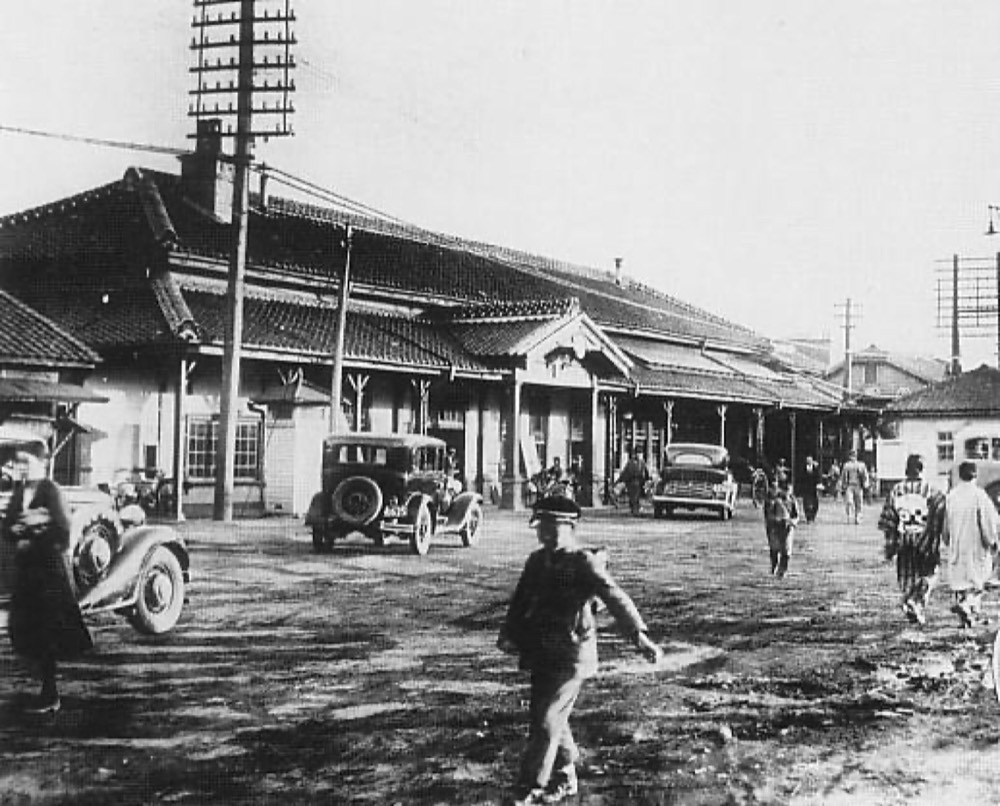
戦前の昭和期の鳥栖駅。孫の一家が暮らした集落はこの駅の構内の線路脇にあった作者不明 / Public domain / Wikimedia Commons
線路脇の集落
両親が働きに出ていたため、幼い正義の世話は祖母が担った。家計を支えていたのは養豚と焼酎の密造である。
1960年2〜3歳佐賀県鳥栖市 鳥栖駅前の食堂街
祖母のリヤカーで残飯を集める
祖母の李元照は毎日リヤカーを引いて駅前の食堂を巡り、客の食べ残しをもらって線路脇の豚のエサにした。豚は赤豚5頭だったとされる。祖母は3歳か4歳の正義に「散歩に行くぞ」と声をかけ、残飯のドラム缶と並べて荷台に乗せた111。
孫は2010年の発表会で、荷台が腐ったにおいの汁でヌルヌルと滑り、雨上がりの凸凹道では振り落とされそうだったと振り返った。大好きだった祖母を嫌いになった時期もあったと告白している。祖母はキムチを連想させ、キムチは韓国を連想させたためだった11。
滑るんですよ、ヌルヌルして孫正義、2010年の新30年ビジョン発表会で祖母のリヤカーを回想
1950年生誕前〜幼少期佐賀県鳥栖市 無番地の自宅
父・三憲の密造焼酎と「売れる仕組み」
中学を出てすぐに働き始めた三憲は、トタン屋根の自宅で焼酎を密造した。警察に何度も踏み込まれたが密造をやめなかった。近所に売るだけでは量が限られるため、自転車で行く先々に一升瓶を置いてもらい、売れた分から代金を受け取る方法を考えた。この方法は口コミで広がった11。
サマが三憲本人から聞いた話では、酒好きを集めてただで飲ませて客にした。焼酎の搾りかすで豚を育て、東京の業者に売ったともいう。四男の泰蔵は、当時の父が毎晩帰宅すると鏡の前で笑顔の練習をしていたと著書に書いている1211。
やっぱり商売に笑顔は大事だからね孫三憲、四男・泰蔵の回想による
1962年4〜5歳佐賀県鳥栖市 幼稚園からの帰り道
「朝鮮人！」の声と額に当たった石
幼稚園の帰り道、日本人の子どもたちに「朝鮮人！」とののしられ、投げられた石が額に当たって血が流れた。孫はバーバーの取材に、この出来事を境に自分が日本人の子どもではないと次第に気づいたと語っている。石を投げられた回数は資料によって1回と複数回に分かれる1014。
この後、孫は在日韓国人としての出自を隠し、安本正義として生きた。2015年の日経ビジネスのインタビューでは、小学生と中学生の時に自殺を考えるほど悩んだと語った。サマも、孫が子ども時代に言葉と身体の両方でいじめを受けたというインタビューを引いている1512。
本気で自殺しようかと思ったぐらい悩んだ孫正義、2015年の日経ビジネスのインタビューで小中学生時代を回想
父の商売と父の教育
密造酒の利益を元手に、三憲はパチンコ店と消費者金融を始めた。正義が小学校低学年の頃には一家は裕福になり、生活に困ることはなくなった11。
1963年5〜6歳佐賀県鳥栖市 自宅
父との相撲と「お前は天才や！」
6歳の頃、正義は父と相撲を取った。何度投げ飛ばされても立ち上がる息子の目を、三憲は後に「オオカミの目」のように見えたと証言している1016。
孫は幼稚園の頃から父に怒られた記憶がなく、勉強しろと言われたこともないという。三憲は椅子から転がりそうになるほどの勢いで褒めた。褒める基準は計算や読み書きの出来ではなく、自分の頭で考えたかどうかだった。15歳下の泰蔵が分数のかけ算を習ったと話すと、三憲は褒めた後で「学校の先生は嘘ば教えよるよ」と言い、他人に習わず自分で考えるよう繰り返した1114。
すごい！お前は天才や！孫三憲、正義の幼少期から繰り返した言葉
1967年9〜10歳佐賀県鳥栖市周辺 父の喫茶店「山小屋」
10歳の提案「タダで飲ませたらええ」
三憲が手作りの喫茶店を開く直前、コーヒー豆の問屋が繁盛しないと見て豆を売らないと言い出した。三憲が打開策を尋ねると、正義は無料で飲ませればよいと答えた。正義が描いた無料券をリンゴ箱3杯分配ると客が集まり、問屋の側が頭を下げに来た1718。
サマも同じ話を孫と三憲の双方から聞いている。無料のコーヒーを目当てに来た客が値の高い菓子を買い、常連になった。三憲はこの時に息子は天才だと確信したという。サマの本は店の場所を東京としているが、杉本は九州の店として書いている1912。
1968年10〜11歳佐賀県鳥栖市 小学校
教師になる道が国籍で閉じる
小学校高学年の正義は担任教師に憧れ、学校の先生になりたいと考えた。当時は日本国籍がなければ公立学校の教員にも公務員にもなれなかった。両親からも、日本人でなければ教師にはなれないと告げられた16。
1989年の『致知』のインタビューで、孫は小さい頃から事業家か政治家のどちらかになると考えていたと語っている。杉本は、教師の夢を持っていた少年が後に「未来の人々からいてくれてよかったと言われる何か」を目標に置き換えたと書いている1620。
1969年11〜12歳佐賀県・福岡県 父のパチンコ店
赤いコイを釣れば1万円
三憲はこの頃に最初のパチンコ店を開いた。佐野眞一の評伝に基づく記事によれば、1980年代初めには一族7人兄妹のうち6人が持つ店が佐賀と福岡で56軒に達していた21。
規制で人気の機種が使えなくなり、パチンコの客足が落ち込んだ時期がある。三憲は店の駐車場に釣り堀を併設し、黒いコイの中に数匹だけ放した赤いコイを釣った客に1万円を出す企画を始めた。この企画で客は店に戻った2111。
1970年12〜13歳福岡県 自宅の食卓
酒に酔った父の「目先のゼニカネ」
事業に成功した後も、三憲はよく嘆いていた。自分は金のために目の前の商売をしているが、それは本来の姿ではないという。酒を飲むと小学生か中学生の正義に向かい、大人になったら目先の金のために人生を使うなと言い聞かせた11。
孫は杉本の取材に、事業家として父から学んだものを問われてこの場面を挙げた。苦しい時期の父ではなく、成功した後の父の言葉だった。孫は今も最も尊敬する人物に父を挙げている11。
俺はまだ男子の本懐を遂げられていない孫三憲、酒席で小中学生の正義に
北九州から福岡へ
一家は無番地を出て一時北九州市に移り、正義が中学生になると福岡市城南区へ転居した11。
北部九州 — 0歳から23歳までの移動
濃い色が佐賀県。鳥栖は佐賀県の東端で、福岡市から南へ約25km、久留米と筑後川を挟んで隣接する
1970年12〜13歳福岡市城南区 自宅
中学生の「経営者として失格たい」
三憲は、来島どっくを率いて「再建王」「四国の大将」と呼ばれた坪内寿夫を褒めていた。坪内は柴田錬三郎の小説『大将』のモデルである。中学生の正義は、尊敬できないと言い切った。斜陽の造船業に人生を賭けるのは時代の流れに逆らうことだという理由だった22。
孫はこの考えを変えておらず、杉本の取材に対しても、時代の流れに逆らう経営は武田勝頼と同じだと語っている22。
1971年13〜14歳福岡市 中学校
担任教師に「塾の責任者になってください」
中学で成績がオール5からオール2まで下がった。危機感を持った正義は、親友のおばに直接頼み込んで森田塾に入った1。
同じ頃、正義は担任教師にカリキュラムを持参し、自分で塾を経営したいので責任者になってほしいと提案した。担任や校長に現在の給与を聞き取り、その2〜3倍を払うと約束して協力を求めたという113。
1972年14〜15歳福岡市 孫家
弟の名は「泰三」ではなく「泰蔵」
四男が生まれた時、三憲は尊敬する経営者の石坂泰三にちなんで「泰三」と名付けようとした。石坂は第一生命と東芝の社長を務め、経団連会長になった人物である。15歳の正義は、4人目なのに「三」はおかしいと異を唱えた。名前は「天下泰平にして蔵に収める」の意で「泰蔵」になった23。
後に泰蔵の大学受験で2浪が決まると、正義は弟を叱り、勉強法を伝えた。泰蔵は東京大学に合格している2314。
4人目なのに三はおかしか孫正義、15歳頃、弟の命名について
1972年14〜15歳福岡市 自宅
家庭教師が『車輪の下』を取り上げ、『竜馬がゆく』を渡す
正義がヘッセの『車輪の下』を読んでいると、家庭教師がそんな暗い本ではなく男らしい本を読めと言い、司馬遼太郎の『竜馬がゆく』を勧めた。正義が気に入ったのは、姉の乙女が龍馬の脱藩を後押しする場面だった2024。
孫はこの時点で何を成したいかは見えていなかったと振り返る。ただ、人生を燃えたぎらせたいという思いだけが強く芽生えたという20。
1973年、渡米を決めるまで
九州の進学校に入学した1973年には、父の病とカリフォルニアでの研修と藤田田との面会が重なった。孫が渡米を決めるまでの経緯は、この1年に集中している。
1973年4月15歳福岡県久留米市 久留米大学附設高校
附設高校に入学、直後に父が吐血する
正義は九州有数の進学校である久留米大学附設高校に入学した。その直後、三憲が洗面器いっぱいに血を吐いて倒れた。若い頃からの過労と酒で十二指腸が破れていた。1歳上の兄は高校を1年で中退し、家計と入院費を支えるために働き始めた1125。
吐血の時期を杉本は高校入学直後とし、孫自身は2015年の講演で「僕が中学生の時」と語っており、資料によって異なる。孫はこの時に事業家になると決めたと語っている1125。
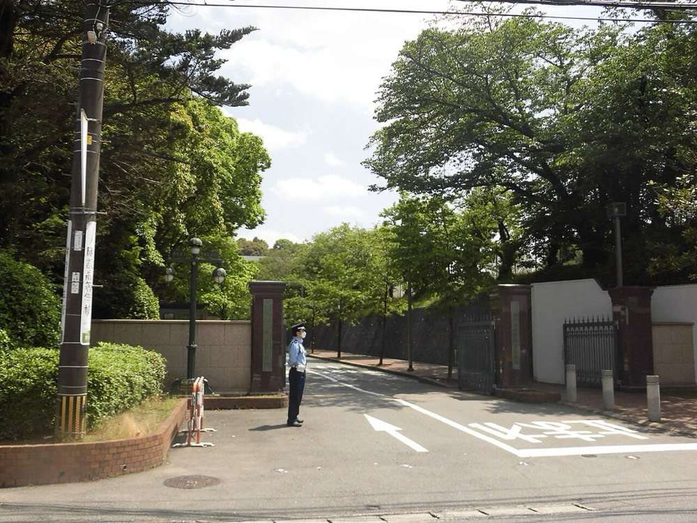
久留米大学附設中学校・高等学校の校舎（2022年撮影）。孫は1973年4月に入学し、翌年2月に中退したhyolee2 / CC BY-SA 4.0 / Wikimedia Commons
どうやって這い上がるか。事業家になろう孫正義、父の吐血を振り返って
1973年7月15歳米カリフォルニア州
高校1年の語学研修で見た青い空
高校1年の夏休みに、正義はカリフォルニアで語学研修を受けた。そこでは白人も黒人もアジア人もヒスパニックも、同じように肩を並べて歩いていた。出自を隠して生きてきた正義には、それが自由な空気に見えたという14。
この研修で見たカリフォルニア大学バークレー校が、4年後の編入先になる24。
1973年8月16歳福岡県久留米市 → 東京・羽田空港 → 日本マクドナルド本社
羽田から藤田田の秘書に電話する
正義は日本マクドナルド社長の藤田田が書いた『ユダヤの商法』を1日に5回読み込み、面会を求めた。久留米の自宅から毎日のように秘書に電話をかけ、6回断られた。市外電話の料金が高いことを理由に、正義は飛行機で上京し、羽田空港から電話をかけた126。
正義は秘書に、3分でよい、目を合わせなくても話をしなくてもよいと伝えた。自分の言葉をそのままメモにして藤田に渡してほしい、あなたが判断しないでほしいとも頼んだ。藤田は面会に応じ、3分の約束は15分になった。米国で何を学ぶべきかという問いに、藤田はこれからはコンピューターの時代だと答えた26124。
私が君みたいに若かったらコンピューターをやる藤田田、1973年夏、東京の社長室で16歳の孫に
藤田田との面会時間：孫が求めた時間と実際の時間（1973年夏）
単位：分。久留米から秘書に電話して6回断られた後、羽田空港から再度電話した
面会の条件として、目を合わせなくても話をしなくてもよいと伝えている。
1261973年12月16歳福岡県久留米市 久留米大学附設高校
担任に語った「アメリカで結果を出せば」
夏の語学研修と韓国旅行から戻った後、正義は高校をやめると宣言した。担任の阿部逸郎は、正義が自分は韓国籍だから日本では認めてもらえない、米国で結果を出せば日本人は評価してくれると話していたと証言している。母と親戚は渡米に反対した13。
1974年2月16歳福岡市 自宅・久留米大学附設高校
母は泣き崩れ、担任は休学届を勧める
父がまだ入院している時に高校を辞めて米国へ行くと告げると、母は泣き崩れた。親戚からは「なんて冷たい奴や」と言われた。正義は母に、病院の医師に聞いたら父は死なないと言っている、何十年先を考えれば家族のためにも自分の人生をささげたいと説明した。兄には、家族の近い将来は兄に頼みたい、自分は遠い将来のために米国へ行くと伝えている1425。
退学届を出しに行くと、担任は驚いて休学届にするよう勧めた。正義はそれを断り、退学届を出した。孫はこれを人生で初めて退路を断った選択だったと振り返る。2010年の講演では、病気の父を置いて米国へ行くことが自分にとっての脱藩だったと語った1427。
それは僕にとっての脱藩だった孫正義、16歳の渡米を振り返って
孫家の3世代が家を出た年齢・働き始めた年齢
単位：歳。父と兄の年齢は学歴の記述から推定した値
祖母・李元照が日本に渡った年齢14歳
父・三憲が働き始めた年齢（中学卒業時）15歳前後
兄が高校を中退した年齢（高校1年）16歳前後
正義が渡米した年齢16歳
祖母は渡航してすぐに結婚し、父は中学を出てすぐ焼酎の密造を始めた。兄は父の吐血を受けて高校を中退した。
1125第2章カリフォルニアの6年Six Years in California
16歳で渡米した孫は、語学学校から高校、短大格の大学を経てバークレーへ編入する。在学中に考案した音声付き電子翻訳機をシャープに売り込み、得た資金で日本のインベーダーゲーム機を米国へ運んだ。22歳で米国の事業を友人に託し、母との約束どおり日本へ帰国する。
英語と飛び級
渡米直後の孫は英語の習得を優先し、日本語を一切話さなかった。高校の課程を数週間で終え、2年足らずで大学の課程も終えている28。
1974年2月16歳米カリフォルニア州オークランド ホーリー・ネームズ・カレッジの英語課程
語学学校で大野優美と出会う
孫が最初に入ったのは、オークランドのホーリー・ネームズ・カレッジが留学生向けに設けていた英語課程である。同じ課程に、2歳年上の日本人留学生・大野優美がいた。後の孫の妻である24。
友人のホン・ルーは2021年のインタビューで、孫の「1日1発明」という自己ルールは優美への約束として立てられたと証言している29。
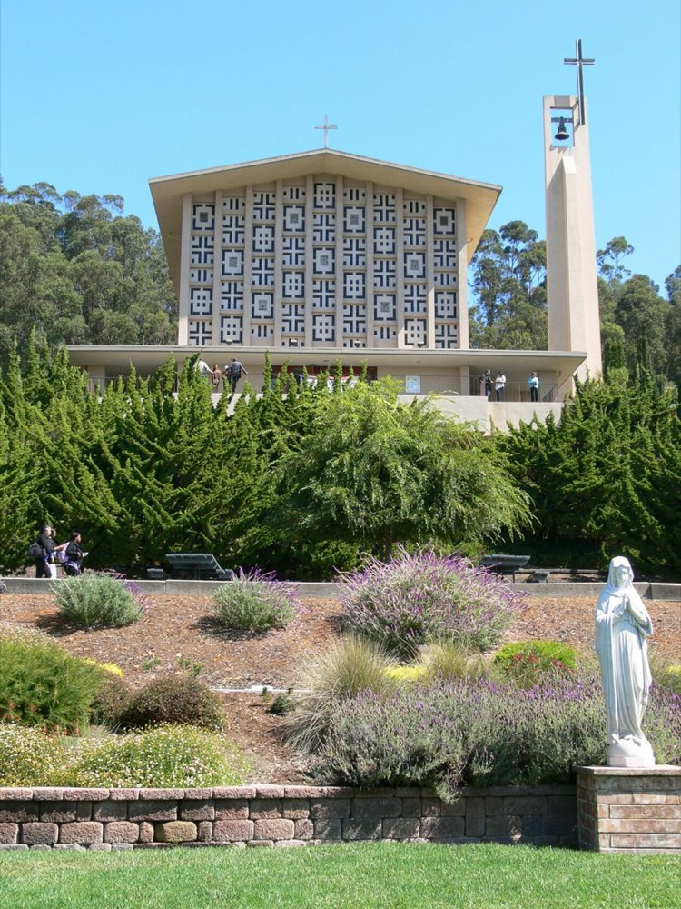
オークランドのホーリー・ネームズ大学のマクリーン礼拝堂（2010年撮影）。孫は1974年2月に、ここの英語課程から米国生活を始めたHolyNamesWebmaster / CC BY 3.0 / Wikimedia Commons
サンフランシスコ湾岸 — 1974年から1980年の6年
線は郡境。高校はサンフランシスコ南隣のデイリーシティ、大学は湾の東側のオークランドとバークレー
1974年9月17歳米カリフォルニア州デイリーシティ セラモンテ高校
編入3日目に校長室へ、飛び級を求める
孫はサンフランシスコ南隣のセラモンテ高校に2年生として編入した。3日で全科目の教科書を読み終え、校長に3年生への飛び級を求めた。理由として挙げたのは、理解している内容に1年をかけるのは教える側にとっても時間の浪費だという点だった。校長は認め、続けて4年生への飛び級も認めた124。
在籍期間は2週間とする資料と3週間とする資料がある。杉本は、飛び級を重ねてわずか3週間で高校を卒業したと書いている141。
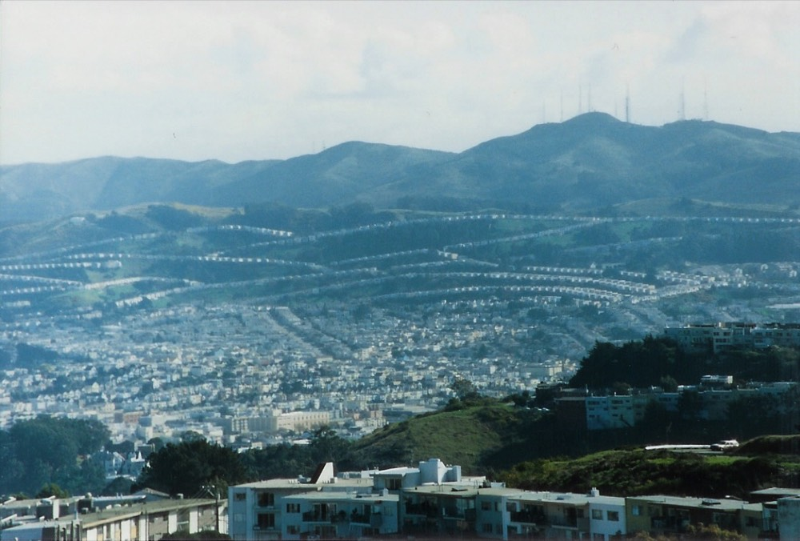
セラモンテ高校があるデイリーシティの街並み。サンフランシスコの南隣の住宅地であるUser:Stilfehler / Public domain / Wikimedia Commons
1974年16〜17歳米カリフォルニア州 大学入学資格の検定試験会場
試験官の上司の上司まで電話をかける
大学入学資格の検定試験で、孫は英語の問題文が読めないだけで内容は解けると主張し、辞書の持ち込みと試験時間の延長を求めた。試験官が断ると、その上司に電話した。さらにその上司へと順に電話をかけ、最後はカリフォルニア州の教育局の責任者に認めさせた114。
認められた条件は辞書の持ち込み可、1科目2時間、3日間の日程だった。終了時刻が厳密に指定されなかったため、孫は辞書を引くのに必要なだけ延長してよいと解釈し、最後まで解き切った1。
1975年9月18歳米カリフォルニア州オークランド ホーリー・ネームズ・カレッジ
留学生として初めての学長賞
孫はホーリー・ネームズ・カレッジの本科に入学し、2年足らずで課程を終えて学長賞を受けた。留学生の受賞は同校で初めてとされる。当時の学生数は約800人、1クラスは15〜20人だった24。
会計学を教えたマルグリット・カークは、孫は目を輝かせていて目立ったと証言している。同校は2023年春学期を最後に閉校した24。
米国での学歴：各課程の在籍期間
単位：か月。ホーリー・ネームズとバークレーは入学・卒業の年月から算出した概算
セラモンテ高校の在籍2〜3週間
編入時に残っていた高校の課程（2〜4年生）3年
ホーリー・ネームズ・カレッジ本科2年足らず
バークレー校（3年次編入から卒業まで）約2年半
高校の在籍期間は2週間説と3週間説がある。バークレーの卒業は1980年3月。
12414指先のコンピューター
19歳の孫は、10年単位で人生の計画を立てた。同じ年に見た1枚の写真が、計画の中身を決めることになる。
1976年18〜19歳米カリフォルニア州
19歳の「人生50年計画」
孫は19歳で、10年刻みの人生計画を立てた。20代で業界に名乗りを上げ、30代で軍資金をためる。40代で大きな勝負に出て、50代で事業を完成させ、60代で後継者に引き継ぐという5段の計画である130。
杉本は2017年の時点で、この計画がここまで予定どおりに進んでいると書いている。金額を伴う記述は後年の語り直しで変わっている可能性がある301。
1976年10月19歳米カリフォルニア州 行きつけのスーパーの駐車場
i8080の拡大写真を見て涙が止まらない
19歳の秋、孫はスーパーの前で車を降り、買ったばかりの科学雑誌『ポピュラー・エレクトロニクス』をめくった。そこにインテルのマイクロプロセッサー「i8080」の拡大写真が載っていた。未来都市の絵に見えたものが、指先に載るコンピューターだと知った26。
孫は涙が止まらず、手足がしびれたと語っている。写真を切り抜いてプラスチックの下敷きに挟み、常に持ち歩いた。寝る時も枕元に置いたという。40年後のアーム買収の交渉の場でも、孫はこの写真の話をしたとサマは書いている2631。
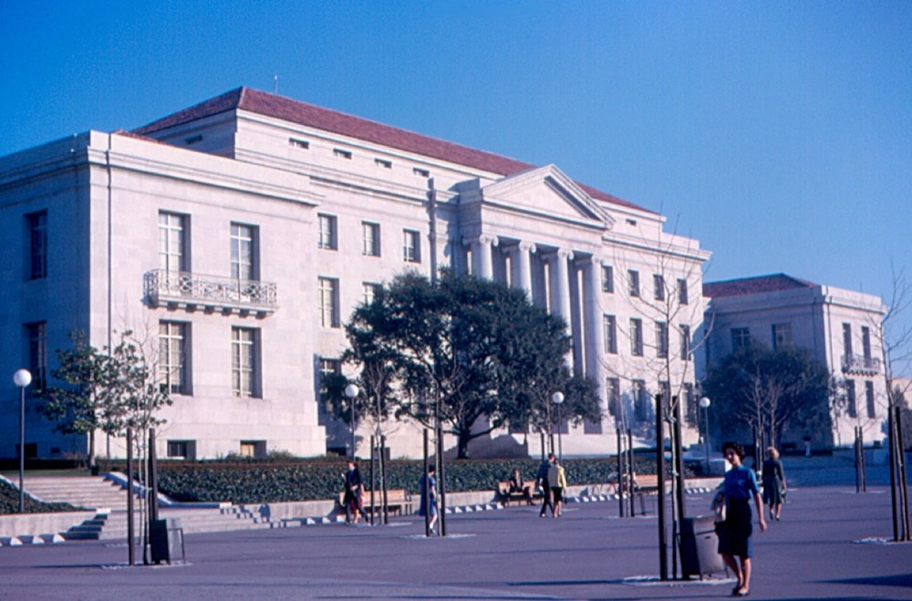
UCバークレーのスプロール・ホール（1962年撮影）。孫は1977年に経済学部へ編入したRoger Wollstadt / CC BY-SA 2.0 / Wikimedia Commons
感動しちゃって涙が止まらなかった孫正義、1976年秋にi8080の写真を見た時を回想
1977年19〜20歳米カリフォルニア州 カリフォルニア大学バークレー校 経済学部
右手に本、左手にフォーク
孫はホーリー・ネームズ・カレッジからバークレー校の経済学部3年生に編入した。同校からバークレーへの編入率は約10%だった。卒業は1980年3月、学位は経済学の学士である24。
大学では勉強の鬼になったと孫は言う。食事中も右手に本、左手にフォークを持った。後年、大学受験で2浪が決まった弟の泰蔵にこの話をして、だからビル・ゲイツが交渉相手でも平気なのだと語っている14。
両目で見ながら食べたらおいしいんだろうなと思いましたよ孫正義、バークレー時代の食事を回想
1日1発明から翻訳機へ
父の健康が回復し、仕送りは十分にあった。孫はそれに頼ることが心に引っかかり、自分で学費を稼ぐ方法を考え始めた14。
1977年19〜20歳米カリフォルニア州バークレー
1日5分の発明、250件を約40の要素で採点
孫は毎日1件発明するという規則を自分に課した。1日5分だけノートに向かい、たまった発明のメモは250件ほどになった141。
次に孫はコンピューターで採点する仕組みを作った。採点の要素は部品1個あたりの費用や部品の新しさの指数、その部品について自分が持つ知識の指数など約40項目である。これらを掛け合わせて点数順に並べた。最上位に来たのが、キーボードで「こんにちは」と打つと液晶に「Hello」と表示し、発音もする音声機能付きの電子翻訳機だった132。
発明の候補から1件を選ぶまで
単位：件。約40の採点要素を掛け合わせて点数順に並べた。参考として帰国後の事業選定の候補数を灰色で示す
ノートにたまった発明のメモ（1日5分）約250件
採点の結果選んだ発明（音声付き電子翻訳機）1件
参考：帰国後の事業の候補（1980〜81年）約40件
発明の候補を250件超とする資料もある。
141331977年19〜20歳米カリフォルニア大学バークレー校
音声合成の教授を成功報酬で口説く
孫は、バークレー校で音声合成を研究していた物理学教授フォレスト・モーザーに協力を求めた。手元に資金はなく、前払いはしない代わりに、実用化できれば成功報酬を払うと約束した。モーザーは引き受けた321。
開発のため、孫は大学の門の近くのビル2階に「M SPEECH SYSTEM INC」を設立した。社名にはモーザーの頭文字を冠した。1階はタバコ店だった。アポロ宇宙船のマイクロコンピューターを担当した設計者チャック・カールソンも試作機の開発に加わった12824。
1978年20〜21歳日本各地の電機メーカー
50社に手紙を出し、カシオで「ダメですね」
夏休みに入った孫は、日本の電機メーカー約50社に手紙を出した。返事が来たのは10社ほどだった。各社はモーザー教授の名前には関心を示したが、20歳そこそこの学生の話は聞かなかった334。
松下電器産業は創業者・松下幸之助の指示でスタンフォード大学と翻訳機を共同開発していた。カシオ計算機の担当者は試作機を見るなり「ダメですね」と言い、孫を帰した。孫は帰り道に、二度とこの会社には来ないと誓ったという。本命と考えたカシオとシャープは最後に回していた3。
1978年20〜21歳日本国内の電話ボックス
真夏の電話ボックスで、シャープ幹部への伝手を突き止める
担当者の段階で断られ続けたため、孫はシャープだけは幹部に直接会うことにした。人脈はなかった。孫は暑い電話ボックスにこもって手当たり次第に電話をかけ、シャープに在籍したことのある弁理士を突き止めた。その弁理士を通じて、専務の佐々木正への面会が実現した3。
1978年8月21歳奈良県天理市 シャープ中央研究所
父と2人、風呂敷包みの翻訳機を抱えて天理へ
孫は風呂敷に包んだ試作機を抱え、天理の研究所を訪ねた。前日に電話を受けた父の三憲が博多から駆けつけた。孫は父に「オヤジは挨拶だけでよか」と念を押していた。親子はこの頃まだ日本名の安本を名乗っていた3532。
佐々木は1階の商談スペースで試作機を見ると、その話なら2階でと言い、自分専用の応接室に2人を案内した。佐々木は技術の新しさはあまり感じなかったが、若者の目の力に引かれ、助けたいと考えたという。訪問の時期は1977年夏とする資料もある3234。
1978年8月21歳奈良県天理市 シャープ中央研究所 2階応接室
1言語2,000万円、8言語で最大1億6,000万円
佐々木は契約金を何に使うのかと尋ねた。孫が手伝ってくれた仲間に払うと答えると、佐々木はその答えを評価した。佐々木は英語版の研究費として2,000万円を出すと決め、国連の公用語など8言語についても1言語ごとに2,000万円を出すと続けた。最大で1億6,000万円の契約になる33436。
佐々木は、カートリッジを差し替えて言語を切り替える発想をソフトウェアの時代の先取りと見ていた。翻訳機の技術は1年後のシャープの電子翻訳機「IQ-3000」に一部が採り入れられ、後継機を経て電子手帳「ザウルス」につながった3。
孫が受け取った額は資料によって異なる。杉本は約1億円とし、井上篤夫の評伝の系統は約1億円のうち特許の契約金を4,000万円とする。英語圏には170万ドルとする記述があり、孫本人は1992年に100万ドル近くと語った31。
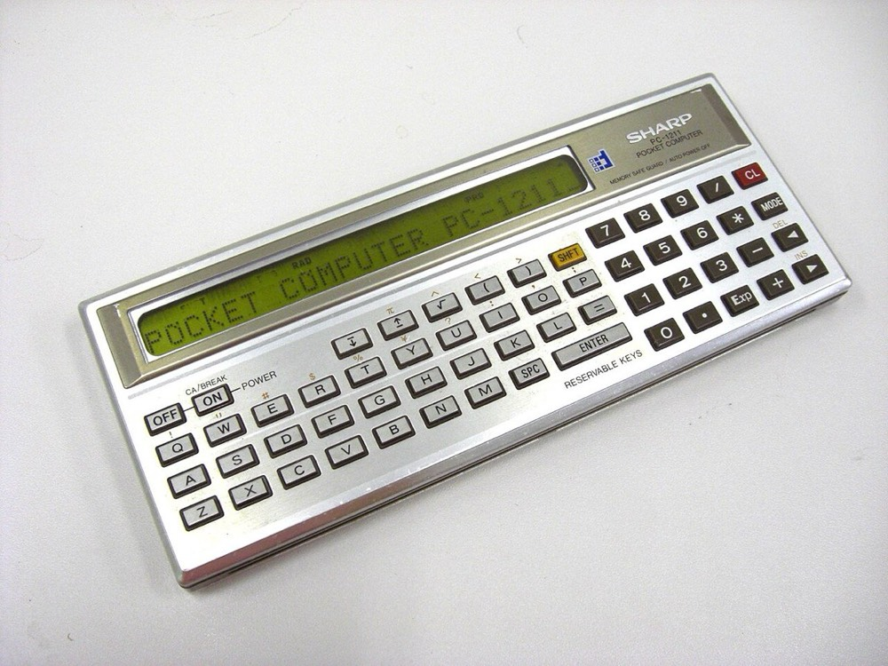
シャープのポケットコンピュータ PC-1211（1980年発売）。孫の翻訳機の技術は、シャープの翻訳機IQ-3000と後継機を経て電子手帳につながったYagshi / CC BY 3.0 / Wikimedia Commons
シャープとの翻訳機契約の内訳（1978年）
単位：万円。最大額は8言語すべてを開発した場合の上限
英語版の研究費2,000万円
特許の契約金（井上篤夫の評伝の系統）4,000万円
孫の受取額（杉本の記述）約1億円
契約の最大額（1言語2,000万円×8言語）1億6,000万円
受取額は資料によって4,000万円〜1億6,000万円まで諸説ある。訪問の時期を1977年夏とする資料もある。
313436翻訳機の売却額：ドル建ての諸説
単位：万ドル。1億6,000万円の換算は1979年の相場1ドル220〜250円による
1億6,000万円を当時の相場で換算約65万〜73万ドル（換算）
孫本人の発言（1992年）100万ドル近く
英語圏の記述170万ドル
170万ドルは近年の為替で円の金額を換算した数字である可能性がある。
11978年9月23日21歳米カリフォルニア州
正午に試作機が動き、結婚式は1週間延びる
試作機が完成した日は、優美との結婚式の予定日だった。式は午後2時からだったが、孫は試作機の議論から離れなかった。式は1週間後の9月30日午後3時に延期された1。
立会人は役所の受付の女性と警備員だけの略式の式で、孫は21歳、優美は23歳だった。結婚の年は1978年とする資料と1979年とする資料に分かれる1。
インベーダーとゲームセンター
シャープから得た資金のうち、協力者に払った残りが次の事業の元手になった。孫はM SPEECH SYSTEMを「ユニソン・ワールド」と改称し、日本と米国の時間差に目を向けた2833。
1978年20〜21歳米カリフォルニア州オークランド アイスクリーム店
こってりしたミルクでなければ払わない
孫は優美とアイスクリーム店に入り、こってりした味のミルクでなければ代金を払わないと言った。応対したアルバイトの学生が作ったアイスに孫が納得し、2人の付き合いが始まった。この学生がホン・ルーである28。
ホンは台湾生まれで、6歳で両親と来日し、都立城南高校を卒業していた。孫より3歳年上で、バークレーで土木工学を学んでいた。身長は190センチほどあった。孫はホンに初代ユニソン・ワールドの実務を任せた2833。
1979年21〜22歳日本 → 米カリフォルニア州
1台100万円のインベーダー機を5万円で買う
当時の日本ではインベーダーゲームが社会現象になり、テーブル型の機械が置かれた喫茶店に若者が列を作っていた。孫はこのブームは早く終わると見た。新型の登場で型落ちとなり、倉庫で処分費用がかさんでいた業者から、1台5万円で20台を仕入れた。代金は利益が出てから払う条件だった331。
輸送には2か月かかる船便ではなく、1台7万円の航空便を選んだ。日本での機械の価格は80万〜90万円、杉本の記述では100万円である。米国では約50万円で、値上がりの途中だった。孫は最終的に350台を米国に送ってレストランなどに置き、売上を孫が6、店が4の割合で分けた。半年の利益は1億円を超えた133。
インベーダーゲーム機1台の価格と孫の仕入れ値（1979年頃）
単位：万円
孫の仕入れ値5万円
日本から米国への航空便の運賃7万円
米国での機械の価格約50万円
日本での機械の価格80万〜90万円
日本での価格（杉本の記述）100万円
仕入れは20台から始め、最終的に350台を米国に送った。代金は利益が出てから払う条件だった。
3311979年21〜22歳米カリフォルニア州バークレー キャンパス脇のゲームセンター
断られた翌日、現金2,000万円を持って再訪する
孫はバークレー校のキャンパス脇にあった最大級のゲームセンターの買収を申し込んだ。一度断られると、翌日に現金2,000万円を持って再び訪ねた1。
買収後、孫は機種ごとの売上を毎日グラフにし、何日目で採算に達するかを確かめた。売上の少ない機種はすぐに減らした。3日働かせて質が変わらない従業員はその日のうちに解雇し、時給の安い学生を雇って勤務後に無料のコインを配った。1か月で売上は3倍になった1。
ホン・ルーと置いたインベーダー機の売上も、孫は毎日グラフにしていた。杉本は、1980年代後半に日本ソフトバンクが導入した日次の業績管理の原点をこのグラフに置いている37。
バークレーのゲームセンター：買収後1か月の売上
買収前の売上を100とした指数
機種別の売上を毎日グラフにし、売上の少ない機種を減らした。
1米国の学生時代に動いた主な金額（1978〜1979年）
単位：万円。インベーダー機の当初仕入れ額は1台5万円×20台で算出
インベーダー機の当初仕入れ（20台）100万円
ゲームセンターの買収2,000万円
シャープからの受取額（杉本の記述）約1億円
インベーダー事業の半年の利益1億円超
受取額は諸説ある。インベーダー事業の利益は売上を孫6、設置店4で分けた後の額。
33311979年21〜22歳米カリフォルニア州バークレー 初代ユニソン・ワールドの事務所
佐々木正が見たパソコン同好会
佐々木は米国出張の折に、バークレーの初代ユニソン・ワールドを訪ねた。佐々木の記憶では、事務所はパソコン同好会のような場所だった。孫の隣にいた青年、ホン・ルーについても、孫と同じような目をした男だったと振り返っている28。
同じような目をした男だったなぁ佐々木正、初代ユニソン・ワールドを訪ねた時のホン・ルーについて
母との約束
1980年3月22歳米カリフォルニア州バークレー → 福岡
伸びている事業を友人に託して帰国する
孫はバークレー校の経済学部を卒業した。米国の事業は伸びており、信頼できる仲間もいた。それでも孫はホンに、日本に帰って事業を始めると告げた。理由は、大学を出たら帰国するという、渡米の時に母と交わした約束だった331。
孫は初代ユニソン・ワールドをホンに託し、家族が待つ福岡へ向かった。この後1年半、孫に収入はない331。
俺は日本に帰る。日本で事業を始める孫正義、1980年、バークレーでホン・ルーに
第3章みかん箱の上の旗揚げStanding on a Mandarin Box
帰国した孫は収入のないまま1年以上をかけて事業を選び、パソコン用ソフトの卸売に決めた。資本金の8割を展示会に使い、上新電機とハドソンから独占の取引を得る。担保のない1億円の融資は佐々木正の保証で実行され、日本ソフトバンクの月商は1年で200倍を超えた。
福岡・雑餉隈の1年半
1980年3月に帰国した孫は、福岡市博多区の雑餉隈に企画会社を設けた。米国の会社と同じ「ユニソン・ワールド」の名を使った2代目である。何の事業をするかは、まだ決めていなかった2833。
1981年3月23歳福岡市博多区 雑餉隈 木造モルタルの雑居ビル2階
みかん箱の上で「1兆、2兆と数える」
事務所はエアコンのない一室だった。事業の調査のために雇ったアルバイト2人を前に、孫はみかん箱の上に立った。売上を5年後に100億円とし、10年後には500億円にする。30年後には豆腐屋のように1丁、2丁と兆の単位で数える会社にすると、孫は1時間話した。当時の売上はゼロだった28381。
2人は数日から2週間のうちに辞めた。建物は父が持っていた木造トタン屋根の建物だったとする資料もある。売上1兆円は25年後の2006年3月期に達成された。汐留本社26階の大会議室には、今もみかん箱が置かれている38128。
豆腐のように1丁（兆）、2丁（兆）と数えるようにしたい孫正義、1981年3月に雑餉隈でアルバイト2人へ
みかん箱の上で示した売上目標と実際の到達（1981年3月の発言）
単位：億円。発言時点の売上はゼロ
5年後の目標100億円
10年後の目標500億円
30年後の目標（1兆、2兆と数える）1兆円〜
実際：2006年3月期（25年後）の売上高1兆円超
目標の数字はPHPオンラインと梶谷通稔の連載による。売上1兆円の到達は杉本の記述による。
381281981年23〜24歳福岡市博多区 雑餉隈
25の条件と40の事業案、1年を超える無収入
孫は事業の条件をノートに書き出した。「若くてもできる」「もうかる」「ユニークである」「日本一になれる」など25項目になった。最も重い条件は、50年間情熱を傾けられるかどうかだった331。
候補はコンピューター本体から光ファイバー、病院チェーンまで約40あった。孫はそれぞれに人員計画と10年分の予想損益を作成し、25の条件で点数を付けて調べた。米国で妻となった優美とは日本でも入籍し、第1子を妊娠していた。収入のない期間は1年を超えた331。
結論はソフトウェアの流通業だった。パソコン本体の開発には巨額の費用がかかり、競合も多い。一方でソフトは作り手がばらばらで、最大手のハドソンでさえプログラムをカセットテープに録音して雑誌経由で売っていた。孫はソフトが集まる会社という意味で「ソフトバンク」と名付けた3339。
1981年23〜24歳福岡市 日本総合研究所のマネジメント・ゲームのセミナー
風呂敷から翻訳機を出し、立石勝義を口説く
孫は日本総合研究所が福岡で開いたマネジメント・ゲームのセミナーに参加した。そこで住宅会社の社員だった植松逸雄に会い、コンピューターの仕事を一緒にしようと誘った。植松は会社を辞め、8歳年下の社長のもとに移った39。
同じセミナーで、植松の先輩で孫より13歳上の立石勝義も紹介された。孫は風呂敷からシャープと契約した翻訳機を取り出し、熱心に話した。立石は話の中身は覚えておらず、笑顔の良い人という印象だけが残ったという。勤め先の親会社が倒産したこともあり、立石は入社を決めた39。
東京・麹町の小部屋
佐々木正は、九州にいても人と情報は集まらないと孫に東京へ出るよう助言した。孫は福岡から東京に移った39。
1981年9月3日24歳東京・麹町 経営総合研究所のビル2階
西日の差す小部屋で日本ソフトバンクを設立
孫は日本ソフトバンクを設立し、24歳で社長に就いた。事務所は日本総合研究所の一部門である経営総合研究所のビルの2階で、夕方になると西日が差し込む小部屋だった。資本金は1,000万円で、半分の500万円は間借り先の経営総合研究所が出資した。資本金を2,000万円とする資料もある394041。
パレスホテルで開いた設立の記者会見に来た記者は5〜6人だった。9月から12月までの売上は約200万円にとどまった1。
九州でやっていたのではダメだ。東京に出てきなさい佐々木正、1981年、孫に
1981年9月24歳東京 日本総合研究所 理事長室
野田一夫の「夢じゃダメだ」
孫は挨拶を兼ねて、日本総合研究所の理事長に就いたばかりの野田一夫を訪ねた。直立不動で話を聞く孫に、野田は夢と志の違いが分かるかと問うた。夢は少年少女の淡い期待であり、志は決意だと野田は説いた14。
孫は駆け出しの頃に野田から「君は見所がある」と言われたことが、飛び上がるほどうれしかったと振り返る。サインを求められると、孫は今も「志高く」と書く14。
夢じゃダメだ。志を持ちなさい野田一夫、1981年、日本総合研究所で24歳の孫に
1981年10月24歳大阪エレクトロニクスショー 会場
資本金の8割、800万円を一度の展示会に使う
孫は大阪の家電見本市に、ソニーや松下電器と同格の最大級のブースを借りた。費用は800万円で、資本金の8割にあたる。ソフトハウスに出展料を負担させず、国内で手に入るパソコンソフトを1か所に並べる計画だった。看板には「パソコン・ソフト販売の一大革命！」と書いた40421。
出展者の第1号は東京・日本橋の内外データサービスである。営業本部長の清水洋三は社長の了解を取らずにその場で参加を決めた。清水は麹町で孫と3時間話し、孫が大宇宙から説き起こして目の前の面会に至る話をしたことを覚えている。13社が出展し、ブースには人だかりができた。しかしソフトハウスと来場者がその場で直接商談したため、日本ソフトバンクにはほとんど商談が残らなかった4042。
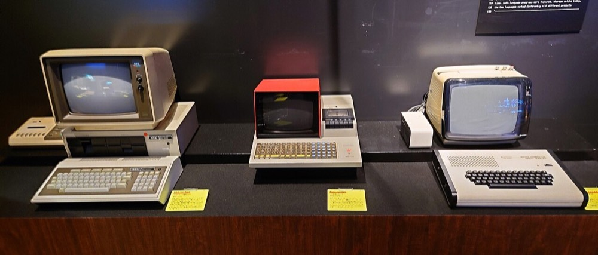
1980年前後の日本のパソコン。左からNEC PC-8001、シャープ MZ-80K、日立 ベーシックマスター。日本ソフトバンクはこれらの機種向けのソフトを流通させたDarklanlan / CC BY 4.0 / Wikimedia Commons
私はまず大宇宙から考えるのです孫正義、1981年、麹町で清水洋三に
資本金1,000万円の用途：大阪エレクトロニクスショー（1981年10月）
単位：万円
- 展示会のブース費用 800万円80%
- 残り 200万円20%
出展したソフトハウス13社からは出展料を取らなかった。
4042上新電機とハドソン
展示会の直後、大阪・日本橋では300坪のパソコン専門店が開店していた。売り場は広いが、並べるソフトが足りなかった。
1981年10月24日24歳大阪・日本橋（でんでんタウン） 上新電機「J&Pテクノランド」
小松左京の挑発から生まれた300坪
1981年5月、作家の小松左京は大阪の財界人の会合で上新電機社長の浄弘博光を挑発した。秋葉原には年に1,000台のパソコンを売る店があるのに、大阪の日本橋は振るわないという。浄弘は自社がやるなら日本一にすると応じ、5か月後に3フロア計300坪のコンピューター専門店を開いた。当時の秋葉原の店は大きくても10坪ほどだった42。
初日の売上は1,080万円に達した。浄弘の右腕だった藤原睦朗は、ソフトの品ぞろえが手薄であることに気づいていた4243。
上新さんがやらんで、どこがやるんでっか小松左京が1981年5月に浄弘博光へ
J&Pテクノランドの売り場面積と当時の秋葉原の店（1981年）
単位：坪。秋葉原は大型店の目安
秋葉原のパソコン店（大きい店）約10坪
J&Pテクノランド（3フロア計）300坪
開店は1981年10月24日。初日の売上は1,080万円だった。
421981年23〜24歳大阪・天満橋 日経大阪本社のマイコン教室
受講料9万円の教室で聞いた孫の名
藤原は日本経済新聞社が主催する2日間のマイコン教室を受講した。受講料は9万円で、浄弘が日経の懇話会の会員だったため2割引になった。講師の池孝三はJ&Pのすぐ近くでアイク・コンピューターを経営していた43。
藤原がソフトを集める会社はないかと尋ねると、池は大阪のショーで会った孫の名を挙げ、日本のマイコン業界のリーダーになるかもしれないと評した。池は1985年8月の日航ジャンボ機墜落事故で亡くなった4344。
1981年12月24歳東京・麹町の日本ソフトバンク ⇔ 大阪の上新電機
新幹線代がなく「年内は予定が埋まって」と断りかける
藤原から電話が来た時、日本ソフトバンクの資金は底をつき、翌月の家賃と給料の支払いにも困っていた。孫は上新電機も日本橋も知らなかった。大阪に来てほしいと言われると、年内は予定が埋まっていると断ろうとした。実際は出張費がなかった44。
藤原は米国のパソコン事情を次々に質問し、電話は1時間に及んだ。藤原が帰り際の浄弘に報告すると、浄弘は東京なら明日自分が行くと答えた44。
1981年12月24歳東京・麹町 → 大阪・日本橋 J&Pテクノランド
実績ゼロで求めた独占契約
浄弘は青果店の長男で、13歳から店に立った。間口3メートルに満たない部品店を、関西有数の家電チェーンに育てた人物である。麹町で孫に会った浄弘は、若い頃の自分にそっくりだと言った4445。
数日後に大阪を訪ねた孫は、売り場をソフトでいっぱいにしてみせると述べた。取引先も資金もなく、品ぞろえもこれからだと認めた上で、他社からは仕入れないという独占の取引を求めた。浄弘は1か月以内に全国のソフトを集めることを条件に受け入れた。孫は約1万本の調達を引き受け、納期は1982年1月31日とされた。独占の合意を1981年11月とする資料もある444546。
分かりました。命懸けでやってみせます孫正義、1981年12月、浄弘博光の条件に
1981年12月24歳東京・六本木 ハドソン東京営業所（マンションの一室）
「工藤さん、僕は天才なんですよ」
孫と植松は、当時最大手のソフトハウスだったハドソンの東京営業所を訪ねた。ハドソンは1973年に札幌でアマチュア無線の店として始まった会社である。喫茶店にする予定だった物件が二重契約になっていたため、無線の店になった47。
孫は自分は在日韓国人だと名乗った上で、ハドソンのソフトを独占で扱わせてほしいと求めた。応対した専務の工藤浩は27歳で、詐欺師ではないかと疑った。しかし父に箸を持っただけで天才だと褒められて育ったという話などに引き込まれ、1時間以上聞いた。工藤は社長の兄・裕司に相談せずに独占契約を決め、条件として預託金3,000万円を12月末までに振り込むよう求めた。孫は期限までに振り込んだ4748。
1981年12月24歳東京・JR五反田駅前 電波新聞社本社
差別発言に工藤が激怒し、雑誌の流通経路を失う
工藤は雑誌『マイコン』を発行する電波新聞社に筋を通すため、孫を連れて同社を訪ねた。同社の幹部は、なぜ朝鮮人と付き合わなければならないのかと言い放った。工藤は孫の表情を確かめる間もなく、関係ないでしょうと激怒した48。
この結果、ハドソンは『マイコン』を通じた販売の経路を失い、日本ソフトバンクとの独占取引に絞られた。孫は工藤に、うちで雑誌をやるから大丈夫だと答えた。杉本は、出版事業への参入のきっかけとなったこの場面を、取材で初めて明らかになった事実としている4849。
工藤さん、大丈夫ですよ。ウチで雑誌をやるから孫正義、1981年末、電波新聞社を出た後に
1981年12月24日24歳北九州市 JR小倉駅 → 新幹線で博多へ
クリスマスイブ、数千万円の紙袋を預けて公衆電話へ
記録的な寒波の日、孫は小倉駅で立石と会うなり、重い紙袋を預けて公衆電話に走った。寒さに耐えかねた立石が喫茶店に入ろうとすると、孫は受話器から顔を離して、そこにいてくださいと叫んだ。紙袋には数千万円の札束が入っていた。ハドソンに払う預託金だったとみられる4050。
孫は博多までの新幹線の中で話し続けた。シャープのポケットコンピューター用のプログラム集を売って資金をつないでいると立石に明かした40。
創業1年目に動いた主な金額（1981年9月〜1982年）
単位：万円
1981年9〜12月の売上約200万円
大阪エレクトロニクスショーの出展費800万円
J&Pテクノランドの開店初日の売上（参考）1,080万円
経営総合研究所からの株の買い戻し1,500万円
ハドソンへの預託金3,000万円
上新電機向けに集めたソフト約1万本4,600万円
第一勧業銀行の無担保融資1億円
電話帳にない業種
上新電機向けのソフト約1万本は4,600万円分になった。孫と立石と植松の3人で全国のソフトハウスを回って集めた。仕入れの資金を用意するため、孫は銀行に融資を申し込む50。
1982年24歳東京・麹町
社員8人と着物姿のパート
この時の社員は孫を含めて8人だった。内訳は正社員3人と契約社員2人とアルバイト1人、それにいつも着物姿で出社するパートの女性1人である。立石は営業に加えて経理、資金調達、人事も任された50。
立石は1996年に脳の病気で引退した。2011年、孫は汐留本社で幹部に立石を紹介し、創業間もない頃は立石さんが何から何まで全部やってくれたと話した50。
日本ソフトバンクの陣容（1981年末〜1982年初め）
単位：人。合計8人
- 社長（孫） 1人12%
- 正社員 3人38%
- 契約社員 2人25%
- アルバイト 1人12%
- パート（着物姿の女性） 1人12%
立石勝義は営業のほか経理と資金調達と人事を兼ねた。1982年12月には30人になる。
50521982年24歳東京 複数の銀行
「電話帳に載っていない業種に融資はできません」
ソフトウェアの流通業は日本に前例がなく、電話帳の業種欄にも載っていなかった。孫と立石がいくら説明しても、銀行は相手にしなかった。杉本は、在日韓国人と分かる孫正義の名を名乗っていたことも影響した可能性があると書いている5051。
孫は会社を本名の孫正義で興していた。親戚はそれだけはやめろと反対していた53。
1982年24歳第一勧業銀行 麹町支店
30分の面会で「1億円、無担保、プライムレートで」
支店長の御器谷正之は1981年10月に茅ヶ崎支店から着任したばかりだった。30分のつもりで会った御器谷に、孫は担保も保証人もなしに、最優遇の金利で1億円を貸してほしいと求めた。支店長の権限で貸せる無担保の融資は1,000万円が上限である。財務諸表を求められると、孫はそんなものはありませんと答えた51。
御器谷は上新電機を担当する難波支店の支店長・山之内和彦に裏付けを頼んだ。浄弘はぜひ融資をと答え、藤原も上新電機が保証してもよいと答えた51。
第一勧業銀行への融資の申し込みと支店長の権限（1982年）
単位：万円
支店長の権限で貸せる無担保融資の上限1,000万円
ハドソンへの預託金（参考）3,000万円
孫の申し込み額（無担保・最優遇金利）1億円
佐々木正が退職金と自宅を担保に差し出すと申し出て、頭取の村本周三が担保を取らずに融資を決めた。
51541982年24歳大阪 上新電機本社
浄弘、孫の出資の依頼を断る
同じ頃、孫は上新電機に出資を頼んでいた。記者会見を開くので浄弘にも出席してほしいとも求めた。藤原は前向きだったが、浄弘は反対した。上新電機の色が付けば、ライバルの販売店が孫との取引を拒むかもしれないという理由だった。藤原が杉本の取材で初めて明かした話である51。
孫君には悪いけど、ここは断れ浄弘博光が1982年初めに藤原睦朗へ
1982年24歳第一勧業銀行 本部
若手の一言「コンピューターを触ったことがあるのですか」
企業部長の西田美雄は、常識外れもいいところだと言った。案件は行内から10人ほどを集めた自由討議にかけられたが、議論は2時間近くまとまらなかった5154。
黙っていた産業調査部の若手の笠井が手を挙げた。そもそもこの中にコンピューターを触ったことがある人はいるのかと問い、それを知らないのは日本の遅れた銀行くらいだと言った。議論は動き出し、西田は御器谷にこの案件と心中する覚悟があるかと迫った。御器谷は、何かあれば辞める覚悟を決めた5154。
お前は本件と心中する覚悟があるのか西田美雄（第一勧業銀行企業部長）、1982年、御器谷正之に
1982年24歳第一勧業銀行 本店
佐々木正「私の退職金と自宅を担保に」
銀行から裏付けを求められた佐々木は、孫正義は私が保証すると答えた。退職金と自宅を担保にしてもかまわないと申し出て、人事部に自分の退職金の額を試算させていた54。
報告を受けた頭取の村本周三は、佐々木さんが言うならシャープが保証するのと同じだと述べた。佐々木さんから担保を取るなと指示し、融資はその場で決まった。担当の常務は頭取に怒られたとこぼし、佐々木も妻に怒られたという。支店長の決裁枠の10倍にあたる1億円の無担保融資は、こうして実行された54134。
孫正義は私が保証します佐々木正、1982年、第一勧業銀行に
1982年24歳（取材は2016〜2017年）東京
「それはね……かわいいからだよ」
孫は佐々木を、見返りを求めずに若い起業家を支える仏様のような恩人と語っている。杉本は101歳の佐々木に、なぜそこまで孫を助けたのかと尋ねた。佐々木はしばらく黙った後、表情を和らげて一言だけ答えた。この若者の踏み台になってもよいと思ったとも語っている55。
孫は創業期を支えた10人を生涯の恩人と定め、毎年ゴールデンウィーク中の平日1日を「恩人感謝の日」として自ら恩人をもてなしている。10人には佐々木と浄弘と藤原、工藤兄弟と御器谷と清水が入る。赤字の雑誌の広告費を半分負担したNEC副社長の大内淳義も恩人の一人である5649。
それはね……かわいいからだよ佐々木正、101歳、杉本の取材に
雑誌と月商の立ち上がり
仕入れ先のハドソンと販売先の上新電機を押さえた後、日本ソフトバンクの月商は急速に伸びた。同じ年に、アスキーとの対立から出版事業も始まる。
1982年24〜25歳東京・六本木 工藤浩の自宅
会社を賭けたポーカーと、味噌汁の豆腐
孫はたびたび工藤の自宅に泊まり込んだ。ある夜のポーカーで負けが込んだ孫は、日本ソフトバンクを賭けると言い出した。工藤もハドソンを賭けた。孫の手はフォーカードだったが、工藤の手はロイヤルストレートフラッシュだった49。
翌朝、孫は工藤の妻が作った味噌汁の豆腐を見つめた。そしてこの豆腐のように1兆、2兆と数える経営者になると言った。工藤は、それはもう俺の会社だからなと返した。工藤は後年も、本当なら自分がソフトバンクのオーナーだと冗談を言う4914。
工藤さん、俺はこの豆腐みたいになるんです孫正義が1982年頃に工藤浩の自宅で
1982年24〜25歳東京 経営総合研究所
500万円の株を1,500万円で買い戻す
上場したいと話す孫に、工藤は株の半分を他社が持っているなら今のうちに買い戻すべきだと助言した。資本金の半分を出資していた経営総合研究所は、出資額500万円の3倍にあたる1,500万円を求めた49。
孫はうろたえたが、工藤は今のうちに買い戻せと強く勧めた。孫は親族などから資金を集めて株を買い戻した49。
経営総合研究所の持ち株：出資額と買い戻し額（1981〜1982年）
単位：万円
1981年の出資額（資本金の半分）500万円
1982年頃の買い戻し額1,500万円
工藤浩の助言で買い戻した。資金は親族などから集めた。
40491982年4月28日24歳日経産業新聞 紙面
「わが国初のパソコン用パッケージソフト専門流通業者」
日経産業新聞は日本ソフトバンクを、流通経路の盲点を突いて急成長する会社として紹介した。見出しの表現は「わが国初のパソコン用パッケージソフト専門流通業者」だった50。
藤原によれば、孫はこの頃、米国の石油会社の例を挙げていた。地域のシェアを押さえた後に少しずつ値段を上げるという戦略である。杉本は、ロックフェラーの石油事業を手本にした考え方が創業期からあったと見ている50。
1982年24〜25歳東京
アスキーなど3誌が広告を締め出す
孫より2学年上の西和彦は、1977年6月に『月刊アスキー』を創刊していた。日本ソフトバンクがハドソンと上新電機を押さえてソフト流通の仕入れ先と販売先を独占したことに、アスキーは対抗した。主要な2誌と組み、日本ソフトバンクの広告の掲載を拒否したのである。孫は自社でパソコン専門誌を創刊して対抗した57。
1982年5月24歳東京
『Oh!PC』『Oh!MZ』創刊、返品率85%
日本ソフトバンクは月刊誌『Oh!PC』と『Oh!MZ』を同時に創刊した。初刷はいずれも5万部だったが、返品率は85%に達した。1誌あたり月に約1,000万円の赤字が出た。孫は撤退せず、手元の資金を使ってテレビCMを流した1。
出版のいろはと業界の要人を孫に紹介したのは、書店の常務だった田辺聰である。田辺も後に10人の恩人の一人に数えられた49。
『Oh!PC』『Oh!MZ』創刊号の初刷と実売（1982年5月）
単位：部（1誌あたり）。実売は返品率85%から算出
1982年11月25歳東京
読者カードを全数分析し、増ページと値下げを同時に行う
創刊から半年後、孫は返送された読者カード数万枚をすべて分析した。その上でページ数を2〜3倍に増やし、定価を680円から580円に下げた。値下げ後の号は発売から3日で売り切れ、出版事業は黒字になった1。
雑誌の定価：読者カード分析の前後（1982年）
単位：円。値下げと同時にページ数を2〜3倍に増やした
1982年24〜25歳米サンフランシスコ ホテルのロビー
藤原睦朗、身長190センチのホン・ルーに会う
孫の紹介で、藤原はサンフランシスコでホン・ルーに会った。ホテルのロビーで待ち合わせると、身長が190センチほどあるホンはすぐに分かったという。ホンは几帳面で、藤原の帰国後も米国の最新情報をファクスで送り続けた。孫からはホンを「清く正しく美しい人間」と聞かされていた33。
後にホンはUTスターコムを創業し、中国への進出にあたって上新電機に出資を求めた。出資額は1億円だったが、同社がナスダックに上場すると価値は数十倍になった。業績が悪化した上新電機を、この株が支えたと杉本は書いている33。
1982年12月25歳東京・麹町
月商150万円が12月に3億2,000万円
1982年の月商は、1月の150万円から5月に1億円、12月に3億2,000万円へ伸びた。年間の売上高は20億円に達し、社員は12月時点で30人になった。英語圏の社史は、創業1年目の月商が1万ドルから230万ドルに増えたと記している5257。
福岡ではみかん箱に、東京では折り畳み椅子に乗って社員を鼓舞した。孫は1兆、2兆に加えて、早く上場しなければならないと言い始めた。立石は、小さなところに目標を置かない人なのだと受け止めた。1983年の売上高は45億円になる57。
大ぼらと言えば大ぼらだけど立石勝義、創業期の孫の目標について
日本ソフトバンクの月商（1982年）
単位：万円
英語圏の社史は、創業1年目の月商が1万ドルから230万ドルに増えたと記している。
52日本ソフトバンクの売上高（1981〜1983年）
対数目盛。1981年は9〜12月の4か月分
1981年（9〜12月）約200万円
1982年20億円
1983年45億円
100万円1億円100億円
第4章余命5年の病床と復帰The Hospital Bed and the Return, 1983–1993
創業2年目に慢性肝炎と診断され、孫は約3年を病室と自宅で過ごした。その間に会社は外部から招いた社長の下で拡大し、創業期の仲間の多くが去った。1986年に社長へ復帰した後は、社員の集団離脱とNCC BOXをめぐる稲盛和夫との交渉を経験する。日次決算を導入し、1990年代の株式公開に向けた体制を整えていく。
診断と秘匿
1982年の売上高は20億円、1983年は45億円に伸びていた。社員は30名から125名に増え、孫は「早く上場しなければならない」と口にし始めていた5758。その最中に病気が判明する。
1983年25〜26歳東京都新宿区信濃町 慶應義塾大学病院
健康診断の再検査で慢性肝炎、「5年以内には確実」
社員一斉の健康診断で孫は要再検査となり、会社に近い慶應義塾大学病院で再検査を受けた。診断は慢性B型肝炎で、医師は即時の入院を指示した。肝硬変に進む時期を孫が問うと、医師は「5年以内には確実」と答え、その先は肝臓がんになると告げた。e抗原が異常値を示し、ウイルスが増殖している状態だった。孫は翌日に入院した57。
診断の年は資料によって1982年春と1983年春に分かれる。当時は長女が1歳半で、妻・優美は次女を妊娠中だった58。
死を待つだけです慶應義塾大学病院の担当医、診断時に孫へ
1983年25〜26歳東京都内 商談に向かうタクシーの車内
立石勝義の膝に足をのせて横になる
朝8時半の朝礼から日付が変わるまで働く日が続き、孫は体のだるさを過労によるものと考えていた。ある日、タクシーの車内で「ちょっと、ごめんね」と言って足を隣の立石勝義の膝にのせ、顔を手で覆って横になった。やがて事務所の執務机の横に簡易ベッドが置かれた。社員も徹夜で寝袋を使う職場だったため、これを不審に思う者は少なかった59。
1983年25〜26歳東京都千代田区 日本ソフトバンク本社
病名は2人だけに、社員には「米国出張中」
病名を知らされたのは立石と植松逸雄の2人だけで、それぞれ別々に告げられた。立石は銀行が融資を引き揚げることを恐れ、孫に「私以外の人には絶対に口外しないでください」と求めた。秘密を守るために、植松が知っているかどうかも確かめなかった。社員には、米国のユニソン・ワールドの残務処理で出張が続いていると説明した59。
1983年25〜26歳慶應義塾大学病院 病室
点滴の音だけの病室で泣く
治療はインターフェロンの投与だけで、完治の見込みはほとんどないとされた。孫は物欲が消え、命がほしい、娘の笑顔を見ていたいと繰り返し考えたと振り返っている。治療の苦しさで泣いたのではないとも本人は語っている5958。
めそめそ泣きました。悲しくて、つらくて孫正義、闘病期を振り返って
1983年25〜26歳東京（ホン・ルーがカリフォルニアから来日）
ユニソン・ワールドをホン・ルーに100万ドルで譲る
病を聞いたバークレー時代の共同経営者ホン・ルーが来日した。優美は涙ながらに「夫は30歳まで生きられないかもしれない」と伝えた。孫は米ユニソン・ワールドをホンに完全に譲ると告げ、保有株の売却額を100万ドルとした。ホンが資金がないと答えると、孫は融資先の金融機関を紹介し、利益から少しずつ払えばよいと伝えた60。
ホンは後にUTスターコムを創業する。日本ソフトバンクの取引先だった上新電機はこの会社に1億円を出資し、その価値はナスダック上場で数十倍になった33。
大森康彦の3年
孫は闘病中の経営を任せる人物を探し、恩人の佐々木正（シャープ）に金融に強い人の紹介を頼んだ。
1983年25〜26歳東京都千代田区紀尾井町 ホテルニューオータニ地下の店
佐々木正の席で大森康彦と会う
佐々木は日本警備保障（現セコム）副社長の大森康彦との食事に孫を誘った。大森は野村證券出身で、孫より27歳上だった。大きな黒縁眼鏡にダブルのスーツという風貌である。孫は見舞いに来た大森に会うたびに「日本ソフトバンクをお願いします」と社長就任を頼んだ。佐々木は大森が引き受けるとは考えていなかったが、大森は受け入れた60。
日本警備保障の創業者・飯田亮への配慮から、大森はいったん同社を退職してヘッドハンティング会社に登録し、そこに日本ソフトバンクが接触する手順をとった。1983年4月、孫は代表取締役会長に退き、大森が社長に就いた6041。
1983年5月27日25歳東京都千代田区丸の内 東商スカイルーム
900人が集まった「大森康彦君と孫正義君を激励する会」
飯田亮と野村證券社長の田淵節也が発起人となり、900人近くが集まった。三和銀行頭取の川勝堅二・イトーヨーカ堂社長の伊藤雅俊・NEC社長の関本忠弘・すかいらーく社長の茅野亮らが名を連ねた。大森はこの席で孫との「タンデム経営」を宣言した。立石は会社の評価が上がると期待したが、杉本は、大森に二人三脚の考えはなく関係はすぐに亀裂を生じたと書いている6061。
1983年6月16日25歳東京都千代田区大手町 経団連会館／慶應義塾大学病院 病室
西和彦とビル・ゲイツのMSX発表、病室で「やられた」
アスキーの西和彦は経団連会館で「互換性のあるホームパーソナルコンピュータシステム発表会」を開いた。ソニー・NEC・松下電器・日立・キヤノンなど14社の重役が並び、西の隣にはマイクロソフトのビル・ゲイツが座った。家庭用パソコンの規格をMSXに統一する構想である。病室で報道を知った孫は一瞬敗北を感じたが、高額のロイヤルティーが最終的に利用者の負担になる点を問題とした61。
西は孫より2学年上で、1982年頃にはアスキーなど3誌が日本ソフトバンクの広告掲載を拒否していた。孫は自社でパソコン誌を創刊して対抗した経緯がある57。
1983年6月21日25歳東京都内 病室を抜け出した記者会見場
「天才と神童の10日間戦争」
6月20日夜の電話協議は平行線に終わり、孫は「これから戦争だ」と宣言した。翌21日に病室を抜け出して記者会見を開き、国内のパソコンメーカー21社に独自規格案への参加を呼びかけたと発表した。病身を隠したまま深夜の折衝にも出ている。6月26日夜に西と会談し、ソフト開発会社からロイヤルティーを取らず、仕様をすべて公開することで合意した6162。
この件では一歩も譲りません孫正義、1983年6月、MSXをめぐる記者会見
1984年26〜27歳大阪市 新大阪駅（日本ソフトバンク大阪営業所）
会長はレンタカーのサニー、社長は自動車電話付きのハイヤー
大学を中退して大阪営業所に入った馬場一は、半年に1度来阪する孫を、最も安いレンタカーの日産サニーで新大阪駅に迎えに行った。孫は助手席であれこれ質問した。大森が来るときは、使いもしない自動車電話付きのハイヤーを手配させられた。馬場は「会長はサニーなのになんでだろう」と思ったという62。
この時期、社員が人目を避けて病室を訪れ、規則ばかりを求める大森の運営を訴えるようになった。大森は新日本製鉄・三井造船・ブリヂストン・ヤマハ発動機などから幹部を次々に招き、銀座での交際費もかさんだ。孫は「そう言うな」となだめるしかなかった62。
1984年26〜27歳東京／大阪
植松逸雄の退社と立石勝義の大阪転勤
ユニソン・ワールドの創業期から孫を支えた植松は雑誌部門への異動を命じられ、居場所がないと考えて退社した。大森は立石にも大阪転勤を命じた。立石は「指示が出ればハイという以外にありませんでした」と振り返る。孫は病室で泣くことしかできなかった。立石は大阪で新人の馬場を鍛え、馬場は2001年以降のブロードバンド事業で営業の中心を担う6263。
病室の読書と転院
1984年26〜27歳慶應義塾大学病院 病室
『竜馬がゆく』の再読と「5年もある」
16歳の渡米も事業の選択も、司馬遼太郎の『竜馬がゆく』が契機だったと孫は語っている。病室で再読し、坂本龍馬が大きな仕事をしたのは最後の5年ほどだと考え直した。自分にも少なくとも5年はあると考えるようになり、闘病の姿勢が変わったという6364。
入退院の期間に読んだ本は、『300年王国』では漫画を含め約3,000冊、別の資料では約4,000冊とされる。中心は歴史書、中国古典、経営書だった631。
俺には少なくとも5年はある孫正義、病室で『竜馬がゆく』を再読して
1984年26〜27歳慶應義塾大学病院 病室
25文字の「孫の二乗の兵法」
病床で孫は『孫子』の兵法とランチェスターの法則を組み合わせ、5文字×5行の25文字に経営の指針をまとめた。「一流攻守群」「道天地将法」「頂情略七闘」「智信仁勇厳」「風林火山海」の5行である。『孫子』の「風林火山」に「海」を加えたのも、「一流攻守群」と「頂情略七闘」も孫の創作とされる。公開されたのは約25年後、2010年7月のソフトバンクアカデミア開校記念講演だった165。
このうち「勇」は退く勇気を指すと孫は説明している。退却は攻撃より10倍難しく、トップにしか決められないという65。
1984年3月26歳神奈川県川崎市 虎の門病院分院
父が見つけた記事と熊田博光医師の「ステロイド離脱療法」
闘病は2年近くになっていた。父・孫三憲が記事を見つけ、「正義、これでお前の病気が治るかもしれんぞ」と電話してきた。虎の門病院の熊田博光医師が考案した療法で、ステロイドを短期間投与して急性肝炎に近い状態を作り、投与を止めて免疫を高める。熊田の60代の患者が自己判断でステロイドをやめて改善したことが、発見の発端だった63。
孫が「治りますか」と問うと、熊田は7割から8割は治ると答えた。孫は慶應義塾大学病院から虎の門病院分院に移った。転院日は3月13日とする資料と、治療開始を3月17日とする資料がある。記事を知った時期も1984年1月の新聞記事とする資料があり、媒体と月は特定できない6358。
70〜80%、大丈夫ですよ熊田博光医師、1984年の診察で
1984年6月9日26歳神奈川県川崎市 虎の門病院分院
e抗原が正常値に戻り、退院
インターフェロンでは下がらなかったe抗原が、治療開始後に急速に下がった。5月の連休明けには正常値になり、6月9日に孫は退院した。診断から2年以上が経過していた。その後も断続的な通院と入院は続き、社長への復帰は1986年2月まで待つことになる636641。
1984年26〜27歳東京都内 日本データネット
雑誌事業で半年に約10億円の赤字
孫の療養中、新規事業として設立した日本データネットは消費者向け商品の価格と販売店をデータベース化して雑誌で売る事業を始めた。月の赤字は約1億円、半年で累計約10億円に達し、雑誌は廃刊になった。同社は1990年1月に日本ソフトバンクと合併している167。
孫はこの約10億円の損失を補う目的もあって、1986年にNCC BOXの量産に踏み切ったと『300年王国』は書いている68。
日本ソフトバンクの売上高の推移（1982年〜1997年3月期）
単位：円。対数目盛で、目盛が1つ進むと10倍になる。1986〜1995年は年次の数値を確認できた資料がないため空けた
1982年20億円
1983年（診断の年）45億円
1985年12月期（孫の療養中）115億円
1996年3月期（連結）1,711億円
1997年3月期（連結）3,597億円
10億円100億円1,000億円1兆円
1996年3月期以降は米国での買収を含む連結の数値で、次章の範囲にあたる。比較のために灰色で置いた。
575267復帰と離反
1984年7月26歳東京都千代田区九段 日本ソフトバンク本社
宮内謙との初対面、ベッドのある社長室
日本能率協会に勤めていた宮内謙は、大森の誘いで転職を予定し、あいさつに訪れた。孫は大森が招く幹部の1人と考えて会ったが、執務机の横にはまだベッドがあった。孫はすべての机にパソコンが載り、それがネットワークでつながると語った。宮内は圧倒された。周囲に止められて能率協会を辞められずにいた宮内は、この面会で転職を決め、同年10月に入社した66。
宮内が大森と知り合ったのは、能率協会時代に経済誌へ書いた経営者論の取材だった。原稿料は1回約10万円である。大森は宮内に「君、いつまでもそんな虚業みたいなことを」と言って転職を勧めた69。孫は今も、あのときの宮内は横柄だったと冗談を言う。孫は自分を、新しい事業に惹かれて家を出る映画の「フーテンの寅さん」に例え、そのたびに「みやうっちゃん、後はよろしく」と宮内に任せてきたと語っている6669。
僕は会った瞬間に孫さんに惚れたんだ宮内謙、1984年7月の初対面を振り返って
1986年2月23日28歳東京都千代田区 日本ソフトバンク本社
臨時取締役会で「役員の40歳定年制」
大森の就任後、経費は増えたが業績は伸び悩んだ。孫は佐々木を介して社長交代を申し出たが、大森は拒んだ。孫は佐々木と相談し、臨時取締役会で役員の40歳定年制を導入すると告げた。他の役員の賛同は事前に取り付けていた。当時56歳の大森は事実上の解任となり、交代は3月3日に公表された69。
大森は「孫氏は有能だが、まだ若い」とコメントした。孫は後年、大森を「プロ経営者」と評し、志でつながる関係ではなかったと振り返っている。本人の略歴書は1983年4月に会長、1986年2月に社長復帰と記録しており、離任は約2年10か月である6941。
役員の40歳での定年制度を導入することにしました孫正義、1986年2月の臨時取締役会
1986年9月29歳東京（新会社は東京・大阪・名古屋・仙台・福岡に拠点）
ソフトウイング事件、約20人の集団離脱
当時の国内パソコンソフト市場は約500億円で、日本ソフトバンクは直販を除く流通の5割を押さえ、約7,000店に卸していた。1986年夏、商品部と営業の約20人が退社し、新会社ソフトウイングを設立した。社内の受発注システムも改良を加えて持ち出され、仕入れ値と卸値の情報はすべて新会社に渡った。背後には西和彦のアスキー・コナミ・システムソフト・三井物産がいた6970。
新会社は仕入れ値を高く、卸値を安く設定して取引先を獲得し、宮内によれば日本ソフトバンクの粗利益は半分になった。別の資料は、復帰後の卸売の粗利率が30%から10%へ下がったと記録している。杉本は、従来の立志伝がほとんど触れない事件だと書いている701。
本心はすがりついて泣きついてでも止めたかった孫正義、ソフトウイング事件について
ソフトウイング事件の前後（1986年）
単位：%。卸売の粗利率と、国内パソコンソフト流通（直販を除く）に占める日本ソフトバンクの比率
流通シェア（事件前）約50%
卸売の粗利率（復帰前）30%
卸売の粗利率（復帰後）10%
当時の市場規模は約500億円、取引先は約7,000店。宮内謙は事件で粗利益が半減したと述べ、別の資料は粗利率が30%から10%へ下がったと記録している。両者は時点と定義が異なる。
7011986年28〜29歳合宿会場（場所の記載なし）
2泊3日の合宿と宮内の誓い
孫は宮内らを集めて2泊3日の合宿を開いた。空いた調達部門の責任者に宮内を起用し、大阪に転勤していた立石を東京に呼び戻して本部長として宮内の上に置いた。合宿の結論は基本に忠実なコスト管理だった。宮内は「この造反者たちを一掃してやる」と誓い、10年以内に達成すると宣言した。ソフトウイングは1993年にカテナに買収されている7037。
1986年3月28歳雑誌『日経ベンチャー』の誌上
西和彦との対談「同じにおいがする」
ソフトウイング事件の半年前、2人は誌上で対談している。孫は「二人は同じにおいがする。西さんは先攻型、僕は後攻型」と述べた。西が「いやいや、そちらの方が軽薄や！」と返すと、孫は「彼は関西出身。商売となるとがめつい」と応じた。孫は2人の共通点を「ロマンチストだが現実的」と表現した37。
アスキーはバブル崩壊後に多角化が裏目に出て経営が行き詰まり、日本興業銀行の支援を受けた。孫にもアスキー買収の打診があったが、孫は応じなかった。大学で教えていた西は2005年、日経産業新聞に、銀座で一晩にロマネコンティを7本空ける生活には何の意味もないと語っている37。
1987年29〜30歳東京
佐々木正の「同志的結合」とストックオプション
大森の時代とソフトウイング事件の離反を経て、孫は胸の内を佐々木にだけ明かした。佐々木は「同志的結合に勝る強い結合はないんだよ」と諭した。孫は志を共有できなかった自分にも原因があったと考えた。同時に報酬の仕組みも必要と考え、宮内の発案で、シリコンバレーで始まったばかりのストックオプションを導入した71。
NCC BOXと稲盛和夫
1985年の通信自由化で、長距離電話に第二電電（DDI）・日本テレコム・日本高速通信の3社が参入した。ただし新電電を使う利用者は、毎回「0077」などの4桁の番号を先にダイヤルしなければならなかった7273。
1985年27〜28歳東京都渋谷区 道玄坂のファミリーレストラン
大久保秀夫と毎晩の議論、「俺と結婚しよう」
新日本工販（現フォーバル）社長の大久保秀夫は孫より3歳上である。初対面で孫は約40分遅刻し、「どことも取引せずウチとやってください」と迫った。遅刻を嫌う大久保の印象はよくなかった。数か月後に孫から誘われ、深夜1時頃に会って新電電の成否を議論した。以後、毎晩11時頃から道玄坂のファミリーレストランで手書きの図面を広げるようになった7368。
大久保は5歳のときに交通事故で死の宣告を受けた経験を話し、孫も余命5年の話をした。呼び方は「社長さん」から「大久保さん」に変わり、家族ぐるみの付き合いが始まった。遅刻の時間は資料の判読で「40分」と「4分」が混在している7368。
大久保さん、俺と結婚しよう！孫正義、1985〜1986年 道玄坂のファミリーレストランで
1986年28〜29歳東京（発注先は東芝とシャープ）
手のひら大のNCC BOXを100万個発注
約1年の議論で、2人は最も安い新電電の回線を自動で選ぶ手のひら大のアダプター「NCC BOX」を考案した。販売実績のないまま、孫は100万個を東芝とシャープに発注し、30億円を超える製造費を負った。端末は無料で配り、利用された新電電からロイヤルティーを受け取る設計である。日本におけるこの方式の基本特許は孫が保有する6874。
1986年12月24日29歳京都市山科区 京セラ本社 大会議室
クリスマス・イブの京セラ、「50万個ウチで買うたる」
第二電電を率いる稲盛和夫に、孫と大久保はNCC BOXを説明した。京セラの役員約20人が並び、稲盛の隣には第二電電の設立を提案した千本倖生が座っていた。説明が終わると稲盛は50万個の購入を即決したが、条件は第二電電への独占供給だった6875。
2人は全社からロイヤルティーを受け取る設計だと説明したが、交渉は平行線のまま夜まで続き、7時間に及んだ。食事もとらずに説得され、2人は独占契約に署名した。京都のビジネスホテルへ向かう途中、孫は「みじめだね、大久保さん」とこぼした687677。
それ、ナンボや？ 50万個ウチで買うたる稲盛和夫、1986年12月24日 京セラ本社
1986年12月25日29歳京都市山科区 京セラ本社 応接室
翌朝、出社する稲盛を待って契約書を取り返す
翌朝、2人は約束なしに出社する稲盛を待ち、契約の破棄を求めた。稲盛は1時間近く2人を罵倒したが、最後は契約書を返した。帰りの新幹線で孫は「なあ、大久保さん。今ならやめてもいいよ」と言った。大久保が見た唯一の弱気な孫だったという76。
その後、他の新電電とロイヤルティー契約を結び、西武百貨店の協力で無料配布も実現した。『300年王国』は初年度で30億円超の製造費を回収したと書き、フォーバルの沿革に基づく資料は累計ロイヤルティーを約20億円、稼働期間を2001年5月までの約14年とする767874。同席していた千本は、後年もこの撤回をビジネスのルールを顧みない行為だと語ることがあり、杉本も千本の言い分に理があるとしている75。
NCC BOXをめぐる金額（1984〜2001年）
単位：億円。「皮算用」は稲盛和夫の独占購入を受けた場合に見込んだ売上の幅の上限
日本データネットの雑誌事業の赤字（半年累計）約10億円
NCC BOX 100万個の製造費30億円超
稲盛の50万個購入で見込んだ売上（上限）50億〜80億円
初年度に回収した製造費（『300年王国』）30億円超
累計ロイヤルティー（2001年5月まで）約20億円
回収額は『300年王国』とフォーバルの沿革に基づく資料で異なる。前者は初年度で製造費30億円超を回収したと書き、後者は14年間の累計ロイヤルティーを約20億円とする。
1687674日次決算、レドモンド、本田宗一郎
1987年7月29歳米ワシントン州レドモンド マイクロソフト本社
ゲイツの単独インタビューと『PC WEEK』
新雑誌『THE COMPUTER』創刊号のため、孫はビル・ゲイツへのインタビューに出向いた。英語のできる社員がおらず、孫自身が聞き手を務めた。冒頭でゲイツは机上の『PC WEEK』を示し、毎号読めば業界で何が起きているかが分かると勧めた。孫は日本語版の版権を取得し、後に発行元ジフ・デービスの出版部門の入札に参加することになる7980。
君は『PC WEEK』は読んでるの？ビル・ゲイツ、1987年7月、レドモンド
1988年30〜31歳東京 日本ソフトバンク本社／米国
日次決算と「千本ノック」、ソフトバンク・アメリカ設立
孫は月次の業績管理を日次に変え、売上と経費を決算書と同じ形式で毎日把握する専用システムを作成させた。女性社員1名が1日30分データを入力すると全社の日次財務諸表が出力され、通常50〜100本程度の管理指標に対して数千本のグラフが作成された。孫はこれを有視界飛行から計器飛行への移行と表現した。全社での稼働は1989年とされる170。
組織は1チーム10人以下に分けて採算を管理し、権限をリーダーに預けて稟議を省いた。原型は米国時代にホン・ルーと飲食店に置いたインベーダーゲームの売上を毎日グラフにしていた経験である。同じ1988年にはソフトバンク・アメリカを設立し、1989年には米ジフ・デービスの『PC Magazine』日本版を刊行した375272。
1988年30〜31歳東京都内 かかりつけの歯科医院
歯科医院でケーキを持って本田宗一郎を待つ
かかりつけの歯科医から本田技研工業の創業者・本田宗一郎も通っていると聞いた孫は、会わせてほしいと頼んだ。歯科医は宗一郎の予約の直後に孫の予約を入れた。その日は宗一郎の誕生日で、孫はケーキを持って治療が終わるのを待った。宗一郎はコンピューター産業の話に聞き入り、夏の鮎釣りパーティーに孫を誘った。時期は肝炎から復帰した1980年代後半とされる。年は特定できず、ここでは1988年の位置に置いた81。
今考えると歯医者でケーキというのも笑えるよね孫正義、本田宗一郎との出会いを振り返って
1988年30〜31歳東京都新宿区西落合 本田宗一郎邸
鮎釣りパーティーで「CPUってのはなんだ？」
約半年後に本当に招待状が届いた。庭には天竜川を模した小川が流れ、財界の招待客が集まっていた。無名の孫が現れると、宗一郎は「おお！あの時の君か！」と近づいてきた。「そもそもパソコンってなんだ」「CPUってのはなんだ」と次々に質問し、孫が車で言えばエンジンだと答えると、それが進化したらどうなるのかと重ねて尋ねた81。
電気やITを不得手としていた宗一郎が目を輝かせる姿に、孫はホンダが伸びた理由を見たと語っている。2010年代に人型ロボットを構想した際、孫はホンダの和光研究所でASIMOを見て「本田宗一郎さんも喜びますよ」と述べている8182。
国籍、社名、合弁
1990年32〜33歳東京 法務省／家庭裁判所
日本国籍の取得と「孫」という姓
1981年に本名で会社を興そうとしたとき、親戚は一族の出自が知られるとして反対した。孫は、本名を隠して商売はしたくないと答えている53。1990年に日本国籍を取得する際、法務省は孫という姓の日本人は存在しないとした。そのうえで、日本風の姓に変えるか孫が日本の姓であることを証明するよう求めた83。
孫は先に日本国籍を持つ妻・優美に家庭裁判所へ氏の変更を申し立てさせた。実生活で使う孫姓と戸籍上の姓が異なり不便だという理由で、申し立ては認められた。改めて法務省に問い直すと、担当官は「一人います。あなたの奥さんです」と答えたと複数の媒体が伝えている83。
1990年7月32歳東京
「日本」を外し、ソフトバンク株式会社へ
株式会社日本ソフトバンクは商号をソフトバンク株式会社に変更した。同年1月には日本データネットと合併している。この年、孫は国内のパソコンのうちネットワークにつながっているものは5%に満たないと見積もっていた677271。
1991年33〜34歳東京
ノベル、シスコとの合弁と、清算した2社
ネットワークの普及を見込んだ孫は、米国の製品を日本に持ち込む合弁を相次いで設立した。1991年に設立したノベル・ジャパンの出資比率は、米ノベル54%・ソフトバンク26%である。残りはNEC・東芝・富士通・キヤノン・ソニーの5社が4%ずつを出資した。同社の年商は1994年に1億3,000万ドルに達した7252。1994年には米シスコシステムズと日本シスコシステムズを設立し、出資各社の資金は合計4,000万ドルだった72。
失敗した合弁もある。1991年の米ビジネスランドとの合弁ビジネスランド・ジャパンは2,000万ドル規模で始めたが、1年以内に清算した。システムバンクでは半年で約1,000万ドルを失ったとされる72。
ノベル・ジャパンの出資比率（1991年）
単位：%。国内のハードウェアメーカー5社は各4%
- 米ノベル 54%54%
- ソフトバンク 26%26%
- NEC・東芝・富士通・キヤノン・ソニー 計20%20%
同じ社史系の資料でも、メーカーを4社とする版と5社とする版がある。ここでは合計が100%になる5社の版を採った。
72521991〜1994年の合弁・新規事業の金額
単位：万ドル。成功例と清算例を並べた
ノベル・ジャパンの年商（1994年）1億3,000万ドル
日本シスコシステムズ設立時の出資（各社合計、1994年）4,000万ドル
ビジネスランド・ジャパンの事業規模（1991年、1年以内に清算）2,000万ドル
システムバンクの損失（半年）約1,000万ドル
金額はいずれも米国の社史系資料による。日本語の一次資料では確認できていない。
721993年35〜36歳東京
上場準備と資産管理会社エムエーシー
1982年から「早く上場しなければならない」と言い続けてきた孫は、1990年代前半に株式公開の準備を進めた。主幹事は野村證券で、事業法人部門の担当は北尾吉孝だった。公開直前の株主構成は、孫の資産管理会社エムエーシーが77.4%、孫個人が5.1%である57714。
同じ1993年秋、孫は米ラスベガスでCOMDEXの運営会社を訪ね、資金がないまま買収を申し入れている。この場面は次章で扱う84。
第5章見本市と雑誌とYahoo!Trade Shows, Magazines and Yahoo!, 1994–1999
1994年の店頭公開で、ソフトバンクは市場から数百億円単位の資金を調達できる会社になった。孫はその資金で米国の見本市と出版社を買い、そこで得た情報からYahoo!への出資にたどり着く。5年間の買収総額は1ドル100円換算で5,000億円を超えたが、孫自身が後に成功と認めるのはYahoo!の1件だけである。
店頭公開と北尾吉孝
1994年7月22日36歳東京 日本証券業協会の店頭市場
公開価格11,000円、初値18,900円
ソフトバンクは店頭市場に株式を公開した。公開価格1株11,000円に対し初値は18,900円で、公募185万株による調達額は214.68億円だった。公開後の発行済株式1,425万株で計算すると、時価総額は約2,693億円になる。調達額には214.68億円、200億円、1億4,000万ドルの3説がある4。
公開前の株主構成は、孫の資産管理会社エムエーシーが77.4%、孫個人が5.1%だった。米国の社史系資料は公開時の評価額を30億ドル、孫の持分を70%と記録している472。
店頭公開の規模（1994年7月22日）
単位：億円。時価総額は初値18,900円×公開後の発行済株式1,425万株で計算した
公募による調達額214.68億円
比較：1996年3月期の連結売上高1,711億円
初値で計算した時価総額約2,693億円
調達額は214.68億円・200億円・1億4,000万ドルの3説がある。売上高は公開から2年後の連結値で、規模の比較のために灰色で置いた。
4671995年37〜38歳東京 ソフトバンク本社
野村證券の北尾吉孝が44歳で常務に
株式公開を野村證券側で担当した事業法人部長の北尾吉孝が、44歳で常務取締役として入社した。北尾は11行の銀行団に依存した資金調達を、社債と時価発行増資による市場からの直接調達に切り替えた。約3年で市場から総額4,878億円、うち時価発行増資で1,697億円を調達している8586。
『300年王国』は1998年の東証一部上場までの調達額を5,000億円近くとする。19歳で立てた「人生50カ年計画」のうち、30代で軍資金を貯める段階にあたると杉本は位置づけている7184。
1995年9月38歳東京 ソフトバンク本社 臨時役員会
財務代理人方式の500億円社債と「北やんを500%信じている」
北尾は財務代理人方式で500億円の無担保社債を発行した。銀行を受託会社から外したため、管理手数料は2,700万円から1,200万円に下がった。孫の米国出張中に主要行から抗議が相次ぎ、一部の銀行は北尾の解任を求めた8586。
臨時役員会で北尾は、失敗したら自分を解雇して銀行との関係を修復してほしいという趣旨を述べた。孫の返答は短かった85。
私は北やんを500％信じている孫正義、1995年9月 臨時役員会
北尾吉孝の資金調達（1995〜1998年）
単位：億円
1995年9月 財務代理人方式の無担保社債500億円
約3年の時価発行増資1,697億円
約3年の市場からの調達総額4,878億円
『300年王国』の記述（1998年まで）5,000億円近く
社債の発行で銀行に払う管理手数料は2,700万円から1,200万円に下がった。差額は1,500万円である。
858684ラスベガスとニューヨーク
1993年35〜36歳米ネバダ州ラスベガス COMDEX運営会社の本社
ノーネクタイで「僕以外に売らないでください」
孫はCOMDEXを運営するインターフェース・グループの会長シェルドン・アデルソンを訪ねた。ノーネクタイで現れ、COMDEXを買いたいが資金は今はない、自分以外に売らないでほしいと頼んだ。同席した重役たちは笑ったが、アデルソンは「カネができたらまた来なさい」と答えた84。
1994年10月37歳米ニューヨーク
ジフ・デービス出版部門の入札前日、他社が先に買う
1987年にゲイツから勧められた『PC WEEK』の発行元、ジフ・デービスの出版部門が売りに出た。孫はニューヨークから宮内に「もう決まりだ。取れるぞ！」と電話したが、入札の前日に投資会社フォーストマン・リトルが14.5億ドルで先に買い取った。孫は悔し涙を流したと杉本は書いている847972。
このとき日本興業銀行の行員として孫の資金面を担当していたのが、後に楽天を創業する三木谷浩史だった79。
もう決まりだ。取れるぞ！孫正義、1994年 ニューヨークから宮内謙への電話
1994年11月37歳米国
「出版がダメならまず展示部門を」、ジフの見本市部門を買う
翌朝、孫は「出版がダメならまずは展示部門を」と方針を切り替え、ジフ・デービスの見本市部門を買収した。英語の社史系資料は金額を2億200万ドルとし、部門はソフトバンク・エキスポに改称された。『300年王国』の金額表は200万ドルと記すが、2億200万ドルの桁を誤った可能性がある。日本語報道には約127億円とする記述もあり、当時の為替とは整合しない8472。
1995年1月17日37歳兵庫県神戸市須磨区 公民館（遺体安置所）
三木谷浩史がニューヨーク出張を取りやめる
この日、三木谷は孫とニューヨークへ出張する予定だった。神戸出身の三木谷は阪神・淡路大震災で親族と友人を亡くし、出張を取りやめた。須磨の公民館には約500の遺体が並んでいた。三木谷は自著『楽天流』で、今すぐやりたいことをすべきだと考えたと記しており、これが起業の出発点になった79。
1995年2月14日37歳米ネバダ州ラスベガス インターフェース・グループ本社
「一度だけ価格を言ってください」、8億ドルで即答
初対面から約1年後、孫は再びアデルソンを訪ねた。重役を退席させて1対1になり、値引き交渉はしないので売りたい価格を一度だけ言ってほしいと求めた。アデルソンが「8億ドルだ」と答えると、孫は「分かりました」と即座に右手を差し出した8487。
対象はCOMDEXを含むコンピューター見本市17本で、資金は少なくとも5億ドルの借入と新株発行で賄った。1994年11月のCOMDEXは来場者19万5,000人・出展2,200社の規模で、買収は4月1日に完了した。金額は8億ドル、8億300万ドル、約749億円と資料間で割れる8872。
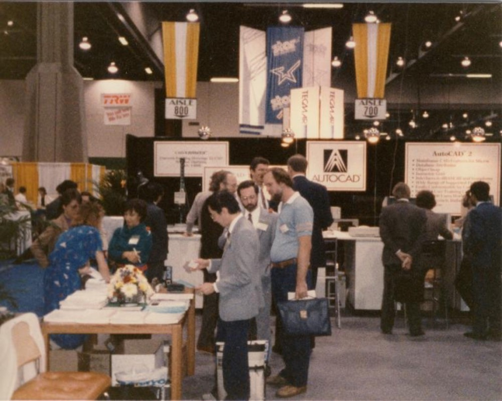
ラスベガスのCOMDEX Fall 1984の会場。ソフトバンクは1995年にこの見本市をアデルソンから8億ドルで買ったShaan Hurley / CC BY 2.0 / Wikimedia Commons
8億ドルだシェルドン・アデルソン、1995年 ラスベガス
1995年11月38歳米ネバダ州ラスベガス COMDEX会場
日曜日のゲイツとのゴルフ、「これだけで買う価値があった」
オーナーとして初めて迎えたCOMDEXで、孫は基調講演の最初にIBMのルイス・ガースナーを招いた。孫は見本市と雑誌を情報産業の「地図とコンパス」と呼んだ。大金を投じる必要があったのかと問われると、開催前日の日曜日にゲイツと丸一日ゴルフをする習慣ができただけで買う価値があったと答えている80。
オーナーは有望企業のトップをホテルのプレジデンシャル・スイートに招いて食事をする習わしもあった。COMDEXの売却で得た資金を基にカジノ事業を拡大したアデルソンは、2016年12月に孫とトランプ次期大統領の会談を仲介することになる8087。
これだけで僕はコムデックスを買う価値があったと思うんだ孫正義、ゲイツとのゴルフについて
1995年11月9日38歳米ニューヨーク
1年前に負けた出版本体を21億ドルで買い直す
フォーストマン・リトルは、1994年10月に14.5億ドルで取得したジフ・デービス出版を21億ドルでソフトバンクに売ることで合意した。同社は年商8.5億ドル、印刷媒体80誌を抱え、『PC Magazine』『PC Week』『Computer Shopper』を含んでいた。1年で1.45倍の価格である。買収は1996年2月に完了し、価格は21億ドル説と18億ドル説に分かれる8972。
ジフ・デービス出版の価格（1994年と1995年）
単位：億ドル。同じ資産に1年で付いた2つの価格
1994年10月 フォーストマン・リトルの取得額14.5億ドル
1995年11月 ソフトバンクの取得額（合意時）21億ドル
1996年2月 完了時の価格とする資料18億ドル
2000年4月 雑誌事業の売却額7.8億ドル
1年で1.45倍の価格で買い直した。売却は雑誌事業のみで、ZDNetなどは別に処分しており、取得額との単純な差は損益を示さない。
8972Yahoo!を見つける
1995年37〜38歳米国 ジフ・デービス
ヒッポーの答え「ヤフーという面白い会社がある」
買収したジフ・デービスの社長エリック・ヒッポーに、孫は取材網の中から1社だけ選ぶならどこかと尋ねた。ヒッポーは迷わずヤフーを挙げた。ジフ・デービス自身も買収前にヤフーへの出資を検討していた。社名は『ガリバー旅行記』に登場する野蛮な種族に由来する7980。
1995年11月38歳米カリフォルニア州 シリコンバレー Yahoo!の事務所
フランス料理を断って「ピザとコーラ」
孫はまずCOMDEXのホテルのスイートにジェリー・ヤンを招き、インターネットの将来を尋ねた。その後すぐシリコンバレーに飛んだ。慣れないスーツ姿のヤンとデビッド・ファイロがフランス料理店を予約したと言うと、孫は断った。社員5〜6人の散らかった事務所は、創業期の日本ソフトバンクに似ていたという8090。
ソフトバンクとジフ・デービスは共同で200万ドルを出資し、約5%を取得した。ヤンは台湾生まれで、スタンフォード大学でファイロと作成したリンク集を1994年3月にヤフーと改名し、1995年3月の会社設立時に名刺の肩書を「チーフ・ヤフー」とした。2人は京都に留学した経験があり、研究用の計算機に「アケボノ」「コニシキ」と名付けるほどの相撲好きだった9190。
ピザとコーラ。それだけあれば十分孫正義、1995年 Yahoo!の事務所で
1995年12月38歳米カリフォルニア州 Yahoo!本社（エル・カミノ・レアル沿い）
ジャンパー姿の井上雅博と「寿司でも食べながら」
孫は日本法人設立の交渉役に社長室長の井上雅博を指名した。ジャンパーにジーンズで訪れた井上に、ヤンは机の書類の山を指して、20社以上から届いたヤフー・ジャパンの提案書だと説明した。他社はいずれも数十人体制で始める案で、担当者は皆スーツ姿だった。井上は2〜3人で始めて増やせばよいと答え、「あとは寿司でも食べながら話そう」と誘った90。
孫はヤフー・ジャパンの設立にあたり、米ヤフーの出資分もソフトバンクが貸し付け、技術者も日本から送るので手を煩わせないと約束していた90。
そんなラフな格好で来たのは君が初めてだジェリー・ヤン、1995年12月 井上雅博に
1995年12月38歳東京 孫正義の自宅
弟・泰蔵との食卓、「100人は軽いよ」
東京大学経済学部3年の弟・孫泰蔵に、兄は「ヤフーって知っとるか」と尋ねた。ヤンに憧れていた泰蔵は、会わせてほしいと言えば公私混同を嫌う兄に断られると考え、まずページは誰が作成するのかと尋ねた。まだ決まっていないと聞くと、理系でインターネットに詳しい知人が大勢いると答えた。何人集められるかと問われ、「まあ、100人は軽いよ」と返した2392。
兄は、今週末の土曜日にヤンが来るのでトップ5人を連れてくるよう告げた。泰蔵という名は、父が尊敬する石坂泰三にちなんで「泰三」とする案に、15歳前後の正義が4人目なのに三はおかしいと異を唱えて決まったものである2392。
1995年12月38歳東京 ソフトバンク本社
サンダル履きの学生風の男がジェリー・ヤンだった
泰蔵が学生5人を連れて本社の待合室に入ると、真冬なのにTシャツとジーンズにサンダル履きで、黒縁眼鏡をかけた英語しか話さない男がいた。5人はヤンの秘書役の学生だろうと話していた。会議室で兄が「彼がジェリー・ヤンです」と紹介したのは、その男だった92。
ヤンはヤフーの使命を、未来のニュートンの前にリンゴを落とすことだと説明した。泰蔵はその夜、興奮で初めて寝付けなかったと振り返っている92。
1995年12月38歳東京 ソフトバンク本社 会議室
「4月1日開始、3万件。無理だと言う者は出ていけ」
孫は「今年がインターネット元年だ」と宣言し、翌年4月1日にサービスを始め、それまでに登録サイトを3万件にすると目標を示した。当時、NTT系の検索サービスでも収録は約4,000件で、出席者は動揺した。孫は無理だと考える者に退出を求めた。泰蔵がたどたどしい英語で検索情報の日本語化は自分たちが担当できると述べ、役割分担が決まった92。
日米に分かれる作業の連絡は電子メールに限り、24時間以内の返信を義務づけた。3回破ると罰金5万円である。返信は条件の異なる3種類のイエスに限り、ノーは認めなかった92。
無理だと言う者はこの部屋から出ていけ孫正義、1995年12月 ソフトバンク本社
1996年1月11日38歳東京
ヤフー株式会社を設立、資本金2億円
米Yahoo!との合弁でヤフー株式会社を設立した。資本金は2億円、出資比率はソフトバンク60%、米Yahoo!40%である。設立時の社長は孫が兼務し、同年7月に井上雅博へ引き継いだ919394。
1996年3月38歳米カリフォルニア州 Yahoo!の事務所
冷めたピザの席で1億500万ドル
Yahoo!の質素な事務所で、孫は冷めたピザを前に1億500万ドルで33%の株式を取得すると申し出た。Forbesは1999年にこの場面を記録している。『300年王国』は約100億円で35%を取得したと書き、英語の社史系資料は1996年4月の保有比率を37%とする。孫は当時ヤフーの価値を200億円強と見積もり、周囲から過大評価だと言われた59472。
サマは、孫が1996年に1億ドルを出資し、その価値が後に300億ドルを超えたと書いている。追加分を含む累計の出資額は、『300年王国』の金額表で1億825万ドル、英語の社史系資料で3億3,800万ドルである958472。
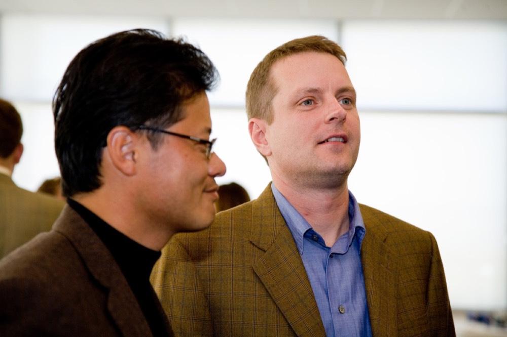
ヤフー共同創業者のジェリー・ヤン（右）とデビッド・ファイロ（2007年撮影）Mitchell Aidelbaum from San Francisco, CA, USA / CC BY 2.0 / Wikimedia Commons
僕らのほとんどは彼を正気じゃないと思ったジェリー・ヤン、Forbes 1999年7月5日号
米Yahoo!への出資額とその価値（1995〜2000年）
単位：ドル。対数目盛で、目盛が1つ進むと10倍になる
1995年11月 初回出資（約5%）200万ドル
1996年3月 追加出資（33%）1億500万ドル
累計出資額（社史系資料）3億3,800万ドル
1999年半ばの保有株の価値100億ドル超
2000年のピーク時の保有株の価値300億ドル超
100万1,000万1億10億100億1,000億
累計出資額は『300年王国』の金額表では1億825万ドル。追加出資は『300年王国』では約100億円で35%とされる。
91572959684941996年4月1日38歳東京 ソフトバンク本社 社長室隣の倉庫
テント泊の立ち上げと、公開直後に倒れた泰蔵
泰蔵は社長用の倉庫を模様替えし、学生アルバイトと24時間を4交代で担当した。キャンプ用のテントを持ち込んで泊まり込んだ。高校の同級生で、後に孫の社長室長となる三木雄信も加わっていた。4月1日夕方、Yahoo! JAPANが画面に表示されたのを確認すると、泰蔵はその場で倒れて入院した9294。
サービスの開始は午後3時20分で、設立から81日目だった。登録サイトの目標3万件は1995年12月の会議で示されたものである9392。
放送と半導体と「黒船」
1996年38〜39歳東京
ルパート・マードックと組み、テレビ朝日株21.4%を417億5,000万円で取得
孫は映像コンテンツをインターネット時代の主要な資産と考え、ニューズ・コーポレーションのルパート・マードックと組んだ。両社で旺文社グループからテレビ朝日株21.4%を417億5,000万円で取得した。同じ年にはマードックと衛星放送の合弁ジェイ・スカイ・ビー（JSkyB）を設立し、当初の出資比率は50%だった84979872。
朝日新聞をはじめ報道機関は「黒船来襲」と批判した。1997年3月、両社は全株を朝日新聞社に譲渡して撤退した。JSkyBもソニーとフジテレビの参加と競合との合併を経て、ソフトバンクの比率は11.4%に下がった。『300年王国』の金額表は取得を1996年12月としている979872。
1996年38〜39歳東京 テレビ朝日「サンデープロジェクト」スタジオ
田原総一朗との「テレ朝買収」対談
テレビ朝日の中堅ディレクターだった蓮実一隆は、株を買い集めた当事者の孫を看板番組「サンデープロジェクト」に招き、田原総一朗と「テレ朝買収」をテーマに対談させた。蓮実は後に、一橋大学の1年先輩でバンド仲間だった後藤芳光に相談してソフトバンクに移り、2010年代にはロボット「ペッパー」の開発に加わる。対談の年は記載がない99100。
1990年代半ばの円建ての出資と調達
単位：億円
ヤフー株式会社の資本金（1996年1月）2億円
米Yahoo!への追加出資（『300年王国』の円換算）約100億円
店頭公開の公募調達額（1994年）214.68億円
テレビ朝日株21.4%の取得（ニューズ社と共同）417億5,000万円
1996年8月15日39歳米カリフォルニア州ファウンテンバレー キングストン・テクノロジー
メモリモジュール最大手の80%を15億ドルで買う
ソフトバンクはメモリモジュールの世界最大手キングストン・テクノロジーの80%を15億ドルで取得すると発表した。支払いは社債で約8億ドル、新株発行で4.25億ドル、残りを営業キャッシュフローから充てた。この買収でソフトバンクの負債は約24億ドルから約32億ドルに増えた101。
ソフトバンクは、メモリはデジタル産業全体の拡大を左右する部品であり、その分野で1位になれると判断したと説明した。『300年王国』は金額を15億800万ドルとし、成果のないまま売却したと書いている1018497。
1997年3月39歳東京
連結売上は2倍、長期債務は売上を上回る
1997年3月期の連結売上高は3,597億4,000万円で、前期の1,711億円から倍増した。税引前利益は159億8,000万円から295億7,000万円へ94%増えた。一方で期末の長期債務は5,950億3,000万円に達し、売上高を上回った67。
株価は1997年初めの8,450円から11月には1,670円まで下がったと英語の社史系資料は記録している72。
連結の売上高・利益・長期債務（1996年3月期と1997年3月期）
単位：億円
税引前利益 1996年3月期159.8億円
税引前利益 1997年3月期295.7億円
売上高 1996年3月期1,711億円
売上高 1997年3月期3,597.4億円
長期債務 1997年3月期末5,950.3億円
1997年39〜40歳米国（回想は2014年 東京都港区汐留 本社26階）
アマゾンへの出資を「金がない」で見送る
2014年のサマとの最初の昼食で、孫は株式公開前のアマゾンへの出資を断念した経緯を語った。ジェフ・ベゾスと合意の直前まで進んでいたが、社内から資金がないと言われたという。評価額3億ドルで1億ドルを出資する計画で、実現していれば約20%を保有していた。サマはその20%の2024年の価値を3,600億ドル以上と見積もっている102。
サマが、アマゾンを20%持っていたらアリババに出資したかと尋ねると、孫は「ジェフが認めなかったと思う」と答えて笑ったという。アマゾンの株式公開は1997年5月である102。
われわれはアマゾン株を20パーセントもてていたかもしれない孫正義、2014年 サマとの昼食で
見送ったアマゾンへの出資（1990年代後半の計画と2024年の価値）
単位：ドル。対数目盛。2024年の価値はサマの見積もり
予定した出資額1億ドル
出資時のアマゾンの評価額3億ドル
約20%の持分の2024年の価値3,600億ドル以上
1億10億100億1,000億1兆
本人の回想を記録したのはサマのみで、ベゾス側の記録は確認できていない。
102一部上場と出口の設計
1997年11月4日40歳東京 店頭市場
ヤフー株式会社が店頭公開、初値200万円
設立から21か月でヤフー株式会社が店頭市場に公開した。公開価格70万円に対し初値は200万円で、約2.9倍である。1998年3月末には株価450万円、時価総額304億8,700万円に達した。公開時点のソフトバンクの保有比率は51%だった10372。
2000年3月期のヤフーの売上高は57億円弱で、10年後の2010年3月期には2,798億円になる104。
1998年1月16日40歳東京都中央区日本橋兜町 東京証券取引所
店頭から二部を経ずに東証一部へ
ソフトバンク株が東京証券取引所市場第一部での取引を開始した。店頭市場から二部を経ずに一部へ上場した最初の事例である。孫は1998年7月15日付の株主宛レターでこの事実を記録した103。
同じアニュアルレポートで孫は、米国で成功したモデルを日本に持ち込む手法を「time machine management strategy」と命名して説明している。タイムマシン経営という言葉は、1998年の時点で会社の公式文書に載っていた。同年4月には米ジフ・デービスが株式の26%をニューヨークで公開し、4億ドルを調達した10372。
1999年6月15日41歳東京
全米証券業協会とナスダック・ジャパン構想を発表
米ナスダックを運営する全米証券業協会とソフトバンクは、日本の新興企業向け株式市場を開設する構想を発表した。両者が50%ずつ出資し、資本金6億円の企画会社を設立した。同年12月には大阪証券取引所と提携し、大証の新市場として開設する方式が固まった105106。
孫は当時、約100社のインターネット企業に計20億ドルを投じ、その評価額は170億ドルを超えていた。上場の出口を自社で用意すれば、それらの持分を換金できる72。サマは、孫が1999年までに上場インターネット企業全体の株式の7〜8%を保有していたと本人から聞いたと書いている95。
1999年7月41歳米カリフォルニア州
キングストンを創業者に4.5億ドルで売り戻す
1996年に15億ドルで取得したキングストン・テクノロジーの持分を、創業者のジョン・トゥーとデビッド・サンに4.5億ドルで売り戻した。3年で取得額の3割に下がった計算である。メモリは市況によって価格が大きく上下する製品で、それを借入で買ったことが損失につながった10172。
キングストン・テクノロジーの取得と売却（1996年と1999年）
単位：億ドル。負債はソフトバンク全体の額
80%の取得額（1996年8月）15億ドル
同じ持分の売却額（1999年7月）4.5億ドル
ソフトバンクの負債（取得前）約24億ドル
ソフトバンクの負債（取得後）約32億ドル
『300年王国』の金額表は取得額を15億800万ドル、英語の社史系資料は15.1億ドルとする。
10172841999年10月1日42歳東京
純粋持株会社へ移行、連結子会社は285社
ソフト・ネットワーク事業部門を分割して100%子会社を設立し、純粋持株会社への移行を完了した。純粋持株会社・事業統括会社・事業会社の3層構造で、孫は日本で初めての純粋持株会社制の組織と呼んだ。連結子会社は63社から285社に増えていた107。
1999年41〜42歳東京（回想は2017年の杉本の取材）
「5,000億円も突っ込んで、全部損切り」
1994年から2000年にかけての買収は、ジフの見本市部門・COMDEX・ヤフー・ジフの出版本体・キングストン・テレビ朝日株・日本債券信用銀行と続き、1ドル100円換算で5,000億円を超えた。ヤフー以外の多くは成果を上げず、2001年以降のブロードバンド事業の資金を確保するために売却された84。
2016年のArm買収について、孫はかつての買収と比べればピッチングウエッジで刻んだ程度だと語り、昔は毎回フルスイングだったと振り返った。ジフ・デービスの雑誌事業は2000年4月に7億8,000万ドルで売却されている8472。
5000億円も突っ込んで、全部損切り孫正義、1990年代後半の買収を振り返って
1994〜1996年の米国での買収と出資
単位：ドル。対数目盛で、目盛が1つ進むと10倍になる
1994年11月 ジフの見本市部門2億200万ドル
1995年4月 COMDEXなど見本市17本8億ドル
1995年11月 Yahoo!（初回）200万ドル
1996年2月 ジフ・デービス出版21億ドル
1996年3月 Yahoo!（追加）1億500万ドル
1996年8月 キングストン80%15億ドル
100万1,000万1億10億100億
後に最大の価値を生んだYahoo!への出資は、6件のうち最も小さい2件だった。1ドル100円換算で合計5,000億円を超えたのは、これに円建てのテレビ朝日株と日本債券信用銀行を加えた額である。
72888991510184第6章3日間の世界一と98%の下落Three Days at the Top, Then a 98% Fall, 1999–2002
1999年から2000年2月にかけて、ソフトバンクの時価総額は約20兆円に達し、孫の個人資産は3日間だけビル・ゲイツを上回った。同じ時期に孫はアリババへ2,000万ドルを出資し、日本債券信用銀行の買収に加わる。その後の2年余りで株価は高値から98.7%下がり、2002年3月期には株式公開以来初の最終赤字を計上した。
杭州から来た男
1997年39〜40歳中国 北京 万里の長城
長城の案内役だった馬雲とジェリー・ヤン
ヤンが初めて中国を訪れた際、万里の長城を案内したのは中国政府の対外経済貿易合作部に勤める若い職員だった。2人は意気投合し、その職員が馬雲（ジャック・マー）である。ネット起業で失敗した経験を持つ馬雲に経営者の資質を見たヤンは、ヤフー中国のトップへの就任を打診した。馬雲は断り、1999年3月にアリババを設立した108109。
1999年10月31日42歳中国 北京市内の会合（馬雲は杭州から移動）
6分の面会と「5分で出資を決めた」
馬雲は資金調達を終えたばかりだったが、モルガン・スタンレーのアナリストに強く勧められ、杭州から北京に出向いた。孫は馬雲の目にカリスマを見て、その場で4,000万ドルの出資を申し出た。49%に相当する額である。馬雲は2008年の講演で、初回の面会は6分間だったと語っている18109。
馬雲が「そんなには必要ありません」と断ったため、交渉は東京に場所を移した。いったん3,000万ドルで合意したが、馬雲はさらに2,000万ドルへの減額を求め、孫は渋々承諾した。杉本は、出会いが半年遅ければネットバブルの崩壊で実現しなかったと書いている18。
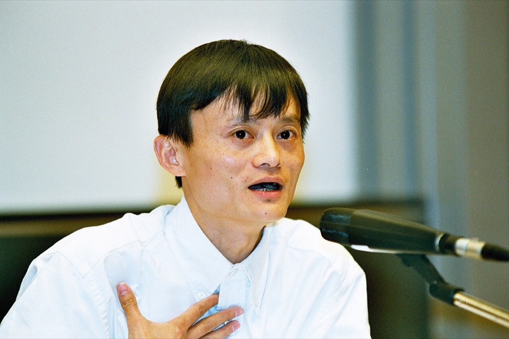
ザンクトガレン・シンポジウムで話す馬雲（2001年）St. Gallen Symposium / CC BY-SA 4.0 / Wikimedia Commons
会って5分で出資を決めた孫正義、1999年10月の馬雲との面会について
2000年1月19日42歳中国 杭州（発表）
アリババに2,000万ドル、同じ日にヤフー株は1株1億円を超える
ソフトバンクはアリババへの2,000万ドルの出資を実行した。同じラウンドにはゴールドマン・サックス、フィデリティ・キャピタル、トランスパック・キャピタルも参加している。当時のアリババの収益はゼロに近く、2,000万ドルは2000年3月期のソフトバンクの当期純利益84億円より小さい額だった109。
同じ日、ヤフー株式会社の株価は1株1億円を超えた。約20億円のアリババへの出資は、14年後の上場時に700億ドル相当の持分になる1091896。
アリババへの出資額の交渉（1999年10月〜2000年1月）
単位：万ドル。孫の提示から実行までに半分になった
北京で孫が提示した額（49%相当）4,000万ドル
東京でいったん合意した額3,000万ドル
2000年1月に実行した額2,000万ドル
減額を求めたのは馬雲の側である。実行額は円換算で約20億円。
18109アリババへの2,000万ドルのその後
単位：ドル。対数目盛で、目盛が1つ進むと10倍になる
2000年1月 出資額2,000万ドル
2014年9月 上場時のソフトバンクの持分700億ドル相当
保有株の価値の最高値2,000億ドル
売却で得た累計の利益（推定）約720億ドル
1,000万1億10億100億1,000億1兆
上場時の値は3,500倍、最高値は1万倍にあたる。数値はいずれもサマの記述による。
10996110ピーク
2000年2月2日42歳東京都港区六本木 クラブ「ヴェルファーレ」
ダボスから3,000万円の専用機でビットバレーの集会へ
渋谷周辺に集まったネット企業の若手経営者が「ビットバレー」を名乗り、六本木のヴェルファーレで集会を開いた。2,000人を超える参加者の前に、孫はスイスのダボス会議からプライベートジェットで駆けつけて登壇した。移動の費用は3,000万円だった111。
2週間後にソフトバンク株は約20万円の高値を付け、2002年10月には1,000円を下回る112。
2000年2月15日42歳東京 東京証券取引所
株価198,000円、時価総額約20兆円、3日間の世界一
ソフトバンク株は1株198,000円の高値を付けた。当時の発行済株式数で計算すると時価総額は20.7兆〜21.8兆円で、報道の「一時20兆円」はこの範囲に収まる。この日から週明けまでの3日間、孫の帳簿上の資産はゲイツを上回った611310。
資産額には685億ドル、700億ドル、780億ドルの3説がある。英語の社史系資料は、ソフトバンクの時価総額のピークを1,900億ドル、サマは約2,000億ドルとしている1131072102。
2000年2月42歳東京都中央区銀座
週に1兆円ずつ増える資産と「この区画を買えるな」
個人資産は1週間で約1兆円ずつ増えた。孫は物を買う喜びがなくなったと語る。銀座を見下ろしてこの区画を買えると考えても、何の意味も感じなかったという97114。
2014年、サマに全財産を失ったときの気分を問われた孫は、両手を挙げて笑った。世界一の金持ちだったときは金の用途ばかり気にしていたが、市場がその悩みを解決してくれたと答えている。孫は2016年12月のニューデリーでの講演でも同じ話をし、1,000人を超える聴衆が笑ったとサマは書いている102115。
そうなると人間、おかしくなるよ孫正義、2000年に資産が週1兆円ずつ増えた時期について
市場がその悩みを解決してくれて、心配事がなくなった孫正義、2014年 サマとの昼食で
2000年2月22日42歳東京 店頭市場
ヤフー株が1株1億6,790万円
ヤフー株式会社の株価が1株1億6,790万円を付けた。1997年11月の公開価格70万円の約240倍である。この値は日本の株式史上の最高株価として2026年現在も更新されていない。英語の社史系資料は、公開から2000年末までの上昇率を6,000%と記録している610372。
ヤフー株式会社の株価（1997年11月〜2000年2月）
単位：円（1株）。対数目盛で、目盛が1つ進むと10倍になる
1997年11月4日 公開価格70万円
1997年11月4日 初値200万円
1998年3月末450万円
2000年1月19日（アリババ出資の日）1億円超
2000年2月22日 最高値1億6,790万円
10万円100万円1,000万円1億円10億円
1億6,790万円は日本の株式史上の最高株価で、2026年現在も更新されていない。公開価格の約240倍にあたる。
1031096ソフトバンクの時価総額（1994年〜2002年）
単位：円。対数目盛で、目盛が1つ進むと10倍になる
1994年7月 店頭公開の初値約2,693億円
2000年2月15日 ピーク20.7兆〜21.8兆円
2002年の底（孫の講演での表現）約2,000億円
1,000億円1兆円10兆円100兆円
ピークは株価198,000円と当時の発行済株式数から計算した範囲の下限で描いた。底の値は孫本人の講演での表現で、正確な計算値ではない。
46116銀行と取引所
2000年2月24日42歳東京都千代田区霞が関 金融再生委員会
日本債券信用銀行の優先交渉先に選ばれる
金融再生委員会は、ソフトバンク・オリックス・東京海上火災保険を中心とする出資グループを、日本債券信用銀行の譲渡先の優先交渉先に決めた。条件は既存の普通株式約25億株を10億円で取得し、新規発行株を1株300円で計1,000億円引き受けることだった117。
選定理由の3番目には、インターネットなどを活用した新たな金融取引の導入への期待が挙げられている。譲渡は同年9月に完了し、ソフトバンクは48.87%を約490億円で保有した。銀行はあおぞら銀行に改称された1178472。
2003年9月46歳東京
あおぞら銀行株を約1,011億円で売却
ネット金融の構想は実現しなかった。ソフトバンクは2003年にあおぞら銀行株48.87%を約1,011億円で売却し、その代金をブロードバンド事業の赤字に充てた。杉本は、ナスダック・ジャパンとともに成果を上げなかった案件に数えている11897。
日本債券信用銀行（あおぞら銀行）をめぐる金額（2000〜2003年）
単位：億円
既存の普通株式約25億株の取得額（出資グループ全体）10億円
ソフトバンクの出資（48.87%）約490億円
新規発行株の引受額（出資グループ全体）1,000億円
2003年の売却額（48.87%）約1,011億円
英語の社史系資料は出資グループの取得額を9億3,200万ドルとする。売却代金はブロードバンド事業の赤字に充てられた。
11784721182000年3月2日42歳米国 ナスダック市場
ホン・ルーのUTスターコムが上場、ソフトバンクは52.3%
バークレー時代の共同経営者ホン・ルーが率いるUTスターコムが、1株18ドルで1,000万株を公開した。中国で小型の無線電話サービスの設備を供給する会社である。目論見書によれば、公開後もソフトバンクと関連会社は発行済株式の52.3%を保有した119。
1982年にホンと知り合った上新電機の藤原睦朗も、ホンの求めで同社に1億円を出資していた。その価値は上場で数十倍になり、業績が悪化していた上新電機を支えたと杉本は書いている33。
2000年6月19日42歳大阪市中央区北浜 大阪証券取引所
ナスダック・ジャパン開設、初日の上場は8社
ナスダック・ジャパンは大阪証券取引所の新市場として取引を開始した。初日の上場は8社で、2年で90社を上回った。しかし孫が想定した取引方式は、証券会社側が対応費用を理由に採用しなかった。運営会社は人件費と開発費で2001年末に累積損失50億円を超えた105106。
2002年8月、米ナスダックが投融資2,010万ドルを全額償却し、撤退が明らかになった105。
ナスダック・ジャパンの投入額と損失（1999〜2002年）
単位：億円
企画会社の資本金（ソフトバンクと全米証券業協会で折半）6億円
運営会社の累積損失（2001年末）50億円超
米ナスダックは2002年8月に投融資2,010万ドルを全額償却した。円とドルを混ぜないため棒には入れていない。
105財務の人を集める
2000年4月42歳東京
笠井和彦へ「実は今、すぐ近くにいるんです」
富士銀行副頭取から安田信託銀行の会長を務めた笠井和彦は、会長を退いた直後だった。6年来の知り合いの孫から電話があり、日程を調整しようとすると、今すぐ近くにいると言われた。笠井は外資系金融機関への転職が内定に近い段階にあったが、21歳下の孫に押されてソフトバンクに入った120。
笠井は香川大学出身で、1996年に日銀の利上げ観測が広がる中で利上げはないと判断して債券を買い、富士銀行に多額の利益をもたらした人物である120。
実は今、すぐ近くにいるんです孫正義、2000年 笠井和彦への電話で
2000年6月42歳東京 ソフトバンク本社 経営戦略室
後藤芳光の面接「良い目をしていますね」
後藤芳光は安田信託銀行で約30人を率いていたが、富士銀行への統合を避けるための幹部の保身策を極秘で検討させられ、2000年2月に13年勤めた銀行を辞めた。一橋大学のゼミの恩師・阿部謹也の、それをしなければ自分が死んでしまうと思うことをやりなさいという言葉を思い出したという。転じたベンチャーキャピタルもすぐ辞めた頃、元上司の笠井に「後藤君。君も一緒に行くか？」と誘われた121。
車中で後藤は財務も英語も不得手だと打ち明け、笠井は必要ないと答えた。孫は後藤の顔を見るなり採用を決めた。経営戦略室では前任者から資金繰り表を渡され、財務責任者になると告げられた。表を精査した後藤は、その管理が粗いことを知った120。
なるほど、良い目をしていますね。採りましょう孫正義、2000年 後藤芳光の面接で
崩壊
2000年12月29日43歳東京 東京証券取引所
年末の終値は高値から94%減
2000年最後の取引日の終値は、分割後の基準で3,970円だった。2月15日の高値からの下落率は94.0%になる。孫の個人資産はForbesの集計で6月に194億ドルまで減っていた。2000年中の減少額は、ギネス世界記録に個人資産の最大損失として585億ドルで登録されている6113122。
サマはソフトバンクの株価と孫の純資産がともに95%減り、喪失額は590億ドルだったと書く。孫自身は2016年の講演で失った額を600億ドルと述べている。英語の社史系資料は、2001年に孫の純資産が最も少ない時点で11億ドルまで下がったとしている10211572。
孫正義の個人資産の増減（2000〜2001年）
単位：億ドル
2000年2月 ピーク（3説の中央値）685億〜780億ドル
2000年中の減少額（ギネス世界記録）585億ドル
2000年6月（Forbes集計）194億ドル
2001年 最も少ない時点11億ドル
サマは喪失額を590億ドル、孫本人は2016年の講演で600億ドルとしている。ピークから最少の時点までの減少率は約98%になる。
11310122721021152000年42〜43歳東京（回想は杉本の取材）
「50兆円くらいのリターンは得ていた」
杉本に最も悔やんでいることを問われ、孫はバブル崩壊直後の判断を挙げた。ブロードバンドではなくネット企業への投資に全額を投じていれば、50兆円ほどのリターンを得ていたと答えた。アマゾン、グーグル、中国の検索大手バイドゥへの出資が直前まで進んでいたという。電子版の判読では、同じ段落に30兆円とする箇所もある114。
サマも、ソフトバンクが保有ヤフー株を高値で売らなかったことの機会損失を約200億ドルと推計している。ヤフーがグーグルを100万ドルで買える機会を逃したともサマは書き、その年を1998年とする箇所と2001年とする箇所がある96123。
それが一番悔やんでいることかな孫正義、バブル崩壊後の判断について
2001年1月43歳東京都中央区日本橋箱崎町 本社向かいの雑居ビル
「俺は社長室から出る」
株価の下落が続く中で、孫は一切の面会予定の取り消しを命じ、本社向かいの雑居ビルのワンフロアを借りた。既存事業はすべて宮内に任せ、ブロードバンドで通信事業に参入すると決めた。19歳で立てた人生50カ年計画の「40代でひと勝負」にあたると杉本は位置づけている。ここから先の展開は次章で扱う97。
誰とも会わない。俺は社長室から出る孫正義、2001年1月
2001年4月43歳米国の投資先 → 東京 ソフトバンク本社
藤原和彦の試算「放置すれば1,000億円」と「よう損したなぁ」
マツダから移った41歳の藤原和彦は、フォード出身のCFOゲーリー・ヘクスターから差異の分析と「悪魔の代弁者」の手法を学んでいた。入社直後に米国の投資先を視察し、放置すれば1,000億円の損失が出ると試算した。笠井に率直に言うよう促され、紙のサマリーで孫に伝えた12465。
孫は腕組みをして黙り込み、やがて一言つぶやいて対策を命じた。笠井は後に藤原へ、傷口に塩を塗り込むつもりでやりなさいと助言したという。孫は退却を攻撃より10倍難しいと語り、「孫の二乗の兵法」の「勇」を退く勇気と説明している12465。
よう損したなぁ孫正義、2001年 藤原和彦の報告を受けて
2002年5月10日44歳東京 決算説明会
株式公開以来初の最終赤字887億円
2002年3月期の連結決算で、ソフトバンクは営業損失239億100万円、当期純損失887億5,500万円を計上した。1994年の株式公開以来初の最終赤字である。孫は決算説明会で、ソフトバンクが目指すのはデジタル情報革命であり、一番やりたいことができる時代に入って毎日わくわくしていると述べた125126。
赤字は翌期以降も続き、2005年3月期までの4年間の最終赤字は計3,554億円になる。この期間の経緯は次章で扱う126。
ソフトバンクの連結当期純損益（2000年3月期と2002年3月期）
単位：億円。2002年3月期は株式公開以来初の最終赤字
2000年3月期+84億円
2002年3月期−887億5,500万円
2003年3月期（次章）−999億円
2001年3月期の値は確認できた資料がないため省いた。2002年3月期の営業損失は239億100万円。
1091251262002年11月19日45歳東京 東京証券取引所
日中安値870円、高値から98.7%の下落
ソフトバンク株は日中の安値870円を付けた。2000年2月の高値から分割を調整して計算すると、下落率は98.7%になる。約99%下がったという通説は、分割を正しく調整すれば成り立つ6。
孫は後年の講演で、時価総額が20兆円から2,000億円まで下がったと語り、神様が試練を与えてくれたと思えば面白い人生だと述べている116。
99％下がったんですよ孫正義、講演でネットバブル崩壊を振り返って
ソフトバンク株価の残存率（2000年2月の高値＝100）
単位：指数。株式分割を調整した値
2000年2月15日 高値100
2000年12月29日 終値6.0（94.0%減）
2002年11月19日 日中安値870円1.3（98.7%減）
孫は講演で「99%下がった」と表現している。分割を調整した計算で98.7%になる。
6116第7章Yahoo! BBとパラソルYahoo! BB and the Parasol Army, 2001–2005
ネットバブルの崩壊で株価が100分の1になった後、孫は保有株の売却益をADSLに投じ、NTTの回線網に正面から挑んだ。モデムを街頭で無料で配る営業で加入者は400万人を超えたが、4期で3,554億円の最終赤字を出し、顧客情報の流出事件も起きた。それでも孫は日本テレコムと福岡ダイエーホークスを買い、通信会社と球団の持ち主になる。
ADSLを選ぶ
1998年6月、孫はソウルで金大中大統領に経済再生策を問われ、方法は3つともブロードバンドだと答えていた。韓国は全国の学校に高速回線を入れた。孫は同じことが日本で進まないことに憤り、2000年には自ら回線事業に参入する準備を始める127。
2000年42〜43歳東京都文京区 東京ドーム VIPルーム → 東京都港区虎ノ門 ホテルオークラ
巨人戦の個室で「今度うちでADSLやるよ」
巨人が「ミレニアム打線」で優勝した2000年のシーズン、フォーバル創業者の大久保秀夫は夫人と東京ドームで観戦していた。飲み物を取りに入った個室で孫が待っており、ADSLに参入すると打ち明けた128。
次の日曜日、ホテルオークラで孫と笠井和彦が大久保を迎えた。孫は日本全国の回線をIP化してNTTに挑むと語り、大久保はその場で参加を決めた。大久保は15年前に孫が言った「いつか必ず俺は胴元になってみせる」という言葉を思い出したという。2人はかつてNCC BOXを共同で開発した間柄だった128。
2000年42〜43歳東京 NTT本社
NTT社長・宮津純一郎への直談判
孫はNTT社長の宮津純一郎に会い、ISDNでは不十分なので本腰を入れてADSLを普及させてほしいと求めた。宮津は当面ISDNを軸にすると答えた。1999年末の日本のインターネット世帯普及率は19%だった129。
NTTは2000年末にADSLを始めたが、接続料は月4,000円だった。速度は最大毎秒1.5メガビットで、提供は都市部に限られた。孫は後に、この時のNTTが「巨悪」に見えたと語っている。ソフトバンクが用意したのは最大毎秒8メガビットで接続料990円、総額で月2,280円の料金である129。
ADSLの月額料金：NTTと当時の相場とYahoo! BB（2000〜2001年）
単位：円（月額）。NTTは接続料のみ。Yahoo! BBの総額はモデムのレンタル料などを含む
当時の他社ADSL相場（総額、下限）5,000〜6,000円
NTTのADSL接続料（2000年末開始）4,000円
Yahoo! BBの総額2,280円
Yahoo! BBの接続料990円
速度はNTTが最大毎秒1.5メガビットで都市部のみ、Yahoo! BBは最大毎秒8メガビットだった。速度を5倍以上にし、価格を半分以下にした計算になる。
1291302000年42〜43歳東京
医師免許を持つ技術者、筒井多圭志
筒井多圭志は1960年生まれで、東大工学部を出た後に京大医学部に入り直して医師免許を取った。在学中は大型計算機センターに通い、UNIXの専門家として学生時代の孫の米国出張に同行したことがある。2000年、勉強会で再会した孫から「大学で遊んどるヒマはないぞ」と誘われて入社した131。
筒井はすべてをIPで通すADSL網を設計した。社内の技術者は反対でまとまったが、孫は「もういい。俺は筒井と心中する」と言って押し切った131。
2000年42〜43歳東京都中央区 日本橋箱崎 ソフトバンク本社
ゼネコンの営業マンを建設本部長に
鹿島建設の今井康之は本社ビルの建設を何年も売り込んでいた。孫が「トウを建てたい」と言った時、今井はビルの話だと喜んだが、孫が求めたのは秋葉原に計画された無線ブロードバンド用の巨大な電波塔だった。年に20棟を受注していた今井に、孫は「ビルを20棟建てて何が面白い」と言って引き抜いた。入社直後にネットバブルが崩壊し、電波塔の構想は消えた132。
後日、孫と建設業者の打ち合わせに呼ばれた今井が「クリティカル・ポイントが分かりませんね」と口を挟むと、業者は今井に向かって説明を始めた。会議の後、孫は今井に言った。「お前、今から建設本部長な」132。
2001年6月43歳東海道新幹線 名古屋→東京の車中
新幹線の1両を貸し切って宮川潤一を待つ
名古屋めたりっく通信の社長だった宮川潤一は、ソフトバンクからの買収の打診を2度断っていた。ある朝、孫から直接電話があり、大阪からの帰りに名古屋で乗ってほしいと頼まれた。乗り込むと孫は1両を丸ごと押さえ、筒井と向かい合って座っていた65。
東京までの1時間半余りの話題は、ADSLのアネックスAとアネックスCの差とネットワークの構成図、そしてNTTとの交渉だけだった。東京駅に着くと孫は「じゃあ」と言って去った。宮川は「あれ？俺、もう帰っていいのかな」と思ったという65。
2001年6月43歳東京 料亭「吉兆」の個室
「君は名古屋で終わる気か？」
同じ日の夜、孫は吉兆の個室で1人、ノートを手に宮川を待っていた。孫はADSLの技術の話をメモしながら聞いた。宮川が、自分の死後も100年続くものを残したいと話すと、孫は「俺の場合は300年だけどね」と応じた133。
宮川が名古屋めたりっく通信の株式公開を考えていると言うと、孫は男ならもっと大きなことをやれと迫り、「君は名古屋で終わる気か？」と言った。宮川は愛知県犬山市の臨済宗の禅寺の跡取りで、花園大学仏教学科を出た後、家庭用ごみ焼却炉の会社とフランチャイズ型のプロバイダーを興した経歴を持つ133。
箱崎の「養鶏場」
ブロードバンドの前線基地は、箱崎の本社の向かいにある雑居ビルに置かれた。技術陣は徒歩5分の隅田川沿いの倉庫ビルに詰めた。
2001年43〜44歳東京都中央区 日本橋箱崎の雑居ビル／隅田川沿いの倉庫ビル
「養鶏場」と「リバーサイドホテル」
雑居ビルのフロアは黄色いパーテーションで区切られ、折り畳み机には書類と通信機器があふれ、社員は寝袋や椅子で眠った。孫は後に「まるで養鶏場のようなところだったよ」と振り返っている。技術陣の倉庫ビルには二段ベッドの仮眠室があり、手書きの「リバーサイドホテル」の札が貼られた127。
社長室長の三木雄信は、フルIPのADSLに反対した。孫は「そんなに反対するんだったら、お前がやれよ」と言って三木を前線に送った。三木は後に、孫に反対したのは後にも先にもこの1度だけだと語っている127。
2001年43〜44歳東京都中央区 日本橋箱崎
NTTとの「潜水艦ゲーム」
どのNTT局舎に未使用の光ファイバーがあるかは、書面で照会しなければ分からず、回答は数週間後に届いた。白地図に局舎の円を描いては訂正される作業を、現場は「潜水艦ゲーム」と呼んだ134。
筒井は結論から入り、言葉を選ばなかった。帰宅後も同僚とブログで議論を続けたため、機密に触れる書き込みを監視する係が付いた。開発ツールに由来する「ペンギン」という愛称は、やがて「猛獣」に変わった134。
2001年6月18日43歳東京都中央区 日本橋箱崎の仮設会議室 → ヤフー・ジャパン本社
1,000局のリストを持ってヤフーへ
発表の前日、三木は確実に接続できる都内26局舎から受け付けを始める計画を説明した。孫は計画書を丸めて投げつけ、1,000局分のリストを手にして部屋を出た135。
孫はヤフー・ジャパンに行き、申込画面の担当者を見つけて「お前か！ 止めていたのは！」と言った。そして1,000局すべてを受け付けるよう画面を変更させた。三木は「それが地獄の始まりでした」と振り返る135。
2001年6月19日43歳東京 記者会見場
ピンクの半袖シャツで発表した月2,280円
孫はピンクの半袖シャツにチノパンで登壇し、Yahoo! BBを発表した。最大毎秒8メガビットで月2,280円である。当時の相場は最大毎秒1.5メガビットで月5,000〜6,000円だった135130。
孫は「100万人が第一ステップです」と述べ、200万〜300万人で事業が成り立つと説明した。先着100万人の工事費を無料にし、モデム100万個をすでに発注していた。この時点の日本のADSL加入者は18万人だった135。
100万人が第一ステップです孫正義、2001年6月19日、Yahoo! BB発表会
2001年6月29日43歳東京都千代田区霞が関 総務省の応接スペース
「ここでガソリンをかぶって火をつけます」
NTTが局舎での工事と光ファイバーの提供に応じないため、孫は今井を連れて総務省に乗り込んだ。孫は机を拳で打ちながらNTTの非協力を訴え、隣の大部屋は静まり返った。担当の女性課長が席を立とうとすると、孫はライターを貸してほしいと言い、ここでガソリンをかぶって火をつけると告げた。課長は「どこか別の場所で」と返した136137。
課長は最終的に、NTT東西の総務部長へ電話すると約束した。孫はその夜NTT東西のトップに直接電話し、10カ条の要求を拒むなら翌日に提訴すると伝えた。後年サマがこの話の真偽を尋ねると、孫は本当だと答え、ただしガソリンもマッチも持っていなかったと付け加えた136138。
2001年6月30日43歳東京都中央区 日本橋箱崎の「養鶏場」
8時45分に届いた2枚のファクス
翌朝8時半の定例会議が終わった後、NTT東日本とNTT西日本の社長名のファクスが届いた。送信時刻はともに8時45分で、10カ条の要求の回答欄にはすべてマルが付いていた。今井は「社長！来ました。全部受け入れると書いてあります！」と叫んだ139。
ダイヤモンド・オンラインの記事も、訪問の夜に総務省からNTT東日本が光ファイバーを提供するという連絡が入ったと伝えている。今井はこの朝を日本のブロードバンド時代の始まりと語る。日付は杉本の記述では特定されていないが、総務省の訪問を6月29日とする記事に従えば翌朝である139137。
2001年7月43歳東京都中央区 日本橋箱崎の会議室
「人間なら誰でもかまわん」100人の名刺
孫は人事部長に、夕方5時までに社内から100人を集めるよう命じた。集まった100人の前で孫は折り畳み椅子に乗り、「第二の創業」だと演説して、全員に名刺を置いて帰らせた。数人は非常階段から逃げた135。
三木は徹夜で名刺を技術と管理とオペレーションの3本部に振り分け、翌朝までに組織図を作成した140。
2001年7月43歳東京都中央区 日本橋箱崎／ホテル ヴィラフォンテーヌ箱崎
「お前、見損なったぞ！」と150人の名古屋部隊
社長室長に任じられた宮川は、表計算ソフトでの手集計と社内のサボタージュを見て、このままでは間に合わないと孫に告げた。孫は「そんな精神論なんか聞きたくないね。お前、見損なったぞ！」と言って机を打った140141。
宮川は1週間の猶予を求め、計画を作れなければ自分を解任してほしいと申し出た。名古屋めたりっく通信の300人のうち管理部門を中心に150人を選んで東京に連れて来て、近くのヴィラフォンテーヌ箱崎を貸し切りの状態にした。宮川は全権を求め、サービスの開始を9月1日に延ばした。13年後、宮川はこの「見損なった」という言葉をそのまま孫に返すことになる140141。
2001年43〜44歳東京都内のNTT局舎
深夜の局舎に押し入る
今井はホテル暮らしを1年半続けた。孫は午前2時に「今日の宿題」を渡し、毎朝7時には接続が集中してネットワークが限界に近づいた142。
ある深夜、ネットワークが止まった。派遣したエンジニアは作業許可書がないとしてNTT局舎から追い返され、許可の印鑑だけで3日かかると言われた。孫は社員を連れて局舎に直行し、警備員にNTTの役員へ電話するよう迫って中に入った。孫は「これがNTTの回線だったら」と言ったという142。
2001年9月44歳東京都中央区 日本橋箱崎の「養鶏場」／近くの倉庫を改造した焼き肉店
壁を拳で打って泣いた夜
NTT局舎の間を結ぶ新しい方式の回線が初めて開通したと聞くと、孫は雄たけびを上げて拳で壁を打ち、涙を浮かべて社員の肩をたたいた。三木は本当に気が変になったのかと思ったという。孫はその場にいた約20人を近くの焼き肉店に連れて行った139。
9月1日のサービス開始の時点で予約は100万を超えたが、開通は4万人余りにとどまった。サポートへの問い合わせの7〜8割は、いつ開通するのかという照会だった139143。
これで成功だああぁ！孫正義、2001年、箱崎の前線基地で
Yahoo! BBの予約と開通、国内ADSL回線数（2001年）
単位：万回線
発表時の国内ADSL加入者（2001年6月）18万
孫が示した第1段階の目標100万
サービス開始時の予約（2001年9月1日）100万超
サービス開始時の開通（同日）約4万
国内ADSLの1年間の純増（2001年）152万5,000
先着100万人の工事費を無料にし、モデム100万個を発注済みだった。開通の遅れでサポートへの問い合わせの7〜8割が開通時期の照会になった。
135139143107パラソル部隊
開通が軌道に乗ると、課題は加入者の獲得に移った。顧客獲得の費用は1件あたり数万円に膨らみ、資金繰りは数週間先の見通しも立たなくなった。
2002年44〜45歳東京都千代田区永田町 ザ・キャピトルホテル東急
「払わんかったらええだけじゃ」
2002年初めの土曜日、財務の後藤芳光は上司の笠井和彦に電話し、翌日にキャピトルホテル東急で会った。後藤は2〜3週間後の資金繰りのめども立たないと打ち明けた。笠井は香川弁で「そりゃ、払わんかったらええだけじゃ」と答えた144。
笠井が求めたのは、礼を尽くして富士銀行に事情を説明し、返済の延期を相談することだった。笠井は山一証券の自主廃業を富士銀行の側で見ており、虚偽の報告が続いた会社は救えなかったと説いた。後藤は返済期間の延長で富士銀行と合意した。後藤は後に「日本で一番カネを借りた男」と呼ばれる144。
2002年44〜45歳東京都中央区 日本橋箱崎の「養鶏場」
「もっと勢いよくペダルをこげばいいんだ」
マツダ出身の財務担当、藤原和彦は費用のデータをすべてグラフにし、毎月40億円を超えて使わない計画を示した。藤原が「これじゃ自転車操業ですよ」と訴えると、孫は解決法を教えると言って答えた。「もっと勢いよくペダルをこげばいいんだ」145。
2002年44〜45歳東海道新幹線の車中（大阪の交通科学博物館に電話）
時刻表で駅を数えた馬場一
新幹線の車中で孫は、人が最も集まる場所はどこかと馬場一に尋ねた。馬場が駅だと答えると、孫は全国の駅の数を聞いた。馬場は車掌から時刻表を借りて数え始め、「1ページ20カ所で600ページ、1万2,000くらい」と答えて笑われた146。
孫は正確に調べるよう求めた。馬場がデッキから大阪の交通科学博物館に電話すると、答えは9,622駅だった。馬場は1988年に銭湯の脱衣所で見た新聞の求人広告から入社した社員である146。
2002年9月6日45歳東京都豊島区 ドトールコーヒー池袋グリーン大通り店の店頭
雨の日の4件から始まったパラソル部隊
駅の構内での販売はJRと東急に断られ、馬場は駅に近いコーヒー店の店先を借りた。この日は雨で立ち止まる人はおらず、契約は1日で4件だった。馬場は販売員に友人や家族の契約を頼み、件数を上乗せした。その数字を見た孫が全国展開を決めた146。
街頭に赤いパラソルを立て、モデムの入った赤い紙袋を配る営業が全国に広がった。警察から注意を受けることが続き、馬場は「僕の名刺入れは警察関係者の名刺で埋まっていました」と語る。新宿では暴力団事務所に呼ばれて「誠意」を求められ、撤収した146147。
2002年44〜45歳東京都中央区 日本橋箱崎 → 秋葉原 ラオックス（車中）
後部座席で受けた「今この瞬間からヤフーBBをやれ」
1985年に社員番号249で入社した榛葉淳は、ソフト流通の全営業を任されていた。ラオックスを訪ねる車に乗る時、榛葉は助手席に座ろうとしたが、孫は後部座席に座らせた。孫と宮内謙が両側から挟み、孫は「お前、今この瞬間からヤフーBBをやれ」と命じた148。
パラソル部隊は8,000人規模に膨らみ、契約書の不備や件数の水増しが相次いでいた。榛葉は1,000人超のチームリーダーを鍛え直した148。
2002年44〜45歳東京都中央区 佃／箱崎／港区麻布の孫の自宅前
エレベーターと社用車の中で決裁を取る
榛葉は千葉に住む家族とともに、「養鶏場」から徒歩20分の佃に引っ越した。朝は孫の出社をビルの前で待ち、エレベーターの中に料金表や広告の案を貼ってその場で決裁を受けた148。
夜は孫の社用車に同乗し、麻布の自宅に着くまで車中で直談判した。榛葉は孫の家の前からタクシーで帰った。孫はこの頃、「最強の営業軍団ができた」と確信したと語っている148。
2002年44〜45歳東京 ソフトバンク本社
6時間の叱責と、1行のメール
NTTから転職して約2年、30歳手前の冨沢文秀は、ブロードバンド関連のプロジェクトを引き継いだ2日後の土曜日にレビュー会議に臨んだ。孫は6時間続けて怒り、「もうお前の顔なんか見たくない！」と言った。宮内も口を挟めなかった149。
冨沢が宮内に詫びのメールを送ると、宮内は期待していない人間に社長はあそこまで怒らないと返信し、CCに孫を加えていた。孫からも1行だけのメールが届いた。「俺はお前のことは期待しているからな」。次の会議の未明2時半、孫は追加の資料を求め、冨沢は「推定値」と注記して補った。会議の後、孫は「よくやった！やればできるじゃん」と言った14982。
2002年44〜45歳東京
株価100分の1と「生きている感覚」
株価が100分の1になると、笑顔で近づいて来た人々が犯罪者を見る目に変わった。パーティーでは目を合わせず、ひそひそと話をされた。孫は内心で「クソー」と思ったが、そこで生きている感覚が戻り、つぶれても本望だと思えたと語っている114。
著者の杉本に後悔を問われた孫は、バブル崩壊の直後にブロードバンドではなくネット企業への投資に全額を投じていれば、50兆円ほどのリターンを得ていたと答えた。アマゾン、グーグル、バイドゥへの出資の話が直前まで進んでいたという。同じ段落には30兆円と判別できる箇所もあり、金額は確定できない114。
僕の中で生きているという感覚が戻ってきたんだ孫正義、ネットバブル崩壊後を回想して
ソフトバンクの連結最終損益（2001年3月期〜2006年3月期）
単位：億円。ブロードバンド参入後の4期が赤字
2001年3月期+366億円
2002年3月期−888億円
2003年3月期−1,000億円
2004年3月期−1,071億円
2005年3月期−599億円
2006年3月期+576億円
アニュアルレポートの百万円単位の数値を億円に四捨五入した。杉本は4期の赤字の合計を3,554億円とし、各期を887億円・999億円・1,070億円・598億円と書いている。
150126赤字の4年間に倍増した連結売上高（2002年3月期〜2005年3月期）
単位：億円
2002年3月期4,053億円
2003年3月期4,069億円
2004年3月期5,174億円
2005年3月期（日本テレコムを連結）8,370億円
同じ期間にYahoo! BBの契約者は400万人を超えた。
150126流出事件と日本テレコム
赤字の穴は保有資産の売却で補った。2003年9月には日本債券信用銀行から転じたあおぞら銀行の株式48.87%を約1,011億円で売却し、代金をブロードバンドの赤字に充てた118。
2003年45〜46歳兵庫県神戸市 オリックス・ブルーウェーブの本拠地球場
日本初の球場命名権「Yahoo! BBスタジアム」
赤字の期間に知名度を上げるため、ソフトバンクは日本で初めて球場の命名権を取得し、オリックスの本拠地を「Yahoo! BBスタジアム」と名付けた。入札に参加したのはソフトバンク1社だけだった。孫はここでプロ野球の広告効果を実感したという。杉本は時期を2002〜2003年頃としている151。
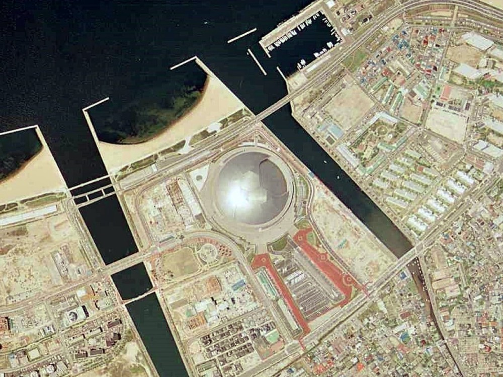
福岡ドームの空中写真（1993年5月、国土地理院）。ソフトバンクは2004年にホークスを買い、2012年にこのドームを870億円で取得した国土地理院 / CC BY 4.0 / Wikimedia Commons
2004年1月21日46歳東京都中央区 日本橋箱崎 ソフトバンク本社／都内のホテル
「470万人分」というディスク2枚と20億〜30億円の要求
北海道の61歳の男Aは、取引先のアンテナメーカーの役員に顧客情報を見せた。1月21日には本社で宮内に会い、海外の合弁事業に20億〜30億円を出資するよう迫った。1月23日の夜には都内のホテルで、470万人分が入っているというディスク2枚を渡した126。
これとは別に、1月17日には「fuu fuu」と名乗る愛知県の31歳の男が104人分の情報を添付したメールを送っていた。2人は2月11日に逮捕されたが、別人で面識はなかった。流出は後に約452万件と確定し、当時の国内で最大だった126。
顧客情報流出事件の件数（2004年）
単位：万件
恐喝犯Aが「入っている」と主張した件数470万件
確定した流出件数約452万件
参考：Yahoo! BBの契約者（2005年3月期までに）400万超
流出件数は当時の国内で最大だった。流出件数は同じ時期の契約者数と同じ規模である。もう1人の犯人は104人分をメールに添付して送っていた。Aは海外の合弁事業への20億〜30億円の出資を求めた。2人の犯人は別人で、面識はなかった。
1262004年2月24日46歳東京 記者会見場／群馬県高崎市 JR高崎駅前 ヤマダ電機本社
会見の失敗と、ヤマダ電機の全店長会議
2月24日、読売新聞が夕刊1面で事件を報じた。孫は海外出張中だった。午後5時10分の会見には広報室長の田部康喜が1人で出て、「分からない」を繰り返して批判を受けた。夜10時15分に宮内が改めて会見を開いた126152。
ある量販店はYahoo! BBの売り場をトイレの横に移した。宮内は独占的に取引していたヤマダ電機に謝罪に行き、創業者の山田昇は全店長会議で話す機会を与えた。宮内はテレビ会議で全国の店長に謝罪し、「もう、涙が出てきちゃった」と振り返っている152。
2004年5月46歳東京
日本テレコムを3,400億円で買う
流出事件の3カ月後、ソフトバンクは旧新電電の日本テレコムを3,400億円で買収すると発表した。Yahoo! BBと合わせて固定回線は1,000万回線規模になった。2005年3月期の連結売上高は8,370億円に増えた152153150。
孫は流出事件とADSLの立ち上げをくぐり抜けた部下たちを、部下というより戦友だと語っている152。
2003〜2004年の主な金額：赤字の累計と、売った株と、買った会社
単位：億円
4期の最終赤字の合計（杉本）3,554億円
日本テレコムの買収（2004年5月）3,400億円
あおぞら銀行株48.87%の売却（2003年9月）約1,011億円
福岡ダイエーホークスの取得（2004年11月）200億円
2004年6月46歳東京都中央区 日本橋箱崎 ソフトバンク本社 社長室
夜11時、スリッパの孫が青野史寛を口説く
社員1,700人のソフトバンクは、Yahoo! BBの拡大のために3,000人を採用すると打ち出していた。リクルートのコンサルタントだった青野史寛は外部の営業として呼ばれ、教育の体制がなければ半数が1年で辞めると説明して育成プログラムを提案し、その場で採用された155。
孫は「お前、外部なの？」と尋ねて引き抜きを持ちかけたが、青野は1度断った。夜11時に秘書を通じて再び呼ばれると、スリッパ姿の孫は300年後の世界を問い、グループ800社を預けると言った。孫は「お前をやっと見つけたんだ」と言い、青野は30分で決めて、その夜に妻へ会社を替えると告げた155。
電波と球団
固定回線を手に入れた孫は、次に携帯電話への参入を狙った。だが周波数の割り当ては既存の事業者に有利に進んでいた。
2004年9月6日47歳東京都千代田区霞が関 総務大臣室
「ユーザーの声は、圏外ですか」と大臣への提訴通告
携帯電話に使いやすい800メガヘルツ帯も2ギガヘルツ帯も、NTTドコモとKDDIに割り当てられる方向だった。孫は全国紙に意見広告を出し、パブリックコメントへの投稿を呼びかけた。数万件の意見が集まり、約3週間後の2回目の広告の見出しは「ユーザーの声は、圏外ですか」だった151。
大臣室で総務省の幹部が話をかわし続けると、孫は大臣を訴えると告げた。麻生太郎総務大臣は「法のもとに提訴することは許されています」と答えた。ソフトバンクは10月13日に提訴を表明した151。
2004年10月13日47歳東京
提訴表明の夜に浮上したホークスと、渡邉恒雄への仲介
提訴を表明したその夜、ダイエーが産業再生機構に支援を要請し、球団の福岡ダイエーホークスが売りに出ることになった。孫は10月18日に買収の意向を表明した。笠井の指揮で後藤が実務を担い、ゴールドマン・サックスを助言役に立てた。交渉の相手はUFJと三井住友とみずほの銀行団、そしてコロニー・キャピタルだった156。
球界の実力者である読売新聞の渡邉恒雄への仲介は、後藤の父が引き受けた。父は読売の社会部記者の出身で、論説委員の時の上司が渡邉だった。後藤は鎌倉の二世帯住宅に住む父に頼んだ。孫は「1週間早くても遅くても駄目だった」と語っている156。
2004年11月47歳東京
柳井正の反対と、ハンバーガーの無料券
社外取締役の柳井正は、ライブドアの堀江貴文と同じに見られるとして球団の買収に反対した。柳井は孫を「気が多すぎてワキが甘い」と評していた。柳井は日次管理を学ぶため孫を訪ねたことがあり、孫は初めてパープレーで回った記念のテレホンカードを贈った間柄である157。
前任の社外取締役は日本マクドナルドの藤田田だった。藤田は高校1年の孫にコンピューターを学べと助言した人物で、柳井への「引き継ぎ」としてハンバーガーの無料券3枚を渡していた。孫は球団をモバイル・インターネットのブランド戦略だと説明して柳井を説得した。ソフトバンクは11月30日に球団の取得を発表し、取得額は200億円だった157154。
2004年12月24日47歳福岡市 記者会見場
「コンドルズという案も出ました」
オーナー会議が全会一致で買収を承認した1時間後、孫は福岡で会見した。孫は「受験生の気持ちでどきどきしていた」と硬い表情で語った。チーム名を問われると、ハゲタカとも呼ばれるコンドルを挙げて自分の髪を題材に笑いを取った158。
監督の王貞治は、孫から世界一を目指すと言われたと明かした。2015年に日本シリーズを連覇した後、孫は大リーグのカンザスシティ・ロイヤルズのオーナーに電話し、世界一決定戦をやろうと持ちかけた158。
コンドルズという案も出ました孫正義、2004年12月24日、福岡での会見
第8章ボーダフォンとiPhoneVodafone Japan and the iPhone, 2006–2010
自己資本2,428億円の会社が、1兆7,500億円でボーダフォン日本法人を買った。返済を買収先の事業に限る借入で資金を集め、980円のホワイトプランと割賦販売で顧客を集め、iPhoneの日本での独占販売で万年3位の立場を変えた。リーマン・ショックで株価は636円まで下がったが、2010年3月期には5期連続の営業最高益に達し、孫は次の30年の構想を語る。
携帯への道
2004年に固定回線を手に入れた孫は、携帯電話に自前の基地局網で参入することを考えた。周囲の専門家はそれを危険だと見ていた。
2004年6月46歳東京都港区六本木 グランドハイアット東京
ボーダフォンの社長探しと「ドコモの津田さんです」
6月23日に日本法人のダリル・グリーン社長が辞任し、英ボーダフォンのアルン・サリーンは後任を探していた。サリーンはグランドハイアット東京での朝食で、クアルコム上級副社長の松本徹三に社長就任を打診した。65歳の松本は、年齢とロンドン本社による財務の統制を理由に断った159。
松本はビル・モローを候補に推し、帰り際にドコモで社長を外された津田志郎の名を挙げた。サリーンはにやりと笑った。8月半ばに津田の起用が発表された159。
2005年47〜48歳東京
松本徹三「一度死んでしまえば、二度と戦えなくなりますよ」
1.7ギガヘルツ帯の免許の見込みが立つと、孫は松本に携帯子会社のCEOを頼んだ。松本は1週間後に断り、ゼロから全国に基地局を建てるのは自殺行為だと述べた。社内の試算でも自前の網の完成には最長10年かかり、国内の電機メーカーには端末の供給を断られていた160。
孫は考え込んだ後、「でも、俺はどうしてもやりたいなぁ」と漏らした。松本はボーダフォンの網を借りるMVNOを提案した160。
2005年47〜48歳米カリフォルニア州クパチーノ アップル本社
ジョブズに見せた「醜いスケッチ」
孫はiPodと日本の携帯電話を組み合わせたスケッチを持ってスティーブ・ジョブズを訪ねた。ジョブズは「マサ、そんな醜いスケッチを俺に見せるなよ」と言い、キャリアの資格もない孫に話はここまでだと告げた22161。
ただしジョブズは、最強のモバイル機器を作る時期が来たという考えには賛成し、それを言いに来たのは孫が初めてだと付け加えた。孫が2014年にテレビ番組で語ったところでは、孫が携帯会社を手に入れたら日本は孫に任せるとジョブズは約束した。サマは、孫がジョブズをダ・ビンチに例え、2人で黙禱したという孫の回想を書いている16296。
マサ、そんな醜いスケッチを俺に見せるなよスティーブ・ジョブズ、2005年頃（孫の回想）
2005年12月48歳東京都港区愛宕 ボーダフォン日本法人本社／移動中の車内
宮川の勘「向こうは売りたいんじゃないか」
MVNOの交渉は、合意した内容が翌日に振り出しに戻ることを繰り返した。宮川は車中で、ボーダフォンは日本法人を売りたいのではないかと孫に話した。2004年末にはKDDIにツーカーの買収を打診して断られていた163。
孫はシスコの社外取締役の同僚だったサリーンに電話し、続いてモローに確かめた。答えは「イエス」だった。孫は宮川に「お前が言ったこと、本当だよ！」と言った163。
2005年47〜48歳東京都港区 汐留 ソフトバンク本社26階会議室／高輪の議員宿舎
嶋聡の「携帯三分の計」
郵政選挙で落選した元民主党衆院議員の嶋聡は、孫に社長室長として採用された。嶋は議員宿舎で、郵政族の大物議員が記者に「4番目、5番目は不利な電波で十分だ」と話すのを聞いていた164。
会議で嶋は、携帯電話は3社しか生き残らないと説いた。新規参入では3社目になれないという意味だったが、孫は「そうは言ってもなぁ」と煮え切らなかった164。
2006年48〜49歳東京都港区 汐留
M&Aに反対してきた柳井正の「これは最後のチャンスです」
社外取締役の柳井正は、それまで孫のM&Aのほとんどに反対してきた。この時だけは賛成し、投資ファンドに買われたら二度と機会はないと述べた。相手が渋るなら上乗せしてでも買うべきだとまで言った。孫は笠井の財務チームに資金調達を命じ、交渉に入ると宣言した165。
2兆円の買収
交渉は2006年2月から3月にかけて進んだ。当初の目安は1兆5,000億円で、1兆円を超えることは確実と見られていた164。
2006年2月48歳東京
別室から戻るたびに1,000億円上がる価格
役員同士の交渉がまとまると、孫とモローが別室で協議した。2人が戻ると価格が1,000億円上がっていることが何度かあった。宮川は「孫さんは欲しい時は顔に出ちゃうタイプ」と振り返る。当初は株式の85%を買う話で進んでいた165。
2006年3月3日48歳東京都千代田区大手町 日本経済新聞社／東京都港区 汐留 ソフトバンク本社
「なんで情報が漏れとるんや！」
夜、英本社から株式の100%を売ってもよいという連絡が入った。約3時間後、ロイターが2〜3行の英文の速報を流した。日経でデスク番だった杉本が大声で伝え、編集フロアは騒然となって1面を組み替えた166。
汐留では孫が博多弁交じりに「なんで情報が漏れとるんや！」と怒鳴った。続いてフィナンシャル・タイムズが投資ファンドの参戦を報じ、価格の引き上げが提示された166。
2006年3月17日48歳東京 記者会見場
1時間遅れた会見と「遠くへ来たもんだ」
合意書の文言を詰めるため、午後5時の予定の会見は1時間遅れた。株式97.7%の取得価額は1兆7,500億円で、2006年3月期末のソフトバンクの自己資本2,428億円の約7.2倍だった。負債を含めた買収総額は約2兆円で、当時の日本で最大のM&Aである1677150。
孫は同じ福岡出身の武田鉄矢の歌を思わせる言葉を漏らした。2006年3月期の連結売上高はボーダフォン分を除いても1兆円を超え、雑餉隈のみかん箱の上で語った「1兆、2兆と数える会社」の最初の位に届いた167150。
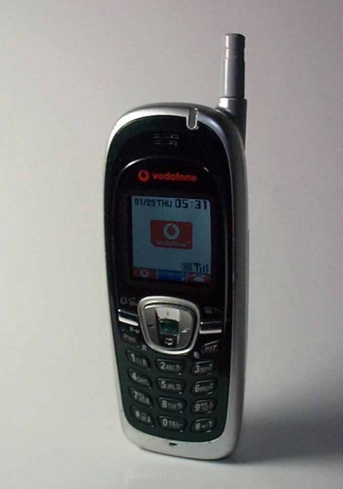
ボーダフォン日本法人の携帯電話 J-D07。2006年の買収時点で、日本の携帯市場の3位だったMarus / Public domain / Wikimedia Commons
気がついてみれば、かなり遠くへ来たもんだ孫正義、2006年3月17日のボーダフォン日本法人買収の会見
ボーダフォン日本法人の買収額と、買い手ソフトバンクの規模（2006年）
単位：億円。自己資本と売上高は2006年3月期の連結値
負債を含む買収総額（杉本）約2兆円
株式の取得価額（97.7%分）1兆7,500億円
ソフトバンクの売上高1兆1,087億円
ソフトバンクの自己資本2,428億円
株式の取得価額は自己資本の約7.2倍にあたる。サマは買収額を154億ドルとし、当時のソフトバンクの企業価値の4倍近くだったと書いている。
7150166962006年3月48歳東京都港区 汐留 ソフトバンク本社
1兆円超の借入と笠井の「火砕流」
買収の器として新設したソフトバンクモバイルに、ソフトバンク本体が普通株式で2,000億円、ヤフーが優先株式で1,200億円を出した。銀行団は1兆1,000億〜1兆2,000億円のノンリコースのLBOローンを出し、ボーダフォン側も優先株式と劣後ローンで計4,000億円を拠出した。返済の原資は携帯事業の収益に限られる設計である7166。
笠井はシティバンクの提案を組み立て直した。4月27日に1兆2,800億円のブリッジ枠から約1兆1,600億円を引き出して決済を終え、11月には事業証券化で1兆4,500億円を調達してブリッジを借り換えた。払い込みの10日ほど前に金利の引き上げを求めた証券会社を、笠井は「いつまでもダラダラとやるもんじゃない！」と言って案件から外した。銀行団の中で笠井の怒りは「火砕流」と呼ばれた166168169。
ボーダフォン日本法人買収の資金の出し手（2006年3月の発表時点）
単位：億円。LBOローンは1兆1,000億〜1兆2,000億円の幅で発表され、中間値で描いた
- 銀行団のノンリコースLBOローン 1兆1,000億〜1兆2,000億円61%
- ボーダフォン側の優先株式と新株予約権 3,000億円16%
- ソフトバンクの普通株式 2,000億円11%
- ヤフーの優先株式 1,200億円6%
- ボーダフォン側の劣後ローン 1,000億円5%
返済の原資は買収した携帯事業のキャッシュフローに限られ、ソフトバンク本体には遡及しない設計だった。サマは買収額の9割が借入で、46億ドルはボーダフォン自身からの融資だったと書いている。
716896ブリッジローンを借り換えた事業証券化の内訳（2006年11月）
単位：億円。総額1兆4,500億円
- 10年物 1兆1,500億円79%
- 13年物（第2トランシェ） 1,750億円12%
- 13年物（第3トランシェ） 1,250億円9%
4月27日に1兆2,800億円のブリッジ枠から約1兆1,600億円を引き出して決済し、ブリッジの金利が上がる前に証券化で長期の資金に替えた。
168169サマは後に、この買収を孫の最高傑作と評価している。サマの計算では買収額は154億ドルで、9割が借入、当初の出資は約20億ドルだった。サマがポケットに20ドルしかないのに1ホール100ドルを賭けたゴルファーの話を引いて買収を評すると、孫は満面の笑みで指を振った。勝つためにはクレイジーにならなければならない時がある、と答えたという96。
サマが示したボーダフォン日本法人への出資とその後の価値
単位：億ドル。サマの記述による
買収額154億ドル
ソフトバンクの当初の出資約20億ドル
国内通信子会社の上場時の価値約420億ドル
サマは上場を2019年と書くが、ソフトバンク株式会社の上場は2018年12月である。
961702006年4月48歳東京都港区愛宕 ボーダフォン日本法人本社
送り込まれた4人と「売らないようにしていただけですよ」
孫は4人を送り込んだ。営業の宮内謙と技術の宮川潤一、管理の青野史寛と財務の藤原和彦である。財務のデータは整っていたが、春の商戦ではドコモとKDDIに大敗していた。売れない理由を尋ねると、営業担当者は売らない方が利益が出ると答えた。新機種は3つしかなかった167。
宮内は負けることに慣れた組織だと見た。3カ月後に営業部門を集め、「君たちはもうキャリアという意識を捨てろ！」と言って販売会社になるよう求め、代理店との関係を一から築き直させた167。
2006年5月48歳東京都港区 愛宕 → 汐留（約1キロ）
連休中に2,000人を引っ越させる
宮内は会社の文化を変えるため、旧ボーダフォンの社員を汐留の本社に移し、代わりに流通部門を愛宕に移すことを提案した。孫は即座に「それ、いいね、みやうっちゃん。じゃ、5月の連休中に」と答えた。約2,000人の移転は5月の連休中に実施された171。
2006年48〜49歳スウェーデン エリクソン／フィンランド ノキア
仏教学科出身のCTOが求めた「270日払い」
孫は宮川にCTOを命じた。宮川は困惑したが、「他に誰がやるんじゃ」と押し切られた。買収前の資産査定を口頭の確認程度で済ませていたため、2〜3カ月で資金が尽きることが分かった171。
宮川は最初の仕事として欧州に飛び、エリクソンとノキアに端末と設備の代金を270日後に払うよう求めた。その間に基地局網を整えると約束すると、日本市場を手放せないメーカーは応じた。宮川は「本当に漫才みたいな感じで決まりました」と振り返る171。
2006年5月48歳東京 販売代理店向けの事業戦略説明会
「10年以内にドコモを抜く」とそば屋3万軒
ドコモのシェアが5割を超えていた時期に、孫は「我々は10年以内にNTTドコモを抜きます」と宣言した。何らかの尺度で1位になり、負けることに慣れた空気を消すのが狙いだったと孫は語る。現場には、そば屋は全国に3万軒あるが携帯会社は3社しかないと説いた171。
2006年48〜49歳東京都港区 汐留 ソフトバンク本社 社長室
仁木勝雅への「アームを調べろ」
ボーダフォン買収の直後、孫はM&Aチームを率いる仁木勝雅に、英アームの買収が可能かを検討するよう命じた。LBOで資金を集めたソフトバンクは、みずほコーポレート銀行から厳しい財務制限条項を課されていた。直前にも孫は英国のオンラインカジノ会社への出資を言い出しており、仁木は孫の発想には制約がないと嘆いた172。
孫は、ジョブズが作る機器のCPUを考えていた。デザインにこだわるジョブズが電池のはみ出した形を選ぶはずはなく、低消費電力のアームの技術が必要になると推論した。当時のアームの時価総額は約2,000億円で、10年後の買収時の約10分の1だった173。
ホワイトプランと割賦販売
電波の質と料金の両方で、旧ボーダフォンは不利な立場にあった。孫はまず網の弱さを地図で示させた。
2006年9月49歳東京都港区 汐留 ソフトバンク本社26階 社長室
「5分以内に来い」と真っ赤な日本地図
孫はヤフーBBの「養鶏場」組だった柴山和久に電話し、5分以内に来るよう命じた。孫は「GISでボーダフォンの電波を分析してくれ。3日以内だ」と言った。ヤフーBBで無線LANの漏れ電波から電波地図を作った手法を、携帯に応用するものだった174。
つながる場所を青、つながりにくい場所を赤、圏外を黒で塗った。日本地図は真っ赤になった。柴山は、これでは勝てるわけがないと思った。ソフトバンクは対価を払って基地局の鉄塔を共有できないかドコモに持ちかけたが、断られた。基地局を3年以内に2万局から4万6,000局に増やす計画が立てられ、屋内用のアンテナを多く設置する方針になった174161。
2006年48〜49歳東京
極秘アンケート「3分の1が解約」
番号ポータビリティの導入を前にした意向調査で、顧客の3分の1が他社に移ると答えた。孫は「アンケート結果を見た瞬間、ぞっとしました」と語る。結果は社内で極秘扱いにされた171。
2006年10月23日49歳東京都千代田区紀尾井町 ホテルニューオータニ
番号ポータビリティ前日の「予想外割」
番号ポータビリティが始まる前日の夕方6時半、孫は「予想外割¥0」のパネルを掲げた。基本料2,880円のゴールドプランで、夜9時から深夜1時を除き自社の利用者同士の通話を無料にし、他社が値下げすれば24時間以内にさらに200円下げると宣言した175。
2,880円は期間限定で、2007年1月半ば以降は9,600円になる条件だった。ドコモの中村維夫社長は10月27日の中間決算の会見で「ゼロ円、ゼロ円と言うが」と欄外の小さな文字を批判し、公正取引委員会に情報を提供した。最初の週末にはシステム障害で受付を停止した。序盤の争奪戦ではKDDIが勝った175。
2006年48〜49歳東京／東京・八重洲など3店舗
藤原和彦への宿題とフォードの残価設定ローン
孫は藤原和彦に、顧客を獲得する仕組みを変えるよう宿題を出した。当時は端末代と同じ額の販売奨励金、1台あたり数万円を販売店に払っており、契約を取るたびに損失が出た176。
藤原はマツダ時代にフォードとの販売会社オートラマで学んだ残価設定型のローン「レッドカーペット・プログラム」を思い出した。端末代を月々の通信料から割り引く割賦販売である。孫は「それはいいな！」と即決したが、営業部隊は警戒し、八重洲など3店舗で実験してから全国に広げた。解約率は大きく下がった。藤原は「これはお金持ちが勝つようにできたゲームだなと思いました」と語る176。
2007年49〜50歳東京 みずほ信託銀行
2年分の割賦債権を金融商品にする
2年契約の割賦は、2年分の収入が確定している債権である。後藤芳光は、期間が確定できる債権は流動化できるという安田信託銀行時代の知識を使い、この割賦債権を証券化することを提案した174。
債権はみずほ信託銀行の人気商品「貯蓄の達人」に組み込まれた。得た資金は銀行団への返済と、弱かったネットワークの改善に充てられた174。
2006年12月49歳東京都港区 汐留 ソフトバンク本社
ホワイトプランの即時投入に宮川が反対する
予想外割の失敗を取り返すため、孫は基本料980円の「ホワイトプラン」を12月1日から始めようとした。宮川は「1日、頭がちぎれるほど考えてみました」と書き出したメールを役員に送り、緊急会議を求めた。料金体系が予想外割と大差なく、今出せば顧客が混乱するという理由だった176。
孫は普段「俺には2票ある」と言うが、この時は最後に決めるのは自分だと譲らなかった。宮川は「こいつまでひっくり返ったらもう会社がダメになります」と食い下がった。最終的に宮川の意見が通り、発表は2007年1月に延びた176。
2007年1月5日49歳東京 ホワイトプランの発表会
父の葬儀と「コメ・アレルギー」
2007年元日に宮川の父が亡くなった。宮川は禅寺を継がず、「35歳まで好きにやらせて」と父に約束したまま41歳でソフトバンクにいた。宗派のしきたりで葬儀は1週間かかり、発表会に出られないとメールすると、孫は電話で「お父さんの式には出られないよ」と詫びた。宮川は今回は慎重に、と念を押した176。
発表会で孫は落ち着いた口調で、後から米印の条件が付くことはないと説明した。自分は「コメ・アレルギー」になったと述べて会場の笑いを取った176。
携帯の月額基本料：予想外割とホワイトプラン（2006〜2007年）
単位：円（月額）
予想外割の条件が切れた後（2007年1月半ば以降）9,600円
予想外割の発表時の基本料（期間限定）2,880円
ホワイトプランの基本料（2007年1月発表）980円
予想外割の2,880円は期間限定で、条件は欄外の小さな文字で書かれていた。NTTドコモの中村維夫社長はこの表示を批判し、公正取引委員会が調査した。
1751762007年5月49歳東京都港区 汐留 ソフトバンク本社 社長室
純増数で初の首位と、携帯で埋まった社長室
2007年5月、ソフトバンクの契約の純増数がドコモとKDDIを抜いて初めて首位になった。この頃、孫は社長室に家電量販店のような陳列棚を持ち込み、四方の壁に販売中のすべての携帯端末を並べさせた161。
テレビ東京の「TVチャンピオン」の「ケータイ王選手権」で優勝した人物をアドバイザーとして招き、社長室に常駐させて質問を続けた161。
iPhone
アップルは1カ国で1社と組み、相手には例外を除いて最大手の携帯会社を選ぶ方針だった。ドコモも名乗りを上げていた177。
2006年48〜49歳米カリフォルニア州 ジョブズの自宅
「お前はきっとパンツに漏らすぞ」
携帯会社を手に入れた孫は、約束どおり再びジョブズを訪ねた。ジョブズは開発中の試作機を見せなかったが、「もしこれを見たらマサ、お前はきっとパンツに漏らすぞ」と言った161。
孫が見せてほしいと頼むと、ジョブズは「それはできない。でもマサ、お前なら分かるから」と返した。秘密主義のジョブズとしては異例の発言だった。2人はラリー・エリソンの紹介で知り合い、エリソン邸の日本庭園で満開の桜の下で語り合った時から、自宅を行き来する仲になっていた161178。
2007年1月49歳米国 初代iPhoneの発表会
「鳥肌が立っちゃってね」
ジョブズは「アップルは電話を再発明する」と言って初代iPhoneを紹介した。孫は「鳥肌が立っちゃってね。本当に漏らしそうだったよ。さすがスティーブだと」と振り返っている177。
初代は通信方式の関係で日本では使えなかった。翌年のiPhone 3Gで、ジョブズは万年3位のソフトバンクに日本での独占販売権を与えた177。
2008年50〜51歳東京 ソフトバンク本社
幹部にiPhoneを配り「信長の鉄砲」
孫は米国でiPhoneを大量に買い付けて幹部に配り、「お前たち、これからiPhoneで遊び倒せ」と命じた。信長が長篠の戦いで鉄砲の三段撃ちを考え出せたのは、若い頃から鉄砲で遊んでいたからだと説明した。孫はiPhoneを携帯電話の競争における鉄砲に位置づけていた177179。
2008年7月10日50歳東京都渋谷区 ソフトバンク表参道店（JR原宿駅近く）
発売前夜、800人の列に1人で現れる
iPhoneの料金プランを巡る役員会議が紛糾し、孫は「もういい！これから一杯飲んで帰る」と言って会議室を出た。社用車で麻布の自宅を通り過ぎ、運転手に表参道店に寄るよう頼んだ。午後10時半頃、孫は徹夜で並ぶ約800人の前に予告なく降り立った177。
孫は1人で列の端から端まで握手と写真撮影に応じ、取材中のメディアがその姿を報じた。翌朝7時の発売の頃、列は1,500人に増えていた。孫はこの日を、携帯電話がインターネットマシンになる歴史的な日と呼んだ177180。
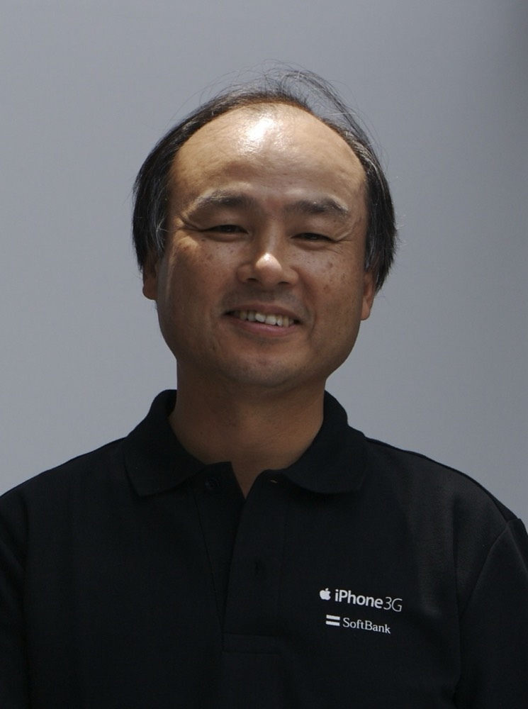
iPhone 3Gの国内発売日の孫正義（2008年7月11日）Masaru Kamikura from Japan / CC BY 2.0 / Wikimedia Commons
ケータイがインターネットマシンとなる歴史的な日です孫正義、2008年7月11日、iPhone 3G発売イベント
連結営業損益の推移（2002年3月期〜2010年3月期）
単位：億円。2010年3月期は5期連続の営業最高益
2002年3月期−239億円
2003年3月期−920億円
2004年3月期−549億円
2005年3月期−254億円
2006年3月期+623億円
2007年3月期+2,711億円
2008年3月期+3,243億円
2009年3月期+3,591億円
2010年3月期+4,659億円
2007年3月期からボーダフォン日本法人の通年の損益が加わる。
150リーマン・ショック
2008年9月15日にリーマン・ブラザーズが破綻した。2兆円の借入を抱えるソフトバンクには、経営危機説が流れた。
2008年10月17日51歳東京都港区 汐留 ソフトバンク本社
株価1,000円割れと決算発表の前倒し
年初に2,000円前後だった株価は、10月22日に1,000円を割った。雑誌や夕刊紙に経営危機説が載り、信用リスクを示すCDSの水準は破綻した企業並みに上がった。社内ではNTTや総務省が噂の出所だという話も出た108。
孫は情報の開示に問題があると考え、10月17日に「決算発表を1週間前倒しにしたい」と指示した。11月5日に予定していた中間決算の発表を10月29日に早め、それまで出していなかった業績の見通しもすべて開示すると決めた108。
2008年10月51歳東京都港区 汐留 ソフトバンク本社
750億円のCDOと「キミちゃん」
ボーダフォン買収時の社債3本を繰り上げて償還するため、ソフトバンクはAA格のCDOに資金を預けていた。金融危機で160銘柄のうち6銘柄がすでにデフォルトし、あと2社で750億円の損失が確定する状況だった181。
孫も開示をためらったが、経理と内部統制を担当する唯一の女性役員、君和田和子が開示すべきだと主張した。君和田は「私の仕事はそれに負けないことですね」と言い、最後は孫が折れた181。
2008年10月28日51歳東京都港区 汐留 ソフトバンク本社
辞表を出した後藤に笠井の「バカモン！」
後藤はAA格を過信した自分の責任だと考えて辞表を書き、笠井に渡した。温厚な笠井の表情が変わり、「バカモン！そんなもんを書いている暇があったら」と一喝した181。
後藤は特別な手段に頼らず、有利子負債の返済スケジュールを示して市場の判断を求める道を選んだ。中間決算の発表前日の10月28日、株価は636円まで下がったが、開示の後は連日のストップ高になった181。
リーマン・ショック後のソフトバンク株価（2008年）
単位：円
年初2,000円前後
10月22日1,000円割れ
10月28日（年初来安値）636円
翌29日に前倒しで中間決算と業績見通しを開示し、その後は連日のストップ高になった。同じ時期にボーダフォン買収時の社債の償還用に預けたCDOで750億円の損失が出るおそれがあった。
1081812009年51〜52歳東京
上場廃止の計画と、笠井の「夢をちっちゃくしていいんですか」
信用不安を乗り切った頃、市場に嫌気が差した孫は、自社株を買い集めて上場を廃止するMBOを計画した。メインバンクのみずほ銀行にも極秘で伝えていた。孫は「MBOを考えたことは常にあります」と語り、非公開の方が経営の自由度が高いと考えていた181。
孫の提案の大半に「行きましょう」と答えてきた笠井が、この時だけは強く反対した。資金調達は可能だが、我々の夢を小さくしていいのかという理由だった。計画は外部に知られずに消え、孫が明かしたのは約4年後の笠井のお別れの会である181。
有利子負債の推移（2005年3月期末〜2010年3月期末）
単位：億円。リース債務を含まない
2005年3月期末8,539億円
2006年3月期末9,053億円
2007年3月期末（買収後）2兆3,944億円
2008年3月期末2兆5,330億円
2009年3月期末2兆4,004億円
2010年3月期末2兆1,955億円
2010年3月期末の純有利子負債は1兆5,011億円で、1年で4,384億円減った。
150新30年ビジョン
株価がまだ低迷していた2009年6月、孫は次の30年の構想を作る作業を始めた。
2009年6月24日51歳東京 第29回定時株主総会
「来年、次の30年ビジョンを発表する」
リーマン・ショックの底が見えず、派遣切りが連日報じられていた時期の株主総会で、孫は翌年の総会で30年ビジョンを発表すると唐突に宣言した。この頃の孫の口癖は「俺が見たいのはバックミラーに映る景色じゃない」だった112。
2009年7月1日51歳中国・北京（出張先）→ 東京 ソフトバンク本社
入社3カ月の鎌谷賢之を北京から呼び戻す
1カ月前の総会資料の説明で、IR室の鎌谷賢之は室長の代理を務めた。鎌谷は最後に、世界にどう感謝される企業になるかを語ってはどうかと提案した。孫は名前を尋ね、「お前は、どこに埋もれていたんだ？」と言った。鎌谷は中途採用の凍結中に、青野が独断で採用を続けていた人材だった182。
7月1日、北京に出張中の鎌谷に、孫の秘書から今すぐ来てほしいと電話が入った。翌日の夕方6時からの会食で、孫は鎌谷をビジョン検討チームのリーダーに指名した。調べる対象は30年後のチップ性能と可能になる技術、生活様式と競争環境の4点で、1カ月後の取締役会に草案を出すよう命じた。鎌谷は三洋電機の再建チームで挫折した経歴を持ち、孫は「ソフトバンクでリベンジすればいいじゃないか」と言った112182。
2009年51〜52歳東京 ソフトバンク本社
「信長の領土拡大をグラフにしろ」
鎌谷のチームは、本能寺の変までの信長の領土を年ごとの石高でグラフにした。領土はある時期から急増しており、それは「天下布武」の印を使い始めた頃と重なった。孫は「見ろよ、やっぱりビジョンなんだよ」と満足した183。
孫は続いて、長篠の戦いで信長が鉄砲をどう使ったかを調べさせた。当時は多くても数百丁が常識だった。チームが大量の鉄砲の集め方を報告すると、孫は「じゃ、火薬はどうなんだ」と問い、堺の茶人が硝石を扱う武器商人だったという見方に至った。孫はビジョンの検討に100時間以上を費やした183184。
2009年12月24日52歳東京
ツイッター「masason」の開設
孫は鎌谷に、グループ2万人の知恵を集める方法を考えさせた。勝ち抜き方式のプレゼン大会の案を退け、社外からも意見を募ることにした。クリスマスイブの24時前、孫は「実名で今日からつぶやくことにしました」と最初の投稿をした。アカウント名は鎌谷が付けた185。
孫はフォロワーに人生で最も悲しいことは何かと問い、21%が「死」と答えた。孫は300年後には人の寿命を200歳にしたいと応じた。髪の後退を自虐する投稿でも知られるようになった185。
髪の毛が後退しているのではない。私が前進しているのである孫正義、ツイッターでの投稿
2010年5月13日52歳東京都港区 汐留 ソフトバンク本社 社員食堂内のUstreamスタジオ
5時間の「光の道」討論
全世帯に光回線を引く「光の道」構想をめぐり、孫はジャーナリストの佐々木俊尚と夜8時から翌日の午前1時頃まで約5時間討論した。様子はUstreamとニコニコ生放送で中継され、視聴者は10万人を超えた186。
孫の主張では、メタル回線をやめて光回線に切り替えれば月額約1,400円で全世帯に光回線を提供でき、国費はかからない。光の道に国費が1円でも必要になったら誤りを認めるとまで述べた。視聴者の投票では孫の支持が52.1%、佐々木が12.3%だった186。
孫が「光の道」討論で示した費用の比較（2010年5月）
単位：兆円。孫の試算。NTTの2008年度の接続会計報告書を基にした
メタル回線を維持した場合の10年間の費用3.9兆円
全世帯を光回線にした場合の10年間の費用2.9兆円
光回線の建設費（5年）2.5兆円
孫はこれで光回線を月額約1,400円で全世帯に提供でき、国費は不要だと主張した。試算の前提には異論も出た。
1862010年52〜53歳東京 ヤフー・ジャパン／米国
検索をグーグルに切り替える交渉
2010年のヤフー・ジャパンの最優先課題は、検索エンジンをグーグルの技術に切り替えることだった。孫自身も半年間にわたり毎週のようにグーグルと交渉した。この時のグーグル側の責任者がニケシュ・アローラで、孫は後に彼を後継者として招くことになる104187。
2010年6月25日52歳東京都千代田区 東京国際フォーラム
「私の人生で一番大切なスピーチ」
孫は事前にツイッターで「30年に一回の大ボラ」と予告した。13時40分に始まった講演は300年前の産業革命から語り起こし、脳型コンピューターと感情を持つロボットの時代を予言した。理念は情報革命で人々を幸せにすることで、30年後の時価総額の目標は200兆円とした。発表当日の時価総額は約2.7兆円だった185188189。
創業から30年後に生き残る会社は0.02%にすぎないという数字を示し、グループ会社を約800社から5,000社規模にする構想を語った。最後のスライドには祖母の写真が映された。翌日の日経朝刊が伝えたのは構想ではなく、後継者育成のために300人を選ぶという小さな記事だった。当時自動車業界の担当だった杉本は、自分の不明を恥じていると書いている18519011。
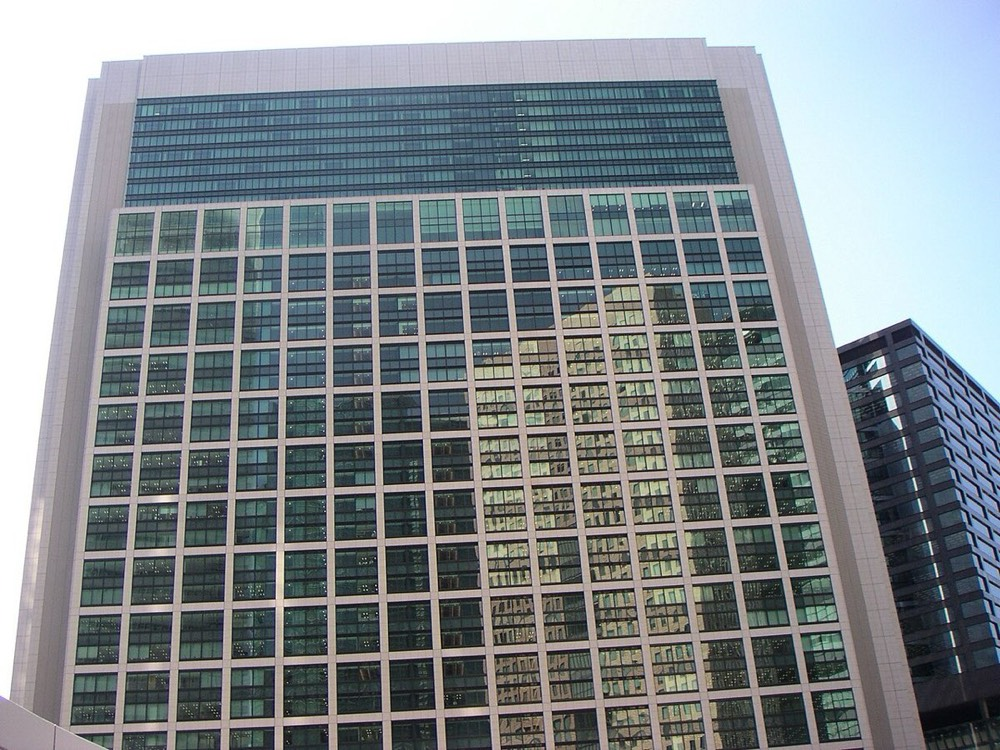
ソフトバンクの本社が置かれた汐留の東京汐留ビルディング（2006年撮影）っ / CC BY-SA 3.0 / Wikimedia Commons
おそらく私の人生で一番大切なスピーチになるでしょう孫正義、2010年6月25日、新30年ビジョン発表会
新30年ビジョンの時価総額目標と、発表当日の時価総額（2010年6月25日）
単位：兆円
30年後の目標200兆円
発表当日の時価総額約2.7兆円
目標は当日の約74倍にあたる。グループ会社を約800社から5,000社規模にするという組織の目標も同時に示された。
1881902010年7月52歳東京都港区 汐留 ソフトバンク本社
ソフトバンクアカデミアの開校
新30年ビジョンで後継者の育成を掲げた孫は、2010年7月にソフトバンクアカデミアを開校した。開校記念講演で、肝炎の入院中に作った25文字の「孫の二乗の兵法」を初めて公開した191192。
社外からの受講生は30人の募集に1万人が応募し、定員を100人に増やした。社内外合わせて300人の受講生が、孫の前で事業提案を発表して点数を付けられる場になった193194。
2010年10月53歳愛知県名古屋市 ナゴヤドーム VIPルーム
野球観戦中の10分で決めた「ロボットやるからな」
中日とロッテの日本シリーズの最中、冨沢文秀は「会議をやるから来い」と呼ばれた。ホークスはクライマックスシリーズでロッテに敗れていたため、冨沢はなぜナゴヤドームなのかと首をかしげた149。
観戦しながらの会議は10分で終わり、孫はロボット事業への参入と冨沢の責任者就任を告げた。「ロボットやるからな。お前、責任者な」。冨沢は孫の突然の指示に慣れており、驚かなかったという。新30年ビジョンで語った感情を持つロボットは、この時から開発が始まった149。
2010年11月15日53歳高知県高知市 高知県護国神社
龍馬の命日に木刀を素手で振る
旧暦の龍馬の命日、孫は高知県護国神社を訪れた。神社には龍馬が若い頃に使ったとされる樫の木刀があり、長さは134センチ、重さは780グラムである。本来は手袋を着けて扱うが、孫は目を閉じて感極まり、手袋を外して素手で持った20。
孫は涙を流しながら素振りを始め、関係者はあっけにとられた。同行した鎌谷は後に、孫への贈り物を相談された際に龍馬の木刀のレプリカを勧めた。それは今も汐留の本社26階に置かれている20。
ヤフー・ジャパンの売上高（2000年3月期と2010年3月期）
単位：億円
2000年3月期57億円弱
2010年3月期2,798億円
10年で約50倍になり、ブロードバンドと携帯への投資を支えた。2003年の東証1部上場の初日には時価総額3兆円を付けた。
104第9章震災とSprintとアリババ上場The Earthquake, Sprint, and Alibaba's IPO, 2011–2014
東日本大震災の後、孫は個人で100億円を寄付し、CEOを辞めて自然エネルギーに専念すると言い出して取締役会に止められた。2012年には米国3位のSprintを216億ドルで買い、有利子負債は9兆円を超えたが、T-Mobileとの統合は米当局に阻まれた。その1カ月後、14年前に2,000万ドルを出したアリババがニューヨークで上場し、持分の価値は約700億ドルになった。
3月11日
地震の翌朝の時点で、ソフトバンクの基地局3,786局が止まっていた。孫は後にアニュアルレポートで、自社のネットワークの耐久性が十分ではなかったことを深く悔いていると書いている195。
2011年3月11日53歳東京都港区 汐留 ソフトバンク本社／福岡市内のホテル／佐賀県庁
「千年に一度の国難」と30万人の疎開計画
会議中に地震に遭った孫は、NHKの津波の映像から目を離さなかった。福島第一原発の周辺に住む30万人を安全な地域に移す支援をすると言い出し、「俺が行かなくて誰が行くんだ」と述べた196。
シンガポールから戻って福岡にいた藤井宏明は、翌朝に佐賀県知事の古川康に会った。古川は3万人の受け入れを約束し、武雄市長の樋渡啓祐を名代として福島に送ると伝えた。藤井は競馬の投票サイト「オッズパーク」と宝くじのネット販売の事業で築いた自治体との関係を使い、30万人分の受け入れ先を確保した196。
2011年3月22日53歳東京 → 福島県郡山市 → 福島県庁
線量計は4マイクロシーベルト、知事に「今ですよ」
役員たちの反対を押し切り、孫は3台の車で北へ向かった。ツイッターには「私は臆病者です。福島原発を心配しています」と書いた。同行した嶋聡によれば、郡山を過ぎると線量計の値は毎時4マイクロシーベルトを超え、20台ほどの霊柩車に追い越された197。
福島県知事の佐藤雄平は携帯電話の復旧への協力を求めた。孫は両親を失った子供に18歳まで携帯電話を無償で貸すと答えた。疎開の計画は「次の課題」とされ、孫は「次じゃない。今ですよ」と食い下がったが、面会の時間が尽きた197。
2011年3月22日53歳福島県田村市 田村市総合体育館（避難所）
誰も応じなかった九州への避難と「せつないね」
帰京を促されて車が動き出すと、孫は避難所に行くと言い出した。車は東へ折れ、原発のある双葉郡の隣の田村市に向かった197。
孫は被災者に九州への避難を呼びかけ、渡航費と1年分の生活費を保証すると言った。だが避難所にいたのは故郷に愛着を持つ高齢者が多く、誰も応じなかった。体育館を出る時、孫は嶋に一言だけ漏らした197。
せつないね孫正義、2011年3月22日、福島県田村市の避難所を出る時
2011年3月53歳東京都港区 汐留 ソフトバンク本社
「1年間CEOを辞める」と宮内謙との2時間の口論
福島から戻った孫は緊急会議で、1年間CEOを辞めて復興と自然エネルギーの事業に専念すると宣言した。俺の財産をすべてつぎ込むと言い、せめて3カ月だけでもと机を打った。後任には宮内謙を指名した197。
宮内は、あなたの責任は会社と社員と顧客に対してあると反論した。2時間の口論の末、孫は「次の取締役会で辞めるって言うからな！」と言い放った197。
2011年4月53歳東京 ソフトバンク取締役会
柳井正が止めた辞任と、年200億円の条件
青野史寛は社外取締役の柳井正に電話で事情を説明した。柳井は、経営を放り出す経営者はいないと請け合った。取締役会の冒頭で孫が社長を辞めたいと述べると、柳井は「あなたの本業はソフトバンクでしょう。エネルギーは国家そのものだ」と制した197。
米国人の取締役は電力事業そのものには賛成した。結局、電力事業への支出を年間200億円以内とする条件で参入が認められ、孫は辞任を撤回した197。
会社を捨てちゃいけない。社員を捨てちゃいけない柳井正、2011年春、ソフトバンク取締役会
2011年4月3日53歳東京
個人で100億円、引退までの報酬も全額
福島を訪ねた12日後、孫は個人で100億円を寄付し、引退までの役員報酬の全額も寄付すると発表した。ソフトバンクグループとしての寄付は10億円で、個人の額はその10倍だった198。
使途は会社が公表している。被災自治体に計34億円と公益団体に20億円、子ども支援の6団体に計6億円を出した。残る40億円で自ら東日本大震災復興支援財団を設立した。財団は2023年に子ども未来支援財団と改称して存続している199200。
孫正義個人による震災寄付100億円の使途（2011年）
単位：億円
- 東日本大震災復興支援財団（自ら設立） 40億円40%
- 被災自治体 34億円34%
- 公益団体 20億円20%
- 子ども支援の6団体 6億円6%
財団は2023年9月に子ども未来支援財団へ改称して存続している。
199200震災後に表明された金額の比較（2011年）
単位：億円
取締役会が認めた電力事業の支出上限（年間）200億円
孫個人の寄付100億円
ソフトバンクグループとしての寄付10億円
自然エネルギー財団への私財の拠出10億円
孫は引退までの役員報酬の全額を寄付するとも表明した。個人の寄付は会社の寄付の10倍である。
198201197自然エネルギーとスーパーグリッド
原発事故の後、孫は脱原発を公言し、私財10億円を拠出して財団を作ると表明した201。
2011年9月12日54歳東京 自然エネルギー財団の設立イベント
アジアスーパーグリッド構想の発表
2011年8月に設立した自然エネルギー財団は、9月12日の設立イベントでアジアスーパーグリッド構想を発表した。壇上には中国国家発展・改革委員会のエネルギー研究所の副所長も並んだ202。
10月には太陽光発電などを手がけるSBエナジーを設立し、孫は利益の配当を40年間受け取らないと述べた。一方で同じ時期のアニュアルレポートでは、純有利子負債を6年でゼロにする目標は変えないと投資家に約束している。後にSBエナジーの取締役になったサマは、日本の太陽光案件が補助金付きの低金利で9割を借入で賄い、高い資本利益率を出している構造に驚いたと書いている203195204。
2011年6月53歳東京都港区 汐留 ソフトバンク本社26階 大会議室と廊下
三井物産の三輪茂基に「俺の横で働け」
岐阜市出身の三輪茂基は、故郷の英雄の斎藤道三と孫を重ねて見ていた。倍率100倍のソフトバンクアカデミアの外部生に合格し、「ソフトバンクが300年存続するための今後10年の計」という課題に「情報通信とエネルギーの融合」を提案した。大会議室には龍馬の写真と、議論が行き詰まると孫が振る竹刀が置かれていた194。
退室した三輪に秘書が、孫が話したいと言っていると耳打ちした。出てきた孫はいきなり「君さ、俺の横で働け。すぐにだ」と言った。後日の昼食で孫は、シングテルの買収とエネルギーへの参入を実際に検討していると明かし、「なんで分かったの？」と尋ねた。鉄スクラップの室長だった三輪は、がれきの撤去で入った被災地で即席の位牌を見ていた。子供2人と住宅ローンを抱えたまま、11月に三井物産を辞めて経営戦略室長になった194。
2012年3月54歳中国・北京 人民大会堂／韓国・ソウル
習近平と李明博に会い、プーチンとの会談は見送る
嶋聡は政治家時代の人脈を使い、2012年3月に人民大会堂での習近平との会談を、5月にソウルでの李明博大統領との会談を実現した。反応は良く、中国国家電網や韓国電力公社との提携につながった205。
7月にプーチンとの会談の計画を取締役会で話すと、柳井が「もし本当にプーチンと会うなら僕は取締役を辞めさせてもらう」と反対し、孫は見送った。同じ頃、孫は送電網を持つJパワーの買収を本格的に検討したが、資本構成の面で難しいと結論した。経済産業省の高官から北陸電力の買収を持ちかけられたこともあったが、初期の段階で見送っている205206。
2013年55〜56歳モンゴル ウランバートル南方のゴビ砂漠
ゲルで飲んだ馬乳酒とスーパーグリッドの第一歩
2011年9月、三輪はGE日本法人の仲介でモンゴルのニューコム会長ツェレンプンツァグ・ボールドバターと出会い、半年後にモンゴルでの風力発電の合弁を決めた。2013年夏、三輪はゴビ砂漠のゲルに泊まり、馬乳酒を酌み交わした205。
ここに世界最大級の風力発電所を建て、まずウランバートルに送電し、いずれアジア全域と日本を結ぶ構想だった。ロシアの水力やインドの太陽光もつなぐと、総延長は3万6,000キロに及ぶ。三輪は満天の星を見て『三国志』の諸葛孔明を思い出したという205。
ジョブズの死、ヤフー、ホークス
2011年10月5日54歳サンフランシスコから東京に向かうプライベートジェットの機中
ジョブズの訃報と「ボロボロに泣いた」
2011年の春頃、ジョブズは開発したばかりのiPad 2を誇らしげに孫に見せた。ジョブズは体調が良くなったら一緒に京都に行こうと誘い、孫はうまい寿司屋を紹介すると応じた。寿司はジョブズの好物だった。これが2人の最後の会話になった178。
10月、孫はアップルの新製品発表会に出た帰りの機中で、56歳のジョブズの訃報を聞いた。孫は「泣きましたよ。もうボロボロに泣いた」と語る。会った経営者の中でジョブズが一番の人物で、がんを自覚した後は生死を超えた境地にいたと言い、自分はまだまだ小さいと感じたという。杉本によれば、この死が孫に「俺はまだまだ甘い」と火をつけ、翌年のSprint買収につながった178207。
2011年10月26日54歳東京都港区 汐留 ソフトバンク本社25階 社員食堂奥のカフェテリア
アカデミアでの「MOTTAINAI」プレゼン
ヤフーのモバイル部門にいた村上臣は2011年4月に退職したが、孫は「お前は俺の目の届くところにいろ」と言ってアカデミアに残らせていた。次の課題が「ヤフー・ジャパンの10年戦略」だと知った村上は、社内で不満を持つ社員に話を聞いて回った193208。
当日、村上が登壇すると「MOTTAINAI」の文字と、直前に亡くなったワンガリ・マータイの写真が映った。村上は退職者数の推移を示し、ソーシャル事業で失敗した幹部が昇格した例を実名で批判した。孫は腕組みをして聞き、ヤフーの経営陣は憮然としていた。講評はなく、会場は静まり返った208。
2012年1月54歳東京都港区 汐留 ソフトバンク本社 社長用応接室
龍馬の肖像の前で宮坂学に社長を打診
呼び出されたヤフー執行役員の宮坂学は、怒られると思っていた。孫は応接室で坂本龍馬の肖像画を眺めており、突然「お前がヤフーの社長をやるべきだと思う」と言った。44歳の宮坂は一晩考えさせてほしいと答え、翌日に引き受けた209。
この人事は、1996年からヤフーを育てた井上雅博を退かせることを意味した。孫が「もう、決めたから」と告げると、井上は「孫さんがそう決めたのならそういうことですね」と応じた。孫はこれは多数決で決める事柄ではないと考えたという。宮坂はGyaO社長の川邊健太郎を副社長に据え、2人は渋谷のカラオケボックスで改革の筋書きを作成した209210。
2012年54〜55歳福岡市 福岡ドーム
球場を870億円で買う
ホークスの買収後、孫は3年ほどは失敗だったかと思ったという。電通の調査では、優勝争いをすれば年に400億〜500億円の宣伝効果があったが、球団の赤字は年20億〜30億円だった158。
2012年、ソフトバンクは本拠地の球場を870億円で買い、年に50億円かかっていた使用料をなくした。球団社長になった後藤は、営業利益から選手の年俸とグループ内の取引を差し引いた値を最大にするという指標を示した。戦力外となった選手にはグループ内の職を提示している158。
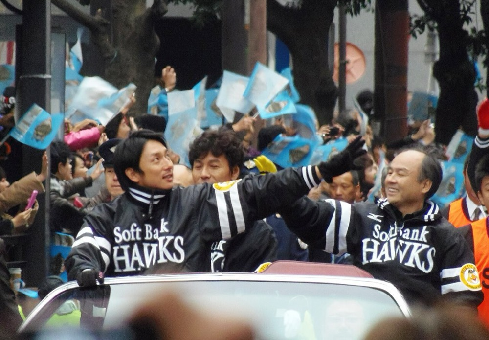
2011年12月の福岡ソフトバンクホークス優勝パレード。右がオーナーの孫正義Wiki591801 / CC BY 3.0 / Wikimedia Commons
ホークスの収支と球場の買収（2012年）
単位：億円。宣伝効果と赤字は年間で、幅の中間値で描いた
球場の買収額870億円
宣伝効果（電通の調査、年間）400億〜500億円
買収前の球場使用料（年間）50億円
球団の赤字（年間）20億〜30億円
2013年10月56歳東京都港区 新高輪プリンスホテル
出店者1,000人の前で「今日が革命記念日だ」
ヤフーショッピングは業界3位から抜け出せずにいた。会長の孫は出店料とロイヤルティーの無料化を主張した。無料にすれば毎年100億円の収入を失う。宮坂と川邊は3年で営業利益を倍にする目標を掲げていたが、孫は「もう、そんなもんはどうでもいい」と言い切った210。
孫は約1,000人の出店者の前で無料化を宣言した。出店者は3年で2万から45万に増えた。無料で客を集める手法は、小学生の孫が父の喫茶店でコーヒーの無料券を配るよう提案した時から続いていると杉本は書いている21018。
今日が革命記念日だ孫正義、2013年10月、ヤフーショッピングの無料化を宣言して
ヤフーショッピングの出店者数：無料化の前後
単位：万店
無料化の宣言時（2013年10月）2万
3年後（2016年）45万
出店料とロイヤルティーの無料化で年100億円の収入を失う見込みだった。商品数は8,000万品から3倍になった。
210Sprint
2012年6月、孫は米国の携帯3位のSprintを標的に定めた。合意の直前まで進んでいたシンガポールのシングテルの買収は撤回し、アームの買収は再び先送りした。社内での呼び名は「コロンブス・プロジェクト」である207173。
2012年9月11日55歳米ミズーリ州カンザスシティのステーキ店 → カンザス州オーバーランドパーク Sprint本社
極秘の買収提案と、カンザスシティのステーキ
孫はSprintに約200億ドルでの買収を極秘で提案した。iPhoneの発表会の後、プライベートジェットでロッキー山脈を越えてカンザスシティに飛び、名物のステーキを食べてから南隣のオーバーランドパークに向かった207。
Sprintの本社は赤レンガの時計台のある大学のような敷地だった。身長約2メートルのCEOダン・ヘッセと握手を交わすと、孫は交渉の顔になった。この頃孫はツイッターに「少し守りに入りかけている己を恥じ入る」と書いている207。
2012年9月12日55歳米サンフランシスコ アップルのiPhone発表会場
KDDI社長への挑発と「魂の会議」
空いていた隣の席に座った孫は、同じ1957年生まれのKDDI社長・田中孝司に「髪の毛がさみしくなりましたね」と声をかけた。大阪出身の田中は「孫さんに言われたくないよ」と返した。その後、孫がその気になればKDDIも買えるという趣旨の言葉を口にすると、田中は会場を出てから怒りがこみ上げた207。
田中は帰国の翌日から、ソフトバンクに勝つ方法を徹底的に検討する緊急会議を開いた。社内で「魂の会議」と呼ばれた会議の目玉はテザリングで、KDDIはイー・アクセスの買収交渉も進めていた207。
2012年10月55歳東京
イー・アクセス争奪と千本倖生の選択
イー・アクセスの筆頭株主ゴールドマン・サックスの条件は1株6万円だった。孫は当時の株価の3.5倍にあたる1株5万2,000円を1回だけ提示し、金額の交渉はしないと伝えた。KDDIの田中はGSの言う6万円を出したが、詳細な資産評価を条件にしており、後で値引きされるおそれがあった75。
創業者の千本倖生は1日に何度もGSに電話して迷った末、孫を選び、「孫さんのスピードを取った」と語った。千本は1986年に京セラ本社で孫と大久保が稲盛和夫と交渉した時、稲盛の隣に座っていた人物で、翌朝に契約を反故にした2人のやり方を今も批判している。孫はこの交渉には正々堂々と臨みたいと申し出ていた75。
イー・アクセス争奪の1株あたり価格（2012年）
単位：円。当時の株価は「孫の提示は株価の3.5倍」から逆算した推定値
筆頭株主GSの条件・KDDIの提示6万円
孫の提示（一発提示）5万2,000円
当時の株価（推定）約1万5,000円
KDDIの6万円は詳細な資産評価を条件にしていた。創業者の千本倖生は値引きのおそれのない孫の提示を選んだ。
752012年10月15日55歳東京 記者会見場
Sprint買収の発表と「NTTを買収することだってありうる」
ソフトバンクは201億ドルでSprintの株式の約70%を取得すると発表した。内訳はSprintの株主への現金約121億ドルと、Sprintの財務強化のための新規資本80億ドルである。買収額の4割が設備投資に充てられる設計だった211。
会見で孫は「NTTを買収することだってありうる」とまで言った207。
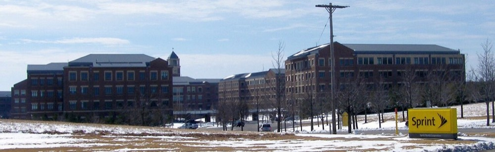
カンザス州オーバーランドパークのSprint本社（2009年撮影）Americasroof / CC BY-SA 3.0 / Wikimedia Commons
2013年3月55歳東京
ガンホーの連結化
Sprintの買収を前に、ソフトバンクは「パズル＆ドラゴンズ」で業績を急伸させたガンホー・オンライン・エンターテイメントを連結子会社にすると発表した。ソフトバンクBBが33.63%を持ち、弟の孫泰蔵が支配する資産管理会社ハーティスの議決権を4月1日から孫正義が行使することで、議決権の比率は52.13%になった212。
2014年3月期の連結営業利益が初めて1兆円を超えた背景には、ガンホーとウィルコムの連結に伴う一時的な利益があった213。
2013年6月11日55歳米国
DISHの横やりと、削られた新規資本
衛星放送のDISH Networkが対抗の買収案を出し、ソフトバンクは条件を修正した。総額は201億ドルから216億ドルに15億ドル増え、持分は約78%に上がった214207。
増えたのはSprintの株主への支払いで、約121億ドルから約166億ドルになった。一方でSprintに入る新規資本は80億ドルから50億ドルに減った。競争相手を退けるため、買収の目的だった設備投資の資金を削った形になる。買収は2013年7月に完了した214215。
Sprint買収の内訳：2012年10月の当初案と2013年6月の修正案
単位：億ドル。総額は201億ドルから216億ドルへ増えた
当初案：Sprint株主への現金約121億ドル
当初案：Sprintへの新規資本80億ドル
修正案：Sprint株主への現金約166億ドル
修正案：Sprintへの新規資本50億ドル
DISH Networkの対抗提案を受けた修正で、株主への支払いは45億ドル増え、設備投資の原資になる新規資本は30億ドル減った。ソフトバンクの持分は約70%から約78%に上がった。サマは総額を215億ドル、内訳を株主へ165億ドルとSprintへ50億ドルと書いている。
2112142162013年7月55歳東京
190億ドルの借入とSprintの既存負債
買収資金の調達はみずほ銀行が主導し、借入は190億ドルにのぼった。サマによれば、Sprintにはこのほかに300億ドルを超える既存の負債があった。ソフトバンクの有利子負債は2013年3月期末の3兆7,079億円から、Sprintを連結した2014年3月期末には9兆1,701億円に増えた19217213。
有利子負債の推移（2011年3月期末〜2015年3月期末）
単位：億円
2011年3月期末2兆758億円
2012年3月期末1兆5,681億円
2013年3月期末3兆7,079億円
2014年3月期末（Sprint買収後）9兆1,701億円
2015年3月期末11兆6,072億円
ボーダフォン買収の負債を減らした直後に、Sprint買収で負債が約6倍になった。サマによれば、買収のための借入190億ドルに加え、Sprintには300億ドル超の既存負債があった。
2132172013年55〜56歳フィンランド ヘルシンキ
「クラッシュ・オブ・クラン」のSupercellに15億ドル
ソフトバンクは2013年、スマートフォン向けゲーム「クラッシュ・オブ・クラン」を作ったフィンランドのSupercellの株式の約50%を15億ドルで取得した。サマによれば、世界のゲーム市場は2010年の780億ドルから2020年には1,370億ドルに伸びた218。
Supercellはその後の追加取得を経て、2016年にテンセントの連合に企業価値102億ドルで売却される。売却の交渉はニケシュ・アローラとサマが担った218219。
Supercellへの出資と売却（2013〜2016年）
単位：億ドル
2016年の売却時の企業価値102億ドル
2016年の売却手取り73億ドル
2013年と2015年の取得額の合計約25億ドル
2013年の約50%の取得15億ドル
2015年の追加取得と2016年の売却はニケシュ・アローラの時代の取引である。
2182192013年55〜56歳
携帯端末卸のブライトスターを1,200億円で買う
ソフトバンクは、ボリビア出身のマルセロ・クラウレが1997年に創業した携帯端末卸のブライトスターを1,200億円で買収した。ブライトスターは125カ国に事業を広げていた。クラウレは身長2メートルを超え、孫は「山賊みたいな見た目だ」と笑う。この縁が翌年のSprintのCEO人事につながる220。
笠井和彦の死
2013年10月21日56歳東京都港区 汐留 本社 → 東京都中央区晴海の病院
経営会議を打ち切って病院へ
T-Mobileの買収が難航し、月曜朝の経営会議で孫は机を打っていた。後藤芳光の携帯電話に笠井和彦の長男から訃報が入り、耳打ちされた孫は言葉を失って「会議は終わり」と告げた181。
孫は後藤と宮内を連れて病院に直行し、笠井の顔を見てその場で号泣した。笠井は76歳で、肺カルチノイドを患った後も車いすで出社していた。笠井は「ワシが居るだけで仕事になることもあるじゃろう」と言っていた181。
2013年11月56歳東京都港区 ホテルオークラ
お別れの会の弔辞で明かした上場廃止の計画
2,500人が参列したお別れの会で、孫は弔辞を読んだ。大半の提案に「行きましょう」と言った笠井が、一度だけ猛反対したことがあると語った。上場をやめて個人で会社を背負おうという相談で、笠井は資金調達は可能だが夢を小さくしていいのかと言って止めた。参列者の多くは初めて聞く話だった181。
孫は笠井を最大の名捕手だったと呼んだ。笠井の墓石には「ありがとう」とだけ大きく刻まれている。後藤は年に数回墓を訪ね、ホークスの戦果や大きな買収の前には必ず報告する181196。
笠井さん、さみしいです。本当にさみしいです孫正義、2013年11月、笠井和彦のお別れの会の弔辞
T-Mobile断念とアリババ上場
Sprintの次の狙いは、T-Mobile USとの統合だった。2社を合わせて、VerizonとAT&Tに対抗する第3の勢力を作る計画である。
米国の通信再編の金額：Sprint買収とAT&TのT-Mobile買収案
単位：億ドル
AT&TのT-Mobile買収案（2011年、当局が阻止）390億ドル
Sprint買収の修正後の総額（2013年）216億ドル
Sprint買収の当初の総額（2012年）201億ドル
AT&TがT-Mobile側に払った違約金約40億ドル
違約金は現金30億ドルと約10億ドル相当の周波数である。サマによれば、業界の利益の70%超をVerizonとAT&Tの2社が得ていた。
2162112142014年3月11日56歳米ワシントンD.C. 米国商工会議所
「アイ・ラブ・アメリカ！」
米連邦通信委員会がSprintとT-Mobileの統合に否定的な姿勢を示したため、孫は約300人の報道陣を前に直接訴えた。米国の携帯の通信速度は遅いのに、料金は日本の1.7倍だと指摘し、日本で価格を下げた経緯を示した。AT&TとVerizonの2社が支配する市場に競争を持ち込むと主張した75。
サマによれば、当時ソフトバンクモバイルは東京都心で毎秒50メガビットを出していたが、マンハッタンでは10〜15メガビットだった。約1時間の演説を、孫は米国を正義を正義として語れる国だと述べて結んだ21675。
アイ・ラブ・アメリカ！孫正義、2014年3月11日、米国商工会議所
東京とマンハッタンの携帯通信速度（2014年、サマの記述）
単位：Mbps
ソフトバンクモバイル（東京都心）50Mbps
マンハッタン10〜15Mbps
孫は2014年3月のワシントンでの講演で、米国の携帯料金は日本の1.7倍だと述べた。
216752014年6月56歳米ワシントンD.C.／東京
コリン・パウエルの問い「それは米国民にとって良いことなのか」
鳥栖の無番地で育った孫は、ニューヨークのサウス・ブロンクスで育った元国務長官コリン・パウエルに共感し、自伝も読んでいた。パウエルの息子マイケルは連邦通信委員会の元委員長である。2時間語り合った席で孫がリーダーシップについて日本で話してほしいと頼むと、パウエルは即答し、2014年6月に来日した220。
再会の場で孫がコロンブス計画を語ると、パウエルはそれが米国民のためになるのかを問い、応援すると言った。だが連邦通信委員会は統合を認めなかった220。
2014年8月57歳米カンザス州 ミッションヒルズの孫の新居
統合の断念とミルケンの電話
民主党政権の連邦通信委員会と司法省が反対し、ソフトバンクは2014年8月にT-Mobileとの統合計画の中止を発表した。孫はSprint本社に近いミッションヒルズに家を構えていた138213。
孫とアローラとサマは、その家のダイニングでスピーカーフォン越しにマイケル・ミルケンの助言を聞いた。ミルケンはSprint債の交換を提案したが、サマは応急処置で済む段階を過ぎていたと書いている138。
2014年8月57歳米カンザス州オーバーランドパーク Sprint本社
「山賊みたいな」クラウレをCEOに
Sprintはネットワークが弱く、iPhoneの取り扱いでも出遅れ、シェアは2割近くから下がり続けて赤字が続いていた。孫はヘッセら旧経営陣を交代させ、ブライトスター創業者のクラウレをCEOに起用した220。
クラウレはグアテマラとモロッコとドミニカで育ち、ボリビアのラパスで成人した。ボリビア・サッカー協会での仕事を経てブライトスターを創業した人物である。孫はクラウレを「ストリートファイター」と呼んだ220138。
2014年8月57歳東京都港区 汐留 ソフトバンク本社26階
月曜朝の朝食会が「お別れ会」になる
月曜朝8時の朝食会で、いつもの端の席に座ろうとした宮川潤一に、孫は「今日はお前が真ん中に座れ」と言った。孫は「今日はお別れ会でもあります」と切り出し、Sprintは自分の失敗だと述べた。そして宮川と財務の藤原和彦、営業の榛葉淳の3人を米国に送ると告げた220。
宮川は解任かとうろたえ、英語ができないと抵抗した。期間は1カ月余りとされ、出発は2日後だった。孫は「準備なんか一日あれば十分だろ」と言った。宮川のSprintでの2年余りは次の章の時代に続く220。
2014年9月19日57歳米ニューヨーク ニューヨーク証券取引所
アリババ上場、2,000万ドルが約700億ドルに
アリババがニューヨーク証券取引所に上場し、公開価格は1株68ドルだった。1999年10月、孫は北京でジャック・マーに会い、5分で出資を決めて4,000万ドルを提示した。マーはそんなには要らないと断り、最終的な出資額は2,000万ドルになった21318109。
サマによれば、上場後のソフトバンクの持分の価値は約700億ドルだった。ソフトバンクは上場で1株も売っておらず、新株の発行で持分比率が下がったことによる持分変動利益5,997億円を計上した。サマが加わった直後の昼食で孫は、アリババは絶対に売らないと述べている96213。
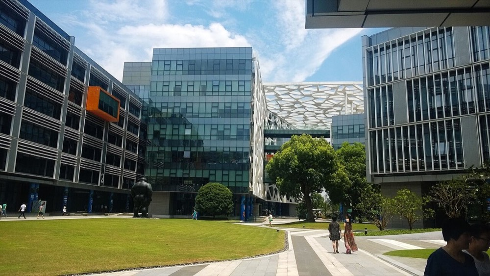
杭州・浜江のアリババ本社（2014年撮影）Danielinblue, designed by HASSELL (architects)[1] / CC BY-SA 4.0 / Wikimedia Commons
会って5分で出資を決めた孫正義、アリババへの出資を回想して
アリババへの出資額と上場時の持分価値
単位：ドル。対数目盛
2000年の出資額2,000万ドル
孫が最初に提示した額（1999年）4,000万ドル
上場後の持分価値（2014年、サマ）約700億ドル
1,000万ドル1億ドル10億ドル100億ドル1,000億ドル
出資額の約3,500倍にあたる。杉本は約20億円の出資が10兆円超の含み益になったと書いている。
1810996アリババ上場で計上した利益と同期の業績（2015年3月期）
単位：億円
連結営業利益9,827億円
親会社の所有者に帰属する純利益6,684億円
アリババ上場に伴う持分変動利益5,997億円
株を1株も売らずに、アリババの新株発行で持分比率が下がったことによる利益である。
213連結営業利益の推移（2010年3月期〜2015年3月期）
単位：億円。2013年3月期からIFRS
2010年3月期4,659億円
2011年3月期6,292億円
2012年3月期6,753億円
2013年3月期7,994億円
2014年3月期（Sprint連結）1兆770億円
2015年3月期9,827億円
2014年3月期にはガンホーとウィルコムの連結に伴う一時的な利益が含まれる。
1502132014年11月57歳中国・杭州市 アリババ本社
「それって1日あたりの話かい？」
孫はヤフー副社長の川邊健太郎を連れて杭州のアリババを訪ねた。川邊はショッピングの無料化の成果として、売上高が数千億円の規模になったと誇らしげに伝えた108。
マーは「それって1日あたりの話かい？」と尋ね、続けて1週間か1カ月かと聞いた。川邊は目を伏せて「いや、1年です」と答えた。川邊はこの時、世界との差を痛感したと語っている108。
第10章後継者ニケシュの2年The Nikesh Arora Years, 2014–2016
Sprintの再建に行き詰まった孫は、Googleの営業部門トップだったニケシュ・アローラを後継者として迎える。2年の間に会社は通信会社から投資会社へ向きを変え、インドと中国の新興企業に資金を投じた。2016年6月、アリババ株とスーパーセル株から約200億ドルの現金が作られた同じ週に、ニケシュは退任する。
後継者の招聘
ニケシュは2010年、Yahoo!日本法人の検索エンジンをGoogleに切り替える交渉で孫の相手方だった。T-Mobileとの統合が規制当局の反対で止まった2014年、孫は交渉の相手方を自社に迎える。
2014年6月56歳米ロサンゼルス ビバリーヒルズのフォーシーズンズホテル
紙ナプキンに書いた移籍条件
2010年、孫はYahoo!日本法人の検索エンジンをGoogleに替えるため、半年ほど毎週Googleと交渉した。相手の責任者がニケシュ・アローラだった。孫は剣道を例に、本当に強い相手は竹刀を構えた時に分かると彼を評している。最初に日本食レストランで後継者として誘った時は断られた。ロサンゼルスで再会した際、孫はテーブルの紙ナプキンに移籍条件を書いて再び口説いたと杉本は書いている187104。
サマによれば、2人はビバリーヒルズのフォーシーズンズで合意した。ニケシュは代表取締役副社長として入社し、孫が60歳の誕生日を迎える3年後に後継CEOに就くと約束された。入社時の報酬は年俸を含め7,300万ドルと報じられた221。
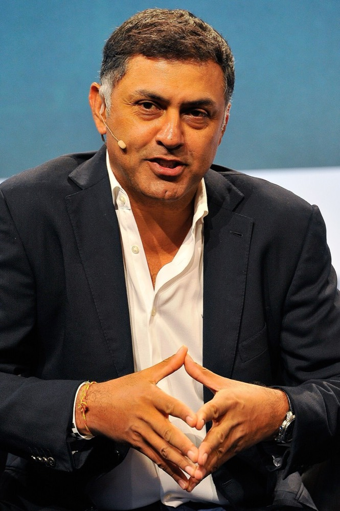
ソフトバンク副会長時代のニケシュ・アローラ（2015年9月）TechCrunch / CC BY 2.0 / Wikimedia Commons
1989年ニケシュ21歳頃英ヒースロー空港（乗り継ぎ）
かばん2つと100ドルで渡米した後継者
ニケシュは1968年にインドのウッタルプラデシュ州で生まれた。父はインド空軍の軍人である。インド工科大学を出ると、片道の航空券とかばん2つ、現金100ドルで米国へ向かった。乗り継ぎのヒースロー空港で10ドルのサンドイッチを買う時、紙幣を渡す手が震えたという。米国では大学寮の守衛をしながら学位を取り、投資会社とドイツテレコムを経て2004年にGoogleへ移った187。
サマはニケシュと2000年4月、ロンドン・メイフェアのレストラン「ノブ」で知り合った。2人ともデリーの中流家庭の出身で、1980年代半ばにニューヨークへ渡った経歴が一致した。Googleの採用面接は、ラリー・ペイジとセルゲイ・ブリンがニケシュを大英博物館に案内する形で行われたとサマは書いている222。
2014年7月56歳イタリア プーリア州のリゾート「ボルゴ・エニャツィア」
白い服の結婚式で1人離れて立つ孫
2014年7月4日の週末、ニケシュは南イタリアで結婚式を挙げた。前夜のパーティーは参加者全員が白い服を着る趣向で、白いラウンジスーツの小柄な男性が1人離れて立っていた。大物の招待客が次々に挨拶に来て、俳優のアシュトン・カッチャーは熱心なファンのように自己紹介した。招待されていたサマは、この時はじめてその人物が孫だと知った。アリババのニューヨーク上場はこの2か月後に控えていた221。
式に付随するゴルフで、孫はヘッジファンドのスタンリー・ドラッケンミラーとニケシュと同じ組で回った。長身の2人に対し、孫は両足を踏ん張ってクラブを大きく振り上げ、同等のヘッドスピードを出していた。パットを決めても声は上げず、右手の拳を小さく振るだけだったとサマは書いている221。
2014年7月56歳スペイン イビザ島 グランホテルのテラス
夜明けのイビザで「交渉を仕切る人間が必要だ」
結婚式の数日後、ニケシュ夫妻とサマ夫妻はイビザ島に移った。クラブで夜を明かした朝5時過ぎ、ホテルのテラスでニケシュはサマに、週60時間働いて年中出張する生活に戻れるかと尋ねた。翌日のプールサイドでニケシュは正式に誘い、サマは柔軟なコンサルティング契約を提案して受け入れられた。ソフトバンクはアリババ株を背景に、大手投資ファンドの旗艦ファンドを上回る500億ドル以上の投資余力を持っていた221223。
サマの長男サミルは当時、投資銀行レイン・グループでインターンをしていた。レインの最大の顧客はソフトバンクで、サミルは孫とニケシュの電話をよく傍らで聞いていると父に話した223。
ソフトバンクには父さんみたいな人が必要だと思うよサミル・サマ（サマの長男）、2014年7月
ニューヨークと汐留
入社前のニケシュは、ニューヨークで1日に何件もの出資と買収を検討した。同じ年の秋から、サマは毎月ロンドンから東京に通う生活に入る。
2014年8月57歳米ニューヨーク ペニンシュラホテル、マンダリンオリエンタル35階ほか
1日に5件の案件を検討したマンハッタン
ある1日にニケシュとサマが手がけた案件をサマは順に記している。午前は法律事務所クリアリー・ゴットリーブで、メキシコの通信会社アメリカ・モビルの一部事業を買う交渉に出た。続いてドリームワークス・アニメーションを34億ドルで買う条件を電話で詰めた。昼前にはペニンシュラホテルのスイートでレジェンダリー・ピクチャーズ創業者のトーマス・タルと会い、1時間足らずで2億5,000万ドルの出資とアジアでの合弁に合意した224225。
昼食はマンダリンオリエンタル35階で、インドの決済会社Paytmの創業者ビジェイ・シェカール・シャルマと会ったが、出資は見送った。菜食主義のシャルマが食べられたのはフライドポテトとコロッケだけだった。午後はレイン・グループのオフィスで、韓国ドラマを配信するドラマフィーバーの買収を決めた。夜はウエストビレッジの寿司店で、ニケシュが部下に「アロックはエアポートテストに合格か」と尋ねた。空港で足止めされても数時間一緒に過ごせる人物しか採らないという、セルゲイ・ブリンが考えた採用基準である225226。
ニケシュ時代に検討・実行した案件の規模（2014〜2015年）
単位：億ドル。ドリームワークスは交渉時の買収額で、買収は実現していない
ドリームワークス・アニメーション買収（交渉額）34億ドル
Coupang（韓国）への出資10億ドル
レジェンダリーへの出資（1時間で合意）2億5,000万ドル
インドの不動産サイトでの損失（約）約1億ドル
2014年56〜57歳東京都港区 汐留のソフトバンク本社26階 ダイニングルーム
掘りごたつの昼食と「アリババは絶対に売りません」
サマと孫の最初の昼食は午前11時に始まり、孫は時刻ちょうどに現れた。部屋はフロアの3分の1を占め、屋内に日本庭園と盆栽があった。室温は25度だったが、孫は栗色のカシミアのセーターに茶色のウールのブレザーを重ねていた。給仕役が開栓済みのリースリングと未開栓のラ・ターシュを示し、サマは1本5,000ドルを超えるラ・ターシュを辞退した226228。
孫は、1990年代後半にアマゾンへ評価額3億ドルで1億ドルを出す話が合意の直前まで進んでいたが、資金がなくて断念したと語った。2000年に資産の95%を失った時の気分を問われると、孫は両手を挙げて笑った。世界一の富豪の時は資金の運用先ばかり気にしていたが、市場がその悩みを解消したと答えた。サマがアリババ株の売却を考えているかと聞くと、孫の笑顔が消えた。中国の市場シェア80%超と年25%以上の成長を挙げ、売るべきだと言う者は愚か者だと断じたという10296。
アリババは絶対に売りません孫正義、2014年、汐留26階（サマの回想）
2014年10月57歳東京都港区 汐留のソフトバンク本社26階 会議室
最初の会議で座った席は「ロンの席」
サマは毎月、月曜朝にロンドンを発って火曜午前8時に羽田に着き、そのまま26階の会議室に入った。会議室は常にブラインドが下り、孫の正面には坂本龍馬の等身大の白黒写真が掛けられていた。最初の会議でサマは孫の隣に座ってしまい、孫は老眼鏡越しに眉を上げてその席を指さした。孫の両隣はニケシュと副会長ロン・フィッシャーの指定席だった229。
そこにはロンがすわります孫正義、2014年秋、汐留26階の会議室（サマの回想）
2015年6月57歳東京都港区 汐留のソフトバンク本社
宮内謙の降格と後藤芳光の「片思い」
ニケシュ入社後最初の株主総会に向けた人事で、ニケシュは代表取締役副社長に就いた。宮内謙は平取締役になり、後藤芳光と藤原和彦は取締役から外れた。元社長室長の嶋聡はこの人事を「公開処刑」と見た。ところが宮内の降格は本人の申し出だった。副社長が2人いても仕方がなく、国内事業に力の90%を使いたいという理由である230。
孫は「それでいいのかなぁ」とつぶやいたという。後藤は孫と宮内に、期待されていないならそう言ってほしいと詰め寄った。孫は慌てて、期待は何も変わっていないと答えたと杉本は書いている230。
でも片思いじゃ、しょうがないですから後藤芳光、2015年（杉本の取材による）
2015年57〜58歳東京都港区 汐留のソフトバンク本社26階
「ネバーエンディング・ストーリー」の会議が密室になる
それまでの孫の会議は金曜夕方に始まると終わりが見えず、社内で「ネバーエンディング・ストーリー」と呼ばれた。孫は現場を最もよく知る担当者を呼ばせ、10人の会議が30人に増えることもあった。ニケシュが来ると26階を訪れる人は減り、会議には孫とニケシュの側近だけが出るようになった230231。
ニケシュは、同じインド出身でもドイツ銀行から来たラジーブ・ミスラの提案をすべて退けた。関心のない案件の会議では、椅子を横に向けて足を組み、スマートフォンを操作していたと杉本は書いている。ボストンにあった米国投資拠点はシリコンバレーに統合され、20〜30人いた米国人幹部が次々に辞めた231。
インドと中国への出資
孫は2014年10月、インドに10年で100億ドルを投じると表明した。翌日からSnapdealとOlaへの出資が公表され、現地の起業家と評価額を詰める交渉が続く。
2014年10月28日57歳インド ニューデリー
Snapdealに6億2,700万ドル、Olaに2億1,000万ドル
ソフトバンクはネット通販のSnapdealに6億2,700万ドルを出資して筆頭株主になった。同じ日に、配車サービスOlaの2億1,000万ドルの調達も主導した。前日に孫はインドに10年で100億ドルを投じると表明していた。Snapdealの出資は一度破談しかけたが、正式入社前のニケシュが現地に飛んで創業者を説得したと杉本は書いている232233231234。
Snapdealのクナル・バールとロヒット・バンサル、Olaのバビッシュ・アガルワルは、いずれも30歳前後だった。サマによれば、ニケシュとサマが杭州のアリババ本社を訪れた時、バールとバンサルは3つ星のホリデイ・インの1部屋を2人で使っていた234235。
インドへの表明額と2014〜2015年の出資
単位：億ドル。表明額は10年間の総額。Olaはソフトバンクが主導した調達ラウンドの総額
10年間の投資表明（2014年10月）100億ドル
Snapdeal（2014年10月）6億2,700万ドル
Olaの調達ラウンド（2014年10月）2億1,000万ドル
OYO（2015年）1億ドル
2015年57〜58歳インド ニューデリー郊外 リテシュ・アガルワルの自宅
21歳のOYO創業者を自宅で口説く
格安ホテルを束ねるOYOの創業者リテシュ・アガルワルは当時21歳だった。ニケシュはニューデリー郊外のアガルワルの自宅を訪ね、出資を受けるよう説得した。ソフトバンクは2015年にOYOへ1億ドルを出している。ニケシュはこのほか、中国の配車サービスDiDiと米国の学生ローン会社SoFiに資金を投じた。シンガポールの配車サービスGrabも出資先に加わった231236。
パートナーは家族と同じだろうニケシュ・アローラ（杉本の取材による）
2015年57〜58歳東京都港区 コンラッド東京のロビー階のバー
深夜のバーで決めたOlaの評価額
夜遅く、サマはコンラッド東京のバーでOlaのアガルワルと評価額を詰めた。アガルワルは前回調達時の評価額と成果を挙げて6億ドルを主張した。サマは、より高く買う投資家が後に現れることを前提にした値付けだと指摘し、2億5,000万ドルを示した。アガルワルが他の投資家はもっと出すと言っていると返すと、2人は笑ってグラスを合わせ、中間の額で決着した。孫とニケシュが事前に示していた落としどころに近い額だったとサマは書いている234235。
直後に競合のタクシーフォーシュアがOlaに身売りした。この時期、インドではOlaとUberの値引き競争で、両社合わせて最大で月3,000万ドルの資金が流出していた234235。
Olaの評価額をめぐるバーでの交渉
単位：億ドル。決着額は「中間」とだけ書かれ、数値の記載はない
創業者アガルワルの主張6億ドル
サマの提示2億5,000万ドル
2023年の評価額（参考）35億ドル超
年の明記はなく、2014〜2015年頃とされる。
2342352015年8月58歳東京都稲城市 よみうりゴルフ倶楽部
「チーム・ソフトバンク」対「チーム・みずほ」
8月の朝、ソフトバンクの首脳とみずほフィナンシャルグループの首脳がゴルフで対戦した。ニケシュの計らいでサマは孫と組み、みずほの佐藤康博CEOとみずほ銀行の頭取と同じ組で回った。9ホールの後に中華料理の昼食があり、ここでもラ・ターシュが出された。スコアは孫が73、サマが79だった。みずほはSprint買収のための190億ドルの融資を主導した銀行である19237。
ラウンドの後の浴場で、佐藤はサマに米JPモルガンのCEOジェイミー・ダイモンを知っているかと尋ねたとサマは書いている。年の明記はなく、2015年頃とされる237。
2015年57〜58歳東京都港区 汐留26階 孫のダイニングルーム
ザッカーバーグとの夕食で語った2009年の後悔
午後6時、孫は26階にマーク・ザッカーバーグを迎えた。給仕役が小鉢の料理名を読み上げ、手を挙げた人の注文を秘書がiPad miniに記録した。孫は、2009年にFacebookへの出資でユーリ・ミルナーに先を越されたことを悔やんでいるとザッカーバーグに伝えた。当時の評価額100億ドルを高すぎると判断したと認め、ニケシュとサマに向けて指を振り、同じ失敗を繰り返すなと言った237238。
ザッカーバーグは、自分で殺した動物の肉だけを食べるという年間の課題について話した。レストランで鶏を自ら絞めたと聞くと、孫は長く声を上げて相手を指さしたとサマは書いている239。
われわれは二度と同じ失敗を繰り返してはならない孫正義、2015年頃、汐留26階（サマの回想）
2015年57〜58歳米テキサス州ヒューストン中心部、東京とカンザスを結ぶ電話会議
自ら「チーフ・ネットワーク・オフィサー」を名乗る
Sprintの売却も社内で検討された。仁木勝雅のM&Aチームは同業を含む複数社と交渉し、孫も出席したと証言している。孫はタダでも持っていく者がいればと言い、これに対し宮川潤一が見損なったと言い返した。今売れば一生米国に出られないと宮川が説くと、孫は「そうだなぁ」とつぶやいたと杉本は書いている149。
その後、孫は自らSprintのチーフ・ネットワーク・オフィサーを名乗り、深夜と早朝の電話会議に必ず出た。サマによれば、孫はヒューストン中心部の電波の届かない区域を自ら特定し、改善策を示した。2015年秋には、Sprint再建の出口が見えてきたと公言するようになった141204240。
2016年前半の告発と売却
2016年1月、ニケシュの調査を求める書簡が取締役会に届いた。同じ半年の間に、サマとニケシュは200億ドルを作る売却を進めている。
2016年1月58歳インド ニューデリー 科学センター「ビギャン・バワン」、ザ・リーラパレス・ホテル
スタートアップ・インディアでアダム・ニューマンが近づく
モディ首相が主催した「スタートアップ・インディア」で、孫とWeWork創業者アダム・ニューマンはともに基調講演に立った。身長195cmを超えるニューマンは白いクルタ姿で、WeWorkがインドの住宅問題を解決すると述べた。休憩時間にニューマンは孫に自己紹介した。その夜、ニューマンは通信会社の創業者スニル・ミッタルの夕食会に誘われた。住所も電話番号も知らなかったため、高級住宅街の屋敷を1軒ずつ運転手に訪ねさせた。午後11時直前に到着した時、孫はすでにホテルに戻っていた241242。
翌日の夜、リーラパレスのフレンチレストランでのレセプションで、孫とニューマンは別のバーコーナーに移って話し込んだ。孫に呼ばれたサマはWeWorkの分析を求められると考えたが、孫の注文はラ・ターシュだった。数週間後、ゴールドマン・サックスが評価額80億ドルでのWeWork出資を持ち込んだ。サマは、短期のオフィス賃貸収入と10年以上の長期賃借の負債が釣り合わない不動産業だと判断し、反対した242234235。
孫さん、あなたは僕のヒーローですアダム・ニューマン、2016年1月 デリー（サマの回想）
2016年1月26日58歳東京都港区 汐留26階 会議室
ボイス・シラーの書簡と「君についてのくだりもある」
サマが呼ばれていない会議に入ると、孫とニケシュとフィッシャーと外部顧問のケン・シーゲルが同じ書面を読んでいた。米法律事務所ボイス・シラー・アンド・フレクスナーが1月20日付で取締役会に送った書簡である。書簡は、ニケシュが投資会社シルバーレイクの顧問を兼ねる利益相反と、インドの不動産サイトへの投資実績や報酬を挙げた。そのうえで60日以内の調査を求めていた。シルバーレイクは2015年1月、アリババ株が20%下がる直前に保有株の45%を売っていた243227187。
孫は次の議題に移りたがったが、日米の独立した法律事務所2社が調べ、社外取締役の委員会に報告することで一致した。ニケシュはこの時期、自己資金で4億8,200万ドルのソフトバンク株を買っていた227244。
その夜、孫が好む天ぷら職人の新しい店で食事をした後、ニケシュとサマはコンラッド東京のバーに移った。ニケシュが先に引き上げると、黒いドレスの女性が今一緒にいたのはニケシュ・アローラかとサマに尋ねた。戻らないと聞くと、女性は急いで去った。3年後、ウォール・ストリート・ジャーナルはニケシュを狙ったハニートラップの失敗を報じている244245。
君についてのくだりもあるんだ、ミスター・サーマニケシュ・アローラ、2016年1月26日（サマの回想）
2016年4月21日58歳米カリフォルニア州サンカルロス ソフトバンク米国オフィス
告発者は保有株10万ドルのスイス人
ブルームバーグが、ソフトバンクの株主がナンバー2の内部調査を求めていると報じた。書簡の依頼人は46歳のスイス人ニコラス・ギアンナコプロスで、保有株は10万ドル強だった。ボイス・シラーのパートナー弁護士の時給は1,000ドルを超え、サマは弁護士費用が投資額を上回るとして、ギアンナコプロスは表向きの依頼人にすぎないと見た。ソフトバンクと孫はニケシュを支持する声明を出した245。
この数週間前、Uberのチーフ・ビジネス・オフィサーがサンカルロスのオフィスを訪れ、ニケシュの部屋のソファでUber陣営に加わるよう求めていた。ソフトバンクはOlaとDiDiとGrabに出資しており、応じなければ潰すと告げたという。2人は値引き競争の意味と受け取って笑ったが、サマは後に別の意図を疑っている245。
告発した株主の持ち分とニケシュの金額
対数目盛。告発者の保有株は本人の主張による
告発者ギアンナコプロスの保有株10万ドル強
妨害工作の依頼人が使った費用（下限）100万ドル以上
ニケシュの入社時報酬（報道）7,300万ドル
ニケシュが自己資金で買ったソフトバンク株4億8,200万ドル
10万ドル100万ドル1,000万ドル1億ドル10億ドル
2016年5月58歳米カリフォルニア州ナパ 州道29号線の車中
結婚30周年の車内で決まったスーパーセルの売却
ソフトバンクは2013年に『クラッシュ・オブ・クラン』のフィンランド企業スーパーセルの株式を約15億ドルで取得していた。ニケシュとサマは既存株主から株式を買い増して73%にし、過半を素早く売る計画を立てた。買い手の候補はテンセントとアリババに絞られた218247。
5月の土曜日の午後5時、サマは結婚30周年の夕食に向かうため、妻マヤとポルシェでナパの州道29号線を走っていた。車内のスピーカーには香港からテンセント社長マーティン・ラウの声が流れていた。マヤはiPhoneのメモに未解決の論点を書き出して更新し続け、ヨントビルに着く頃には売買契約の論点がすべて片付いていた。サマはそのメモを弁護士団に送った。レストラン「フレンチ・ランドリー」の料理は2人とも何も記憶していないという217218248。
2016年6月58歳フィンランド ヘルシンキ ホテル・カンプ
アリババ副会長との朝食をテンセント社長に見せる
サマは、競争相手がいるように見せることを取引の要点とした。ヘルシンキのホテル・カンプで、アリババ副会長ジョー・ツァイと朝食をとる姿をテンセントのラウに目撃させたと書いている。ラウは『クラッシュ・オブ・クラン』の世界ランキングで上位20人に入るプレーヤーで、スーパーセルの開発者から好かれていた。テンセントが僅差で勝った248。
6月21日、ソフトバンクは最大84%をテンセントの企業連合に売る契約を結んだ。企業価値は102億ドル、取引総額は86億ドル、ソフトバンクの手取りは73億ドルである。取得額約25億ドルに対し2.9倍で、内部収益率は93%だった219247。
スーパーセルの取得と売却（2013〜2016年）
単位：億ドル
2013年の取得（約50%、サマの記述）約15億ドル
取得額の合計（2013年＋2015年）約25億ドル
ソフトバンクの手取り（2016年6月）73億ドル
取引総額86億ドル
売却時の企業価値102億ドル
取得額に対する手取りは2.9倍、内部収益率は93%。会社開示の株式売却益は税引後5,265億53百万円。
2182192472016年6月1日58歳香港 パシフィックプレイス「ザ・アッパーハウス」最上階の個室
「売らずに現金化する」アリババ株100億ドル
サマは、ジョー・ツァイと香港のホテルの12人掛けの円卓を3人で囲んだ。予約はサマのファーストネームだけで取り、社名は出さなかった。ツァイはソフトバンクの売却を予想しており、株を友好的な買い手に渡す案を持っていた。北京では準政府系の買い手と会ったが価格が合わなかった。ツァイが代わりに設定したのが、北京のセントレジスの朝食でのDiDi創業者チェン・ウェイとの面会である。ソフトバンクは後にDiDiへ計110億ドルを投じた248249243。
6月1日、ソフトバンクは約100億ドル相当のアリババ株の現金化を発表した。中心は変動前払フォワード契約で、新設の信託が3年後にアリババ株か現金と交換される66億ドルの強制交換証券を発行し、ソフトバンクは前受金54億ドルを受け取った。残りはアリババ本体の自社株買い、アリババ・パートナーシップ、シンガポール政府投資公社などへの売却である。対象株を除く保有比率は約28%を維持した250243。
税務上は繰延税金負債3,826億円が取り崩され、2016年度の法人所得税は2,071億円の益になった。モルガン・スタンレー会長のジェームス・ゴーマンから祝いの連絡が届き、以後、孫はすべての議論にサマの出席を求めるようになったとサマは書いている251243。
アリババ株の現金化の内訳（2016年6月）
合計約100億ドル。強制交換証券は満期にアリババ株か現金と交換される
- 強制交換証券（変動前払フォワード） 66億ドル66%
- 株式売却（アリババ本体・パートナーシップ・政府系ファンド） 34億ドル34%
強制交換証券の利率は年5.75%（3年）、交換価格は発行時より17.5%高い水準。ソフトバンクが受け取った前受金は54億ドル。
250243アリババ株の出資額・保有価値・現金化額
対数目盛
2000年の出資2,000万ドル
2014年9月の上場時の持ち分約700億ドル
2016年の保有株の価値1,000億ドル近く
2016年6月の現金化約100億ドル
1,000万ドル1億ドル10億ドル100億ドル1,000億ドル1兆ドル
2016年6月58歳東京都
ガンホーの株式を自社株買いに応募する
同じ6月、ソフトバンクはパズル&ドラゴンズを運営するガンホー・オンライン・エンターテイメントの自社株公開買付けに応じた。1株294円で2億4,559万株を売り、売却額は約722億円になった252。
サマは200億ドルが必要だった理由を2つ挙げている。1つはSprint買収で背負った負債で、ソフトバンク債は米格付け会社から投資不適格とされていた。サマとニケシュは後藤CFOの支持を得て、借入を保有資産価値の25%以内に抑えるよう孫を説得した。もう1つは投資家の不信で、300年構想の話はいいから現金を見せろと言われていた217。
2016年6月に作られた現金
単位：億ドル。ガンホーは722億円を1ドル=105円で換算した
- アリババ株の現金化 約100億ドル56%
- スーパーセルの売却（手取り） 73億ドル41%
- ガンホー株の売却（換算） 約6.9億ドル4%
福岡と退任の朝
現金の手当てが進む一方で、孫は2年前に見送ったArmの買収を再び考え始めていた。ニケシュはその案に反対していた。
2016年58〜59歳福岡市 博多の旧市街
博多の散策中もiPadのArmの資料をめくる
孫とニケシュ、サマは日本航空機で福岡に入った。社用機が故障し、孫の機体は整備中だったためである。試合の3時間前に着き、孫が博多の旧市街を案内した。機内でも車中でも散策中も、孫はiPadで「アダム」と名付けた資料をめくり続けた。Armの買収案である。孫がApple Pencilを振って説明する間、ニケシュはため息をついて反対を示した。1年前、サマたちは買収額300億〜350億ドルを高すぎるとして孫を思いとどまらせていた253254。
本文はこの訪問を「初秋」のプレーオフの日とする一方、続けて「数週間後の2016年6月」と書いており、月は特定できない254。
2016年58〜59歳福岡市 ホークスの本拠地球場 オーナーズスイート
父・孫三憲が語った密航と焼酎
ダッグアウトに向かう選手が1人ずつ孫の前で止まり、深く頭を下げた。オーナーズスイートで孫は名前入りの黒いジャンパーを着て、ニケシュとサマは背中に名前の入った白いシャツを受け取った。孫は父・三憲に、通常より深く長く頭を下げた。サマは、この夜の3人の後ろ姿の写真を、3人の関係が円満だった最後の写真と書いている25412。
80歳の三憲は通訳を介して来歴を語った。少年期に家族と韓国の大邱から夜の船で渡り、沈みかけた船を日本の漁師に助けられた。焼酎を造って売り、搾りかすで豚を育て、パチンコ店と喫茶店へと商売を広げた。喫茶店では10歳の息子がコーヒーを無料にするよう勧め、客が増えたので、息子は天才だと確信したという。三憲はニケシュをポーカーの相手を見るような目で見ていたとサマは書いている1219。
2016年6月58歳米ハワイ島 ナネア・ゴルフクラブ
ティーグラウンドで肩を組んだ最後の週末
株主総会の前の週末、ニケシュとサマの家族はハワイ島コナに滞在した。KKR共同創業者ジョージ・ロバーツの自宅で夕食をとり、ヤフー共同創業者ジェリー・ヤンの自宅にも招かれた。ロバーツとヤンと回ったナネア・ゴルフクラブのティーグラウンドで、ニケシュはサマの肩に腕を回して笑った。その夜、2人は東京へ発った12123255。
6月、特別委員会は書簡の主張を「根拠なし」と判定した。調査は米国のシャーマン・アンド・スターリングと日本のアンダーソン・毛利が担当した12187。
2016年6月58歳東京都港区 汐留のソフトバンク本社 社長室
「いや、実はニケシュなんだけど……。辞めるよ」
株主総会の直前、人事担当の青野史寛は例年どおりの確認だと考え、iPadで議案を孫に見せた。5秒で済むと思っていた。孫は取締役選任の欄で黙り込み、ニケシュのところは変わるかもしれないと言った。青野が孫が社長を譲るのかと驚くと、孫は辞めるのはニケシュだと答えた。招集通知は発送済みで、インターネット投票も始まっていた256。
杉本によれば、孫はあと10年は自分が船長を続けたいとニケシュに伝えた。副長のまま10年待たせるのは申し訳ないとも述べた。ニケシュは10年は待てないと答えた。真相を知るのは孫と宮内謙、ロン・フィッシャーの3人だけだという256。
マサ、正直に言うけど、俺はやっぱり10年も待てないニケシュ・アローラ（杉本の取材による）
2016年6月21日58歳東京都港区 汐留26階 会議室、地下のスターバックス
ニケシュ退任の朝、孫は1人でダウンを着ていた
午前9時の議題は「財務戦略」だったが、財務チームはいなかった。室温25度の会議室で、孫はユニクロのオリーブ色のダウンを着て龍馬の写真を見ていた。孫はフィッシャーとサマに席を外させ、ニケシュと2人で話したいと言った。1時間後、ニケシュは笑って終わったとサマに告げ、地下のスターバックスで即日の退任を伝えた。ニケシュは、孫は当分CEOを退くつもりがなく、Armの案件をやりたがっていると説明した255。
退任は株主総会の前日に発表された。発表の時刻を杉本は午後8時、サマは午後3時と書いている。その1日前には、特別委員会の調査結果が「評価するに値しない」という一言で公表されていた。ニケシュはツイッターで潔白の証明を得たと投稿している256187257。
2016年6月21日58歳東京都港区 汐留26階 会議室
空いた席を指して「一緒に人類の未来を変えましょう」
ニケシュはサマに、残りたいなら残ればいい、孫は君を気に入っていると伝えた。机には孫が会いたがっていることを示す黄色い付箋があった。孫は右腕を伸ばしてニケシュの席を示し、サマは座った。以後の会議でサマがその席に座ることはなかったという。孫は告発が退任の原因かという問いを強く否定し、何日も眠れなかったと語った255258。
孫は公式には、60歳で引き継ぐつもりだったが、Sprintの再建などのためにあと5〜10年は社長を続ける必要があると説明した。退任の真相を知る1人とされる宮内は、告発とは関係がないと杉本に断言している258187。
ニケシュの誠実さは100パーセント信じています孫正義、2016年6月、汐留26階（サマの回想）
2016年6月58歳東京
2年で246億円、孫の報酬の126倍
ニケシュが2年で受け取った報酬は246億円だった。同じ期の孫の連結報酬総額は1億3,100万円で、ニケシュの単年の報酬は孫の126倍にあたる。杉本は退職金を含む契約総額を約300億円と書き、サマは退職費用を約88億円とする報道を引いている259213256255。
退任後のニケシュは、孫から将来の事業の種を探せと言われ、自分なりのやり方で務めを果たしたと杉本に語った。退任の直後、ジャック・マーは杭州に孫を迎え、年齢と勤続年数の合計が60を超えたら退任するアリババの幹部ルールを勧めたという260108。
ニケシュ・アローラの報酬と孫の報酬
単位：億円。単年はニケシュの報酬が孫の126倍という開示から算出した概数
孫の連結報酬総額（同期）1億3,100万円
ニケシュの単年報酬（算出）約165億円
ニケシュの2年間の報酬246億円
契約総額（退職金を含む、杉本）約300億円
退職費用（サマが引く報道）約88億円
僕はしばらく充電だ。また、いつかどこかで会おうニケシュ・アローラ、2016年（杉本の取材による）
第11章Armとビジョン・ファンドArm and the Vision Fund, 2016–2018
ニケシュの退任から4週間後、孫は英国の半導体設計会社Armを3.3兆円で買うと発表する。その2か月後にはサウジアラビアの副皇太子と45分会い、1,000億ドル規模のファンドの資金を確保した。2017年からの2年弱で、ファンドと本体はUberやDiDi、WeWorkやFlipkartなどに数百億ドルを投じた。
Armを2週間で買う
孫は2006年と2012年にArmの買収を検討し、2度とも見送っていた。2016年6月に現金の手当てが整うと、3度目の検討は数週間で提案にまで進んだ。
2015年57〜58歳英ロンドン、米カリフォルニア州
10年越しのArm、3度目の検討
孫が最初にArmの買収を検討させたのは2006年で、M&Aチームの仁木勝雅に資料を作らせた。ジョブズが作る携帯端末に電池のはみ出した形は選ばれないと考え、低消費電力のArmの技術が必要になると推論したという。当時のArmの時価総額は約2,000億円だった。2012年の2度目の検討ではSprint買収を優先した172173。
2015年春頃に3度目を幹部に打診すると、財務担当の後藤芳光がSprint再建が先だと反対し、孫は「そうか」としか言わなかった。同じ年の夏、孫は前CEOウォレン・イーストの紹介でサイモン・シガースとロンドンで昼食をとった。シガースは10年前に汐留で孫に会っていたが、孫は記憶していなかった。秋のArmの技術会議で全プロセッサーにセキュリティー技術を載せる方針が出ると、孫はArmがIoTに本気だと受け取ったと杉本は書いている240。
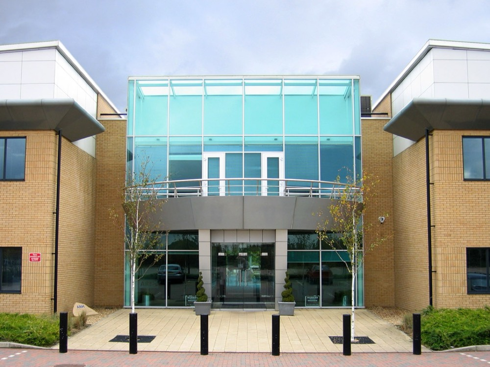
ケンブリッジのARM社屋（2005年撮影）Original uploader was Yesme@ at vi.wikipedia / CC BY-SA 2.0 / Wikimedia Commons
2016年6月58歳米カリフォルニア州アサートン 孫が借りていた石造りの邸宅
「サー・サスペンダーズ」と英国の買収規則
ブレグジット国民投票の5日後、孫はアサートンの借邸に助言会社の創業者サー・サイモン・ロビーを招いた。ロビーは鼻の欠けた石仏の前の椅子に座り、黒いシルクのサスペンダー姿で英国の買収規則を説明した。要点は4つあった。時価総額に大きなプレミアムを上乗せすることと資金を確保することである。さらに秘密を保って速く動き、Armの会長に正式に申し入れることを求めた。ポンド安で取引は割安になっていた261262。
サマがナイトの称号を龍馬に例えようとすると、孫は不快そうに否定した。孫はロビーを「サー・サスペンダーズ」と呼んだ。Armの時価総額は220億ドルだった261262。
龍馬は庶民の出で、民の味方でした孫正義、2016年6月 アサートン（サマの回想）
2016年6月58歳米カリフォルニア州アサートン 同じ邸宅のパティオ
Arm CEOへの2つの質問
同じ夜、孫はArm CEOのシガースと戦略責任者を夕食に招いた。給仕役がラ・ターシュと薄い生地のトリュフピザを出した。2人は呼ばれた理由を知らされていなかった。孫の1つ目の質問は32ビットのマイコンの市場シェアで、80%以上という答えに孫はサマを見て笑った。2つ目は、四半期決算の圧力がなければ何を変えるかだった。シガースは投資を増やして短期の減益を受け入れたいが、取締役会が許さないと答えた262。
杉本はこの会食を3時間のワインディナーと書き、シガースの「でも、我々は上場企業だ」という言葉を記している。孫はここで買収が成立すると判断した。孫自身もリーマン・ショックの直後に、自社株を買い集めて上場をやめることを考えた経験があった240263。
2016年6月58歳米シリコンバレー レストランからの帰りの車中
みずほの社長に車中で1兆円を頼む
買収資金3兆円超のうち2兆円は投資先株式の売却で、1兆円は銀行借入で賄う計画だった。孫とみずほフィナンシャルグループの佐藤康博社長は、ソフトバンクが出資するフィンテック企業の視察で同じ時期にシリコンバレーにいた。孫は後藤との打ち合わせどおり、帰りの車で隣に座った佐藤にArm買収を切り出した。佐藤はその場で全面的な協力を約束したと杉本は書いている263。
Arm買収資金の当初計画（2016年）
単位：兆円。計画は計3兆円超、実際の買収額は約3.3兆円
- 投資先株式の売却 2兆円67%
- みずほ銀行からの借入 1兆円33%
売却にはアリババ株、スーパーセル、ガンホーが含まれる（第10章）。借入は孫がシリコンバレーからの帰りの車中で佐藤社長に打診した。
263分かりました。全面的に協力しますよ佐藤康博（みずほフィナンシャルグループ社長）、2016年（杉本の取材による）
2016年7月3日58歳トルコ マルマリス エレガンスホテル、ネッツェル・マリーナ
3機の社用機をトルコに集める
Arm会長のスチュアート・チェンバースは地中海でヨットの休暇中で、会えるのは2週間後と言われた。孫は納得せず、ヨットにヘリコプターが着陸できるかを尋ねた。チェンバースはマルマリスの陸上での昼食に応じた。孫は東京からG650で、シガースはサンノゼから社用機で発つ。サマはロンドン近郊のルートン空港からチャーター機で発ち、3機が午前8時にダラマン空港へ集まる計画だった262。
サマが起草した孫名義の書簡は全額現金で、独占禁止法や規制当局の承認を前提条件にしなかった。中国が反対すれば中国事業を閉鎖するか売る覚悟を伴っており、中国はArmの収益の約2割を占めていた。会談の日付はサマの本文に7月3日と7月4日の両方の記述があり、杉本は7月4日とする262173。
2016年7月3日58歳トルコ マルマリス 宝飾店とパイナップル・レストラン
宝飾店で買ったダイヤと「出資ではなく100%です」
マリーナを散歩中、孫は宝飾店に入り、サマの妻マヤへの贈り物を選ばせた。サマが遠慮すると孫が自分で選び、ホワイトゴールドのダイヤのペンダントとブレスレットを買った。側近がレストランを貸し切り、孫の指示でラ・ターシュを2本用意した。1本はチェンバースへの贈り物で、1本は昼食用である。サマが15分説明して署名済みの提案書2通を渡したが、Arm側はワインを辞退した31。
杉本によれば、チェンバースは半ズボン姿で現れた。名物のイカの姿焼きが出た席で、孫は出資ではなく100%買いたいと告げ、2人は大いに驚いた。孫は、取引関係がないからこそArmの中立性が保てると説明し、ケンブリッジの技術者を5年以内に2倍にすると約束した173264。
出資ではなく100%です孫正義、2016年7月 マルマリス（杉本の取材による）
2016年7月3日58歳トルコ マルマリス 近くの浜辺
買収対象のCEOを浜辺の散歩に連れ出す
午後2時、チェンバースは再び来て、Armは売り物ではないが会長として提案を検討する責任があると述べた。孫はシガースを浜辺の散歩に誘った。買収対象のCEOと直接やり取りすることは規則に反し、チェンバースは眉をひそめた。孫が技術の話しかしないと請け合ったため、断る理由がなくなった。1時間後、孫はシガースと今後の方向性について一致したとサマに伝えた31265。
サマはルートン空港に戻り、夜8時に帰宅して妻にダイヤの袋を渡した。杉本によれば、会談後に孫はサマとヨットハーバーで記念写真を撮った。その後トルコではクーデター未遂が起き、休暇でマルマリスに滞在していたエルドアン大統領が狙われた265264。
技術的な話しかしませんよ孫正義、2016年7月3日 マルマリス（サマの回想）
2016年7月12日58歳英ロンドン メイフェア ストラットン・ストリートのラザード、レインズボロウ・ホテル
席を立った夜の「1700ペンス」
7月7日、チェンバースは書面で提案を拒否した。ソフトバンクは4日後、1株1,500ペンスの提案を1,660ペンスに引き上げた。12日午後8時、Arm側の助言会社ラザードの事務所で4人が会った。サマが1,660ペンスを最善かつ最終の提案として説明すると、チェンバースは不十分と答えた。孫は礼を述べて席を立ち、サマも後に続いた265266。
孫のスイートで一同はペパロニピザとビールで過ごしたが、孫は黙って座っていた。ロイヤル・オペラ・ハウスで自分を称える夕食会に出ていたロビーが、タキシード姿で戻った。直後に孫の電話が鳴り、孫はレインズボロウ・ホテルでチェンバースと会った。30分後に戻った孫は笑い出し、「1700ペンス」と告げたとサマは書いている266。
Armの1株あたり価格と提案額（2016年7月）
単位：ペンス。前日終値と史上最高値は、プレミアム43.0%と41.1%から逆算した概数
発表前日の終値（逆算）約1,189ペンス
2015年3月の史上最高値（逆算）約1,205ペンス
当初の提案（7月3日）1,500ペンス
修正提案（7月11日）1,660ペンス
合意（7月12日夜）1,700ペンス
修正提案は10.7%の引き上げで、サマはこの時点のプレミアムを42%と書いている。
8265266あなたは僕の幸運を呼ぶお守りですよ孫正義、2016年7月12日 ロビーへの言葉（サマの回想）
2016年7月18日58歳英ケンブリッジ Arm本社
「これで2回目だね」と言われたArmの日本人社員
7月18日、ソフトバンクはArmを1株1,700ペンスで買うと発表した。総額240億ポンド、約3.3兆円で、日本企業による買収として過去最大だった。直前の終値に対するプレミアムは43.0%で、2015年3月の史上最高値も41.1%上回った。助言したゴールドマン・サックスとラザードの報酬は合わせて5,000万ドルを超えた8264265。
その朝、ケンブリッジに2人しかいないArmの日本人社員の1人、千本絵理は夫から買収のニュースを聞いた。千本は10年前、ボーダフォン日本法人でもソフトバンクによる買収を経験しており、夫は2回目だねと笑った。出社すると、同僚からソフトバンクはどんな銀行なのかと質問された。午後、孫はArm本社で社員に話し、事業モデルも経営体制も変えないと約束した267。
Armの価値と過去の大型買収
対数目盛。単位は円
2006年頃のArmの時価総額約2,000億円
ボーダフォン日本法人の買収（2006年）約2兆円
Armの買収（2016年）約3.3兆円
Armの保有価値（2026年6月末）49.91兆円
1,000億円1兆円10兆円100兆円
2016年7月18日58歳英ロンドン 記者会見場
「囲碁で言えば50手先」
記者会見でArmの使い方を問われた孫は、ボクサーは試合前に最初のジャブを予告しないと答えた。既存事業との相乗効果はないと明言し、囲碁で言えば50手先に打った一手だと述べた。今後20年でArmのチップが1兆個使われるとも予言している。発表後、ソフトバンクの時価総額は約100億ドル減った。サマはこれを、Armに上乗せしたプレミアムに近い額と書いている26926270。
まあ、そのうち分かりますよ孫正義、2016年7月 Arm買収の記者会見（杉本の取材による）
2016年8月59歳英ロンドン ナイツブリッジのブルガリホテル
宿泊先のコードネームは「クロベ」
合意の数週間後、孫はテリーザ・メイ首相と会う予定だった。宿泊の手配を担う会社の担当者はサマに電話し、孫を本名ではなく「クロベ」と呼ぶよう求めた。ベルグレービアのタウンハウスは、孫が飼い犬には階段が急すぎると言って取りやめになった。クラリッジズは前回日本人観光客に写真を撮られたため避けた。サマの秘書がハイドパークの向かいのブルガリホテルを確保した271。
英国政府には内閣官房長官に事前の説明が済んでいた。ソフトバンクは英国内の雇用を5年で倍増すると約束した。買収はブレグジット後の英国への信任として受け入れられた271。
2016年9月59歳英ケンブリッジ Arm本社
IQのスライドの肖像を差し替える
9月5日、Arm買収は最初の接触から約2か月で完了した。デューデリジェンスで懸念は見つからず、対抗する入札もなかった271272。
孫は社員向けの説明会で、IQの分布を描いた定番のスライドを使った。右端にアインシュタインとダ・ビンチの肖像があり、その先に「シンギュラリティ」の赤い矢印が伸びている。サマは側近のタナカと組み、2人の肖像を自分たちの自撮り写真に差し替えた。会場には戸惑う顔があった。後でこの話を聞いた孫は、人差し指を振って長く笑い続けたという271270。
サウジとUAEの資金
Armの買収コードネーム「プロジェクト・アダム」は、やがて「プロジェクト・クリスタルボール（水晶玉）」と呼ばれるようになる。Armの収益の流れから伸びる技術が分かるという考えが、1,000億ドルのファンドにつながった。
2016年8月59歳ケニア マサイマラ「コターズ1920sキャンプ」
サファリの最中に届いた「水晶玉」の資料
サマが家族とサファリにいると、件名「プロジェクト・クリスタルボール」のメールが届いた。翌日に孫が投資家に説明する資料で、1兆個の機器がつながる時代を成長の源とし、Armを予言の水晶玉と位置づけていた。ソフトバンクの過去18年の年率リターンは44%で、バークシャー・ハサウェイの20%とブラックストーンの15%を上回るとしていた。サマは数字は正確だが、借入と円安が比較をゆがめていると指摘する270273。
ファンドは、投資ごとに購入額の半分超をソフトバンクと投資家の出資で賄い、残りを投資家の優先出資で賄う設計だった。優先出資には返済期日がなく、年7%の現金が支払われる。サマは電話で借入が大きすぎると指摘したが、孫は丁寧に聞いたうえで退けた273274。
やらせてくれ孫正義、2016年8月 ケニアのサマとの電話で（サマの回想）
2016年8月59歳カタールへ向かう社用機の機内
機内で200億ドルが1,000億ドルになる
ファンドを設計した戦略金融部門トップのラジーブ・ミスラは、ドイツ銀行時代の元同僚3人の会社FABパートナーズに移ることを考えていた。3人のうちミケーレ・ファイソーラはカタールに、ニザール・アル＝バッサムはサウジアラビアに人脈を持っていた。ファイソーラの手配で孫は8月末にカタール側と会った274。
FABの3人によれば、孫は当初200億ドルのファンドを考えていたが、機内で1,000億ドルに決めて資料を差し替えた。数週間後にサンノゼのArmの事務所で湾岸の投資家と協議したが、出資は決まらなかったとサマは書いている274。
2016年9月3日59歳東京都港区元赤坂 迎賓館
副皇太子に「東京土産に1兆ドル」
サウジアラビアのムハンマド・ビン・サルマン副皇太子は当時31歳だった。サウジの輸出の84%は石油関連で、財政赤字はGDPの13.5%に達していた。4月に「ビジョン2030」を発表してシリコンバレーを回ったが、著名な投資家は協力に応じなかった275。
孫はこの日、安倍首相に同行してウラジオストクに行く予定を取りやめた。迎賓館での持ち時間は10分で、やや眠そうな副皇太子に東京土産として1兆ドルを贈りたいと切り出した。1999年以降17年間の内部収益率44%を示し、21世紀の水晶玉はArmの1兆個のチップから集まるデータだと説明した。会談は45分に延び、孫は450億ドルの出資を取り付けた。ファンドの名称は「ビジョン2030」にちなむ276277275。
私からの東京土産として1兆ドルほどプレゼントしたい孫正義、2016年9月3日 迎賓館（杉本の取材による）
2016年9月3日59歳東京からロンドンへの電話
用件のない電話
孫は用件なしに電話をかける人物ではなかったが、この夜は眠れずにロンドンのサマに電話した。副皇太子の若さと熱量、13機の飛行機と500人の随行団について話した。副皇太子は孫の説明を聞いて、あなたは今までどこにいたのかと言ったという。サウジ王室について孫はほとんど知らなかったが、日本の皇室が副皇太子を招いた事実で十分と考えたとサマは書いている275278。
10日後、ベンチマーク・キャピタルのビル・ガーリーはポッドキャストでバブルを警告した。ベンチマークの最新ファンドは5億5,000万ドルだった。同じ時期に孫はサウジとUAEの政府系ファンドに600億ドルを求めていた278。
2016年10月59歳東京都港区 ソフトバンク役員会議室、銀座のバー
金の卵を産むガチョウと「AI革命」
サウジ公共投資基金（PIF）総裁のヤシル・アル＝ルマヤンが東京を訪れた。PIFは2016年6月にUberへ35億ドルを投じ、アル＝ルマヤンは同社の取締役になっていた。孫はガチョウと金の卵のスライドを見せた。題は「ソフトバンク＝金の卵の生産者」で、ガチョウには「AI革命」の札が付いていた278279。
夜、ミスラとサマはアル＝ルマヤンを銀座のバーに案内し、彼はスマートシティ「ネオム」の予定地の写真を見せた。サマがPIFを受け身の投資家とほのめかしたことにアル＝ルマヤンは不快を示し、翌日、孫は彼をゴルフに招いた。PIFは30億ドル超の投資案件への拒否権などを得て参加し、アル＝ルマヤンは後にソフトバンクの取締役に就いた279。
2016年10月13日59歳サウジアラビア リヤド → 東京
砂漠を走って空港へ、ティム・クックとの会食をずらす
リヤドでの覚書では、5年でソフトバンクが250億ドル、サウジが450億ドルを出すと決めた。孫は署名を終えると車で砂漠を走って空港に向かい、社用機で東京に戻った。初来日中のアップルCEOティム・クックは、京都の任天堂本社や表参道の直営店を回る分刻みの日程だった。孫は直前に会食の時間の変更を頼み、悪びれずに「やあティム」と迎えたと杉本は書いている277。
45分で450億ドル、1分で10億ドルか。まあ悪くないな孫正義（杉本の取材による）
2016年11月8日59歳米サンフランシスコ ワインレストラン「RN74」
半分になったUAEの出資とトランプ当選の夜
UAEのムハンマド・ビン・ザーイド皇太子は副皇太子に続いて出資を約束したが、政府系ファンドのムバダラはその額を半分の150億ドルに減らした。さらにソフトバンクがムバダラの新しいベンチャーファンドに出資する逆方向の合意も取り付けた。ムバダラ・ベンチャーズ代表イブラヒム・アジャミとの夕食は、デューデリジェンスの開始を告げる席だった279。
食事中に米大統領選の結果が判明した。サマは、共和党政権になればSprintとT-Mobileの統合を再び検討できると考えた279。
5日間でリヤド、デリー、ニューヨーク
2016年12月、孫は5日間でサウジ副皇太子とインド首相と米次期大統領の3人に会った。米国ではWeWorkへの出資もこの日程の中で決まる。
2016年12月3日59歳インド ニューデリー ロック・カリヤン・マーグの首相公邸
モディ首相に太陽光20ギガワットを約束
12月1日にリヤドで副皇太子と会った孫は、3日午後5時にサマとモディ首相の公邸を訪ねた。モディは孫の手を両手で握って迎えた。孫は太陽光発電20ギガワットと電気自動車100万台を約束した。当時のインドの太陽光設備は3.7ギガワット、電気自動車の生産は2万2,000台で、500万人の雇用が見込まれるとした。モディは戦略目標に合うと認めた以外、ほとんど話さなかったとサマは書いている279115。
同じ週に孫は新聞社主催の講演会で話した。2000年に世界一の富豪になって資金の運用先に悩んだが、市場の崩壊で悩みが消えたという内容である。1,000人を超える聴衆が笑い、最前列には映画俳優アミターブ・バッチャンがいた115。
モディ首相への約束とインドの太陽光設備（2016年12月）
単位：ギガワット
当時のインドの太陽光設備3.7ギガワット
孫が約束した太陽光発電20ギガワット
同じ会談で電気自動車100万台も約束した。当時のインドの電気自動車の生産は2万2,000台だった。
279115全部なくなりました、もうストレスもなし！孫正義、2016年12月 ニューデリーの講演（サマの回想）
2016年11月59歳米ニューヨーク チェルシー WeWork本社
「リンクトインの方ですよね？」
ニューマンはソフトバンク取締役マーク・シュワルツを通じて孫に再び接触していた。WeWorkはこの年、シリーズFで6億9,000万ドルを評価額162億ドルで調達していた。フィッシャーとサマが本社を訪ねると、ニューマンはデリーで会ったサマを、ソフトバンクにいた別のインド人であるリンクトイン元CTOと取り違えた280281。
ウォール街の集合住宅「ウィーリブ」では、入居者への売りが社交の機会だと説明された。サマが、なぜテック企業として評価されるのかと尋ねても、ニューマンは答えなかったという281。
2016年12月6日59歳米ニューヨーク 5番街のトランプタワー
500億ドルと5万人、孫が記憶していたのはイバンカ
孫はトランプ次期大統領と約1時間会い、米国に500億ドルを投じて5万人の雇用を生むと表明した。孫は共和党の色である赤いネクタイと赤いベストで臨んだ。公式に「共通の知人」とされた仲介者はカジノ経営者シェルドン・アデルソンだった。1995年に孫がコムデックスを8億ドルで買った時の交渉相手である。杉本は、アデルソンの側から会談を呼びかけ、手土産の数字は急ごしらえで用意されたと書いている8775。
トランプは選挙に勝たなければマサはこうしなかったとツイートしたが、ファンドの設立は10月に発表済みだった。同行したのはフィッシャーだった。会談の後、孫はトランプの発言を何も記憶しておらず、同席者を問われるとイバンカだと答えたとサマは書いている115282。
マサは素晴らしい男だドナルド・トランプ、2016年12月6日 トランプタワーのロビーで（杉本の取材による）
2016年12月6日59歳米ニューヨーク WeWork本社からトランプタワーへ向かう車内
訪問は12分、車内のiPadで44億ドル
孫の訪問に合わせ、WeWorkの社員はキッチンでワッフルを焼いて香りを漂わせるよう指示されていた。訪問は12分で終わり、孫はニューマンを自分の車に乗せた。サマによれば、孫は車内でiPadに取引の骨子を書き、2人がApple Pencilで署名した。ソフトバンクは評価額195億ドルで44億ドルを出すことになった。31億ドルは株式の取得で、13億ドルは中国・日本・太平洋地域の3つの合弁への出資である281。
この取引でニューマンの法人は3億6,000万ドルを現金化した。ベンチマークは1,500万ドルの投資から1億2,800万ドルを得た。フィッシャーとシュワルツがWeWorkの取締役に就いた。WeWorkのその後の評価額と上場の撤回は第12章で扱う281283。
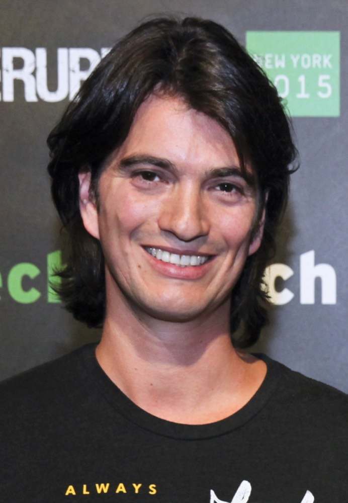
WeWork共同創業者のアダム・ニューマン（2015年5月）TechCrunch - Max Morse / CC BY 2.5 / Wikimedia Commons
WeWorkへの出資と既存株主の現金化（2016〜2017年）
単位：億ドル
ベンチマークの投資額1,500万ドル
ベンチマークの回収額1億2,800万ドル
ニューマンの法人の現金化3億6,000万ドル
シリーズFの調達（2016年）6億9,000万ドル
うち3合弁への出資13億ドル
うち株式の取得31億ドル
ソフトバンクの出資の合計44億ドル
WeWorkの評価額の推移
単位：億ドル。2019年の値は第12章の参考
シリーズF（2016年）162億ドル
ソフトバンクの出資時195億ドル
2019年1月（参考）470億ドル
上場撤回後（参考）約100億ドル
2016年12月24日59歳タイ プーケット アマンプリ
クリスマスイブに告げられた「ファンドから外れてほしい」
サマが島に着くと、孫から何度も着信があった。ビジョン・ファンドは最初の投資としてNVIDIAへの数十億ドルの出資を進めていた。孫は、信頼できる筋からサマがインドの捜査機関の対象になると聞いたとして、一時的にファンドから外れるよう求めた。サウジとUAEのデューデリジェンスの最中に危険は冒せないという理由である246。
サマは数時間後に電話し、辞めれば報道されてかえって注目されると反論した。孫はSprintとT-Mobileの統合が再び浮上しており、配置換えの説明はつくと答えた。孫はサマを家族と呼んだが結論は変えなかった。年末、サマはニケシュと友人の別荘の書斎で、自分たちを狙う妨害工作の依頼人を推理した。依頼人は弁護士や調査会社に100万ドル以上を使っていた246284。
ファンドの締め切りと投資
2017年5月、ファンドは最初の大口の締め切りを迎えた。ここから2年弱の間に、ファンドと本体は配車と通販のほか半導体や不動産へ資金を投じていく。
2017年59〜60歳米カリフォルニア州ウッドサイド 孫の自宅
NVIDIAを買いたい
孫はAIの機会を市場が過小評価していると考え、NVIDIAを買収したいと考えた。経営権のプレミアムを含めて800億ドル近い規模で、サマはArmの時以上に賛成だった。孫はCEOのジェンスン・フアンを自宅の夕食に招いたが、フアンは合併の可能性はないと先に告げた。AIは米国の戦略分野で、対米外国投資委員会が外国企業の買収を認めるはずがないという理由である284285。
ファンドは代わりに5%未満の株を信用取引で買い集めた。会社開示では約40億ドルで4.9%を取得し、2019年2月に全株を売って33億ドルの実現益を得た。保有を続けていれば約20兆円という第三者の試算があり、孫も惜しかったと認めている285247286。
NVIDIAの買収構想と株式の取得・売却
単位：億ドル。売却額は取得額と実現益の合計から算出した概数
買収の構想（経営権プレミアム込み）約800億ドル
株式4.9%の取得（2017年）約40億ドル
売却額（2019年2月、算出）約73億ドル
実現益33億ドル
保有を続けていれば約20兆円という第三者の試算がある。サマは別の箇所で20億ドルの投資が80億ドルの利益を生んだと書いている。
2842872472862017年5月20日59歳東京都
932億ドルの最初の締め切り
ビジョン・ファンドは932億ドルの出資約束で最初の大口の締め切りを迎えた。ソフトバンクの出資は上限280億ドルで、うち約82億ドルはArm株の約25%の現物出資だった。PIFは450億ドル、ムバダラは150億ドルを出した。アップルとフォックスコン、クアルコムとシャープも出資者に加わった。孫はこの規模を、2016年に世界のベンチャーキャピタルが1年で集めた総額640億ドルと比べて説明した288279251。
総額約986億ドルの約束のうち、400億ドルは年7%が固定で分配される優先出資で、586億ドルが成果に連動する出資だった。サマによれば、PIFの450億ドルのうち300億ドルが優先出資にあたる。年7%の分配は、投資の成否と関係なく年28億ドルになる289279。
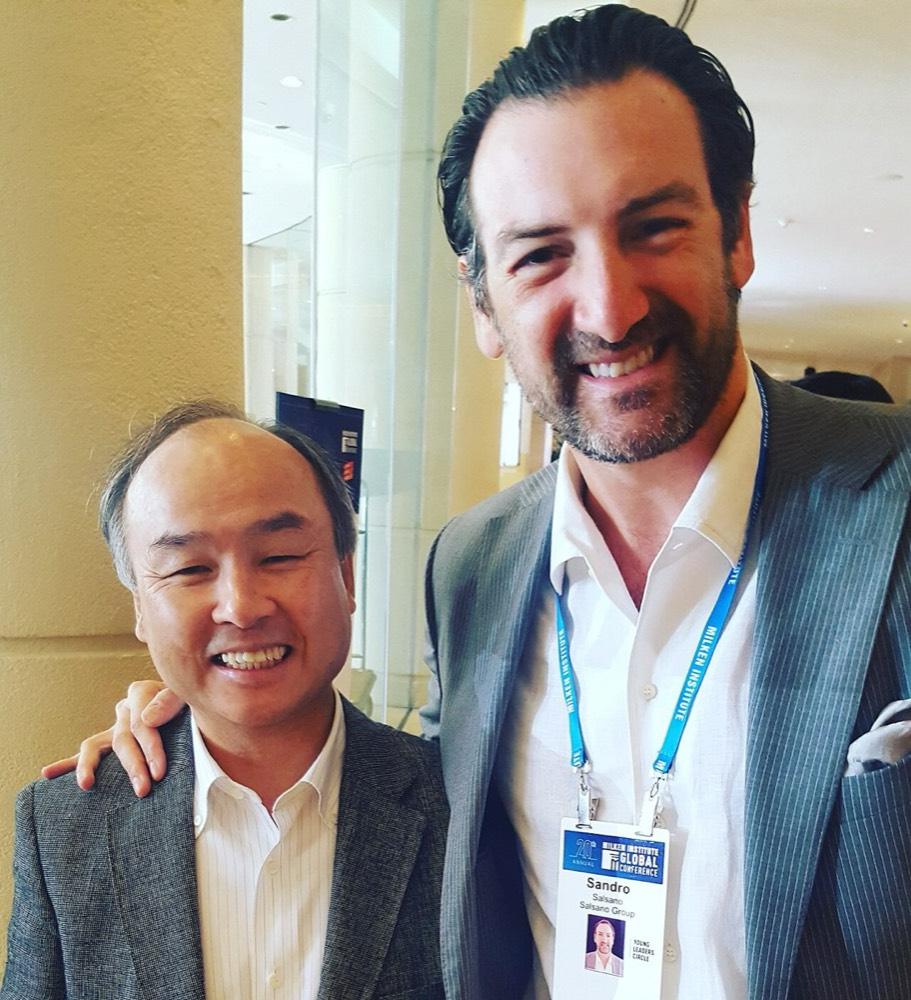
ミルケン・グローバル・カンファレンスでの孫正義（2017年5月）。ビジョン・ファンドの最初の締め切りと同じ月であるCnbc2017 / CC BY-SA 4.0 / Wikimedia Commons
ビジョン・ファンドの出資者（2017年5月の最初の締め切り）
合計932億ドル。その他は合計から差し引いた概数
- サウジ公共投資基金（PIF） 450億ドル48%
- ソフトバンクグループ（上限） 280億ドル30%
- ムバダラ（UAE） 150億ドル16%
- アップル・フォックスコン・クアルコム・シャープ 約52億ドル6%
ソフトバンクの280億ドルのうち約82億ドルはArm株約25%の現物出資。2016年10月のリヤドの覚書ではソフトバンク250億ドル、サウジ450億ドルだった。
288279277ビジョン・ファンドの出資の種類
総額約986億ドル。優先出資には成果と無関係に年7%が分配される
- 成果連動の出資 586億ドル59%
- 優先出資（年7%） 400億ドル41%
サマによれば、PIFの450億ドルのうち300億ドルが優先出資。
289279ビジョン・ファンドの規模と比較
単位：億ドル
ベンチマークの最新ファンド（2016年）5億5,000万ドル
カタール行きの機内での当初構想200億ドル
世界のVCの年間調達総額（2016年）640億ドル
最初の締め切り（2017年5月）932億ドル
総コミットメント約986億ドル
2017年4月59歳英ロンドン グロブナー・ストリートのソフトバンク事務所
7,500万ドルを求めた起業家が5億ドルを得る
サマは公式にはファンドから外れ、非公式に意見を求められる立場にあった。金曜の午後、インプロバブル創業者ハーマン・ナルラが仮想世界の基盤技術を説明したが、収益モデルを問うと見下す視線を返した。遅れて裸足で入ってきたミスラは、ナルラとサマを見比べ、サマの息子に似ていると言った285。
その夜、ペイパル共同創業者マックス・レブチンが、誰かにこの技術を調べさせるべきだとタクシー待ちの列で言った。目の前の若い男が振り向いて挨拶した。ナルラ本人だった。ナルラは7,500万ドルを求めて来たが、孫は5億ドルを出し、インプロバブルは評価額10億ドルになった285280。
2017年5月59歳インド ニューデリー タージホテル、ザ・リーラパレス・ホテル
お茶の席でPaytmに14億ドル、夜はOYOに5億ドル
孫はタージホテルでお茶を飲みながら、決済会社Paytmへの14億ドルの出資契約に署名した。評価額は70億ドルで、3年前にニケシュが見送った会社である。その夜のパーティーで、孫の関心はOYOの創業者リテシュ・アガルワルだけに向いていた。普段はくだけた服装のリテシュがグレーのスーツで立っていた236。
孫はサマを呼び、提示した条件を説明した。5億ドルを出資し、新株の議決権はリテシュに与え、追加のデューデリジェンスなしで4週間以内に締結する条件である。サマは担当チームとの協議を勧めたが、孫は取り合わなかった。実際の取引は他の株主の反対で半分になった。その後ファンドは10億ドルの調達を主導し、OYOの評価額は50億ドルになった236。
彼は若い頃の自分を見てるような気にさせてくれる唯一の人物なんだ孫正義、2017年 ニューデリー（サマの回想）
2017年59〜60歳米カリフォルニア州サンカルロス ソフトバンク米国事務所4階
セコイアのパートナーが抗議に来る
セコイア・キャピタルのダグ・レオーネが孫の執務フロアを訪れ、セコイアの投資先OYOへの増資と、リテシュへの議決権の付与に抗議した。孫は礼儀正しく聞いた後、リテシュは優れた起業家で、OYOはエアビーアンドビーより大きくなれると答えた。レオーネは困惑して帰ったとサマは書いている290。
セコイアの前任者マイケル・モリッツは社内のパートナーに、北朝鮮の指導者と孫を並べる文書を送った。ボクサーのタイソンが相手の耳を噛んだ逸話を引き、今こそ耳を噛み切る時だと書いたという。サマは、その後セコイアの成長ファンドが82億ドルに増えた事実を並べている290216。
大量の資金を与えれば、誰にも行く手を阻むことなんかできませんよ孫正義、2017年 サンカルロス（サマの回想）
2017年5月23日59歳ドイツ ボン近郊 マリエンフェルス城
ドイツテレコムの城で席を立つ
SprintとT-Mobileの統合交渉は「プロジェクト・ネーションズ」と呼ばれていた。Sprintを「スペイン」、T-Mobileを「タイ」、ドイツテレコムを「デンマーク」と呼ぶ符号である。会合の場所は1時間前まで知らされず、ライン川を見下ろす19世紀の城だった。ドイツテレコムのティム・ヘッチェスCEOは孫を尊敬していると言ったが、CFOと取引責任者は強硬だった291。
孫は反論してその場を去り、ドイツ側の3人は呆然とした。1時間以内に孫は社用機で離陸した。この日はサマの結婚31周年でもあった291。
あなたがたは弱きを助ける正義の騎士ではない孫正義、2017年5月23日 マリエンフェルス城（サマの回想）
2017年8月22日60歳米ニューヨーク テターボロ空港 → シカゴ → 米コロラド州デンバー
社用機の故障でエコノミー席に乗る
ドイツとの交渉が止まると、孫はケーブル大手チャーターを買ってSprintと統合する案に移った。新会社の企業価値は2,000億ドルを超え、支配権を得るために銀行団から650億ドルを借りる計画だった。チャーター株の31%を持つリバティ・ブロードバンドのジョン・マローンの協力が条件だった291292。
サマはイビザ島のクラブの駐車場で、午前5時まで孫との電話会議に出た。翌朝ニューヨークからデンバーに向かうチャーター機の中で、タナカから孫の社用機が故障したと連絡を受けた。続報は、孫がシカゴ経由でユナイテッド航空のエコノミー席で向かっているという内容だった。午後2時、孫は左肩に衣装バッグ、右手にブリーフケースを持ってホテルのロビーに現れた216292。
2017年8月23日60歳米コロラド州イングルウッド リバティ本社の待合室
滑走路を見ながら交わした数字
マローンとの会談の直前、孫はリバティに最低限のリターンを保証した場合の負担を次々に尋ね、レイン・グループの担当者が即答した。チャーター株が600ドルなら90億ドル、300ドルなら230億ドルという数字だった。レインのジェフ・サインは、この取引は会社の将来を賭けるものだから抵抗を感じたら席を立つよう孫に言った。孫は窓の外の滑走路の飛行機を見ていた。孫とマローンは握手した292293。
夜、空港には修理された孫の機体とサマのチャーター機、Sprint CEOマルセロ・クラウレの機体が並んだ。郊外のショッピングモールのイタリア料理店で、孫はバローロを掲げたが表情は慎重だった。チャーターは7月末に公式に拒否しており、案は秋に消えた293292。
チャーター買収案の規模（2017年夏）
単位：億ドル。保証負担はリバティに最低リターンを保証した場合の試算
保証負担（チャーター株600ドルの場合）90億ドル
保証負担（チャーター株300ドルの場合）230億ドル
Sprintの買収（2013年、参考）216億ドル
支配権のための銀行借入650億ドル
新T-Mobileの企業価値（2018年、参考）1,460億ドル
統合後の新会社の企業価値2,000億ドル超
チャーター株が600ドルなら、いくら払うことになります？孫正義、2017年8月23日 リバティ本社（サマの回想）
2018年1月60歳米国、インド、中国
配車と通販に集中した2年弱
配車はビジョン・ファンドの最大の投資分野になった。DiDiへの投資は計110億ドルに達し、Grabは15億ドルを追加で得た。ファンドは競合のOlaを支援しながら、UberとLyftの両方と並行して交渉した。2018年1月、ソフトバンクを含む企業連合は総額77億ドルでUber株を取得した。平均取得価格は1株34.50ドルだった295247。
2017年8月には、インドのネット通販Flipkartの約20%を25億ドルで取得した。9か月後の2018年5月、ウォルマートに40億ドルで売り、15億ドルの利益を得た。2018年3月末までの1年弱で、ファンドと関連ファンドは297億ドルを投じ、本体もUberとDiDiに129億ドルを投じた247296。
資本の大砲を向けられるくらいなら、うしろから支援してもらうほうがいいダラ・コスロシャヒ（Uber CEO）（サマの記述）
ビジョン・ファンド期の主な出資（2017〜2018年）
単位：億ドル。DiDiは累計、Uberは企業連合の総額、OYOは主導した調達ラウンドの総額
DiDi（累計）110億ドル
Uber（企業連合）77億ドル
NVIDIA約40億ドル
Flipkart25億ドル
バイトダンス20億ドル
Grab（追加）15億ドル
Paytm14億ドル
ロイバント11億ドル
OYO（調達ラウンド）10億ドル
カテラ8億6,500万ドル
インプロバブル5億ドル
コンパス4億5,000万ドル
ズーム（ピザ）3億7,500万ドル
ワグ3億ドル
ビジョン・ファンドの投資ペース（2018年3月末まで）
単位：億ドル。年平均は総額を投資期間5年で割った概数
優先出資への年間の分配（400億ドル×7%）28億ドル
5年で均等に投じた場合の年平均約197億ドル
本体によるUberとDiDiへの投資129億ドル
ファンドと関連ファンドの投資（1年弱）297億ドル
取得額と売却額（Flipkart・NVIDIA・Uber）
単位：億ドル。NVIDIAとUberの売却額は開示の実現益と倍率から算出した概数
Flipkart 取得（2017年8月）25億ドル
Flipkart 売却（2018年5月）40億ドル
NVIDIA 取得（2017年）約40億ドル
NVIDIA 売却（2019年2月）約73億ドル
Uber 取得（2018年1月）77億ドル
Uber 売却（2022年7月まで）約92億ドル
Flipkartは9か月で15億ドルの利益。Uberは平均取得価格1株34.50ドル、平均売却価格41.47ドルで1.20倍。
2472018年1月60歳米ロサンゼルス
孫の愛犬の写真から始まった資料
犬の散歩代行アプリのワグは、孫の愛犬のプードルの写真から始まる資料で、ファンドから3億ドルを得た。ロボットでピザを作るズームは3億7,500万ドルを評価額22億5,000万ドルで得た。不動産仲介のコンパスには4億5,000万ドル、建設会社カテラには8億6,500万ドル、創薬のロイバントには11億ドルが投じられた。サマはこれらを、テック企業とは呼べない投資先として並べている236295。
2018年1月60歳米サンフランシスコ パレスホテルのグランドボールルーム
「ソフトバンク株は資産の半値」
モルガン・スタンレーの会議で、サマはソフトバンクの株価が保有資産の価値より50%安いと訴えた。聴衆の関心は孫の次の一手にあり、NVIDIAへの20億ドルが数か月で80億ドルの利益を生んだと話すと反応が強まった。WeWorkがなぜテック企業なのかを問う人はいなかったという。NVIDIAの利益はサマの本の中で33億ドルと80億ドルの2通りに書かれており、時点の違いと考えられる294297287。
数週間後、ニューヨークのタイガー・グローバルでスコット・シュライファーはArmの説明を遮り、価値はゼロだという意味で「ベーグル」と言った。関心はビジョン・ファンドの持ち分だけだった。借入と20%の成功報酬により、投資先の価値が1ドル上がるとソフトバンクの利益は5ドル以上増えるという計算である287298。
アームのことはどうでもいい。あれはベーグルだからスコット・シュライファー（タイガー・グローバル）、2018年（サマの回想）
2018年4月29日60歳米サンフランシスコ、米ニューヨーク 法律事務所
SprintとT-Mobileの合意
両社のCEOが4日間の交渉で細部を詰め、統合に合意した。新T-Mobileは3年で400億ドルのネットワーク投資を約束し、年60億ドルのコスト削減を見込んだ。企業価値は1,460億ドルとされ、ソフトバンクは24%を持つことになった。本社はシアトルに置かれる293294。
ハンターとコック
投資の速度が上がるにつれ、サマと孫の間には距離が生まれた。サマは借入と投資の速度を問題にし、孫はより多くの案件を求めた。
2018年60〜61歳米カリフォルニア州ウッドサイド マウンテンホームロードの孫の自宅
「いつだってコックよりハンターに価値を置いてるんです」
孫の邸宅は2012年に買った3万6,000平方メートルの敷地にあり、同じ通りにはラリー・エリソンの9万3,000平方メートルの邸宅があった。エリソン邸は日本の離宮を模し、建設に9年と2億ドルを要した。サマが最も記憶しているのは、孫邸の洗面室にある青い筋の入った大理石の小便器だという298。
居間でサマはまず忠誠に変わりがないと伝え、孫は喜んだ。続いて取引の速度と借入、危険の増大を懸念すると、孫の笑顔は消えた。孫はサマを家族と呼び、毎日話したいと言いながら、もっとハンターになれと求めた。帰り際にサマが、せめてミシュランの3つ星のコックとして扱ってほしいと言うと、孫は大笑いした。サマのお礼のメールに、孫は一緒に人類の未来を変えましょうと返信した298299。
いつだってコックよりハンターに価値を置いてるんです孫正義、2018年 ウッドサイド（サマの回想）
2018年60〜61歳英国、東京、米カリフォルニア州ウッドサイド
右腕の最後の仕事と退職
2017年、サマは父と母を111日の間隔で亡くした。5月にはウォール・ストリート・ジャーナルが、ニケシュとサマがインドの投資で見返りを受けたという疑惑を取材していると伝えた。ソフトバンクは虚偽であり悪意ある中傷だと反論している。2020年2月に同紙は、2人を狙った妨害工作の詳細を報じた299300301。
在職の最後の時期に、サマは国内通信会社ソフトバンクの株式公開を訴えて実現させた。孫が買収した投資会社フォートレスの取締役にも加わった。退職の日付を本文は記していないが、2019年の時点ではすでに会社を離れている。退職にあたりサマは少額のソフトバンク株を持ち続け、事務所の机と背後に掛けていた自画像を持ち帰った302303304。
第12章WeWorkとコロナの試練WeWork, the Pandemic and the Retreat, 2019–2022
2019年、ビジョン・ファンドの看板だったWeWorkの上場が撤回され、孫は自分の投資判断を公の場で謝る。翌年のコロナ禍では4.5兆円の資産売却で株価を支え、2021年に日本企業として過去最高の純利益を計上した。2022年には同じポートフォリオが3兆円を超える四半期損失を生み、孫は決算会見の壇上から退いた。
カショギ事件と2019年前半
ビジョン・ファンドの最大の出資者はサウジアラビアの政府系ファンドPIFだった。2018年10月の記者殺害事件は、その関係を世界の報道の前に出した。翌2019年の前半、孫はトランプ大統領の来日とSoftBank Worldで、AI投資の看板を掲げ続けた。
2018年10月23日61歳サウジアラビア リヤド
皇太子とだけ会い、FIIの登壇を取り消す
記者ジャマル・カショギが10月2日にイスタンブールのサウジ総領事館で殺害され、欧米企業の幹部はリヤドの投資会議FIIへの参加を相次いで取り消した。孫はリヤドに入り、10月22日にムハンマド皇太子と会談した。しかし翌日に開幕したFIIの登壇は直前に取り消し、PIFのルマイヤン総裁の公邸で開かれた夕食会も欠席した。COOのマルセロ・クラウレも参加を取りやめた。孫の名は会議の諮問委員として残った305306。
11月5日の決算説明会は、事件後に孫が記者の前に出た最初の場だった。孫は殺害を「恐ろしく、深く遺憾な行為」と非難した。同時に、サウジの国民への責任から背を向けないと述べ、ビジョン・ファンドの関係は続ける考えを示した。次の大型ファンドの資金集めは慎重に進めるとも述べている307。
恐ろしく、深く遺憾な行為だ孫正義、2018年11月5日の決算説明会（AP配信の英語報道による）
2019年5月25日61歳東京都港区赤坂 米国大使公邸
来日初日のトランプが「マサ」を抱擁する
トランプ大統領は東京に到着した日の夕方、大使公邸で日本の経営者約30人と会った。大統領は「マサ」と呼ぶ孫を笑顔で抱擁し、出席者を「世界で最も偉大な経営者たち」と持ち上げた。2016年12月のトランプタワーでの面会で、孫は米国への500億ドルの投資と5万人の雇用を約束していた308309。
2019年7月18日61歳東京 SoftBank World 2019 基調講演
「日本はAI後進国になった」
孫は基調講演で、AI革命は25年前のインターネットの黎明期と同じ規模の出来事だと述べた。そのうえで、日本は投資対象となるAIのユニコーン企業を生んでいないとして「AI後進国になった」と語った。壇上にはビジョン・ファンドが投資する4社のCEOを招き、AIを事業に使う「AI起業家」として紹介した。発言は多くの媒体の見出しになった。この2か月後、ビジョン・ファンドの最大の投資先の1つが上場の場で否定される310。
日本はAI後進国になった。手遅れではないが目を覚ませ孫正義、2019年7月18日のSoftBank World 2019
WeWorkの上場撤回と救済
WeWorkは2017年以降、ビジョン・ファンドと本体から資金を受けて拠点を増やした。2019年、上場の準備に入ると、事業の数字と創業者の行動が同時に開示の対象になった。
2019年1月61歳
最大200億ドルの構想が20億ドルに縮む
サマによれば、ニューマンは2019年、ビルを購入するための資金として追加で700億ドルを求めた。孫は既存の投資家の持分を買い取る形で最大200億ドルを引き受ける意向を示した。しかし株主と日本の金融機関、そして財務を預かる後藤芳光の反発を受け、株式への投資は20億ドルに減った。これは総額50億ドルの投資の一部で、評価額は420億ドルとされた。報道ではこの時の評価額は470億ドルである303283。
WeWorkの赤字は2018年に19億ドル、2019年上半期に9億500万ドルだった。それでも銀行は500億ドルを超える上場時の評価額を約束したとサマは書いている303。
2019年8月14日62歳米ニューヨーク
上場申請書が開示した470億ドルと40億ドル
WeWorkの運営会社は8月14日に上場申請書を提出した。将来のリース債務は470億ドルあったが、将来のリース収入として契約済みの額は40億ドルにとどまった。申請書では、ニューマンが「We」の商標を590万ドルで会社に売っていたことも明らかになり、ニューマンは後にこれを返金した283303。
統治体制への批判を受けて会社は9月17日に上場を延期し、9月24日にニューマンがCEOを退いた。30日には上場申請そのものを取り下げた。評価額は1月の470億ドルから約100億ドルの水準まで下がったと報じられた283311。
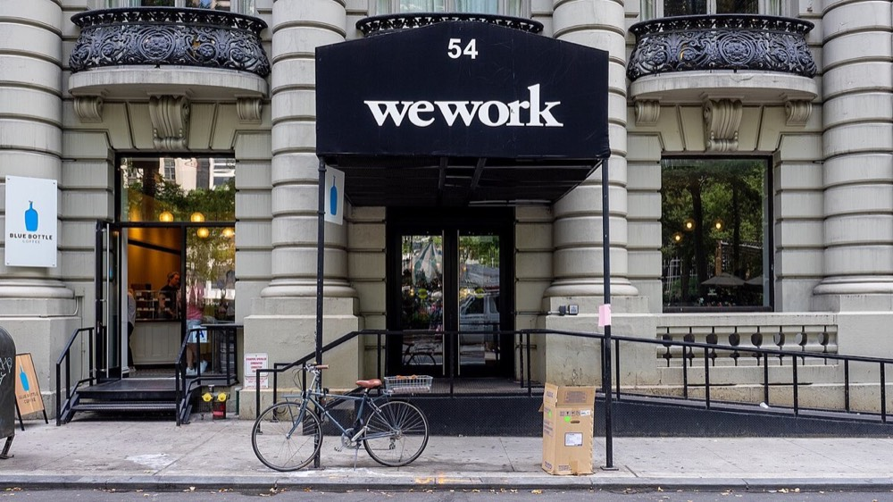
ニューヨーク・ミッドタウンのWeWork（2019年6月撮影）。上場申請の2か月前であるAjay Suresh from New York, NY, USA / CC BY 2.0 / Wikimedia Commons
2019年10月7日62歳日経ビジネスのインタビュー
「恥ずかしく、うろたえている」
ウーバーとWeWorkの評価額が下がり、WeWorkが上場を撤回した直後のインタビューである。孫は自分の投資実績について、恥じ入りうろたえていると述べた。WeWorkの失敗によって、2本目の大型ファンドの外部からの資金集めにも支障が出ていた。この発言は英訳の報道で確認でき、日本語の原文は確認できていない312313。
2019年10月22日62歳米ニューヨーク
JPモルガン案を退け、SBGが経営権を取る
WeWorkの取締役会は、JPモルガンがまとめた50億ドルの融資案を退け、SBGの救済案を選んだ。SBGの金融支援は総額95億ドルで、救済後の評価額は約80億ドルとされた。SBGはCOOのマルセロ・クラウレを執行会長として送り込んだ314283。
WSJの報道によれば、ニューマンは保有株の売却と新たな与信を合わせて約17億ドルを受け取る。内訳は保有株の買い取り9億7,000万ドル、コンサルティング料1億8,500万ドル、個人借入の返済に充てる与信5億ドルである。同じ時期のWeWorkでは数千人規模の人員削減が計画されており、この支払いは強い批判を受けた283。
WeWorkの評価額の推移（2016〜2023年）
単位：億ドル。銀行の提示額は上場前に示された水準で、実際の取引価格ではない
2016年3月 シリーズFの評価額162億ドル
2017年8月 ソフトバンク出資時195億ドル
2019年1月 追加出資時470億ドル
2019年 銀行が示した上場時の評価額500億ドル超
2019年10月 救済後約80億ドル
2021年10月 SPACとの合併で上場約90億ドル
2023年11月 破産申請株式価値は消滅
WeWork救済の金額とニューマンへの支払い（2019年10月）
単位：億ドル。ニューマンへの支払いの内訳はWSJなどの報道値
SBGの金融支援の総額95億ドル
取締役会が退けたJPモルガンの融資案50億ドル
ニューマンへの支払いの合計約17億ドル
うち保有株の買い取り9億7,000万ドル
うち個人借入の返済のための与信5億ドル
うちコンサルティング料1億8,500万ドル
サマは、ニューマンが受け取って去った額を7億7,000万ドルと書いている。集計の範囲が報道と異なるとみられる。Reutersは支援総額を「100億ドル近く」と報じた。
2833143042019年10月29日62歳サウジアラビア リヤド FII 2019
空席の目立つ会場で登壇する
前年に登壇を取り消した孫は、2019年のFIIには出席した。会期は10月29日から31日で、WeWorkの救済を決めた1週間後だった。Business Insiderは、孫が登壇した時の聴衆はまばらだったと報じている316。
2019年11月6日62歳東京 SBG決算説明会
「ボロボロ」「目をつぶった」と自ら評する
孫は冒頭、2019年7〜9月期の決算を「ボロボロ」「真っ赤っかの大赤字」と自ら評した。4〜9月期の営業損益は156億円の赤字で、前年同期は1兆4,207億円の黒字だった。主因はWeWorkの評価額の見直しで、SBGは投資額103億ドルに対し92億ドルの評価減を計上した317318283。
孫は、自身の投資判断が多くの点でまずかったと述べ、ニューマンの統治上の問題に目をつぶったと認めた。救済型の投資は今後行わないとも述べた。一方で投資全体は「3勝1敗」だと説明し、WeWorkの約6,000億円の損失に対して約1兆8,000億円の利益があると示した。反省しすぎて萎縮するほどまでいく必要はないとも語っている317319318。
2019年11月の決算会見で孫が示した損益
単位：億円。「3勝1敗」は孫の説明による投資全体の損益の比較
前年同期（2018年4〜9月）の営業利益1兆4,207億円
2019年4〜9月の営業損失156億円
WeWork関連の損失（約）約6,000億円
投資全体の利益（孫の説明）約1兆8,000億円
英語圏の報道はWeWorkの損失を約47億ドルとした。
317319今回の決算発表の内容は、ボロボロでございます孫正義、2019年11月6日の決算説明会
2019年12月23日62歳米ニューヨーク
燃える紙幣の表紙と「アダム以上の責任」
Bloomberg Businessweekの2019年12月23日号の表紙は、燃える100ドル札の山だった。サマによれば、孫は誰も責めず、自分の責任を認めた。孫の言葉として「私にはアダム以上に責任があるのかもしれません」が残っている。サマは退職時にソフトバンク株の買い持ちを残しており、これを「間抜け保険」と呼んでいる303304。
私にはアダム以上に責任があるのかもしれません孫正義、2019年（サマの回想）
コロナ禍の資産売却
2020年の初め、SBGの株価は保有資産の価値を大きく下回っていた。アクティビストの株式取得とコロナ禍による株価の急落が重なり、孫は20年かけて集めた保有株の一部を現金に替える決断をする。
2020年2月7日62歳─
エリオットが25億ドル超を取得し、自社株買いを要求
WSJは、アクティビストのエリオット・マネジメントがSBG株を25億ドル超取得したと報じた。エリオットは企業統治の改善と100億〜200億ドルの自社株買いを求めていた。SBGの経営陣はエリオットと建設的に協議していると説明された。エリオットは2022年初めまでに保有株の大半を売却している320。
2020年3月23日62歳東京 SBG取締役会
最大4.5兆円を売ると決め、株価は19%上昇する
コロナ禍で株価が急落する中、SBGは最大4.5兆円の保有資産を売却または資金化し、最大2兆円の自社株買いと負債の削減に充てると発表した。3月13日に決めた5,000億円と合わせ、自社株買いはエリオットの要求額を上回った。売却対象は示されず、アリババ株やT-Mobile株が候補とされた。翌日の株価は19%上昇し、約12年ぶりの上昇幅を記録した321322。
資金化は2020年9月末までに完了し、実績は計画を1.1兆円上回る5.6兆円だった。5月にはソフトバンク株式会社の株式2億4,000万株を売り出している。超過分は新規投資と手元資金に充てられた323324325。
4.5兆円の資産売却・資金化プログラムの計画と実績（2020年）
単位：億円。自社株買いは3月13日決議の5,000億円を含む総額
計画（2020年3月23日）4兆5,000億円
実績（2020年9月末までに完了）5兆6,000億円
自社株買いの総額2兆5,000億円
計画を超えた分（投資資金と手元資金へ）1兆1,000億円
銀行借入の返済6,100億円
社債の買入れ3,925億円
売却した資産の銘柄別の金額は会社の文章では開示されていない。報道ではアリババ株、T-Mobile株、ソフトバンク株式会社の株式が対象とされた。2月にSBG株を約25億ドル分取得したエリオットは、100億〜200億ドルの自社株買いを求めていた。
321324325320財務基盤を強化し、負債を大幅に減らせる孫正義、2020年3月23日のSBGの声明
2020年5月18日62歳東京 SBG決算説明会（オンライン）
ユニコーンと「コロナの谷」のスライド
2020年3月期の営業損益は1兆3,646億円の赤字、最終損益は9,616億円の赤字で、創業以来最大の赤字だった。孫は、漫画のユニコーンが谷に転落し、1頭だけ翼をつけて谷を越えるスライドを示した。ビジョン・ファンド投資先88社のうち15社は破綻し得るとの見方も示した。ファンドのIRRは成功報酬を加えてマイナス6%だった326327328。
同じ会見で、ジャック・マーが13年務めたSBGの取締役を退くことと、無配の可能性を公表した。日本の報道は、孫がこの状況を世界恐慌以来の危機と表現し、普段より口調を抑えていたと伝えた。3月には衛星通信のOneWebが破産しており、SBGは追加出資をしなかった329330331。
コロナの谷にユニコーンが落馬している状況で大変な危機です孫正義、2020年5月18日の決算説明会
2020年8月11日63歳東京 SBG決算説明会
63歳の誕生日に引退計画を書き換える
19歳で立てた人生50年計画では、60代で後継者に事業を引き継ぐことになっていた。孫は63歳の誕生日に開いた決算説明会で、70歳を過ぎても健康なら経営を続けたいと述べた。理由として、19歳の時より医学が進んで平均寿命が延びたこと、ゴルフで1か月に3回パーで回れたことを挙げた。「まだまだわしゃ現役だ」とも語っている332。
2020年9月4日63歳─
「ナスダックの鯨」はSBGだったと報じられる
夏の米国ハイテク株の上昇の背後で巨額のコールオプションを買っていた投資家は「ナスダックの鯨」と呼ばれていた。FTはこれがSBGだと報じた。孫は個別のハイテク株を対象とする約40億ドルのオプション購入を承認し、参照する株式の総額は300億ドルに達したとされる。報道後、SBGの時価総額は最大170億ドル減った333334。
取引を担ったのは、この年に設けられた上場株の運用会社SB Northstarである。孫個人が33.3%を出資していた。SBGは11月の決算で、9月末の買いコールの価値を46億9,000万ドルと開示した。2022年4月までにSB Northstarの損失は60億〜70億ドルに達し、うち孫個人の損失は13億ドルとされる331335。
「ナスダックの鯨」の規模（2020年9月）
単位：億ドル。原資産はオプションが参照する株式の総額
コールオプションの購入額（約）約40億ドル
9月末の買いコールの価値（会社開示）46億9,000万ドル
原資産のエクスポージャー300億ドル
報道後のSBG時価総額の減少（最大）最大170億ドル
時価総額の減少額はBloombergの集計で、CNBCは約120億ドルと報じた。
3333343352020年9月13日63歳─（NVIDIAとSBGの共同発表）
アームをNVIDIAに400億ドルで売ると合意する
2016年に約3.3兆円で買ったアームを、NVIDIAに最大400億ドルで売却すると発表した。対価はNVIDIA株215億ドル、現金120億ドル、業績連動の最大50億ドルなどで構成された。現金のうち20億ドルは署名時に支払われる。SBGはNVIDIA株を10%未満保有する見込みとなった。孫は声明で、NVIDIAはアームにとって完璧なパートナーだと述べた8336。
コロナ禍で手元資金を厚くする必要があったことを、孫は後に売却の理由として説明している。2016年の買収を生涯で最も重要な買収と呼んでいた資産を、4年で手放す判断だった337251。
NVIDIAへのアーム売却の対価の構成（2020年9月の合意）
単位：億ドル。合計約400億ドル
- NVIDIA株 215億ドル54%
- 現金（うち署名時20億ドル） 120億ドル30%
- 業績連動の追加対価（最大） 最大50億ドル12%
- アーム従業員向けの株式報酬 15億ドル4%
SBGは取引完了後にNVIDIA株を10%未満保有する見込みだった。
3362020年11月17日63歳New York Times DealBook オンラインサミット
ニューマンを「今も愛し、尊敬している」
司会のアンドリュー・ロス・ソーキンからWeWorkの教訓を問われた孫は、ニューマンは聡明な人物で、自分の過ちを自覚していると評した。そのうえで、今も彼を愛し、尊敬していると答えた。ニューマンはこの年の初め、SBGが約10億ドルの株式買い取りの合意を撤回したとして同社を提訴していた338。
過去最高益と中国の冬
2020年後半から、ビジョン・ファンドの投資先が相次いで上場した。上場株の時価評価がそのまま利益になる会計のもとで、損益は1年で5兆円近く振れた。
2021年3月11日63歳米ニューヨーク証券取引所
Coupangの上場と「金の卵」
韓国の電子商取引会社Coupangが上場した。SBGは2015年と2018年に計約30億ドルを投じており、上場時の持分の価値は約210億ドルになった。前年12月のDoorDashの上場では、6億8,000万ドルの投資が初日の始値で115億ドルの価値を持った。孫は2月の決算説明会で、SBGをガチョウにたとえ、投資先の上場を「金の卵」と呼んでいた247339。
2020〜2021年に上場した投資先の投資額と上場時の価値
単位：億ドル。灰色が投資額
Coupang 投資額（2015年＋2018年）約30億ドル
Coupang 上場時の持分価値（2021年3月）約210億ドル
DoorDash 投資額（2018〜2020年）6億8,000万ドル
DoorDash 上場初日の始値ベース（2020年12月）115億ドル
倍率はCoupangが約7.0倍、DoorDashが16.9倍。孫はこうした上場を「金の卵」と呼んだ。
2473392021年5月12日63歳東京 SBG決算説明会
4兆9,879億円の純利益を「たまたま」と3度繰り返す
2021年3月期の純利益は4兆9,879億円となり、日本企業の過去最高を記録した。前期は9,616億円の赤字だった。ファンド事業の投資利益は7兆5,290億円に達し、ROEは61.9%だった。孫はこの利益について「たまたま」を3度繰り返し、株価次第で業績は上下すると述べた340323。
親会社の所有者に帰属する純損益（2020年3月期〜2023年3月期）
単位：億円。右が利益、左が損失
2020年3月期−9,616億円
2021年3月期+4兆9,880億円
2022年3月期−1兆7,080億円
2023年3月期−9,701億円
たまたま孫正義、2021年5月12日の決算説明会（同じ語を3度繰り返した）
2021年11月8日64歳東京 SBG決算説明会
「真冬の嵐のど真ん中だ」
中国当局がIT企業への規制を強め、アリババなど中国の投資先の株価が下がった。7〜9月期の純損益は3,979億円の赤字だった。孫は時価純資産NAVの減少を「真冬の嵐のど真ん中だ」と表現した。NAVの減少約6兆円の大半はアリババ株の下落によるものとされた。孫は、SBGの株価が実力より大幅に割り引かれているとも述べた。この年には、出資していたGreensill Capitalが3月に、建設会社Katerraが6月に破綻している343344331。
真冬の嵐のど真ん中だ孫正義、2021年11月8日の決算説明会
アーム売却の破談と「しかみ像」
2022年、売却で手放すはずだったアームが手元に残る。同じ年、投資先の評価額が下がり、SBGは過去最大の四半期損失を計上した。
2022年2月8日64歳東京 SBG決算説明会
破談の日に「上場こそプランAかもしれない」
米FTCが2021年12月に買収の差し止めを求めて提訴し、英CMAと欧州委員会も懸念を示した。SBGとNVIDIAは売却契約を解除した。孫は、コロナ禍で資金が必要になり売却を決めた経緯を説明し、米英の政府と大手IT企業から強い反発を受けたと述べた。そのうえで、上場はもともとあった案で「むしろこちらがプランAかもしれない」と語った345337346。
同じ日、アームのCEOはサイモン・シーガースからレネ・ハースに替わった。NVIDIAから受け取った前受金12億5,000万ドルは返金不要で、SBGは利益に計上した345337。
アームの買値、売値、破談で残った現金
単位：億ドル。2016年の取得額は240億ポンドを当時の1ポンド=約1.32ドルで換算
2016年の取得額（換算）約320億ドル
2020年のNVIDIAへの売却額最大400億ドル
署名時に受け取る現金20億ドル
破談後も返金不要とされた前受金12億5,000万ドル
半導体業界史上、最大の上場を目指す孫正義、2022年2月8日の決算説明会
2022年8月8日64歳東京 SBG決算説明会
徳川家康の「しかみ像」をスライドに映す
2022年4〜6月期の当期損益は3兆1,627億円の赤字で、国内上場企業として過去最大だった。主因はビジョン・ファンドの2兆9,191億円の投資損失である。孫は、三方ヶ原の戦いで武田信玄に敗れた徳川家康が戒めとして描かせたとされる肖像をスライドに示した。そして、大きな利益が出た時に浮かれていた自分を恥じると述べた347348349。
孫は、新たに投資しなくても既存の投資先に金の卵が多くあると述べ、守りを固める方針を示した。サマはこの場面を、2016年は1分で10億ドルが集まり、2022年は1か月で1兆円が失われたと対比している348350。
2022年8月の決算会見の損失と前年の利益
単位：億円。半年の損失は孫の発言による概数
2021年3月期の純利益（参考）4兆9,880億円
2022年4〜6月期の当期損失3兆1,627億円
うちビジョン・ファンドの投資損失2兆9,191億円
孫が語った半年間の赤字（約）約5兆円
サマは孫の発言を「半年で6兆円」と記しており、数字は資料によって異なる。四半期の当期損失は国内上場企業として過去最大だった。
347348350大きな利益が出るとちょっと浮かれる孫正義、2022年8月8日の決算説明会
2022年64〜65歳─
アリババ株を手放していく
2000年1月に2,000万ドルで買ったアリババ株は、SBGの財務を20年以上支えてきた。2022年以降、SBGはアリババ株を使った先渡売買契約の現物決済を進め、持分を減らした。2023年3月期にはアリババ関連の利益4兆3,403億円を計上し、同期の損失を小さくしている。2024年までにSBGはアリババ株の保有をほとんど解消した109342213。
サマによれば、アリババ株は一時2,000億ドルの価値があり、累計で推定720億ドルの利益を生んだ。最終局面の処分で得た350億ドルは、次の投資の原資として残された110。
アリババへの投資額と、手放すまでに生まれた金額
対数目盛。単位はドル
2000年1月の投資額2,000万ドル
最終局面の売却で得た資金350億ドル
累計の利益（推定）約720億ドル
保有株の価値の最高値約2,000億ドル
1,000万ドル10億ドル1,000億ドル
2023年3月期にはアリババ関連の利益4兆3,403億円を計上し、同期の損失を小さくした。
109110342表に出なかった7か月
2022年10月から2023年6月まで、孫は公の場にほとんど姿を見せなかった。決算説明はCFOの後藤芳光が担い、孫個人の財務の問題が報道で表に出た。
2022年10月65歳東京
人生を振り返り、数日間泣く
孫は2023年6月の株主総会で、この時期のことを明かした。2022年10月頃、経営者と起業家としての自分の人生を振り返り、このまま終わってよいのかと思って数日間泣いたという。投資先の評価額は下がり続け、アーム売却の資金は入らず、引退の時期とした60代も半ばに入っていた。この話は本人の語りでしか確認できない351352。
2022年11月11日65歳東京 SBG決算説明会
冒頭の挨拶だけで後藤に説明を委ねる
孫は冒頭の挨拶だけで壇上を退き、決算の説明を財務担当の後藤芳光に委ねた。孫は自分を「攻めの男」と呼び、アームの事業計画の深いところに集中すると説明した。現在は守りを固める時期で、後藤を中心に進めてもらうとも述べた。以後、孫が公の場に出るのは2023年6月の株主総会になる353354。
私は攻めの男だから孫正義、2022年11月11日の決算説明会
2022年11月18日65歳─
孫個人がSBGに47億ドルの債務を負うと報じられる
孫の報酬を引き上げる目的で設けた個人の付帯契約が、投資先の評価損で赤字に転じた。内訳はビジョン・ファンド2の持分に関する約28億ドルと、中南米ファンドの分、SB Northstarの損失である。合計した孫の債務は約47億ドルとなり、SBGはこの数字を認めた。直前の四半期だけで約7億5,000万ドル増えていた。孫はファンドの持分とSBG株の一部を担保に差し入れている355356。
孫個人のSBGへの債務と個人資産（2022年11月）
単位：億ドル。個人資産はBloomberg Billionaires Indexによる債務控除後の値
個人資産（債務控除後）約127億ドル
SBGへの債務の合計約47億ドル
うちビジョン・ファンド2の持分関連約28億ドル
直前の四半期での増加額約7億5,000万ドル
SB Northstarでの孫個人の損失（2022年4月時点）13億ドル
SB Northstarには孫個人が33.3%を出資し、ファンド全体の損失は60億〜70億ドルとされる。
355356331第13章AIへのオールインAll In on Artificial Superintelligence, 2023–2026
2023年6月、7か月ぶりに公の場に戻った孫は、守りから攻めへの転換を宣言する。アームの上場で手元に残った資産を担保に、T-Mobile株とNVIDIA株を売り、資金をOpenAIと米国のAIインフラに集めた。2026年、NAVと個人資産は過去最高に達したが、その大半はアームとOpenAIの2社の値段で決まっている。
沈黙からの復帰
孫が表に出なかった7か月の間に、OpenAIはChatGPTを公開した。2023年6月の2日続きの株主総会で、孫はこの対話型AIを自分の相談相手として語り、次の投資の方向を示した。
2023年6月20日65歳東京 ソフトバンク株式会社 定時株主総会
「毎日ChatGPTと話している」
通信子会社ソフトバンクの総会に取締役として出席した孫は、自らをChatGPTのヘビーユーザーと呼び、毎日対話していると述べた。OpenAIのサム・アルトマンCEOとも毎日のように話していると明かした。翌日のSBGの総会で語る転換の前触れになった。357358
2023年6月21日65歳東京 SBG第43回定時株主総会
7か月ぶりの登壇で「数日間泣いた」と明かす
孫が公の場に出たのは約7か月ぶりだった。不在の理由は、投資先400社超に生成AIがもたらす変化を検討していたためだと説明した。2022年10月頃に経営者としての人生を振り返り、このまま終わってよいのかと思って数日間泣いたことも明かした。そのうえで、守りから攻めに転じると宣言した。会社は翌年の招集通知に、この総会で反撃への転換を宣言したと記録している。352359360
ChatGPTは最も重要な相談相手の1つで、アイデアを投げてAIが納得するまで議論を重ねていると孫は語った。サマによれば、新しいスライドには鉢の中の金魚が描かれ、AIに懐疑的な人々に金魚になりたいかと問いかけた。352110
このまま終わっていいのかと、大泣きした孫正義、2023年6月21日の株主総会（報道による）
2023年6月21日65歳東京 SBG第43回定時株主総会 質疑応答
WeWorkを「私の人生の汚点」と呼ぶ
株主からWeWorkの経営悪化について問われた孫は、投資の失敗の責任は自分にあると述べた。WeWorkを訪問して惚れ込み、役員や社員の忠告が何度もあったにもかかわらず多額の資金を投じたと認めた。ニューマンをあおった面もあったと語り、回答の最後を「私の人生の汚点」と締めくくった。SBGは本体と傘下のファンドで約100億ドルを投じていた。361362363
私の人生の汚点だ孫正義、2023年6月21日の株主総会
アームの上場とWeWorkの破産
2022年に売却が破談したアームは、2023年秋に上場する。同じ秋、WeWorkは連邦破産法の適用を申請した。
2023年9月14日66歳米ニューヨーク ナスダック・マーケットサイト
アームの上場、初日終値は公開価格の24.7%高
上場前の8月、SBGはビジョン・ファンド1号が保有するアーム株25%を約161億ドルで買い取った。この時の評価額は640億ドルである。アームは公開価格を仮条件の上限の51ドルに決め、48億7,000万ドルを調達した。この年最大のIPOだった。360364
初値は56.10ドル、終値は63.59ドルで、時価総額は約650億ドルとなった。公開価格での評価額は約545億ドルで、買い取りの時の640億ドルを下回った。株価は翌週に4日続けて下がり、52.24ドルまで下げた。上場後もSBGはアーム株の約90%を保有し、連結を続けた。364365360
2023年11月6日66歳米ニュージャージー州 連邦破産裁判所
WeWorkが連邦破産法11条を申請
WeWorkは社債の利払いを怠った後、連邦破産法11条の適用を申請した。2021年10月にSPACとの合併で約90億ドルの評価で上場してから約2年後だった。日本国内の拠点は営業を続けた。SBGは7〜9月期にWeWork関連で約2,344億円の損失を計上し、四半期の最終損益は9,311億円の赤字となった。累計の損失は株式115億ドルと債権22億ドルの計143億ドルとされる。この日について孫の発言は確認できない。315366283331
2023年12月66歳米国
T-Mobile株の追加取得条項で75億9,100万ドル
Sprintとの合併から3年余りで、T-Mobileの株価は50%以上上がった。株価が事前に合意した基準を上回ったため、SBGはT-Mobile株4,875万株、75億9,100万ドル相当を追加で取得した。条項は合併時にディールチームが契約に盛り込んだもので、サマは自らの経験を重ねて「コックがハンターに勝った」と書いている。会社はこの開示で、Sprint投資のエクイティIRRを25.5%、投下資本倍率を8.1倍とした。367368
2024年2月8日66歳米国 ナスダック
アーム株が3日で90%上がる
アームが業績見通しを上方修正すると、株価は3日で90%上がり、時価総額は720億ドル増えた。時価総額は1,500億ドルを超え、2016年の買収額の約5倍になった。SBGの含み益は1,000億ドルを超えたとサマは書いている。同じ月、孫がNVIDIAに対抗するAI半導体の事業を構想していると報じられた。コードネームは「イザナギ」で、規模は1,000億ドルとされた。367
アームに付いた値段の推移（2016〜2026年）
単位：億ドル。2016年は240億ポンドを1ポンド=約1.32ドルで換算。2026年はSBG保有分（約90%）の価値で、それ以外は会社全体の評価額
2016年9月 SBGの取得額（換算）約320億ドル
2020年9月 NVIDIAへの売却合意額最大400億ドル
2023年8月 ファンドから25%を買い戻した時の評価額640億ドル
2023年9月 公開価格での評価額約545億ドル
2023年9月 上場初日の終値での評価額約650億ドル
2024年2月 決算後の時価総額1,500億ドル超
2026年6月30日 SBG保有分の価値3,272億ドル
ASIの宣言とNVIDIAへの未練
2024年、孫の語彙はAGIからASI（人工超知能）に移る。同じ年、かつて保有していたNVIDIA株が、逃した利益として何度も話題になった。
2024年6月21日66歳東京 SBG第44回定時株主総会
「ASIを実現するために生まれてきた」
孫は冒頭、今朝難解な方程式が解けたと語り始めた。人類の叡智の1万倍の知能を持つASIが10年以内に到来すると述べ、SBGのこれまでの事業はすべてその準備運動だったと語った。そして、自分はASIを実現するために生まれてきたのだと思うと述べた。369370
かつてNVIDIAの筆頭株主級だったことに触れ、株を泣く泣く売ったと振り返り、逃した魚は大きかったと語った。持ち続けていれば得られた利益は1,500億ドルを超えるとFortuneは試算した。総会当日、SBG株は3.1%下がった。371
私はASIを実現するために生まれてきたのだと思う孫正義、2024年6月21日の株主総会
2024年9月67歳─
OpenAIへの最初の投資
SBGはビジョン・ファンド2を通じてOpenAIに出資した。この時点の投資額は22億ドルで、翌月の資金調達ではOpenAIの評価額は1,570億ドルとされた。10月のSoftBank Worldで、孫はASIの実現時期を2035年と特定した。この22億ドルは、2年後に累計646億ドルまで増える。9372373
2024年11月13日67歳東京都港区 ザ・プリンス パークタワー東京 NVIDIA AI Summit Japan
フアン「NVIDIAを丸ごと買う金を貸そうとした」
壇上の対談で、NVIDIAのジェンスン・フアンCEOは、孫がかつてNVIDIAの買収資金を貸すと申し出たことを明かした。孫は、その申し出がアーム買収の1か月後、2016年のことだったと補足した。フアンは、SBGが一時NVIDIAの約5%を持つ筆頭株主だったことにも触れた。2人は非公開化が実現しなかったことを悔やみ合った。同じ日、両社は日本最高性能のAIスーパーコンピューターを共同で整備すると発表した。374
彼はNVIDIAを丸ごと買う金を私に貸そうとしたジェンスン・フアン、2024年11月13日（英語での発言）
トランプとスターゲート
2016年12月、孫は大統領選に勝ったトランプとトランプタワーで会い、500億ドルの対米投資を約束した。8年後、2度目の当選を果たしたトランプの前で、約束の額は倍になった。
2024年12月16日67歳米フロリダ州パームビーチ マール・ア・ラーゴ
「では2,000億だ」と上積みを求められる
前日、2人は6時間ゴルフを回っていた。孫はトランプと並んで記者会見に臨み、今後4年間で米国に1,000億ドルを投資し、10万人の雇用を生むと表明した。トランプが2,000億ドルに増やせるかと迫ると、孫は努力すると答えた。トランプはその場で2,000億だと宣言し、会場は拍手に包まれた。孫は笑いながら、トランプを素晴らしい交渉人だと評した。375376
具体的な投資先は示されなかった。Semaforは、SBGの手元に1,000億ドルはないと指摘している。377
おいマサ、2000億ドルにしてよドナルド・トランプ、2024年12月16日のマール・ア・ラーゴ
2025年1月21日67歳米ワシントン ホワイトハウス
就任翌日のトランプの隣でスターゲートを発表する
トランプ大統領の就任翌日、孫とOpenAIのアルトマンとオラクルのラリー・エリソンは、AIインフラの合弁「スターゲート」を発表した。孫は、まず1,000億ドルを投じ、4年間で最大5,000億ドルに広げると説明した。SBGが財務、OpenAIが運営の責任を負い、孫が会長に就いた。エリソンはテキサス州で10棟のデータセンターが建設中だと述べた。翌日、SBG株は8%超上がった。378379
孫がトランプ大統領の前で示した対米投資の額
単位：億ドル。クリスタル・ランドは報道された構想の総額で、約束ではない
2016年12月 トランプタワーでの約束（4年）500億ドル
2024年12月 マール・ア・ラーゴでの約束（4年）1,000億ドル
同じ場でトランプが求めた額2,000億ドル
2025年1月 スターゲートの初期投資（3社）1,000億ドル
2025年1月 スターゲートの4年間の総額（最大）5,000億ドル
2025年6月 アリゾナのクリスタル・ランド構想1兆ドル
これは黄金時代の始まりだ孫正義、2025年1月21日のホワイトハウス（英語での発言）
2025年2月3日67歳東京 法人顧客向けイベント、首相官邸
アルトマンと「クリスタル・インテリジェンス」を発表
SBGとOpenAIは折半出資の「SB OpenAI Japan」を設立し、企業向けAI「クリスタル・インテリジェンス」を日本で展開すると発表した。SBGはグループ全体への導入に年30億ドルを支出する。最初の導入先はアームやPayPayなどのグループ会社とされた。孫は、企画やマーケティング、古いソースコードの解読に使えると説明した。同じ日、2人は石破茂首相と面会し、孫はスターゲートを日本にも広げると述べた。381
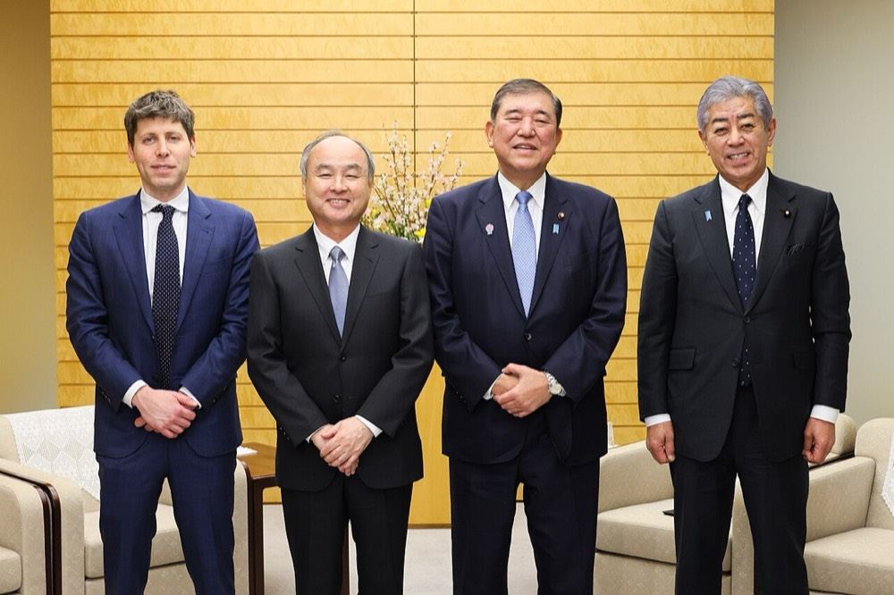
首相官邸で石破茂首相と面会する孫正義とサム・アルトマン（2025年2月3日、首相官邸撮影）首相官邸ホームページ / Office of the Prime Minister of Japan Official Website / CC BY 4.0 / Wikimedia Commons
OpenAIへの集中と買収
2025年、SBGはOpenAIの資金調達を主導した。同時に半導体とロボット、データセンターの会社を相次いで買った。孫はこの組み合わせを、ASIに必要な層をすべて持つための投資と説明している。
2025年3月19日67歳─（米サンタクララの本社は維持）
Ampereを65億ドルの全額現金で買う
SBGは、アーム系のサーバー用チップを設計するAmpere Computingを65億ドルの全額現金で買収すると発表した。株主はカーライル59.65%、オラクル32.27%、アーム8.08%だった。スターゲートとクリスタル・インテリジェンスを支える半導体の設計力を、アームの設計と組み合わせる狙いと説明された。孫は声明で、人工超知能の未来には飛躍的な計算能力が必要だと述べた。買収は11月に完了した。382383
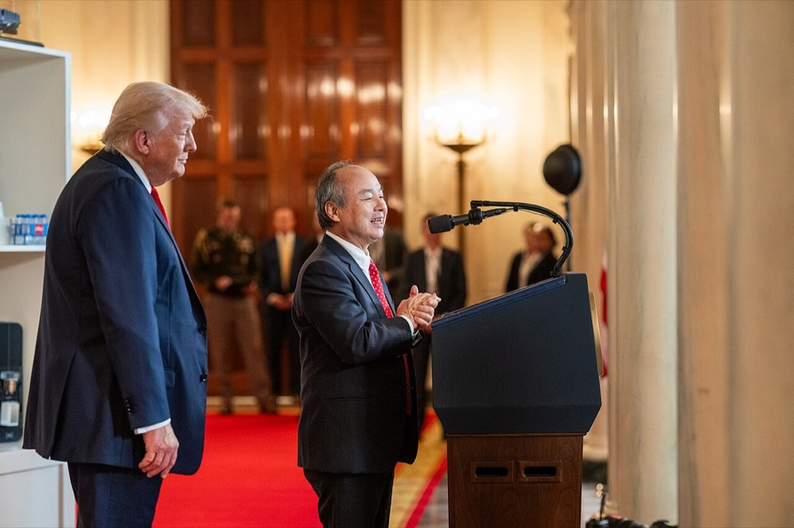
ホワイトハウスの対米投資の行事で演説する孫正義と、後方のトランプ大統領（2025年4月30日、ホワイトハウス撮影）The White House / Public domain / Wikimedia Commons
2025年3月31日67歳─
OpenAIの400億ドルの調達を主導する
OpenAIはSBG主導で400億ドルを調達し、調達後の評価額は3,000億ドルとなった。半年前の評価額の約1.9倍である。SBGは4月に100億ドル、12月に300億ドルを払い込む計画だった。OpenAIが年内に営利企業へ移行しなければ、出資額は200億ドルに減る条件が付いた。SBGは100億ドルを他の投資家に割り当てる予定で、実質の負担は最大300億ドルとされた。372384
OpenAIの評価額（2024〜2026年）
単位：億ドル。いずれも資金調達時の調達後評価額
2024年10月1,570億ドル
2025年3月 SBG主導の400億ドル調達3,000億ドル
2026年初め 1,220億ドルの調達8,520億ドル
2025年6月20日67歳米アリゾナ州（構想地）
1兆ドルの「クリスタル・ランド」構想
孫は中国の深圳に匹敵するAIとロボットの製造拠点をアリゾナに建設する構想を、TSMCやサムスンとトランプ政権に持ちかけたとBloombergは報じた。社内の呼称は「プロジェクト・クリスタル・ランド」で、総額は1兆ドルとされた。孫はビジョン・ファンドが投資するロボット企業について、工場を置く候補先の一覧を自ら作成した。TSMCに近い関係者は、同社のアリゾナ計画には影響しないと述べた。380
2025年6月27日67歳東京 SBG第45回定時株主総会
4.8兆円で超知能の「胴元」になる
孫は、ASIの時代に世界一のプラットフォーマーになると宣言し、日本語で平易に言えば胴元のような存在だと説明した。OpenAIへの投資は既投資分と年内予定分で4.8兆円に達し、未上場企業への投資として歴史上最大規模だと述べた。赤字の未上場企業に今このタイミングで投資することは並大抵の勇気ではないとも語った。386387
17歳の時に雑誌でマイクロチップの拡大写真を見て衝撃を受け、下敷きに挟んで持ち歩いた話も披露した。後継者については、頭の中で何人か絞っており、グループの中にいると答えた。386387
私はこのASIの世界にオールイン、つまり全力を賭けています孫正義、2025年6月27日の株主総会
私の性格上、一番でなければ嫌なのです孫正義、2025年6月27日の株主総会
2025年7月16日67歳東京 SoftBank World 2025 特別講演
1人が1,000のAIエージェントを使う構想
孫は、AIエージェントが自律的に動く社会が近づいていると述べた。グループ内で年内に10億のエージェントを稼働させ、社員1人が約1,000のエージェントを部下のように使う構想を示した。エージェント1体の費用は月40円と試算した。人間がプログラミングをする時代は終わるとも語っている。388
2025年8月18日68歳─（米国時間の取引終了後に発表）
辞任を迫られたCEOのIntelに20億ドル
SBGはIntelの普通株を1株23ドルで20億ドル分、8,700万株取得する契約を結んだ。数日前、トランプ大統領は中国企業との関係を理由に、IntelのリップブータンCEOに辞任を求めていた。タンは2022年までSBGの取締役で、孫とは数十年来の関係にある。孫は声明で、先端半導体の製造は米国で拡大し、Intelが重要な役割を担うと述べた。発表後、Intel株は時間外取引で5%超上がった。389390391
Intel株は2026年6月30日に139.63ドルとなり、保有分の価値は121億4,200万ドル、取得額の約6.1倍になった。392247
2025年10月8日68歳─（スイスABBとの合意）
ABBのロボット事業を買い、「次はフィジカルAI」
SBGはスイスABBのロボット事業を53億7,500万ドルで買収することで合意した。ABBは同事業の分離上場の計画を取りやめた。従業員は約7,000人で、累計の出荷台数は50万台を超える。買収の前に、SBGはグループ内に散っていた約20社のロボット関連の投資を中間持株会社にまとめている。孫は、ソフトバンクの次のフロンティアはフィジカルAIだと声明を出した。393394395
2025年12月29日68歳─
データセンター投資会社DigitalBridgeを約40億ドルで買う
SBGは、デジタル基盤に投資するDigitalBridgeを1株16ドルの現金で買収すると発表した。企業価値は約40億ドルで、直前の終値に対するプレミアムは15%だった。同社はデータセンター会社のバンテージや通信網のザヨを傘下に持ち、運用資産は約1,080億ドルある。AIを動かす基盤を建設し、資金を付け、拡大する力を広げる狙いと説明した。396
2025年に決めた買収・出資の額
単位：億ドル。灰色は比較のためのOpenAIへの追加出資
Ampere Computing（3月、全額現金）65億ドル
ABBのロボット事業（10月）53億7,500万ドル
DigitalBridge（12月、企業価値）約40億ドル
Intel（8月、1株23ドル）20億ドル
クリスタル・インテリジェンスの導入費（年額）年30億ドル
OpenAIへの追加出資（2026年）300億ドル
NVIDIA株の売却とトランプとの距離
買収と出資の資金は、20年かけて集めた保有株を売って作られた。その最後に売られたのが、孫が最も惜しんだNVIDIA株だった。
2025年10月68歳東京 米国大使公邸（ゴルフ場は特定できない）
トランプと組んでゴルフ大会に優勝する
10月28日、トランプ大統領は東京の米国大使公邸で日米の経営者を集めた非公開の夕食会を開いた。トランプは冒頭でSBGに謝意を述べ、マサは来ているか、どこだと呼びかけた。そして前の週に孫とゴルフをし、プロのブライソン・デシャンボーと同じ組で36組が出た大会に優勝したと披露した。398399
トランプは孫がすべてのパットを沈めたと称え、孫は会場から22アンダーだった、イーグルが4つだったと応じた。トランプは、執務机の優勝トロフィーが1つ増えたと述べた。夕食会は、7月の日米関税合意に基づく対米投資の文書に署名した後に開かれた。398
彼はすべてのパットを沈めたドナルド・トランプ、2025年10月28日の東京での夕食会（英語での発言）
2025年11月11日68歳東京 SBG決算説明会
NVIDIA株を全株売っていたと開示する
SBGは10月にNVIDIA株3,210万株をすべて売却し、58億3,000万ドルを得たと開示した。説明したのはCFOの後藤芳光で、孫は会見に出なかった。後藤は、売却はNVIDIAの評価とは無関係で、OpenAIやスターゲートなど新たなAI投資に充てると述べた。ビジョン・ファンドは2017年に約40億ドル分のNVIDIA株を取得し、2019年2月に全株を売った後、買い直していた。市場では、大口のAI投資家による弱気の合図と受け止める見方も出た。400395286
同じ年度にSBGはT-Mobile株7,540万株を162億5,000万ドル、Deutsche Telekom株の全部を7億3,000万ドルで売った。3銘柄で調達した額は合計3兆4,358億円である。395
2025年度に売却した保有株とOpenAIへの追加出資
単位：億ドル
T-Mobile株 7,540万株162億5,000万ドル
NVIDIA株 全株58億3,000万ドル
Deutsche Telekom株 全株7億3,000万ドル
OpenAIへの追加出資（比較）300億ドル
3銘柄の売却で合計3兆4,358億円を調達した。T-Mobile株の一部は、2023年12月にSprint合併の条件達成で追加取得した4,875万株（75億9,100万ドル相当）にあたる。
3954003683972025年12月1日68歳東京 FII Priority Asia
「NVIDIA株を売る時、私は泣いていた」
NVIDIA株の売却が市場に動揺を広げた後、孫は初めて公の場でその理由を語った。OpenAIなどへの投資に現金が必要だったためで、資金が無限にあれば売らなかったと述べた。NVIDIAを非常に尊敬しており、1株も売りたくなかったと続けた。2018年に登壇を取り消したFIIの、東京で開かれた会議での発言だった。401
NVIDIA株をめぐる金額
対数目盛。単位はドル。逃した利益は第三者の試算
2017年の取得額（約4.9%）約40億ドル
2019年2月の全売却での実現益33億ドル
2025年10月の全売却額58億3,000万ドル
持ち続けていれば得られた利益（Fortune）1,500億ドル超
10億ドル100億ドル1,000億ドル1兆ドル
別の第三者試算は、2017年の持分を保有し続けた場合の価値を約20兆円としている。
286371400NVIDIA株を売る時、私は泣いていた孫正義、2025年12月1日のFII Priority Asia（英語での発言）
2026年1月68歳米国
トランプ大統領図書館への5,000万ドルと10GWの用地
SBGは2026年1月、トランプ大統領図書館の財団に5,000万ドルを寄付した。2か月後の3月20日、米エネルギー省と商務省との官民連携で、連邦の所有地に最大10GWの電力を使うデータセンターを建設できることが発表された。オハイオ州パイクトンの冷戦期のウラン濃縮施設の跡地で、9.2GW級のガス火力発電を併設する計画である。402395403
上院議員らは、過去の大統領図書館への寄付が退任後だったのに対し、今回は在任中の寄付だと問題視して照会した。SBGは寄付の事実を書面で認め、従来の慣行に沿うと説明したが、時期については直接答えていない。寄付と用地の決定の対価関係は立証されていない。402
2026年2月24日68歳東京 SBG本社39階のペントハウス
TIMEの記者を自ら設計した和室で迎える
取材の場は、松材の羽目板で日本の古い村を模した本社39階の部屋で、窓からは江戸時代の庭園が見えた。孫は、自分が設計したと述べた。タートルネックにスラックス姿の孫は、ChatGPTの回答はより速く、正確で詳しいと語った。AIバブル論には、皆が目を覚まさなければならない、これはバブルではないと反論した。過去の強気一辺倒の姿勢については、恥じている、自分は非常に強気だったと述べた。404
同じ取材で、NVIDIA株の売却を胸が張り裂ける思いだったと振り返っている。この月、SBGはOpenAIへの300億ドルの追加出資を約束した。2026年に100億ドルずつ3回に分けて払い込む。404397405
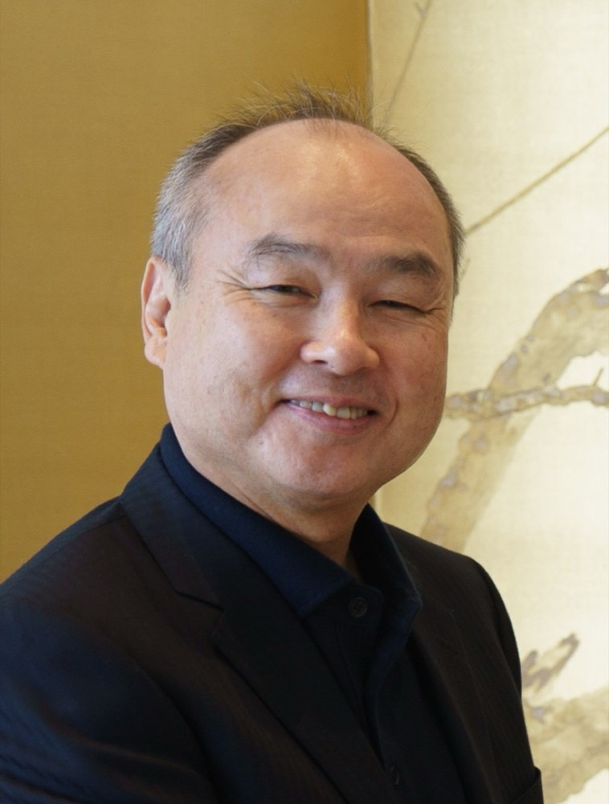
東京のソフトバンクグループ本社での孫正義（2025年5月12日、欧州委員会撮影）European Communities, 2025 / EC - Audiovisual Service / CC BY 4.0 / Wikimedia Commons
これはバブルではない孫正義、2026年2月のTIMEの取材（英語での発言）
過去最高のNAVと借入
2026年、OpenAIの評価額は8,520億ドルに達し、SBGは過去最高の利益とNAVを計上した。同じ年、会社と孫個人の価値はアームの株価に合わせて大きく上下した。
2026年3月68歳─
400億ドルのブリッジローンを組む
SBGは30を超える金融機関から総額400億ドルのブリッジローンを組成し、4〜6月期に200億ドルを引き出した。アーム株を担保にしたマージンローンは200億ドル、貸し手は41金融機関の規模になった。8月にはOpenAI株の価値を参照する100億ドルのファイナンスを結んだ。CFOの後藤は、OpenAI株そのものは担保に差し入れていないと述べた。2403
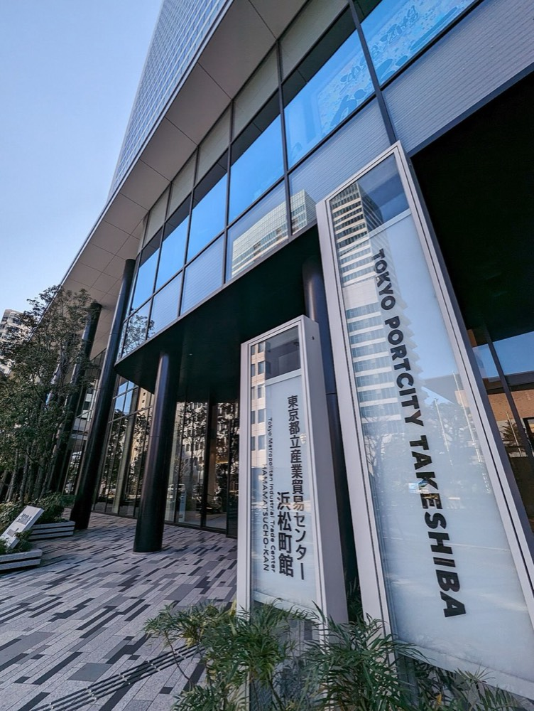
2020年に本社を移した東京ポートシティ竹芝（2024年撮影）Syced / CC0 / Wikimedia Commons
2026年5月68歳東京 SBG決算発表
純利益5兆22億円、うちOpenAI関連6兆7,304億円
2026年3月期の親会社帰属の純利益は5兆22億円で過去最高だった。投資損益7兆2,865億円のうち、OpenAI関連が6兆7,304億円を占めた。ただしこの利益は非上場株の評価益で、現金は伴っていない。営業キャッシュフローは4,288億円のマイナス、財務キャッシュフローは6兆3,773億円のプラスである。395268
親会社の所有者に帰属する純損益（2023年3月期〜2026年3月期）
単位：億円。右が利益、左が損失
2023年3月期−9,701億円
2024年3月期−2,276億円
2025年3月期+約1兆1,500億円
2026年3月期+5兆22億円
2025年3月期は兆円単位の値（1.15兆円）を億円に直した概数。2026年3月期の投資損益7兆2,865億円のうち、OpenAI関連が6兆7,304億円を占める。
3423603843952026年3月期の利益と現金の流れ
単位：億円。右がプラス、左がマイナス
親会社帰属の純利益+5兆22億円
うちOpenAI関連の投資利益+6兆7,304億円
営業キャッシュフロー−4,288億円
財務キャッシュフロー+6兆3,773億円
利益の大半は非上場株の評価益で、現金は借入と社債で調達している。
3952682026年6月1日68歳─（CNBCの取材）
「ASIはあと2年で来る」
孫は、AIがOpenAIの次のモデルの設計に関わっていることを超知能の兆しと捉えた。2024年に10年以内としたASIの到来時期について、人々を驚かせないよう控えめに言っていたと述べた。そして今はあと2年で来ると言っていると語った。自らはChatGPTを1日2〜3時間使っていると明かした。AI革命の規模はドットコム革命の50倍だとも述べている。406407
今は、あと2年で来ると言っている孫正義、2026年6月のCNBCの取材（英語での発言）
2026年6月2日68歳─
個人資産が1,007億ドルに達する
Forbesは5月22日の年次番付で、孫の純資産を800億ドルとし、5年ぶりに日本1位とした。前年から518億ドル、184%増えていた。6月2日にはリアルタイムの番付で1,007億ドルに達し、アジアで最も裕福な人物と報じられた。同じ時期、SBGの時価総額はトヨタを上回った。孫はSBG株を資産管理会社分と合わせて約31.8%保有している。408409395
2026年6月24日68歳東京国際フォーラム SBG第46回定時株主総会
卓球を根拠に引退を70代へ延ばす
68歳の孫は、19歳で立てた人生50年計画で60代に事業を引き継ぐとしていた方針を改め、70代までの延長を表明した。あと10年か15年は頑張ると述べ、70代をASIの実現にあてるとした。健康の根拠として、若手社員3人が交代で相手をし、自分は1人で約1時間半続けて卓球をしていると語った。ChatGPTは毎日10回から20回使い、週末は1時間も2時間もAIと語り合っているという。410411412
AIバブル論は、始まったばかりの産業への侮辱だと退けた。通信子会社ソフトバンクが東京電力ホールディングスとの資本提携を交渉していることも明かし、実現すればAIデータセンター向けの電力の制約を解消できると述べた。413414411
欲が出てきました。まだ元気。人生計画を70代まで延長する孫正義（68歳）、2026年6月24日の株主総会
2026年6月24日68歳東京国際フォーラム SBG第46回定時株主総会
父の最期の言葉とNAV1,000兆円
孫は総会で、父・孫三憲の最期の言葉を紹介した。虎は死して皮を残す、人は死して名を残す、という言葉である。同じ総会で、NAVを16年後に1,000兆円にする目標を示した。当時のNAVは74兆円で、14倍に相当する。孫は、株価6,500円に対し、保有株から借入を差し引いた実質的な価値は1株1万3,000円あると説明した。この16年でNAVは3兆円から74兆円になったとも述べている。410
虎は死して皮を残す、人は死して名を残す孫三憲（孫正義の父）の最期の言葉、2026年6月24日の株主総会で紹介
2026年8月6日68歳東京 SBG決算説明会
NAV72.3兆円、同じ資料に58.3兆円
6月30日時点のNAVは72.3兆円で過去最高、1株当たりでは12,686円だった。同じ資料には8月5日時点のプロフォーマのNAV58.3兆円も載った。差は14.0兆円で、アームのADSの価格が6月30日の354.57ドルから8月5日に274ドルへ下がったことによる。保有株式の価値の84.5%はアームとビジョン・ファンド2が占めている。CFOの後藤は、短期の変動に一喜一憂しないと述べた。2415268403
孫個人の資産も同じ期間に動いた。Forbesの集計では、8月18日の純資産は698億ドルで世界27位となり、6月2日から309億ドル減った。409
株主価値（NAV）の推移
単位：兆円。最後の1本は会社が同じ資料で示した8月5日時点のプロフォーマ値
2022年3月末18.5兆円
2023年3月末14.1兆円
2024年3月末27.8兆円
2025年3月末25.7兆円
2026年3月末40.06兆円
2026年6月末72.3兆円
2026年8月5日（プロフォーマ）58.3兆円
孫は2026年6月の株主総会で、16年後にNAVを1,000兆円にする目標を示した。
3602415410保有株式価値の構成（2026年6月30日、調整後）
単位：兆円。合計83.11兆円
- Arm 49.91兆円60%
- SVF2（実質はOpenAI中心） 19.29兆円23%
- その他 6.51兆円8%
- SVF1 3.60兆円4%
- ソフトバンク株式会社 2.79兆円3%
- LatAm Funds 1.00兆円1%
1年前の2025年6月末はArmが19.83兆円、SVF2が5.86兆円、T-Mobileが2.20兆円だった。
268孫正義の個人資産（2022〜2026年）
単位：億ドル。2022年はBloombergの債務控除後の値、2026年はForbesの集計
2022年11月（SBGへの債務47億ドルを控除後）約127億ドル
2026年5月22日（日本1位）800億ドル
2026年6月上旬（ピーク）1,007億ドル
2026年8月18日698億ドル
3年半で約8倍になり、その後の2か月半で309億ドル減った。孫はSBG株の約31.8%を実質的に保有している。
3554084093952026年10月
2026年10月、OpenAIへの払い込みが完了した。同じ月、資金の調達先は湾岸とアジアに広がり、孫はAIの危険について発言した。
2026年10月2日69歳─
OpenAIへの300億ドルの払い込みを終える
SBGはビジョン・ファンド2を通じて、OpenAIへの300億ドルの追加出資の最後の100億ドルを払い込んだ。OpenAIの1,220億ドルの調達でアマゾン、NVIDIAと並ぶ中核の出資者となり、評価額は8,520億ドルとされた。資金の一部は9月の111億ドルのハイイールド債で賄い、ブリッジローンの未使用枠100億ドルは解約した。累計の投資額は646億ドル、持分は約13%とされる。3854169
SBGのOpenAIへの投資額
単位：億ドル。累計投資額は2026年10月の払い込み完了時点
2024年9月 最初の投資（累計）22億ドル
2025年3月 ラウンドでの実質負担（最大）最大300億ドル
2026年 追加出資（100億ドル×3回）300億ドル
累計投資額（2026年10月）646億ドル
2026年6月30日の簿価446億ドル
2026年6月30日の公正価値896億ドル
2026年10月4日69歳京都 STSフォーラム（科学技術と人類の未来に関する国際フォーラム）
「誤った者の手に渡れば非常に危険」
AI投資を最も強く進めてきた孫が、超知能が誤った者の手に渡れば非常に危険だと警告した。各国が信頼関係を築き、急速に進むAIを共同で管理すべきだと訴えた。開発の停止は求めていない。同じ日、17か国がAIで科学を加速する非拘束の「京都ビジョン」に賛同した。報道はこれを異例の慎重論と位置づけた。発言の日本語の原文は確認できておらず、英語の報道の要約に基づく。417418
2026年10月9日69歳─
湾岸から最大1,000億ドル、過去最高利回りのジャンク債
FTは、SBGが借入コストの上昇に直面し、AI投資を広げるため湾岸の投資家から最大1,000億ドルを集めようとしていると報じた。続いてSBGは過去最高の利回りで約110億ドルのジャンク債を発行したと報じられた。Japan Timesは、AIへのオールインの成果を示す圧力が孫に強まっていると論じた。419420
2026年の資金調達と調達構想
単位：億ドル。湾岸からの調達は報道された構想で、実行額ではない
ブリッジローンの組成額（3月、30金融機関超）400億ドル
うち第1四半期に引き出した額200億ドル
Arm株を担保にしたマージンローン200億ドル
ハイイールド債（9月）111億ドル
OpenAI株の価値を参照するファイナンス（8月）100億ドル
湾岸の投資家からの調達構想（FT報道）最大1,000億ドル
10月に報じられた約110億ドルのジャンク債と9月のハイイールド債が同じ発行を指すかは、出典からは特定できない。ブリッジローンの未使用枠100億ドルは解約された。
24033854194202026年10月24日69歳マレーシア（ビデオ会議）
アンワル首相が「孫氏が投資候補地を選んだ」と公表
アンワル首相は、孫がその週のビデオ会議で、AIとデータセンターを中心とする500億ドルの投資の候補地を選んだと公表した。候補はサラワク州クチンと半島部である。SBGは10月8日に、配車大手グラブとサラワク州営石油会社PETROSと、同州でのAI基盤の検討について枠組み合意を結んでいた。SBGはCNBCの取材にすぐには回答せず、500億ドルという額も確認していない。421422
結失敗の一覧と金額Failures, Counted in Dollars
本文の13章には失敗の場面も含めたが、時代をまたいで並べると金額の偏りが分かる。
失った額の大きい案件は2019年以降に集中し、その多くは長期リースや工場や車両のように、売上より先に固定費が積み上がる事業だった。
主な損失案件の金額
単位：億ドル。WeWorkは累計損失、DiDiは2026年6月末の含み損を示す。キングストンは取得額と売却額の差で、その他は投じた額の全額を失った案件である
WeWork（2019〜2023年）143億ドル
DiDi（含み損）89億ドル
SB Northstar（2020〜2022年）60〜70億ドル
Katerra（2021年清算）20億ドル超
OneWeb（2020年破産）約20億ドル
Greensill（2021年破綻）15億ドル
View（2024年破産）11億ドル
キングストン（1996〜1999年）10.5億ドル
Zume Pizza（2023年閉鎖）3.75億ドル
FTX（2022年）1億ドル弱
SB Northstarは報道の60〜70億ドルの中央値で棒を描いた。このうち孫個人の損失は13億ドルとされる。キングストンは80%を15億ドルで取得し、3年後に4.5億ドルで創業者に売り戻した。
283331247101最大の損失はWeWorkの143億ドルで、2位のDiDiの含み損89億ドルの1.6倍にあたる。
孫は2023年にこの投資を「人生の汚点」と呼び、一部の役員や社員の忠告が何度もあったと認めている362。
一方でOneWebには追加出資をせず、2020年に破産させた331。
WeWorkは上場撤回後に約95億ドルを追加しており、同じ時期の2社への対応は正反対だった283。
1996年のキングストン・テクノロジーは、2019年以降の失敗と同じ形をしている。
メモリ需要が伸びるという読みは当たったが、市況で値段が上下する製造業を借入で買い、3年後に3割の値段で手放した101。
孫の損失の大半は、銘柄の選び方ではなく、借入の期間と事業の回収期間が一致しない買い方から生じている。
ビジョン・ファンドの元本と現在価値（2026年3月31日）
単位：億ドル。灰色が取得原価、青が公正価値または回収額
SVF1 取得原価878億ドル
SVF1 公正価値＋回収1,144億ドル
SVF2 取得原価977億ドル
SVF2 公正価値＋回収1,187億ドル
SVF2 売却済み案件の原価108億ドル
SVF2 売却済み案件の回収額65億ドル
SVF2の評価益のうち約450億ドルはOpenAI1社による。OpenAIを除くとSVF2は約230億ドルの損失になる。実際に売って現金にした案件だけを見ると、1ドルの投資が0.60ドルで戻っている。
423ビジョン・ファンドの成績は、評価額で見るか回収額で見るかで結論が異なる。
評価額で見れば2本のファンドはどちらも元本を上回っている。
しかし2号ファンドで実際に売却した案件は、原価108億ドルに対して回収65億ドルだった423。
孫正義の個人資産の増減
単位：億ドル。薄い色の棒は、3説ある2000年2月の値のうち最大値で描いた
2000年2月（ピーク）685億〜780億ドル
2000年6月194億ドル
2026年5月22日800億ドル
2026年6月上旬（ピーク）1,007億ドル
2026年8月18日698億ドル
2000年はForbes集計。ギネス世界記録は2000年の1年間の減少額を585億ドルとし、個人資産の減少額の世界記録としている。2026年はForbesのリアルタイム集計で、2か月で309億ドル動いた。
11310331409408個人資産は2000年と2026年に2度、1,000億ドル近くまで膨らんだ。
1度目は4か月で約4分の1になった。
2度目は2026年6月から8月の2か月で、1,007億ドルから698億ドルへ3割減っている409。
2度とも、資産の大半が1つか2つの銘柄の株価に依存していた点は共通している。
お金が向かった先 — 主要案件の所在地と投じた額
円の面積が投資額に比例する。円建て案件は当時の為替で概算換算した。いちばん小さい点のアリババが、後に最大のリターンを生んだ
- Arm 約320億ドル（2016年）
- Sprint 216億ドル（2013年）
- OpenAI 累計646億ドル（予定込み）
- ボーダフォン日本 1兆7,500億円≒150億ドル（2006年）
- WeWork 累計約160億ドル
- DiDi 121億ドル
- Uber 77億ドル（2018年）
- Ampere 65億ドル（2025年）
- ABB ロボティクス 53.75億ドル（2025年）
- Coupang 約30億ドル
- Flipkart 25億ドル
- Ziff-Davis 21億ドル（1995年）
- アリババ 2,000万ドル（2000年）
出典は本文の各章。Armは240億ポンドを2016年7月時点の約1.33ドル/ポンドで換算、ボーダフォン日本は1ドル約117円で換算した概算。OpenAIは2026年10月までの払込予定を含む
人孫正義を動かした人々The People Around Him
本文に登場した人物を、最初の決定的な接点の年で並べた。
恩人の多くは1973年から1988年の15年間に集中し、交渉相手は1995年前後と2016年前後の2つの時期に集中している。
出会いの年表 — 孫正義を動かした人々
点は本文で扱った最初の決定的な接点の年。横軸は西暦
恩人の段に並ぶ人物には共通点がある。いずれも孫が無名で、資金も取引先もない時期に会っている。
藤田田は16歳の高校生に15分を割き、佐々木正は自分の退職金と自宅を担保に入れる用意があると銀行に伝えた。
浄弘博光は取引実績のない会社に新店の独占供給を任せている。
孫は2014年に佐々木の白寿を幹部総出で祝い、挨拶の途中で涙を流した35。
経営陣の段では、外部から招いた人物の在任が短い。
1983年に社長に招いた大森康彦とは対立し、約3年で孫が社長に復帰した。
2014年に招いたニケシュ・アローラは2年で退任し、同じ年に入社したアロック・サマも数年で会社を離れた。
長く残ったのは、宮内謙のように病床の孫と会って入社を決め、まだ小さかった会社に加わった人物である。宮内は1984年10月に入社し、後にソフトバンクの社長を務めた66。
交渉相手の段にある2つの集中は、孫の生涯で現金が最も大きく動いた2つの時期に重なる。
1995年前後は店頭公開で得た調達力を使って米国の見本市と雑誌とYahoo!を買った時期であり、
2016年前後はArmの買収とビジョン・ファンドの組成が重なった時期である。
録本文に出た発言Quotes Used in This Page
本文に引用した発言126件を、出てきた順に並べた。発言者と時点は本文の記述に従い、出典は本文側の上付き番号で確認できる。
両目で見ながら食べたらおいしいんだろうなと思いましたよ
豆腐のように1丁（兆）、2丁（兆）と数えるようにしたい
これだけで僕はコムデックスを買う価値があったと思うんだ
われわれはアマゾン株を20パーセントもてていたかもしれない
市場がその悩みを解決してくれて、心配事がなくなった
ケータイがインターネットマシンとなる歴史的な日です
髪の毛が後退しているのではない。私が前進しているのである
おそらく私の人生で一番大切なスピーチになるでしょう
マサ、正直に言うけど、俺はやっぱり10年も待てない
私からの東京土産として1兆ドルほどプレゼントしたい
45分で450億ドル、1分で10億ドルか。まあ悪くないな
彼は若い頃の自分を見てるような気にさせてくれる唯一の人物なんだ
大量の資金を与えれば、誰にも行く手を阻むことなんかできませんよ
チャーター株が600ドルなら、いくら払うことになります？
資本の大砲を向けられるくらいなら、うしろから支援してもらうほうがいい
いつだってコックよりハンターに価値を置いてるんです
日本はAI後進国になった。手遅れではないが目を覚ませ
コロナの谷にユニコーンが落馬している状況で大変な危機です
私はこのASIの世界にオールイン、つまり全力を賭けています
欲が出てきました。まだ元気。人生計画を70代まで延長する
典出典Sources
本文の上付き番号はこの一覧に対応する。書籍は電子版の位置を示した。『300年王国』は519ページ中のページ番号、『右腕が見た孫正義』は進捗の百分率である。
いずれも画面単位で取得したため、前後2〜3ページの幅がある。
- arp-nt「ソフトバンク 孫正義」物語（梶谷通稔による連載） — https://arp-nt.co.jp/rensai2/sono001/
- SBG 2026年度第1四半期 決算説明会 財務セクション — https://group.softbank/media/Project/sbg/sbg/pdf/ir/presentations/2026/investor-finance_q1fy2026_01_en.pdf
- 杉本貴司『孫正義 300年王国への野望』日本経済新聞出版社、2017年。電子版 519ページ中 17ページ
- 幻冬舎ゴールドオンライン（1994年の株式公開） — https://gentosha-go.com/articles/-/75967
- Forbes 1999年7月5日号（Yahoo!出資の場面、Jerry Yangの証言） — https://www.forbes.com/forbes/1999/0705/6401146a.html
- 96ut.com ソフトバンク株価時系列（2000年・2002年） — https://96ut.com/stock/jikei.php?code=9984&year=2000
- SBG プレスリリース 2006年3月17日 ボーダフォン日本法人買収 — https://group.softbank/en/news/press/20060317
- SBG プレスリリース 2016年7月18日 ARM買収 — https://group.softbank/en/news/press/20160718
- SBG 2026年度第1四半期 決算説明会 SVFセクション — https://group.softbank/media/Project/sbg/sbg/pdf/ir/presentations/2026/investor-svf_q1fy2026_01_en.pdf
- 日経BOOKプラス ライオネル・バーバー『勝負師 孫正義の冒険』抜粋 — https://bookplus.nikkei.com/atcl/column/070400543/070400002/
- 杉本貴司『孫正義 300年王国への野望』日本経済新聞出版社、2017年。電子版 519ページ中 509ページ
- アロック・サマ『右腕が見た孫正義 「クレイジー」が世界を変える瞬間』光文社、2026年。電子版 位置 42%（原著 Alok Sama, The Money Trap, 2024）
- Smart FLASH（担任教師らの証言） — https://smart-flash.jp/lifemoney/61859/
- 杉本貴司『孫正義 300年王国への野望』日本経済新聞出版社、2017年。電子版 519ページ中 514ページ
- 日経ビジネス 孫正義インタビュー（2015年7月17日初出、2019年5月28日再編集） — https://business.nikkei.com/atcl/seminar/19/00059/052400004/
- 致知 1989年11月号 孫正義インタビュー（致知出版社ウェブ） — https://www.chichi.co.jp/web/20180722sonn-1/
- 杉本貴司『孫正義 300年王国への野望』日本経済新聞出版社、2017年。電子版 519ページ中 300ページ
- 杉本貴司『孫正義 300年王国への野望』日本経済新聞出版社、2017年。電子版 519ページ中 425ページ
- アロック・サマ『右腕が見た孫正義 「クレイジー」が世界を変える瞬間』光文社、2026年。電子版 位置 23%（原著 Alok Sama, The Money Trap, 2024）
- 杉本貴司『孫正義 300年王国への野望』日本経済新聞出版社、2017年。電子版 519ページ中 503ページ
- NEWSポストセブン（佐野眞一『あんぽん 孫正義伝』に基づく記事） — https://www.news-postseven.com/archives/20120103_78632.html
- 杉本貴司『孫正義 300年王国への野望』日本経済新聞出版社、2017年。電子版 519ページ中 33ページ
- 杉本貴司『孫正義 300年王国への野望』日本経済新聞出版社、2017年。電子版 519ページ中 385ページ
- PRESIDENT Online 井上篤夫『志高く 孫正義正伝 決定版』に基づく連載 — https://president.jp/articles/-/82936
- logmi トビタテ！留学JAPAN 第1期派遣留学生壮行会（2015年3月1日） — https://logmi.jp/main/career/55092
- 杉本貴司『孫正義 300年王国への野望』日本経済新聞出版社、2017年。電子版 519ページ中 53ページ
- logmi 孫 正義 LIVE 2011（2010年3月29日、東京国際フォーラム） — https://logmi.jp/knowledge_culture/speech/12482
- 杉本貴司『孫正義 300年王国への野望』日本経済新聞出版社、2017年。電子版 519ページ中 122ページ
- TechNode 2021年4月27日 Hong Lu（陸弘亮）インタビュー — https://technode.com/2021/04/27/an-interview-with-co-founder-of-ut-starcoms-lu-hong/
- 杉本貴司『孫正義 300年王国への野望』日本経済新聞出版社、2017年。電子版 519ページ中 519ページ
- アロック・サマ『右腕が見た孫正義 「クレイジー」が世界を変える瞬間』光文社、2026年。電子版 位置 48%（原著 Alok Sama, The Money Trap, 2024）
- 杉本貴司『孫正義 300年王国への野望』日本経済新聞出版社、2017年。電子版 519ページ中 14ページ
- 杉本貴司『孫正義 300年王国への野望』日本経済新聞出版社、2017年。電子版 519ページ中 125ページ
- NetIB-News 佐々木正 追悼記事 — https://www.data-max.co.jp/article/644
- 杉本貴司『孫正義 300年王国への野望』日本経済新聞出版社、2017年。電子版 519ページ中 10ページ
- WIRED.jp 佐々木正 追悼記事 — https://wired.jp/2018/02/04/rip-rocket-sasaki/
- 杉本貴司『孫正義 300年王国への野望』日本経済新聞出版社、2017年。電子版 519ページ中 199ページ
- PHPオンライン衆知（みかん箱の演説） — https://shuchi.php.co.jp/article/8367
- 杉本貴司『孫正義 300年王国への野望』日本経済新聞出版社、2017年。電子版 519ページ中 128ページ
- 杉本貴司『孫正義 300年王国への野望』日本経済新聞出版社、2017年。電子版 519ページ中 131ページ
- 電気通信事業者協会 提出 孫正義 略歴書 — https://www.tca.or.jp/press_release/pdf/110311son.pdf
- 杉本貴司『孫正義 300年王国への野望』日本経済新聞出版社、2017年。電子版 519ページ中 134ページ
- 杉本貴司『孫正義 300年王国への野望』日本経済新聞出版社、2017年。電子版 519ページ中 138ページ
- 杉本貴司『孫正義 300年王国への野望』日本経済新聞出版社、2017年。電子版 519ページ中 141ページ
- 杉本貴司『孫正義 300年王国への野望』日本経済新聞出版社、2017年。電子版 519ページ中 144ページ
- アサ芸プラス（上新電機 浄弘博光との交渉） — https://www.asagei.com/excerpt/7522
- 杉本貴司『孫正義 300年王国への野望』日本経済新聞出版社、2017年。電子版 519ページ中 147ページ
- 杉本貴司『孫正義 300年王国への野望』日本経済新聞出版社、2017年。電子版 519ページ中 151ページ
- 杉本貴司『孫正義 300年王国への野望』日本経済新聞出版社、2017年。電子版 519ページ中 153ページ
- 杉本貴司『孫正義 300年王国への野望』日本経済新聞出版社、2017年。電子版 519ページ中 157ページ
- 杉本貴司『孫正義 300年王国への野望』日本経済新聞出版社、2017年。電子版 519ページ中 160ページ
- FundingUniverse ソフトバンク社史（1980年代の年次数値） — https://www.fundinguniverse.com/company-histories/softbank-corp-history/
- NEWSポストセブン（佐野眞一のインタビュー。孫姓での起業への親戚の反対） — https://www.news-postseven.com/archives/20120104_78634.html
- 杉本貴司『孫正義 300年王国への野望』日本経済新聞出版社、2017年。電子版 519ページ中 163ページ
- 杉本貴司『孫正義 300年王国への野望』日本経済新聞出版社、2017年。電子版 519ページ中 166ページ
- 杉本貴司『孫正義 300年王国への野望』日本経済新聞出版社、2017年。電子版 519ページ中 7ページ
- 杉本貴司『孫正義 300年王国への野望』日本経済新聞出版社、2017年。電子版 519ページ中 170ページ
- ダイヤモンド・オンライン（慢性肝炎と虎の門病院） — https://diamond.jp/articles/-/352212
- 杉本貴司『孫正義 300年王国への野望』日本経済新聞出版社、2017年。電子版 519ページ中 173ページ
- 杉本貴司『孫正義 300年王国への野望』日本経済新聞出版社、2017年。電子版 519ページ中 176ページ
- 杉本貴司『孫正義 300年王国への野望』日本経済新聞出版社、2017年。電子版 519ページ中 179ページ
- 杉本貴司『孫正義 300年王国への野望』日本経済新聞出版社、2017年。電子版 519ページ中 182ページ
- 杉本貴司『孫正義 300年王国への野望』日本経済新聞出版社、2017年。電子版 519ページ中 186ページ
- マネー現代 ソフトバンクキャリアLIVE（2018年6月）の講演録 — https://gendai.media/articles/-/56034
- 杉本貴司『孫正義 300年王国への野望』日本経済新聞出版社、2017年。電子版 519ページ中 230ページ
- 杉本貴司『孫正義 300年王国への野望』日本経済新聞出版社、2017年。電子版 519ページ中 189ページ
- encyclopedia.com Softbank Corp.（1996〜1997年の連結財務） — https://www.encyclopedia.com/social-sciences-and-law/economics-business-and-labor/businesses-and-occupations/softbank-corp
- 杉本貴司『孫正義 300年王国への野望』日本経済新聞出版社、2017年。電子版 519ページ中 252ページ
- 杉本貴司『孫正義 300年王国への野望』日本経済新聞出版社、2017年。電子版 519ページ中 192ページ
- 杉本貴司『孫正義 300年王国への野望』日本経済新聞出版社、2017年。電子版 519ページ中 196ページ
- 杉本貴司『孫正義 300年王国への野望』日本経済新聞出版社、2017年。電子版 519ページ中 202ページ
- company-histories ソフトバンク社史（ジフ展示会部門・COMDEX） — https://www.company-histories.com/Softbank-Corp-Company-History.html
- 杉本貴司『孫正義 300年王国への野望』日本経済新聞出版社、2017年。電子版 519ページ中 246ページ
- フォーバル 公式沿革（NCC BOX） — https://www.forval.co.jp/sp/company_history/
- 杉本貴司『孫正義 300年王国への野望』日本経済新聞出版社、2017年。電子版 519ページ中 467ページ
- 杉本貴司『孫正義 300年王国への野望』日本経済新聞出版社、2017年。電子版 519ページ中 255ページ
- ダイヤモンド・オンライン（1986年12月24日、稲盛和夫との交渉。本文は有料） — https://diamond.jp/articles/-/362496
- 杉本貴司『孫正義 300年王国への野望』日本経済新聞出版社、2017年。電子版 519ページ中 258ページ
- 杉本貴司『孫正義 300年王国への野望』日本経済新聞出版社、2017年。電子版 519ページ中 212ページ
- 杉本貴司『孫正義 300年王国への野望』日本経済新聞出版社、2017年。電子版 519ページ中 379ページ
- 杉本貴司『孫正義 300年王国への野望』日本経済新聞出版社、2017年。電子版 519ページ中 488ページ
- 杉本貴司『孫正義 300年王国への野望』日本経済新聞出版社、2017年。電子版 519ページ中 483ページ
- 弁護士法人による解説（1990年の帰化と氏の変更の手続き） — https://ibarakitaiyo-law.jp/blog/%E3%82%BD%E3%83%95%E3%83%88%E3%83%90%E3%83%B3%E3%82%AF%E5%AD%AB%E6%AD%A3%E7%BE%A9%E3%81%95%E3%82%93%E3%81%AE%E6%B0%8F%E3%81%AE%E3%81%8A%E8%A9%B1/
- 杉本貴司『孫正義 300年王国への野望』日本経済新聞出版社、2017年。電子版 519ページ中 205ページ
- 致知出版社 北尾吉孝インタビュー — https://www.chichi.co.jp/web/20201005_kitao_oota_/
- 企業家倶楽部 北尾吉孝（ソフトバンク時代の資金調達） — https://kigyoka.com/archives/20231025.html
- 杉本貴司『孫正義 300年王国への野望』日本経済新聞出版社、2017年。電子版 519ページ中 208ページ
- UPI 1995年2月14日 COMDEX買収 — https://www.upi.com/Archives/1995/02/14/Japans-Softbank-buys-Comdex-computer-show/1251792738000/
- UPI 1995年11月9日 ジフ・デービス出版の売却合意 — https://www.upi.com/Archives/1995/11/09/Ziff-Davis-Publishing-to-be-sold/8950815893200/
- 杉本貴司『孫正義 300年王国への野望』日本経済新聞出版社、2017年。電子版 519ページ中 382ページ
- ソフトバンク プレスリリース 1996年1月11日「米国ヤフー社との合弁会社設立に関する件」 — https://group.softbank/news/press/19960111
- 杉本貴司『孫正義 300年王国への野望』日本経済新聞出版社、2017年。電子版 519ページ中 388ページ
- LINEヤフー 沿革（ヤフー株式会社） — https://www.lycorp.co.jp/ja/company/history/yahoo/
- 杉本貴司『孫正義 300年王国への野望』日本経済新聞出版社、2017年。電子版 519ページ中 391ページ
- アロック・サマ『右腕が見た孫正義 「クレイジー」が世界を変える瞬間』光文社、2026年。電子版 位置 5%（原著 Alok Sama, The Money Trap, 2024）
- アロック・サマ『右腕が見た孫正義 「クレイジー」が世界を変える瞬間』光文社、2026年。電子版 位置 18%（原著 Alok Sama, The Money Trap, 2024）
- 杉本貴司『孫正義 300年王国への野望』日本経済新聞出版社、2017年。電子版 519ページ中 215ページ
- PRESIDENT Online（テレビ朝日株の取得とJスカイB） — https://president.jp/articles/-/12881?page=2
- 杉本貴司『孫正義 300年王国への野望』日本経済新聞出版社、2017年。電子版 519ページ中 493ページ
- 杉本貴司『孫正義 300年王国への野望』日本経済新聞出版社、2017年。電子版 519ページ中 498ページ
- Baltimore Sun 1996年8月16日 キングストン・テクノロジー買収 — https://www.baltimoresun.com/news/bs-xpm-1996-08-16-1996229082-story.html
- アロック・サマ『右腕が見た孫正義 「クレイジー」が世界を変える瞬間』光文社、2026年。電子版 位置 17%（原著 Alok Sama, The Money Trap, 2024）
- ソフトバンク アニュアルレポート1998（英）1998年7月15日付 孫正義署名の株主宛レター — https://group.softbank/media/Project/sbg/sbg/pdf/ir/financials/annual_reports/annual-report_fy1998_01_en.pdf
- 杉本貴司『孫正義 300年王国への野望』日本経済新聞出版社、2017年。電子版 519ページ中 398ページ
- 野村資本市場研究所 ナスダック・ジャパンの検証（2002年） — https://www.nicmr.com/nicmr/report/repo/2002/2002aut02.pdf
- ソフトバンク アニュアルレポート2000（英） — https://group.softbank/system/files/pdf/ir/financials/annual_reports/annual-report_fy2000_01_en.pdf
- ソフトバンク FACT BOOK 2002（日）社長メッセージ — https://group.softbank/system/files/pdf/ir/financials/annual_reports/annual-report_fy2002_02_ja.pdf
- 杉本貴司『孫正義 300年王国への野望』日本経済新聞出版社、2017年。電子版 519ページ中 426ページ
- South China Morning Post 2000年1月19日 アリババへの2,000万ドル出資 — https://www.scmp.com/article/305910/softbank-group-pumps-us20m-alibaba
- アロック・サマ『右腕が見た孫正義 「クレイジー」が世界を変える瞬間』光文社、2026年。電子版 位置 87%（原著 Alok Sama, The Money Trap, 2024）
- 杉本貴司『孫正義 300年王国への野望』日本経済新聞出版社、2017年。電子版 519ページ中 79ページ
- 杉本貴司『孫正義 300年王国への野望』日本経済新聞出版社、2017年。電子版 519ページ中 82ページ
- Forbes Global 2000年7月3日号（個人資産の推移） — https://www.forbes.com/global/2000/0703/0313054a.html
- 杉本貴司『孫正義 300年王国への野望』日本経済新聞出版社、2017年。電子版 519ページ中 312ページ
- アロック・サマ『右腕が見た孫正義 「クレイジー」が世界を変える瞬間』光文社、2026年。電子版 位置 58%（原著 Alok Sama, The Money Trap, 2024）
- マネー現代 孫正義 講演録（2018年6月19日掲載） — https://gendai.media/articles/-/56035
- 金融再生委員会 2000年2月24日 日本債券信用銀行の譲渡先選定と買収条件 — https://www.fsa.go.jp/frc/news/n088.pdf
- SBG プレスリリース 2003年9月5日 あおぞら銀行株式の売却完了 — https://group.softbank/news/press/20030905
- UTStarcom, Inc. 目論見書（Form 424B1、2000年3月2日付） — https://www.sec.gov/Archives/edgar/data/0001030471/000091205700009571/0000912057-00-009571.txt
- 杉本貴司『孫正義 300年王国への野望』日本経済新聞出版社、2017年。電子版 519ページ中 224ページ
- 杉本貴司『孫正義 300年王国への野望』日本経済新聞出版社、2017年。電子版 519ページ中 221ページ
- Guinness World Records 個人資産の最大損失（585億ドル、2000年） — https://www.guinnessworldrecords.com/world-records/94151-largest-loss-of-personal-fortune
- アロック・サマ『右腕が見た孫正義 「クレイジー」が世界を変える瞬間』光文社、2026年。電子版 位置 43%（原著 Alok Sama, The Money Trap, 2024）
- 杉本貴司『孫正義 300年王国への野望』日本経済新聞出版社、2017年。電子版 519ページ中 227ページ
- PC Watch 2002年5月10日 2002年3月期決算説明会 — https://pc.watch.impress.co.jp/docs/2002/0510/softbank.htm
- 杉本貴司『孫正義 300年王国への野望』日本経済新聞出版社、2017年。電子版 519ページ中 306ページ
- 杉本貴司『孫正義 300年王国への野望』日本経済新聞出版社、2017年。電子版 519ページ中 268ページ
- 杉本貴司『孫正義 300年王国への野望』日本経済新聞出版社、2017年。電子版 519ページ中 243ページ
- 杉本貴司『孫正義 300年王国への野望』日本経済新聞出版社、2017年。電子版 519ページ中 265ページ
- ソフトバンク プレスリリース 2001年6月19日 Yahoo! BB — https://group.softbank/news/press/20010619
- 杉本貴司『孫正義 300年王国への野望』日本経済新聞出版社、2017年。電子版 519ページ中 236ページ
- 杉本貴司『孫正義 300年王国への野望』日本経済新聞出版社、2017年。電子版 519ページ中 240ページ
- 杉本貴司『孫正義 300年王国への野望』日本経済新聞出版社、2017年。電子版 519ページ中 233ページ
- 杉本貴司『孫正義 300年王国への野望』日本経済新聞出版社、2017年。電子版 519ページ中 271ページ
- 杉本貴司『孫正義 300年王国への野望』日本経済新聞出版社、2017年。電子版 519ページ中 274ページ
- 杉本貴司『孫正義 300年王国への野望』日本経済新聞出版社、2017年。電子版 519ページ中 284ページ
- ダイヤモンド・オンライン（2001年6月29日、総務省での場面） — https://diamond.jp/articles/-/352214
- アロック・サマ『右腕が見た孫正義 「クレイジー」が世界を変える瞬間』光文社、2026年。電子版 位置 71%（原著 Alok Sama, The Money Trap, 2024）
- 杉本貴司『孫正義 300年王国への野望』日本経済新聞出版社、2017年。電子版 519ページ中 287ページ
- 杉本貴司『孫正義 300年王国への野望』日本経済新聞出版社、2017年。電子版 519ページ中 277ページ
- 杉本貴司『孫正義 300年王国への野望』日本経済新聞出版社、2017年。電子版 519ページ中 482ページ
- 杉本貴司『孫正義 300年王国への野望』日本経済新聞出版社、2017年。電子版 519ページ中 281ページ
- INTERNET Watch インターネット30周年特集（Yahoo! BBの立ち上げ） — https://internet.watch.impress.co.jp/docs/special/30th/2087428.html
- 杉本貴司『孫正義 300年王国への野望』日本経済新聞出版社、2017年。電子版 519ページ中 290ページ
- 杉本貴司『孫正義 300年王国への野望』日本経済新聞出版社、2017年。電子版 519ページ中 293ページ
- 杉本貴司『孫正義 300年王国への野望』日本経済新聞出版社、2017年。電子版 519ページ中 297ページ
- ソフトバンクニュース（パラソル部隊と赤い紙袋） — https://www.softbank.jp/sbnews/entry/20240325_02
- 杉本貴司『孫正義 300年王国への野望』日本経済新聞出版社、2017年。電子版 519ページ中 303ページ
- 杉本貴司『孫正義 300年王国への野望』日本経済新聞出版社、2017年。電子版 519ページ中 477ページ
- SBG アニュアルレポート2010（日） — https://group.softbank/media/Project/sbg/sbg/pdf/ir/financials/annual_reports/annual-report_fy2010_01_ja.pdf
- 杉本貴司『孫正義 300年王国への野望』日本経済新聞出版社、2017年。電子版 519ページ中 319ページ
- 杉本貴司『孫正義 300年王国への野望』日本経済新聞出版社、2017年。電子版 519ページ中 309ページ
- ITmedia 2004年5月28日 日本テレコム買収 — https://www.itmedia.co.jp/news/articles/0405/28/news002.html
- RBB TODAY 2004年11月30日 福岡ダイエーホークス取得 — https://www.rbbtoday.com/article/2004/11/30/19863.html
- 杉本貴司『孫正義 300年王国への野望』日本経済新聞出版社、2017年。電子版 519ページ中 111ページ
- 杉本貴司『孫正義 300年王国への野望』日本経済新聞出版社、2017年。電子版 519ページ中 322ページ
- 杉本貴司『孫正義 300年王国への野望』日本経済新聞出版社、2017年。電子版 519ページ中 325ページ
- 杉本貴司『孫正義 300年王国への野望』日本経済新聞出版社、2017年。電子版 519ページ中 329ページ
- 杉本貴司『孫正義 300年王国への野望』日本経済新聞出版社、2017年。電子版 519ページ中 332ページ
- 杉本貴司『孫正義 300年王国への野望』日本経済新聞出版社、2017年。電子版 519ページ中 335ページ
- 杉本貴司『孫正義 300年王国への野望』日本経済新聞出版社、2017年。電子版 519ページ中 367ページ
- AppleInsider 2014年3月12日（Charlie Rose番組でのジョブズとのやり取り） — https://appleinsider.com/articles/14/03/12/softbanks-masayoshi-son-pitched-apple-cellphone-to-steve-jobs-two-years-before-iphone-debut
- 杉本貴司『孫正義 300年王国への野望』日本経済新聞出版社、2017年。電子版 519ページ中 338ページ
- 杉本貴司『孫正義 300年王国への野望』日本経済新聞出版社、2017年。電子版 519ページ中 341ページ
- 杉本貴司『孫正義 300年王国への野望』日本経済新聞出版社、2017年。電子版 519ページ中 344ページ
- 杉本貴司『孫正義 300年王国への野望』日本経済新聞出版社、2017年。電子版 519ページ中 348ページ
- 杉本貴司『孫正義 300年王国への野望』日本経済新聞出版社、2017年。電子版 519ページ中 351ページ
- SBG プレスリリース 2006年4月27日 買収完了と資金調達実行 — https://group.softbank/news/press/20060427
- SBG プレスリリース 2006年11月17日 事業証券化1兆4,500億円 — https://group.softbank/en/news/press/20061117
- SBG プレスリリース 2018年12月10日 ソフトバンク株式会社の公開価格決定 — https://group.softbank/en/news/press/20181210
- 杉本貴司『孫正義 300年王国への野望』日本経済新聞出版社、2017年。電子版 519ページ中 354ページ
- 杉本貴司『孫正義 300年王国への野望』日本経済新聞出版社、2017年。電子版 519ページ中 27ページ
- 杉本貴司『孫正義 300年王国への野望』日本経済新聞出版社、2017年。電子版 519ページ中 37ページ
- 杉本貴司『孫正義 300年王国への野望』日本経済新聞出版社、2017年。電子版 519ページ中 363ページ
- 杉本貴司『孫正義 300年王国への野望』日本経済新聞出版社、2017年。電子版 519ページ中 357ページ
- 杉本貴司『孫正義 300年王国への野望』日本経済新聞出版社、2017年。電子版 519ページ中 360ページ
- 杉本貴司『孫正義 300年王国への野望』日本経済新聞出版社、2017年。電子版 519ページ中 370ページ
- 杉本貴司『孫正義 300年王国への野望』日本経済新聞出版社、2017年。電子版 519ページ中 373ページ
- 杉本貴司『孫正義 300年王国への野望』日本経済新聞出版社、2017年。電子版 519ページ中 95ページ
- ソフトバンクモバイル プレスリリース 2008年6月10日 iPhone 3G — https://www.softbank.jp/corp/group/sbm/news/press/2008/20080610_01/
- 杉本貴司『孫正義 300年王国への野望』日本経済新聞出版社、2017年。電子版 519ページ中 431ページ
- 杉本貴司『孫正義 300年王国への野望』日本経済新聞出版社、2017年。電子版 519ページ中 85ページ
- 杉本貴司『孫正義 300年王国への野望』日本経済新聞出版社、2017年。電子版 519ページ中 89ページ
- 杉本貴司『孫正義 300年王国への野望』日本経済新聞出版社、2017年。電子版 519ページ中 92ページ
- 杉本貴司『孫正義 300年王国への野望』日本経済新聞出版社、2017年。電子版 519ページ中 102ページ
- INTERNET Watch「孫正義社長の「光の道」論、5時間にわたり炸裂、Ustreamなどで生中継」2010年5月14日 — https://internet.watch.impress.co.jp/docs/news/367092.html
- 杉本貴司『孫正義 300年王国への野望』日本経済新聞出版社、2017年。電子版 519ページ中 59ページ
- 日本経済新聞 2010年6月25日 新30年ビジョン — https://www.nikkei.com/article/DGXNASFL2505V_V20C10A6000000/
- 新30年ビジョン 講演書き起こし（非公式。2010年6月25日） — https://www.kakiokosi.com/share/business/109
- SBG アニュアルレポート2011（日）社長メッセージ — https://group.softbank/media/Project/sbg/sbg/pdf/ir/financials/annual_reports/annual-report_fy2011_01_ja.pdf
- ソフトバンクアカデミア 公式募集要項 — https://www.softbank.jp/corp/special/academia/
- セミナーズ 孫の二乗の兵法25文字の解説（二次解説） — https://seminars.jp/media/1071
- 杉本貴司『孫正義 300年王国への野望』日本経済新聞出版社、2017年。電子版 519ページ中 401ページ
- 杉本貴司『孫正義 300年王国への野望』日本経済新聞出版社、2017年。電子版 519ページ中 446ページ
- SBG アニュアルレポート2011（英）CEOメッセージ — https://group.softbank/media/Project/sbg/sbg/pdf/ir/financials/annual_reports/annual-report_fy2011_01_en.pdf
- 杉本貴司『孫正義 300年王国への野望』日本経済新聞出版社、2017年。電子版 519ページ中 436ページ
- 杉本貴司『孫正義 300年王国への野望』日本経済新聞出版社、2017年。電子版 519ページ中 441ページ
- SBG プレスリリース 2011年4月3日 東日本大震災への寄付 — https://group.softbank/en/news/press/20110403
- SBG 孫正義個人による寄付の使途一覧（一次情報） — https://group.softbank/donations/list_son
- 子ども未来支援財団（旧 東日本大震災復興支援財団） — https://minnade-ganbaro.jp/foundation/
- 日本経済新聞 2011年4月20日（脱原発への転向と私財10億円） — https://www.nikkei.com/article/DGXNASDD200DB_Q1A420C1TJ1000/
- 自然エネルギー財団 設立イベント（2011年9月12日） — https://www.renewable-ei.org/activities/events/20110912.html
- 日本語版Wikipedia SBエナジー（当たり付け） — https://ja.wikipedia.org/wiki/SB%E3%82%A8%E3%83%8D%E3%83%AB%E3%82%AE%E3%83%BC
- アロック・サマ『右腕が見た孫正義 「クレイジー」が世界を変える瞬間』光文社、2026年。電子版 位置 20%（原著 Alok Sama, The Money Trap, 2024）
- 杉本貴司『孫正義 300年王国への野望』日本経済新聞出版社、2017年。電子版 519ページ中 451ページ
- 杉本貴司『孫正義 300年王国への野望』日本経済新聞出版社、2017年。電子版 519ページ中 457ページ
- 杉本貴司『孫正義 300年王国への野望』日本経済新聞出版社、2017年。電子版 519ページ中 462ページ
- 杉本貴司『孫正義 300年王国への野望』日本経済新聞出版社、2017年。電子版 519ページ中 404ページ
- 杉本貴司『孫正義 300年王国への野望』日本経済新聞出版社、2017年。電子版 519ページ中 415ページ
- 杉本貴司『孫正義 300年王国への野望』日本経済新聞出版社、2017年。電子版 519ページ中 420ページ
- SBG プレスリリース 2012年10月15日 Sprint買収 — https://group.softbank/en/news/press/20121015
- 東洋経済オンライン「ソフトバンク、「パズドラ」のガンホー連結化 米スプリント買収を前に、コンテンツ強化に一手」2013年3月25日 — https://toyokeizai.net/articles/-/13405
- SBG アニュアルレポート2015（英） — https://group.softbank/media/Project/sbg/sbg/pdf/ir/financials/annual_reports/annual-report_fy2015_02_en.pdf
- SBG プレスリリース 2013年6月11日 Sprint買収条件の修正 — https://group.softbank/en/news/press/20130611
- SBG プレスリリース 2013年7月11日 Sprint買収完了 — https://group.softbank/en/news/press/20130711
- アロック・サマ『右腕が見た孫正義 「クレイジー」が世界を変える瞬間』光文社、2026年。電子版 位置 70%（原著 Alok Sama, The Money Trap, 2024）
- アロック・サマ『右腕が見た孫正義 「クレイジー」が世界を変える瞬間』光文社、2026年。電子版 位置 32%（原著 Alok Sama, The Money Trap, 2024）
- アロック・サマ『右腕が見た孫正義 「クレイジー」が世界を変える瞬間』光文社、2026年。電子版 位置 33%（原著 Alok Sama, The Money Trap, 2024）
- SBG プレスリリース 2016年6月21日 Supercell株式売却 — https://group.softbank/en/news/press/20160621
- 杉本貴司『孫正義 300年王国への野望』日本経済新聞出版社、2017年。電子版 519ページ中 472ページ
- アロック・サマ『右腕が見た孫正義 「クレイジー」が世界を変える瞬間』光文社、2026年。電子版 位置 7%（原著 Alok Sama, The Money Trap, 2024）
- アロック・サマ『右腕が見た孫正義 「クレイジー」が世界を変える瞬間』光文社、2026年。電子版 位置 6%（原著 Alok Sama, The Money Trap, 2024）
- アロック・サマ『右腕が見た孫正義 「クレイジー」が世界を変える瞬間』光文社、2026年。電子版 位置 10%（原著 Alok Sama, The Money Trap, 2024）
- アロック・サマ『右腕が見た孫正義 「クレイジー」が世界を変える瞬間』光文社、2026年。電子版 位置 12%（原著 Alok Sama, The Money Trap, 2024）
- アロック・サマ『右腕が見た孫正義 「クレイジー」が世界を変える瞬間』光文社、2026年。電子版 位置 13%（原著 Alok Sama, The Money Trap, 2024）
- アロック・サマ『右腕が見た孫正義 「クレイジー」が世界を変える瞬間』光文社、2026年。電子版 位置 14%（原著 Alok Sama, The Money Trap, 2024）
- アロック・サマ『右腕が見た孫正義 「クレイジー」が世界を変える瞬間』光文社、2026年。電子版 位置 37%（原著 Alok Sama, The Money Trap, 2024）
- アロック・サマ『右腕が見た孫正義 「クレイジー」が世界を変える瞬間』光文社、2026年。電子版 位置 16%（原著 Alok Sama, The Money Trap, 2024）
- アロック・サマ『右腕が見た孫正義 「クレイジー」が世界を変える瞬間』光文社、2026年。電子版 位置 19%（原著 Alok Sama, The Money Trap, 2024）
- 杉本貴司『孫正義 300年王国への野望』日本経済新聞出版社、2017年。電子版 519ページ中 62ページ
- 杉本貴司『孫正義 300年王国への野望』日本経済新聞出版社、2017年。電子版 519ページ中 65ページ
- The Japan Times「SoftBank invests $627 million in Indian online retailer Snapdeal」2014年10月28日 — https://japantimes.co.jp/news/2014/10/28/business/corporate-business/softbank-invests-627-million-indian-online-retailer-snapdeal
- Business Insider India「Snapdeal, Ola Bag $627 and $210 Million Respectively As SoftBank Pumps $10Bn Into India」2014年10月28日 — https://www.businessinsider.in/Snapdeal-Ola-Bag-627-and-210-Million-RespectivelyAs-SoftBank-Pumps-10Bn-Into-India/articleshow/44959086.cms
- アロック・サマ『右腕が見た孫正義 「クレイジー」が世界を変える瞬間』光文社、2026年。電子版 位置 29%（原著 Alok Sama, The Money Trap, 2024）
- アロック・サマ『右腕が見た孫正義 「クレイジー」が世界を変える瞬間』光文社、2026年。電子版 位置 30%（原著 Alok Sama, The Money Trap, 2024）
- アロック・サマ『右腕が見た孫正義 「クレイジー」が世界を変える瞬間』光文社、2026年。電子版 位置 67%（原著 Alok Sama, The Money Trap, 2024）
- アロック・サマ『右腕が見た孫正義 「クレイジー」が世界を変える瞬間』光文社、2026年。電子版 位置 24%（原著 Alok Sama, The Money Trap, 2024）
- アロック・サマ『右腕が見た孫正義 「クレイジー」が世界を変える瞬間』光文社、2026年。電子版 位置 25%（原著 Alok Sama, The Money Trap, 2024）
- アロック・サマ『右腕が見た孫正義 「クレイジー」が世界を変える瞬間』光文社、2026年。電子版 位置 26%（原著 Alok Sama, The Money Trap, 2024）
- 杉本貴司『孫正義 300年王国への野望』日本経済新聞出版社、2017年。電子版 519ページ中 43ページ
- アロック・サマ『右腕が見た孫正義 「クレイジー」が世界を変える瞬間』光文社、2026年。電子版 位置 27%（原著 Alok Sama, The Money Trap, 2024）
- アロック・サマ『右腕が見た孫正義 「クレイジー」が世界を変える瞬間』光文社、2026年。電子版 位置 28%（原著 Alok Sama, The Money Trap, 2024）
- アロック・サマ『右腕が見た孫正義 「クレイジー」が世界を変える瞬間』光文社、2026年。電子版 位置 36%（原著 Alok Sama, The Money Trap, 2024）
- アロック・サマ『右腕が見た孫正義 「クレイジー」が世界を変える瞬間』光文社、2026年。電子版 位置 38%（原著 Alok Sama, The Money Trap, 2024）
- アロック・サマ『右腕が見た孫正義 「クレイジー」が世界を変える瞬間』光文社、2026年。電子版 位置 39%（原著 Alok Sama, The Money Trap, 2024）
- アロック・サマ『右腕が見た孫正義 「クレイジー」が世界を変える瞬間』光文社、2026年。電子版 位置 62%（原著 Alok Sama, The Money Trap, 2024）
- SBG 2026年度第1四半期 投資家向けプレゼンテーション（保有投資一覧。DiDiの取得原価と公正価値、Flipkart等） — https://group.softbank/media/Project/sbg/sbg/pdf/ir/presentations/2026/investor-presentation_q1fy2026_01_en.pdf
- アロック・サマ『右腕が見た孫正義 「クレイジー」が世界を変える瞬間』光文社、2026年。電子版 位置 34%（原著 Alok Sama, The Money Trap, 2024）
- アロック・サマ『右腕が見た孫正義 「クレイジー」が世界を変える瞬間』光文社、2026年。電子版 位置 35%（原著 Alok Sama, The Money Trap, 2024）
- SBG プレスリリース 2016年6月1日 アリババ株の変動前払フォワード — https://group.softbank/en/news/press/20160601
- SBG アニュアルレポート2017（英）CEOメッセージ — https://group.softbank/media/Project/sbg/sbg/pdf/ir/financials/annual_reports/annual-report_fy2017_01_en.pdf
- SBG プレスリリース「Results of Tender in Tender Offer for Shares of an Associate」（ガンホー株式の公開買付けへの応募結果）2016年7月22日 — https://group.softbank/en/news/press/20160722_0
- アロック・サマ『右腕が見た孫正義 「クレイジー」が世界を変える瞬間』光文社、2026年。電子版 位置 40%（原著 Alok Sama, The Money Trap, 2024）
- アロック・サマ『右腕が見た孫正義 「クレイジー」が世界を変える瞬間』光文社、2026年。電子版 位置 41%（原著 Alok Sama, The Money Trap, 2024）
- アロック・サマ『右腕が見た孫正義 「クレイジー」が世界を変える瞬間』光文社、2026年。電子版 位置 44%（原著 Alok Sama, The Money Trap, 2024）
- 杉本貴司『孫正義 300年王国への野望』日本経済新聞出版社、2017年。電子版 519ページ中 56ページ
- 東洋経済オンライン 2016年 第36回定時株主総会（Nikesh Arora退任の経緯） — https://toyokeizai.net/articles/-/124355
- アロック・サマ『右腕が見た孫正義 「クレイジー」が世界を変える瞬間』光文社、2026年。電子版 位置 45%（原著 Alok Sama, The Money Trap, 2024）
- SBG アニュアルレポート2016（英）役員報酬の開示 — https://group.softbank/media/Project/sbg/sbg/pdf/ir/financials/annual_reports/annual-report_fy2016_01_en.pdf
- 杉本貴司『孫正義 300年王国への野望』日本経済新聞出版社、2017年。電子版 519ページ中 68ページ
- アロック・サマ『右腕が見た孫正義 「クレイジー」が世界を変える瞬間』光文社、2026年。電子版 位置 46%（原著 Alok Sama, The Money Trap, 2024）
- アロック・サマ『右腕が見た孫正義 「クレイジー」が世界を変える瞬間』光文社、2026年。電子版 位置 47%（原著 Alok Sama, The Money Trap, 2024）
- 杉本貴司『孫正義 300年王国への野望』日本経済新聞出版社、2017年。電子版 519ページ中 46ページ
- 杉本貴司『孫正義 300年王国への野望』日本経済新聞出版社、2017年。電子版 519ページ中 40ページ
- アロック・サマ『右腕が見た孫正義 「クレイジー」が世界を変える瞬間』光文社、2026年。電子版 位置 49%（原著 Alok Sama, The Money Trap, 2024）
- アロック・サマ『右腕が見た孫正義 「クレイジー」が世界を変える瞬間』光文社、2026年。電子版 位置 50%（原著 Alok Sama, The Money Trap, 2024）
- 杉本貴司『孫正義 300年王国への野望』日本経済新聞出版社、2017年。電子版 519ページ中 24ページ
- SBG 2026年度第1四半期 決算データシート — https://group.softbank/media/Project/sbg/sbg/pdf/ir/presentations/2026/earnings-datasheet_q1fy2026_01.xlsx
- 杉本貴司『孫正義 300年王国への野望』日本経済新聞出版社、2017年。電子版 519ページ中 49ページ
- アロック・サマ『右腕が見た孫正義 「クレイジー」が世界を変える瞬間』光文社、2026年。電子版 位置 52%（原著 Alok Sama, The Money Trap, 2024）
- アロック・サマ『右腕が見た孫正義 「クレイジー」が世界を変える瞬間』光文社、2026年。電子版 位置 51%（原著 Alok Sama, The Money Trap, 2024）
- SBG プレスリリース 2016年9月5日 ARM買収完了 — https://group.softbank/en/news/press/20160905
- アロック・サマ『右腕が見た孫正義 「クレイジー」が世界を変える瞬間』光文社、2026年。電子版 位置 53%（原著 Alok Sama, The Money Trap, 2024）
- アロック・サマ『右腕が見た孫正義 「クレイジー」が世界を変える瞬間』光文社、2026年。電子版 位置 54%（原著 Alok Sama, The Money Trap, 2024）
- アロック・サマ『右腕が見た孫正義 「クレイジー」が世界を変える瞬間』光文社、2026年。電子版 位置 55%（原著 Alok Sama, The Money Trap, 2024）
- 杉本貴司『孫正義 300年王国への野望』日本経済新聞出版社、2017年。電子版 519ページ中 114ページ
- 杉本貴司『孫正義 300年王国への野望』日本経済新聞出版社、2017年。電子版 519ページ中 117ページ
- アロック・サマ『右腕が見た孫正義 「クレイジー」が世界を変える瞬間』光文社、2026年。電子版 位置 56%（原著 Alok Sama, The Money Trap, 2024）
- アロック・サマ『右腕が見た孫正義 「クレイジー」が世界を変える瞬間』光文社、2026年。電子版 位置 57%（原著 Alok Sama, The Money Trap, 2024）
- アロック・サマ『右腕が見た孫正義 「クレイジー」が世界を変える瞬間』光文社、2026年。電子版 位置 65%（原著 Alok Sama, The Money Trap, 2024）
- アロック・サマ『右腕が見た孫正義 「クレイジー」が世界を変える瞬間』光文社、2026年。電子版 位置 66%（原著 Alok Sama, The Money Trap, 2024）
- アロック・サマ『右腕が見た孫正義 「クレイジー」が世界を変える瞬間』光文社、2026年。電子版 位置 59%（原著 Alok Sama, The Money Trap, 2024）
- 英語版Wikipedia WeWork（当たり付け。金額は報道値） — https://en.wikipedia.org/wiki/WeWork
- アロック・サマ『右腕が見た孫正義 「クレイジー」が世界を変える瞬間』光文社、2026年。電子版 位置 63%（原著 Alok Sama, The Money Trap, 2024）
- アロック・サマ『右腕が見た孫正義 「クレイジー」が世界を変える瞬間』光文社、2026年。電子版 位置 64%（原著 Alok Sama, The Money Trap, 2024）
- Forbes 2025年11月11日 NVIDIA株の全売却 — https://www.forbes.com/sites/tylerroush/2025/11/11/nvidia-shares-dip-2-after-softbank-sells-entire-stake/
- アロック・サマ『右腕が見た孫正義 「クレイジー」が世界を変える瞬間』光文社、2026年。電子版 位置 77%（原著 Alok Sama, The Money Trap, 2024）
- SBG プレスリリース「SoftBank Vision Fund's First Major Closing」2017年5月22日 — https://group.softbank/en/news/press/20170522
- SBG アニュアルレポート2019（英）Vision Fundの資本構成 — https://group.softbank/media/Project/sbg/sbg/pdf/ir/financials/annual_reports/annual-report_fy2019_02_en.pdf
- アロック・サマ『右腕が見た孫正義 「クレイジー」が世界を変える瞬間』光文社、2026年。電子版 位置 69%（原著 Alok Sama, The Money Trap, 2024）
- アロック・サマ『右腕が見た孫正義 「クレイジー」が世界を変える瞬間』光文社、2026年。電子版 位置 72%（原著 Alok Sama, The Money Trap, 2024）
- アロック・サマ『右腕が見た孫正義 「クレイジー」が世界を変える瞬間』光文社、2026年。電子版 位置 73%（原著 Alok Sama, The Money Trap, 2024）
- アロック・サマ『右腕が見た孫正義 「クレイジー」が世界を変える瞬間』光文社、2026年。電子版 位置 74%（原著 Alok Sama, The Money Trap, 2024）
- アロック・サマ『右腕が見た孫正義 「クレイジー」が世界を変える瞬間』光文社、2026年。電子版 位置 75%（原著 Alok Sama, The Money Trap, 2024）
- アロック・サマ『右腕が見た孫正義 「クレイジー」が世界を変える瞬間』光文社、2026年。電子版 位置 68%（原著 Alok Sama, The Money Trap, 2024）
- SBG アニュアルレポート2018（英）Vision Fundの投資実行額 — https://group.softbank/media/Project/sbg/sbg/pdf/ir/financials/annual_reports/annual-report_fy2018_01_en.pdf
- アロック・サマ『右腕が見た孫正義 「クレイジー」が世界を変える瞬間』光文社、2026年。電子版 位置 76%（原著 Alok Sama, The Money Trap, 2024）
- アロック・サマ『右腕が見た孫正義 「クレイジー」が世界を変える瞬間』光文社、2026年。電子版 位置 78%（原著 Alok Sama, The Money Trap, 2024）
- アロック・サマ『右腕が見た孫正義 「クレイジー」が世界を変える瞬間』光文社、2026年。電子版 位置 79%（原著 Alok Sama, The Money Trap, 2024）
- アロック・サマ『右腕が見た孫正義 「クレイジー」が世界を変える瞬間』光文社、2026年。電子版 位置 81%（原著 Alok Sama, The Money Trap, 2024）
- アロック・サマ『右腕が見た孫正義 「クレイジー」が世界を変える瞬間』光文社、2026年。電子版 位置 89%（原著 Alok Sama, The Money Trap, 2024）
- アロック・サマ『右腕が見た孫正義 「クレイジー」が世界を変える瞬間』光文社、2026年。電子版 位置 83%（原著 Alok Sama, The Money Trap, 2024）
- アロック・サマ『右腕が見た孫正義 「クレイジー」が世界を変える瞬間』光文社、2026年。電子版 位置 84%（原著 Alok Sama, The Money Trap, 2024）
- アロック・サマ『右腕が見た孫正義 「クレイジー」が世界を変える瞬間』光文社、2026年。電子版 位置 85%（原著 Alok Sama, The Money Trap, 2024）
- Bloomberg Quint「SoftBank's Masayoshi Son Goes to Riyadh, Skips Conference」2018年10月23日 — https://www.bloombergquint.com/technology/softbank-s-masayoshi-son-goes-to-riyadh-skips-conference
- CNBC「The SoftBank CEO has reportedly canceled his event at the Saudi investment conference」2018年10月23日 — https://www.cnbc.com/2018/10/23/the-softbank-ceo-has-reportedly-canceled-his-event-at-the-saudi-investment-conference.html
- Fox Business（AP配信）「SoftBank CEO decries journalist's death, defends Saudi fund」2018年11月5日 — https://www.foxbusiness.com/markets/softbank-ceo-decries-journalists-death-defends-saudi-fund
- Asia News Network（読売新聞）「Trump meets Japan business leaders」2019年5月27日 — https://asianews.network/trump-meets-japan-business-leaders/
- Business Standard（Reuters配信）「Masayoshi Son pledges $50 bn investment in US」2016年12月 — https://www.business-standard.com/article/international/masayoshi-son-pledges-50-bn-investment-in-us-116120800064_1.html
- EE Times Japan「『日本はAI後進国』 ソフトバンク孫氏が危機感を強調」2019年7月20日 — https://eetimes.itmedia.co.jp/ee/articles/1907/20/news009.html
- VentureBeat「WeWork withdraws its ill-fated IPO」2019年9月30日 — https://venturebeat.com/2019/09/30/wework-withdraws-its-ill-fated-ipo
- Business Standard（Reuters配信）「SoftBank CEO Masayoshi Son says 'embarrassed and flustered' by track record」2019年10月7日 — https://www.business-standard.com/amp/article/companies/softbank-ceo-masayoshi-son-says-embarrassed-and-flustered-by-track-record-119100700860_1.html
- Al Jazeera 2019年10月7日（日経ビジネス誌インタビューの英訳） — https://www.aljazeera.com/amp/economy/2019/10/7/softbank-ceo-embarrassed-and-flustered-by-track-record
- Al Jazeera（Reuters配信）「SoftBank to take control of WeWork, say sources」2019年10月22日 — https://www.aljazeera.com/economy/2019/10/22/softbank-to-take-control-of-wework-say-sources
- 日経クロステック「米WeWorkが経営破綻、日本国内は引き続きサービスを提供」2023年11月 — https://xtech.nikkei.com/atcl/nxt/news/18/16239/
- Business Insider India「SoftBank CEO Masayoshi Son draws sparse audience at Saudi Arabia's 'Davos in the desert' after WeWork controversy」2019年10月 — https://businessinsider.in/stock-market/news/softbank-ceo-masayoshi-son-draws-sparse-audience-at-saudi-arabias-davos-in-the-desert-after-wework-controversy/amp_articleshow/71828125.cms
- ITmedia NEWS「WeWorkは『熟せばもうかる』 ソフトバンクG孫社長、『創業以来の大赤字』も立て直しに意欲」2019年11月6日 — https://www.itmedia.co.jp/news/articles/1911/06/news137.html
- Business Insider Japan 2019年11月6日 決算説明会（真っ赤っかの大赤字） — https://www.businessinsider.jp/post-201984
- Business Insider India「'I shut my eyes': SoftBank CEO Masayoshi Son says after losing more than $4.7 billion on WeWork」2019年11月 — https://www.businessinsider.in/stock-market/news/i-shut-my-eyes-softbank-ceo-masayoshi-son-says-after-losing-more-than-4-7-billion-on-wework/articleshow/71940442.cms
- Axios「Activist investor Elliott Management knocks on SoftBank's gates」2020年2月7日 — https://www.axios.com/2020/02/07/elliott-management-softbank-stake-acquisition
- SBG プレスリリース 2020年3月23日 最大4.5兆円の資産売却・資金化プログラム — https://group.softbank/en/news/press/20200323
- MarketScreener（Reuters配信）「SoftBank plans $41 billion of asset sales to expand buyback and cut debt」2020年3月23日 — https://uk.marketscreener.com/news/latest/SoftBank-plans-41-billion-of-asset-sales-to-expand-buyback-and-cut-debt-30210675/
- SBG 第41回定時株主総会招集通知 — https://group.softbank/media/Project/sbg/sbg/pdf/ir/investors/shareholders/2021/shareholders-meeting_41_01_en.pdf
- SBG 統合報告書2021 CFOメッセージ（後藤芳光） — https://group.softbank/ja-JP/ir/financials/annual_reports/2021/message/goto
- SBG プレスリリース 2020年5月21日 ソフトバンク株式会社株式の売出し — https://group.softbank/ja-JP/news/press/20200521
- The Globe and Mail（Reuters配信）「SoftBank's Vision Fund tumbles to $18 billion loss in 'valley of coronavirus'」2020年5月18日 — https://www.theglobeandmail.com/business/international-business/article-softbanks-vision-fund-tumbles-to-18-billion-loss-in-valley-of/
- SBG 第40回定時株主総会招集通知 — https://group.softbank/media/Project/sbg/sbg/pdf/ir/investors/shareholders/2020/shareholders-meeting_40_01_en.pdf
- 自動運転ラボ 2020年5月18日 決算説明会の書き起こし — https://jidounten-lab.com/u_sbg-2020-03-speech
- Fortune「SoftBank's problems mount as Vision Fund hemorrhages billions and Jack Ma quits the board」2020年5月18日 — https://fortune.com/2020/05/18/softbanks-problems-mount-as-vision-fund-hemorrhages-billions-and-jack-ma-quits-the-board/
- 東洋経済オンライン 2020年5月 SBG決算説明会 — https://toyokeizai.net/articles/-/351142
- Commercial Observer 2023年11月 WeWorkの累計損失143億ドル（報道値） — https://commercialobserver.com/2023/11/softbank-wework-losses/
- 日経クロステック 2020年8月11日（63歳の誕生日に引退計画を修正） — https://xtech.nikkei.com/atcl/nxt/news/18/08532/
- Fortune「SoftBank unmasked as Nasdaq whale」2020年9月7日 — https://fortune.com/2020/09/07/softbank-nasdaq-whale-unmasked-stock
- CNBC「SoftBank loses $12 billion in market cap on 'Nasdaq whale' reports」2020年9月9日 — https://www.cnbc.com/2020/09/09/softbank-loses-12-billion-in-market-cap-on-nasdaq-whale-reports.html
- Bloomberg Quint「SoftBank Reveals Details of Controversial Derivatives Trading」2020年11月 — https://www.bloombergquint.com/onweb/softbank-reveals-details-of-controversial-derivatives-trading
- NVIDIA Form 8-K Exhibit 99.1（SEC）2020年9月13日 — https://www.sec.gov/Archives/edgar/data/1045810/000119312520244601/d13958dex991.htm
- ビジネス+IT（時事通信配信）2022年2月8日 アーム売却の破談 — https://www.sbbit.jp/article/refers/80559
- Business Insider India「After losing billions on WeWork investments, SoftBank CEO Masayoshi Son says he still loves and respects ousted founder Adam Neumann」2020年11月18日 — https://www.businessinsider.in/tech/news/after-losing-billions-on-wework-investments-softbank-ceo-masayoshi-son-says-he-still-loves-and-respects-ousted-founder-adam-neumann/articleshow/79272276.cms
- Business Insider Japan 2021年2月 SBG決算説明会（ガチョウと金の卵） — https://www.businessinsider.jp/article/229362/
- ビジネス+IT（時事通信配信）2021年5月12日 SBG決算 — https://www.sbbit.jp/article/refers/60403
- SBG 第42回定時株主総会招集通知 — https://group.softbank/media/Project/sbg/sbg/pdf/ir/investors/shareholders/2022/shareholders-meeting_42_01_en.pdf
- SBG 第43回定時株主総会招集通知 — https://group.softbank/media/Project/sbg/sbg/pdf/ir/investors/shareholders/2023/shareholders-meeting_43_01_en.pdf
- ニュースイッチ（日刊工業新聞）2021年11月 SBG決算説明会 — https://newswitch.jp/p/29594
- Business Insider Japan 2021年11月8日 SBG決算説明会 — https://www.businessinsider.jp/article/245560/
- SBG プレスリリース 2022年2月8日 NVIDIA向けArm売却契約の解除 — https://group.softbank/en/news/press/20220208
- NPR「That big deal for Nvidia to buy computer chip giant Arm has come crashing down」2022年2月8日 — https://www.npr.org/2022/02/08/1079206347/arm-nvidia-deal-softbank-computer-chip
- ビジネス+IT（時事通信配信）2022年8月9日 SBG決算説明会 — https://www.sbbit.jp/article/refers/93521
- ソフトバンクニュース 2022年8月8日 決算説明会（顰像と反省） — https://www.softbank.jp/sbnews/entry/20220805_01
- 東洋経済オンライン 2022年8月 SBG決算説明会 — https://toyokeizai.net/articles/-/610298
- アロック・サマ『右腕が見た孫正義 「クレイジー」が世界を変える瞬間』光文社、2026年。電子版 位置 86%（原著 Alok Sama, The Money Trap, 2024）
- Business Standard（Bloomberg配信）「After crying for days, Son to shift to offence mode in AI investments」2023年6月21日 — https://business-standard.com/amp/world-news/after-crying-for-days-son-to-shift-to-offence-mode-in-ai-investments-123062101358_1.html
- Fortune「Billionaire VC Masayoshi Son on AI: what is mankind?」2023年6月21日 — https://www.fortune.com/2023/06/21/billionaire-vc-masayoshi-son-ai-what-is-mankind-superhuman-softbank/
- PC Watch 2022年11月11日 決算説明会（私は攻めの男だから） — https://pc.watch.impress.co.jp/docs/news/1455544.html
- ビジネス+IT（時事通信配信）2022年10月28日 孫氏の決算会見登壇の縮小 — https://www.sbbit.jp/article/refers/98303
- Bloomberg「Masayoshi Son Now Owes SoftBank $4.7 Billion on Side Deals」2022年11月18日 — https://www.bloomberg.com/news/articles/2022-11-18/masayoshi-son-now-owes-softbank-4-7-billion-on-side-deals
- The Irish Times「Masayoshi Son owes $4.7bn to SoftBank following tech rout」2022年11月18日 — https://www.irishtimes.com/business/2022/11/18/masayoshi-son-owes-47bn-to-softbank-following-tech-rout/
- The Star（Reuters配信）「SoftBank's Son says he is 'heavy user' of ChatGPT」2023年6月20日 — https://thestar.com.my/tech/tech-news/2023/06/20/softbank039s-son-says-he-is-039heavy-user039-of-chatgpt
- Fortune「SoftBank CEO Masayoshi Son: OpenAI, ChatGPT, AI will rule the world」2023年6月20日 — https://fortune.com/2023/06/20/softbank-ceo-masayoshi-son-openai-chatgpt-ai-rule-the-world/
- Yahoo Finance UK（Bloomberg配信）「Masayoshi Son Ends Seven-Month Silence to Make Case for SoftBank's Future」2023年6月 — https://uk.finance.yahoo.com/news/son-ends-seven-month-silence-220000405.html
- SBG 第44回定時株主総会招集通知（2024年5月29日付） — https://group.softbank/media/Project/sbg/sbg/pdf/ir/investors/shareholders/2024/shareholders-meeting_44_01_en.pdf
- 日経クロステック「孫正義氏、『私の人生の汚点』とWeWork投資失敗を認める」2023年6月 — https://xtech.nikkei.com/atcl/nxt/news/18/15451/
- ITmedia 2023年8月21日 WeWorkについての孫正義の総括 — https://www.itmedia.co.jp/business/articles/2308/21/news048.html
- ダイヤモンド・オンライン「『私の人生の汚点だ』孫正義氏が大失敗！WeWork破綻で語った『最大の敗因』とは？」2023年11月 — https://diamond.jp/articles/-/332063?page=2
- IPOScoop「Arm (ARM) Closes 24.7 Percent Above $51 IPO Price in its NASDAQ Debut」2023年9月14日 — https://www.iposcoop.com/the-ipo-buzz-arm-holdings-arm-prices-ipo-at-51-high-end/
- RTÉ（Reuters配信）「Arm soars nearly 25% in market debut on Wall Street」2023年9月15日 — https://www.rte.ie/news/business/2023/0915/1405403-arm-soars-nearly-25-in-market-debut-on-wall-street
- Axios「Charted: SoftBank's $1.4 billion WeWork lesson」2023年11月9日 — https://www.axios.com/2023/11/09/charted-1-4-billion-lesson-closer
- アロック・サマ『右腕が見た孫正義 「クレイジー」が世界を変える瞬間』光文社、2026年。電子版 位置 88%（原著 Alok Sama, The Money Trap, 2024）
- SBG プレスリリース 2023年12月26日 T-Mobile株の追加取得（SprintのエクイティIRR 25.5%、MOIC 8.1倍を明記） — https://group.softbank/en/news/press/20231226
- ソフトバンクニュース 2024年6月20日 第44回定時株主総会（ASI宣言） — https://www.softbank.jp/sbnews/entry/20240620_01
- Fortune「SoftBank CEO Masayoshi Son: born to create artificial super intelligence」2024年6月27日 — https://fortune.com/2024/06/27/softbank-ceo-masayoshi-son-born-to-create-artificial-super-intelligence
- Fortune「Nvidia stock, AI chips, SoftBank Vision Fund」2024年6月21日 — https://fortune.com/2024/06/21/nvidia-stock-ai-chips-softbank-vision-fund/
- SiliconANGLE「OpenAI raises $40B at $300B valuation」2025年3月31日 — https://siliconangle.com/?p=691422
- SoftBank World 2024 基調講演の全文訳（非公式。ASIは2035年） — https://note.com/hiroshikinoshita/n/ndd978a2add7b
- Fortune Asia「Jensen Huang says SoftBank's Masayoshi Son offered money to buy Nvidia」2024年11月13日 — https://fortune.com/asia/2024/11/13/jensen-huang-softbank-masayoshi-son-offered-money-buy-nvidia
- 日経ビジネス 連載「孫正義とトランプ」（マールアラーゴでの上積み交渉） — https://business.nikkei.com/atcl/gen/19/00762/062700001/
- CBS News「Trump says Japanese SoftBank to invest $100 billion in US」2024年12月16日 — https://www.cbsnews.com/news/trump-says-japanese-softbank-to-invest-100-billion-in-us
- Semafor「SoftBank CEO Son pledges $100B in US projects to Trump」2024年12月17日 — https://semafor.com/article/12/17/2024/softbank-ceo-son-pledges-100b-in-us-projects-to-trump
- SBG プレスリリース 2025年1月22日 Stargate Project — https://group.softbank/en/news/press/20250122
- CBS News「Trump announces private-sector AI infrastructure investment」2025年1月21日 — https://www.cbsnews.com/news/trump-announces-private-sector-ai-infrastructure-investment
- BNN Bloomberg「SoftBank pitches $1 trillion Arizona AI hub, Bloomberg News reports」2025年6月20日 — https://www.bnnbloomberg.ca/business/2025/06/20/softbank-pitches-1-trillion-arizona-ai-hub-bloomberg-news-reports/
- News4Jax（AP配信）「SoftBank and OpenAI set up joint company to push artificial intelligence services」2025年2月3日 — https://www.news4jax.com/tech/2025/02/03/softbank-and-openai-set-up-joint-company-to-push-artificial-intelligence-services
- SBG プレスリリース 2025年3月20日 Ampere Computing買収 — https://group.softbank/en/news/press/20250320
- TechRadar「SoftBank set to buy Ampere Computing for $6.5 billion」2025年3月 — https://www.techradar.com/pro/softbank-set-to-buy-ampere-computing-for-usd6-5-billion-and-could-integrate-it-with-arm-and-graphcore
- SBG 第45回定時株主総会招集通知（2025年6月3日付） — https://group.softbank/media/Project/sbg/sbg/pdf/ir/investors/shareholders/2025/shareholders-meeting_45_01_en.pdf
- The Star（Reuters配信）「SoftBank completes final phase of $30 billion investment in OpenAI」2026年10月2日 — https://www.thestar.com.my/tech/tech-news/2026/10/02/softbank-completes-final-phase-of-30-billion-investment-in-openai
- 第45回定時株主総会 書き起こし（2025年6月27日） — https://type.jp/et/feature/28743/
- 日本経済新聞「孫氏、後継『グループ内から』 ソフトバンクG株主総会 AI競争『絶対一番めざす』」2025年6月 — https://www.nikkei.com/article/DGKKZO89672630X20C25A6EA5000/
- ソフトバンク法人向けブログ「数千兆のAI agentsが常時稼働する世界へ。孫正義 特別講演レポート」2025年7月 — https://www.softbank.jp/business/content/blog/202507/sbw2025-softbank-son-main-keynote
- SBG プレスリリース 2025年8月19日 Intelへの出資 — https://group.softbank/en/news/press/20250819
- TechCrunch「SoftBank makes $2B investment in Intel」2025年8月18日 — https://techcrunch.com/2025/08/18/softbank-makes-2b-investment-in-intel
- Yahoo Finance（Bloomberg配信）「SoftBank's Son backs ally Tan with $2 billion Intel investment」2025年8月 — https://finance.yahoo.com/news/softbanks-son-backs-ally-tan-074240961.html
- SBG 2026年度第1四半期 決算説明会 会計セクション — https://group.softbank/media/Project/sbg/sbg/pdf/ir/presentations/2026/investor-accounting_q1fy2026_01_en.pdf
- SBG プレスリリース 2025年10月8日 ABBロボティクス事業の買収 — https://group.softbank/en/news/press/20251008
- Tech.eu「SoftBank bets on 'Physical AI' with $5.4B acquisition of ABB's robotics division」2025年10月8日 — https://tech.eu/2025/10/08/softbank-bets-on-physical-ai-with-5-4b-acquisition-of-abb-s-robotics-division/
- ソフトバンクグループ 第46回定時株主総会招集通知（2026年5月29日付） — https://group.softbank/media/Project/sbg/sbg/pdf/ir/investors/shareholders/2026/shareholders-meeting_46_01_en.pdf
- BNN Bloomberg「SoftBank to buy DigitalBridge in US$4 billion deal to bolster AI infrastructure push」2025年12月29日 — https://www.bnnbloomberg.ca/business/2025/12/29/softbank-to-buy-digitalbridge-in-us4-billion-deal-to-bolster-ai-infrastructure-push/
- SBG プレスリリース 2026年2月27日 OpenAIへの追加投資300億ドル — https://group.softbank/en/news/press/20260227
- Roll Call Factba.se「Donald Trump Speech at Business Leaders Dinner in Tokyo, October 28, 2025」 — https://rollcall.com/factbase/trump/transcript/donald-trump-speech-business-leaders-dinner-tokyo-october-28-2025/
- Bloomberg Law「Trump Dines With Apple, Salesforce Chiefs at Tokyo Dinner」2025年10月28日 — https://news.bloomberglaw.com/international-trade/trump-to-dine-with-openai-salesforce-chiefs-in-tokyo-ceo-dinner
- Bloomberg「SoftBank Sells Nvidia Stake for $5.8 Billion to Fund AI Bets」2025年11月11日 — https://www.bloomberg.com/news/articles/2025-11-11/softbank-s-profit-surges-after-boost-from-soaring-ai-valuations
- Business Standard（Bloomberg配信）「SoftBank's Masayoshi Son 'cried' about Nvidia stake sale to fund AI bets」2025年12月1日 — https://www.business-standard.com/amp/world-news/softbank-s-masayoshi-son-cried-about-nvidia-stake-sale-to-fund-ai-bets-125120101403_1.html
- 米上院 ウォーレン議員室 プレスリリース（トランプ大統領図書館への5,000万ドル寄付とデータセンター用地リース） — https://www.warren.senate.gov/newsroom/press-releases/softbank-confirms-50-million-donation-to-trump-library-just-two-months-before-trumps-announcement-of-a-lease-for-companys-data-center/
- SBG 2026年度第1四半期 決算説明会 質疑応答 — https://group.softbank/media/Project/sbg/sbg/pdf/ir/presentations/2026/investor-presentation_q1fy2026_02_en.pdf
- TIME「Masayoshi Son Is Betting It All on American AI」2026年2月24日 — https://time.com/7380074/ai-masayoshi-son-japan-softbank/
- Bloomberg「SoftBank Is in Talks to Invest $30 Billion More in OpenAI」2026年1月28日 — https://www.bloomberg.com/news/articles/2026-01-28/softbank-in-talks-to-invest-30-billion-more-in-openai-wsj-says
- CNBC「AI is designing OpenAI's next model in a sign of 'superintelligence': SoftBank's Masayoshi Son to CNBC」2026年6月5日 — https://www.cnbc.com/2026/06/05/softbank-masayoshi-son-openai-model-super-intelligence.html
- CNBC独占インタビューの転載記事（2026年6月5日。超知性は今後2年） — https://cryptobriefing.com/openai-next-model-designed-by-ai/
- Forbes 2026年6月8日 日本の富豪50人（純資産800億ドル、5年ぶり1位） — https://www.forbes.com/sites/phisanuphromchanya/2026/06/08/japans-50-richest-2026-softbanks-masayoshi-son-reclaims-top-spot-as-countrys-richest-person-amid-ai-boom/
- Forbes プロフィール Masayoshi Son（2026年8月18日閲覧） — https://www.forbes.com/profile/masayoshi-son/
- 第46回定時株主総会 書き起こし（2026年6月24日） — https://type.jp/et/feature/31279/
- 日本経済新聞「ソフトバンクG孫正義氏、東電出資に意欲 引退撤回『10〜15年頑張る』」2026年6月24日 — https://www.nikkei.com/article/DGXZQOUC18AAW0Y6A610C2000000/
- 熊本日日新聞（共同通信配信）「孫会長『10~15年頑張る』 SBG株主総会」2026年6月24日 — https://kumanichi.com/articles/2006116
- Outlook Business 2026年6月24日 第46回定時株主総会（英語での発言） — https://www.outlookbusiness.com/deeptech/masayoshi-son-rejects-ai-bubble-fears-outlines-softbanks-plans-of-robots-manufacturing-robots
- Bloomberg「Masayoshi Son Calls AI Bubble Talk an 'Insult,' Delays Retiring」2026年6月24日 — https://www.bloomberg.com/news/articles/2026-06-24/softbank-s-masayoshi-son-scraps-plan-to-retire-in-his-sixties
- SBG 株主価値（SOTP）ページ — https://group.softbank/en/ir/stock/sotp
- Investing.com「SoftBank completes $30 billion OpenAI investment from latest funding round」2026年10月 — https://www.investing.com/news/stock-market-news/softbank-completes-30-billion-openai-investment-from-latest-funding-round-4928145
- The Japan Times「SoftBank's Masayoshi Son has rare cautionary note on AI safety」2026年10月5日（本文未取得、見出しと要約で確認） — https://www.japantimes.co.jp/business/2026/10/05/companies/softbank-son-ai-risks/
- The Next Web「SoftBank's Masayoshi Son says superintelligence in the wrong hands could be 'super dangerous'」2026年10月 — https://thenextweb.com/news/son-ai-safety-kyoto-vision-europe
- The Japan Times（FT報道の紹介）「SoftBank seeks $100 billion from Gulf states for AI, FT says」2026年10月9日 — https://www.japantimes.co.jp/business/2026/10/09/companies/softbank-ai-gulf-investors/
- The Japan Times「SoftBank junk bond sale raises stakes for CEO Son's all-in AI bet」2026年10月14日 — https://www.japantimes.co.jp/business/2026/10/14/companies/softbank-junk-bond-sale/
- CNBC「SoftBank reportedly plans $50 billion tech investment in aspiring 'AI nation' Malaysia」2026年10月26日 — https://www.cnbc.com/2026/10/26/softbank-masayoshi-son-malaysia-ai-billions.html
- Bloomberg「SoftBank's Son Plans $50 Billion Malaysia Tech Outlay, PM Says」2026年10月25日 — https://www.bloomberg.com/news/articles/2026-10-25/softbank-s-son-plans-50-billion-malaysia-tech-outlay-pm-says
- SBG 2025年度通期 決算説明会 SVFセクション（3ファンドの取得原価・累計損益・TVPI） — https://group.softbank/media/Project/sbg/sbg/pdf/ir/presentations/2025/investor-svf_q4fy2025_01_ja.pdf